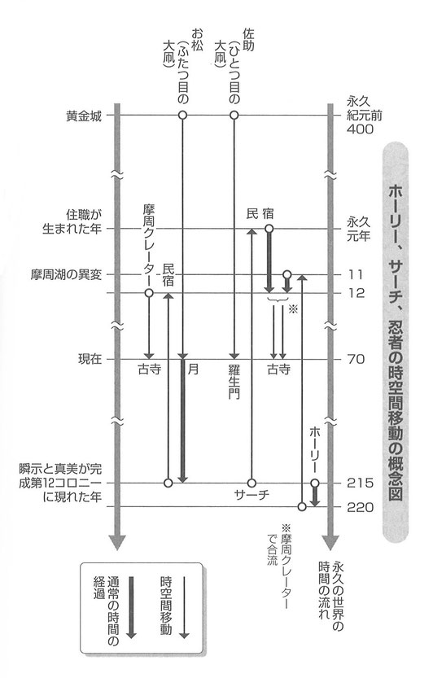
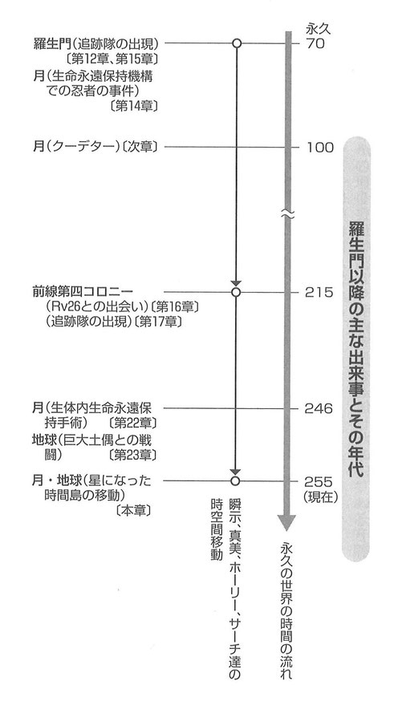

| COSMOS 1 男と女編 | |
| 照 伝光 | |
| 照 伝光 (2019) | |
異色SF巨編 小説
Ｃ･ＯＳ･Ｍ･ＯＳ
第一編 男と女
照 伝光
電子書籍版の発行にあたって（前書きに代えて）
本作品は拙者のホームページ（https://www.cosmos123.com/ ）に連載した「Ｃ・ＯＳ・Ｍ・ＯＳ」（五部作）をＫｉｎｄｌｅの電子書籍用に改編したものです。全第五編、三千数百頁からなる超長編宇宙ＳＦ小説です。関連作品「トリプル・テン」（三部作）を合わせると四千頁（四〇〇字詰原稿用紙にして約七千枚）にもなります。その内容を説明するのは不可能ですが、誤解を恐れずに簡潔に示すと次のとおりです。
＊＊＊
この宇宙は星々のダイナミックな営みに支配されている。その営みはすべて生命の誕生に関わっていて、やがて限られたエリアではあるが生命が満ちあふれることとなった。この宇宙のシステムをＣ・ＯＳ・Ｍ・ＯＳという。
初期の生命体は自己増殖で数を増やしたが、やがて雌雄に別れて生殖という方法を編みだして進化を重ねた結果誕生した高等生物、つまり男と女はあるとき永遠の命を得て子孫を残すことを放棄して、Ｃ・ＯＳ・Ｍ・ＯＳの法則から離脱した。
一方コンピュータやアンドロイドが意思を持ち始める。特にアンドロイドは男と女に分離して子孫を残そうとする。
このような三次元の世界に複数の多 次元の生命体が介入してきた。攻撃的な他 次元の生命体 もいればそうでない生命体もいる。他次元の生命体たちを巻き込んだ宇宙戦争が始まるが、意外な結末を迎える。
＊＊＊
全編を持ち運んで読むことは大変ですが、電子書籍ならこの長編小説も零グラムです。宇宙に広がりや重みも消え去るような感じです。
さあ、無人星に行って星空の下で「Ｃ・ＯＳ・Ｍ・ＯＳ」をお楽しみください。
目次
瞬示・真美（しゅんじ・まさみ）
偶然な出来事から超能力を持つ。誕生日はもちろん生まれた時間まで同じ双子のような幼馴染み。（しかし、偶然ないきさつで超能力を持ったわけではなく、しかも人間ではないことが第二編第三編で明らかになる）
一太郎・花子
瞬示と真美の友人。（第二編以降で活躍する）
ホーリー・サーチ
ホーリーは男の軍隊の兵士。サーチは生命永遠保持機構の元手術室長で女の軍隊に転身してホーリーと戦う。
徳川
生命永遠保持手術を開発、実用化する。生命永遠保持機構の理事長。
キャミ
生命永遠保持機構の副理事長だったが、クーデターのあと女の軍隊の将軍になる。一介の医師から理事長徳川の心をつかんで出世した。
カーン
生命永遠保持機構の警備室長だったが、クーデターのあと男の軍隊の将軍になる。
ミト
女の軍隊の司令官。男であるが、将軍キャミに認められて捕虜から司令官に抜てきされた。
住職
京都の僧侶。ユニークな発想の持ち主で、瞬示と真美を精神面で支える。
リンメイ
サーチの後任の手術室長。手術の腕は神業で考古学者でもある。
Ｒｖ２６
前線第四コロニーのアンドロイドの最高責任者。
時間島
時空間を自由に移動できる異次元の移動装置。その形は一定していない。
時空間移動装置
永久の世界の人間が開発した直径五メートルほどの球体で、小型のタイムマシンのようなもの。男達の軍隊のこの装置の色は緑色で、女達の軍隊のそれは青色。
西暦・永久（えいきゅう）
異なる世界ではあるが、パラレルに存在する世界の年号を示す。一太郎・花子が西暦の世 界の人間で、ほかの登場人物は永久の世界の人間。一応、瞬示も真美も西暦の世界の人間。
「 ｣
通常の会話を表す。
【 】
次元通信で行われる会話を表す。（本編では主に瞬示と真美の直接の会話を示す）
【時】西暦２０１１年１１月１１日
永久００１１年１１月１１日
【空】摩周湖
【人】瞬示 真美 一太郎 花子
西暦２０１１年１１月１１日
＊＊＊
決断と実行のその日暮らし。
やたら計画をつくっても、途中で計算が少しでも狂うと元から計画がないのと同じことになる。それなら、いっそうのこと決断したことをそのまま実行してその日を終わればいい。これは誰しもがしていることで、ひょっとしたら宇宙の真理かもしれない。
さて北海道が秋の卒業式を摩周湖で開催している。それはさびしい卒業式で、今出席者が白い小型車で霧の摩周湖の駐車場に近づく。空っぽの駐車場にすべりこむと展望台への階段に一番近い場所で停車する。黒い長袖 のシャツに紺色のジーンズ姿の少しやせ形の学生がジーンズの上着を持って運転席から降りる。
瞬示（しゅんじ）二十二歳。
助手席から白いセーターに薄いグレーのスラックスをはいた背の高い学生が降りる。
一太郎。瞬示とは札幌の大学の同級生。
足元に注意しながらふたりは階段を上っていく。霧で視界があまりよろしくない、風景としては最悪の摩周湖の展望台に到着する。一太郎は出しかけた薄型のコンデジを尻のポケットに戻す。
「何も見えない」
「まあ、期待はしていなかった」
いい加減な旅行をしているから残念がる様子はない。摩周湖に背を向けると反対側はふしぎにも晴れていて、山並みにまもなく沈もうとするピンぼけの太陽が見える。つまり霧は摩周湖だけを包みこんでいるのだ。
「粘る時間はないな」
一太郎が瞬示の横をすり抜けて先に階段を下りる。眼下には乗りつけたレンタカーが寂しそうに見える。そのそばに売店があるが当然閉店している。開店するのは来年の遅い春だ。
「寒い」
瞬示がジーンズの上着を羽織ったとき、遠くの方からエンジン音が聞こえてくる。その音が段々と大きくなる。真っ赤な四輪駆動車が駐車場に侵入するには少し早すぎるスピードで売店 に接近する。
「ぼくらと同じ物好きな観光客かも」
しかし、赤い車のスピードは一向に落ちない。
「ぶつかるぞ！」
一太郎が叫んだとたん、まったく音らしい音が存在しなかった世界に鋭いブレーキ音とドーンという鈍い音がする。赤い車が売店にぶつかって止まる。同時に両側のドアが開くと若い女が出てくる。黒い薄手のセーターに紺色の上下のジーンズ姿の女が助手席から降りてきた赤いセーターに黒いスラックス姿の少しふっくらとした女に両手を合わせる。
「ごめーん」
赤いセーターの女が無言で運転席に乗りこむと車をバックさせる。ジーンズ姿の女が車の前にまわってぶつけたあたりを見つめる。瞬示がその女を見て叫ぶ。
「マミ！」
その女は瞬示の隣に住む幼馴染 みの真美（まさみ）で「マミ」は愛称だ。瞬示が階段を駆けおりる。
赤いセーターの女が真美といっしょにバンパーをにらむ。
「仕方ないわね。動くし、どうせポンコツだから許してあげる」
「マミィー」
瞬示がさらに大きな声を出す。
「！」
真美が声のする方に顔をあげると瞬示よりもっと大きな声を発する。
「瞬ちゃん！」
真美の顔から見る見るうちに血の気が引く。一呼吸置いて瞬示に向かって走りだす。展望台への階段の下で出会う。
「大丈夫か？」
「ええ......」
「マミじゃない。車だ」
「心配してくれないの？」
「だってピンピンしているじゃないか」
真美は首を左右に大きく振って階段を一段上って瞬示のすぐ前に立つと絶叫する。
「なぜ！なぜ！ここにいるの！」
「卒業前倒し記念旅行をしてる。いったい何を興奮してるんだ？」
「何を言ってるのよ！今朝 会ったばかりじゃないの」
「今朝 ？」
「そうよ！どうやってここに！」
いつの間にか赤いセーターの女が真美の斜め後ろに立っている。
「真美、彼氏？」
「違う！」
「私、邪魔かしら？」
唇と唇がくっつくほどの距離で会話する瞬示と真美を見れば誰でもこう思うだろう。真美はまた後ずさりする瞬示を見つめたまま、力のないかすれた声を出す。
「幼馴染 みの瞬ちゃん、えーと......」
真美が辛うじて瞬示を紹介すると赤いセーターの女に手のひらだけ向けるが、鋭い視線をまったくゆるめることなく瞬示からほんの少しだけ離れる。
「同じゼミの花子」
「はじめまして」
丸顔の花子が丁寧に頭を下げる。そして顔をあげた愛くるしい花子の視線に瞬示が戸惑う。そんな瞬示の表情をなめるように見つめながら真美の言葉がやっと普通のトーンに戻る。
「花子の両親は釧路の近くで民宿をしているの」
瞬示は花子と真美の視線を外すためにペコッと頭を下げる。
「瞬ちゃんは、わたしの隣に住んでいる幼稚園からの同級生なの」
真美は先ほどまでの険しい表情を放棄して「彼氏なんていえるような間柄じゃないわ」と言 わんばかりの表情に変更する。そしていたずらっぽい目を瞬示に向ける。
「彼女、かわいいでしょ。わたしたちの近所に下宿しているのよ」
瞬示は真美に自分の気持ちが見透かされたと思って少し恥ずかしさを覚える。それを裏付けるように真美は花子に視線を戻した瞬示のおでこを突く。
「瞬ちゃんの好み、わたし知ってるもんね」
花子が意外な展開に異議を唱えるように真美を見つめる。同時に瞬示はハッとして花子から真美に視線を移してぶっきらぼうな言葉をはく。
「マミが運転していたんだろ。相変わらず下手くそだな」
真美もハッとして視線を瞬示から花子に向けると頭を下げる。
「花子、ごめんなさい」
「さっきも言ったでしょ。もう気にしないで」
黙って様子を見ていた一太郎に瞬示が気付く。真美と花子も長身の一太郎に初めて気付く。瞬示がふたりに一太郎を紹介する。
「一太郎」
「はじめまして、わたし......」
一太郎は真美が自己紹介しようとするのを制する。
「おふたりの名前はさっき聞きました。それより本当に大丈夫ですか？」
真美は一太郎に見つめられてぽっと顔を赤らめる。すかさず瞬示が反撃に転じて真美の耳元でささやく。
「一太郎、かっこいいだろ」
真美は見透かされたことを隠すために口元を引きしめる。一方、花子は一太郎に頭を下げると笑顔で尋ねる。
「摩周湖、見えました？」
「霧だらけ」
花子がゆっくりと視線を真美に向ける。
「ほら、言ったとおりでしょ」
真美は花子にうなずきながら、瞬示から逃げるように展望台への階段に向かう。
「霧だけでも見て帰ろっと」
花子はそんな真美の後ろ姿に苦笑いしてあとを追う。鉄製の手すりを頼りに真美と花子が階段を上る。瞬示と一太郎も磁石に引きつけられるようにふたりのあとを追う。その途中で一太郎が瞬示に声をかける。
「君たち、双子みたいに見えるな」
初対面の真美を見て一太郎が感じた印象はあながち外れていない。
「よく、そう言われる」
展望台に到着した真美の後ろ姿を見上げながら瞬示が素直にうなずく。その展望台から霧がドライアイスの煙のように駐車場の方に流れはじめる。
西暦２０１１年１１月１１日から永久００１１年１１月１１日へ
＊＊＊
しばらくの間、四人は展望台から霧だらけで何も見えない空間をボヤーッと眺める。そのとき突然、瞬示が震動を感じる。
「揺れている！」
「ほんと！揺れているわ！」
同時に真美と花子が叫ぶと思わず抱き合う。
「地震？」
一太郎が展望台の手すりをつかむと大きな揺れが四人を襲う。
「きゃあ！」
真美と花子は抱き合ったままヒザから崩れる。瞬示は一太郎が差し出した手をつかむと、もう一方の手で手すりを握る。
摩周湖というカルデラに閉じこめられた霧が急にあふれる。バケツ一杯に満たされた水がこぼれるように摩周湖から霧が流れ出す。もしこれが霧でなく水だったら、四人は間違いなくの みこまれて駐車場まで流されるほどの速さだ。しかも、音とも震動ともいえない不気味な雰囲気を伴いながら流れる。
近くにいるのに四人はお互いの姿さえ見えない霧の中で重々しい響きを感じる。やがて足元から左右に揺れる震動がはっきりと伝わる。
やがて震動が収まると勇気を振り絞って瞬示が提案する。
「降りよう！」
返事を確かめずに瞬示が階段に向かうと花子が立ち上がる。つられるように真美も立ち上がると花子のあとを付いて階段に向かう。そして最後尾に一太郎という順番で階段を下りる。
「気をつけて！」
先頭の瞬示の声だけを頼りに、花子と真美はおぼつかない足元を確かめながら、そして手すりをたどりながら慎重に一歩ずつ足を繰りだす。その足元を急に冷たい水が流れはじめる。「水だ！」
真っ先に一太郎が叫ぶ。
幾分霧が薄くなるが、水嵩が増えて足元が不安定になる。すぐに水が流れ落ちる音が大きくなって、まるで急流の川のほとりにいるような轟音 が背後からする。
驚いた四人が一斉に振りかえる。まわりより一段低い展望台から水が霧を押しのけて滝となって自分たちに向かってくるのがはっきりと見える。
「うわぁ！」
急流となった冷たい水がヒザを襲う。腰が浮いて転びそうになるが、瞬示は両手で階段の手すりをつかむ。
「キャアー！」
花子の悲鳴に瞬示は手すりから右手を離すと横にいる花子の左腕に絡める。花子も反射的に瞬示の手をつかむ。
真美は尻もちをついているが両手でしっかりと手すりを握っている。最後尾の一太郎は左手で手すりを握ったまま目の前にいる真美に近づこうと片足を少しあげる。そのとき一太郎の広い背中に水の塊 がまともにぶつかる。
「わあっ！」
一太郎はあえなくバランスを崩して、前のめりになって頭から落ちていく。
その一太郎の身体と水の塊が、手すりをつかもうとする花子の身体にぶつかる。その衝撃で花子の左手首をつかんでいた瞬示の右手が振りほどかれてしまう。花子と一太郎は急流の大きな音の中でわずかな悲鳴を残して見えなる。
真美は水の流れに耐えきれずズルズルと前にいる瞬示に近づく。そして瞬示の背中で辛うじて止まる。
瞬示は手すりをつかむ左手を慎重に右手につかみかえて、両手で手すりを必死に握りしめる 真美と向きあう。左手で真美を抱きかかえながら手すりの柱と柱の間に身体をはさみこんで真美を支える。そして手すりの間をくぐり抜けて真美を引っぱる。
「飛べ！」
瞬示と真美は階段の向かい側に突きでた岩に必死の思いでジャンプする。そして手をついて滝のような水流を呆然と眺める。
「ここも危険だ」
ふたりは這うようにして高いところへ登る。ゼイゼイと息をしながらやっとの思いで小高いカルデラのふちにたどり着く。
展望台からだけではなく、カルデラの低いところから大きな音をたてながら湖水があふれだしている。湖は嵐の海のように白波を立てて何本もの大きな滝がカルデラの端々から外へ流れ落ちている。摩周湖からあふれだした湖水のせいか、いつの間にか霧が消えている。
瞬示と真美は驚くことすら忘れて背中を丸めてまわりを見つめる。
「ハナコ」
真美が鼻声で弱々しくつぶやく。
「イチタロー」
瞬示がありったけの力を振り絞って叫ぶ。
ほぼ真下に見える駐車場を透明の湖水がなめるように流れている。売店はもちろんのこと、 売店に突っこんだ花子の赤い車、瞬示が乗りつけた白いレンタカーも見あたらない。
真美の目から涙があふれる。そしてその場に座りこんで泣きじゃくる。瞬示も真美の横に座わると黙りこむ。いつの間にか水の流れ落ちる音が消えている。水に濡れたふたりの身体が急速に冷える。瞬示が寒さに耐えかねて無意識に真美を抱こうとしたとき、真美がすーと立ち上がる。
「寒い」
瞬示が真美の弱々しい声につられて立ち上がったとき、真美が大きな声をあげる。
「瞬ちゃん！」
足元の湖面が遠くまで続いている。しかし、真美が叫んだのは、湖水の表面が先ほどまでのあふれだす勢いなどなく鏡のようで波ひとつない状況に一変したからだ。
ふたりは変わりはてた湖面を見つめる。湖水は固まったように動かないどころか透明度は底まで見通せるガラスのようだ。
そのとき、ふたりの後ろでふしぎな気配がする。ついさっきまで駐車場がはっきりと見えていたのに今は霧で何も見えない。いつの間にか摩周湖の外側が霧だらけになっている。この付近を上空から見ると、満々と水をたたえた摩周湖が霧の海の中に浮かんでいるように見えるだろう。そして音が消滅した摩周湖のふちで、ふたりはただ立ちつくす。
永久００１１年１１月１１日
＊＊＊
瞬示も真美も同じ紺色のジーンズの上下。お揃 いではなく単なる偶然。男と女なのに体型がよく似ている。身長もほぼ同じ一七〇センチ程度。心持ち瞬示の方が高い。
瞬示の体型は男にしては少しなで肩で、真美は女にしては肩が張っていてスレンダーで男っぽい。真美の髪の毛が極端なショートカットであれば、並んで歩くふたりの後ろ姿は女っぽい兄弟か、それとも男っぽい姉妹のように見えるだろう。顔立ちもよく似ている。ふたりの誕生日も生まれた時間もまったく同じだ。だから二十二歳の瞬示と真美が恋人同士ではないというのは、決しておかしくないのかもしれない。
確かにふたりはいつも手をつないで歩くが、それは恋人同士というより兄妹あるいは姉弟のそれに近い。一太郎がふたりを双子のように感じたのも無理はない。
真美は自分の声すら聞こえないのではと思って振り絞るように言葉を押し出す。
「スマホ」
瞬示の上着の胸ポケットからスマートフォンのストラップが無造作にたれている。瞬示がハッとしてストラップを引っぱる。入れっぱなしのはずの電源が切れている。画面をなぜるが反応はない。
「きのう、民宿で充電したのに」
急に真美が思い出したように驚く。
「きのう？民宿？今日、朝会ったじゃない！」
瞬示が首を傾げる。
「なぜ、ここにいるの！」
真美が鋭い視線でにらむが、瞬示には何を言っているのかさっぱりわからない。無視して瞬示はスマートフォンの電源ボタンを押すが反応はない。今度は裏ぶたを開けて充電池を取り出す。少し眺めたあとセットし直して電源ボタンを押すがやはり何の反応もない。
「濡れたからか」
無視されて気分を害した真美はいかにも安っぽいスマートフォンを見つめる。
「そのスマホ、ただで手に入れたんじゃないの？」
「うっ」
「ズバリね」
瞬示はこんなときによくそんなことが言えるもんだと思いながらスマホを見つめる。
「あっ」
「どうしたの」
画面がボーと明るくなる。画面には時計だけが表示されている。
「十八時半！」
真美も腕時計を見て驚く。
「とっくに陽が落ちているはずなのに」
摩周湖の上空は晴れていて太陽が思ったより高い位置で周囲より少しだけ明るくボーッと見える。まったく眩しさが感じられない弱々しい太陽だ。その太陽のふちに小さな緑色の輝きが現れる。時計方向にまわりだすと太陽のふちにはっきりとした美しい緑色のリングが現れる。ふたりはうっとりとそのリングを見つめるがすぐ消える。視線を足元に移した瞬示が驚きながら太陽に背を向ける。
「影がない！」
瞬示が真美の足元を確認する。真美は太陽と瞬示を交互に見ながら瞬示の影を探す。
「ほんと！」
不安になった真美が瞬示に身を寄せると腕を取るが、すぐ離れて大きな声をあげる。
「乾いている！」
真美が確かめるようにもう一度瞬示の上着の袖 をさすってから自分の二の腕あたりをさする。先ほどまで寒さで震えていたのがうそのようだ。
「乾いてる」
瞬示も自分の服の胸元を確認する。
「いつの間に......」
ふたりは身体のあちらこちらに濡れた感触がないか探り続ける。ずぶぬれになっていたのに完全に乾いている。寒い北国の秋なのに、ふたりのまわりは心地よい春のような温もりに満たされている。
真美が瞬示の袖を引っぱる。
「瞬ちゃん......」
瞬示はうながされるままに真美の視線の先を見つめる。
「黄色......」
いつの間にか無色透明だった湖が透きとおるような黄色に変わっている。
黄色い太陽と透明な黄色い水に満たされた摩周湖。表面は鏡のように反射して波ひとつない。摩周湖はふたりの息すら聞こえないほどの静寂 さに包まれている。
時間が止まったかのような感覚を共有しながら、ふたりは展望台に向かってトボトボと歩きはじめる。展望台からは手を伸ばせば湖面に届くところまで黄色い水が満ちている。
瞬示はあの滝のような流れで残っているはずがないと思いながら石を探す。しかし、瞬示はすぐにゴルフボール大の石と野球ボール大の石を見つけてひとつずつ拾う。まず、小さい方の石を数メートル先の湖面に軽く投げる。石は波紋をつくることなく、しかも音も残さず沈んでいく。石が沈むにしてはひどくゆっくりとしたスピードだ。
「水じゃない！」
真美も黙ったまま食い入るように石の行方を追う。
今度は大きい方の石を湖の反対側、つまり霧の空間に向けて投げる。何かに当たる音を期待したが何も聞こえない。何も見えない分、気味が悪い。
ふたりにはのどの渇きも空腹感もない。疲れもなく、いつでも全力で走るだけのエネルギーがみなぎっているかのような感覚を持つ。
「お腹 、すいてないか？」
瞬示が自分の感覚を真美に確認する。
「え？ええ」
「のどは？」
「乾いていない！」
瞬示の感覚と真美の感覚がふしぎなほど一致する。
「歩けるか？」
「うん」
「摩周岳に登ってみよう」
「どうして？」
瞬示が歩きはじめる。
「高いところの方が何かわかるかもしれない」
真美は返事せずについていく。
時間は確実に進んでいるはずなのに風景は何ひとつ変わらない。摩周湖の周辺は相変わらず霧だらけでふしぎなことに霧はまったく動かない。黄色い湖面も動かない。風を感じることはないし、岩を踏みしめる音どころか何も聞こえない。
あえて音といえばふたりの会話ぐらい。その会話も途絶えたまま。坂道なのに息切れしないし、心臓も普段 と変わらないリズムで動いている。夢ではないのに夢の中にいるような感覚に支配される。
「あれ」
真美が摩周湖の真ん中付近を指差す。
「真ん中が少し膨 らんでいる」
瞬示も摩周湖の異変に気が付く。真美が瞬示に言葉を催促する。
「薄い凸レンズみたいな感じがしない？」
「うん」
ふたりは湖面からは優に五十メートル以上高いところにいるのに、湖の中央部付近とほぼ同じぐらいの高さにいる。円形ではないはずの摩周湖なのに中央部のふくらみが段々と丸みを帯びながら高くなる。
「もう少し登ってみよう」
瞬示が駆けだすと真美もつられて駆けだす。ふたりはどんどん摩周岳に向かって登っていく。時々湖の中央部あたりを確認しながらさらに速度を上げる。
「間違いなく膨 らんでいる」
ふたりが登るスピードより明らかに湖のふくらみの成長の方が早い。湖の水位に変化はないのに、ふくらみの頂点がふたりの目線よりも高くなる。黄色味を帯びた透明な水、果たして水なのか？
「きゃあ！」
急に真美の身体が宙に浮かぶと慌てて瞬示が手を伸ばす。
「つかまれ！」
しかし、瞬示も真美に引っぱられるように宙に浮く。何とか真美が先に瞬示の手をつかむ。今、この手を離せばふたりは二度とめぐり会うことができない別々の世界へ放 りだされるような恐怖感を共有する。手をつないだままふたりの身体が空中に浮かんでいるが、徐々に湖の中央部のふくらみに吸い寄せられていく。
たまらず真美は瞬示にしがみつく。瞬示も真美にしがみつく。今や、ふくらみは成熟した女の胸のような形になる。ふたりはどんどん吸い寄せられてふくらみの中腹あたりへと向かう。
「アアー」
ついにふくらみの中へふたりが吸いこまれる。飛沫 はもちろん波紋も音もなく、ふたりは抱 き合ったまま湖の底へと落ちていく。
やがて衣服が溶けるように消えて、ふたりの身体は透きとおったピンクに変わる。落下の速度はゆっくりだが確実に湖の底を目指して落ちていく。
ふたりはもがくこともなく、どちらかというと気持ちよさそうに落ちていく。お互いの身体がひとつになって落ちていく。身体の色がピンクから湖の薄い黄色に同化して見えなくなる。
【時】永久０２１５年（前章より約２００年後）
【空】完成第十二コロニー
【人】瞬示 真美 ホーリー （サーチ）
＊＊＊
「伏せろ！」
轟音 とともに強烈な青い光が瞬示の目の前で炸裂 する。それなのに意識がはっきりしない。
「助 っ人 さんよ！武器は？」
すぐそばで再び男の声がする。
「武器？」
「身体が光っている！何とかしろ！」
男の言うとおり瞬示の身体がピンクに輝いている。
上方から再び青い光線が弧を描きながら瞬示に向かってくる。とっさに男が瞬示の腕をとって光線の直撃を避けるが衝撃で吹き飛ばされてしまう。体勢を立て直した男が素早く瞬示を岩陰へつれこみ耳元で乱れた息をはく。
「敵は右手五、六十メートル」
もうろうとして現状を認識できない瞬示が男の言葉の一部を復唱する。
「敵？右手？」
暗闇の中、瞬示は自らの輝きで身体にフィットした深緑色の戦闘服の男を初めて認識する。
「なぜ光っている？蛍のマネはやめろ！」
大きな爆発音が断続的にすると舞い上がるチリがふたりの視界を遮る。
男は戦闘服を着用していない瞬示に驚くと、瞬示が助っ人ではなく、やっかいな荷物だとわかって落胆する。
「いよいよか」
男のつぶやきのあと殺気に満ちた複数の人間の気配がする。それまで意識をコントロールできなかった瞬示が急に身体を起こすと、気配のする方向に突進する。
「待て！」
男の声を無視して瞬示が十メートルほど飛び上がる。同時に瞬示の身体から敵の人数と同じだけのピンクの光線が発射される。
「何だ！」
男が驚くのも無理はない。岩陰から身を乗りだすと地面には身体にフィットした紺色の戦闘服を身にまとった七、八人の死体が見える。着地した瞬示は両手で頭を押さえてその場にヒザ から落ちる。
男は倒れた敵の兵士の手からライフルレーザーを取りあげて瞬示に近づく。
「大丈夫か？」
瞬示は応えることなく死体を見つめる。
「女......」
瞬示のつぶやきを無視して男がとどめをさそうと倒れた兵士にライフルレーザーを突きつける。しかし、胸にあいた直径数センチほどの穴から土がこぼれているのを見て、引き金から力を抜くと信じられないという表情を瞬示に向ける。
「戦闘服を突き破っている！完全即死だ」
一瞬、男の表情がゆるむが、どこからか機械音が聞こえてくると息を止めて神経を集中させる。
「戦車だ！」
男はフラフラと立ち上がる瞬示の腕を引っぱって再び岩場の窪 みに身を隠す。
「今度こそ正念場だ」
瞬示にライフルレーザーを手渡そうとする。
「俺はホーリー」
瞬示はライフルレーザーに目もくれずにホーリーを見つめる。
「俺達ふたりに戦車とは大袈裟 な！」
その声に瞬示は上体を起こすと機械音のする方向に顔を向ける。暗いが瞬示には近づく戦車がはっきりと見える。そして立ち上がると戦車に向かって人間とは思えないスピードで走りだす。
「おおい！」
ホーリーと名乗った男が自制心を失って絶叫する。
戦車の砲塔が回転する。しかし、その回転は瞬示の動きに追従できない。砲塔に向かって瞬示の身体から太いピンクの光線が発射される。一瞬にして砲塔を失った戦車はそのままダラダラと直進したあと爆発する。
「助っ人さんよ！」
ホーリーが立ちすくむ瞬示を呼ぶがやはり返事はない。さほど遠くないところで別の戦闘が繰り広げられている。瞬示は顔をあげるとゆっくりだが確実にその方向に歩きだす。同時に瞬示の輝きがピンクから真っ赤へと身体の輪郭が見えなくなるほど強くなる。
「おーい」
ホーリーが呼びかけるが、両手を広げてあきらめに似た仕草をしてから瞬示を追いかける。
＊＊＊
「伏せて！」
轟音 とともに強烈な緑の光が真美の目の前で炸裂 する。
「助っ人さん？武器も持たずにきたの！」
すぐそばで女の声がする。
「武器？」
「身体が光っている！何とかして！こちらの位置がまるわかりだわ！」
真美の身体がピンクに輝いている。
再び轟音 を伴った緑の光線が弧を描きながら上方から真美を捕らえる。そばにいた女が素早く真美の腕を取って岩陰へつれこむとすぐ近くで爆発が起こる。誰かが激しい呼吸を繰り返しながら、あえぐように叫ぶ。
「敵は右手五、六十メートル」
「敵？」
真美の意識はもうろうとしている。
「多分五人」
暗闇の中、真美が発する輝きで首から足元まで身体にフィットした紺色の戦闘服を着用いた十数人の女が浮かびあがる。
「なぜ光っている！」
リーダー格の女がジーンズ姿の真美に驚く。そのとき少し離れたところで断続的に爆発音がする。
真美は向かってくる何人かの人間の足音を聞き分けると、突然、十メートルほど飛び上がって全身から五本の淡いピンクの光線を発射する。
「ウッ」と短い声と人間が倒れる音がしたあと、着地した真美がその場にヒザから落ちる。
真美の攻撃を受けて倒れた兵士を見てリーダーが驚く。
「完全即死だわ！」
その声を聞きながら真美は倒れた兵士の胸から流れ出す土をボンヤリと眺める。そのとき、かなり遠いところで強烈な爆発音がする。
「大隊長！戦車がやられた！まだいる！」
その声に真美の身体がピクッと反応すると、力強く立ち上がって爆発音がした方へゆっくりと歩きだす。
「待ちなさい！」
遠くから真っ赤な火の玉が近づいてくる。制止を無視して真美は輝きを強めると真っ赤に輝く。強烈な輝きのために身体の輪郭が見えなくなる。
女の兵士は固唾 をのんで真美と近づく真っ赤な火の玉を交互に見つめる。距離は二百メートルぐらい。すぐに二十メートルまでに縮まる。
瞬示だ！輝きが強すぎて真美には認識できない。
真美と瞬示が向かいあう。二十メートルほどの距離を保ったままふたりは動かなくなる。その中間地点でバチバチ音を立てながら真っ赤な光が炸裂する。とてつもないエネルギーだ。距離がこれ以上少しでも縮むと大爆発するかもしれない。
瞬示を追ってきたホーリーが眩 しさで思わず目を閉じる。すでに女の兵士はサンバイザーを着用している。
「記録装置の確認を！」
大隊長の命令に透明なヘルメットをかぶった女がサンバイザーをあげて腕の小型モニターを確認する。
「正常に作動しています」
瞬示と真美が発するエネルギーに女の兵士がビリビリと顔が裂けるほどの熱を感じて後ずさりしはじめる。そのとき対峙 する瞬示と真美からではなく、上空から鈍い爆発音がして同時に大きな震動が起こる。
「あっ！」
鋭い閃光 が多数発生すると、はっきりとした光と影がパルス信号のように地表に現れては消える。
「サーチ大隊長！」
「時空間移動装置が！」
次々と女の兵士が叫ぶ。数百メートル上空にいた青い球体と宇宙フリゲートが連続して爆発する。直径五メートルほどの青い球体は「時空間移動装置」で、大隊長サーチが率いる女の軍隊はこれに乗りこんで男の軍隊の支配下にあったこの完成第十二コロニーに進軍した。宇宙フリゲートはその攻撃を支援するために戦車や武器を運んできた。
女の軍隊は突然の出来事に声も出ない。ホーリーも口をポカンと開けたまま上空を見上げる。粉々になった時空間移動装置や宇宙フリゲートの残がいが落ちてくる。地上は二重の硬化ガラス製シェルターに包まれている。その外側のシェルターに遮られた残がいが不気味な音をたてる。
いつの間に現れたのか、その上空に薄い黄色に輝く大きな球体が浮かんでいる。
「あれは？」
「かなり大きい！」
「透明感がある」
うろたえる部下を大隊長のサーチがいさめる。
「戦闘態勢を維持。冷静に対処！」
全員ライフルレーザーを黄色い球体に向かって構える。
「指示あるまで撃つな」
しかし、黄色い球体は縮みながら二重のシェルターを難なく通過して瞬示と真美に近づく。直径三十メートルそこそこまで縮小した黄色い球体は真っ赤に輝いたままじっと対峙 する瞬示と真美を一瞬にして包みこむと強烈な赤い輝きを吸収してまわりを黄色一色の世界に変える。女の兵士は金縛りあったようにまったく動けない。サーチも命令するのも忘れて呆然と見つめるが、すぐ我に返ると大声をあげる。
「撃て！撃て！」
女の軍隊のライフルレーザーの銃口が黄色い球体に向けられたとき、ホーリーがたったひとりで猛烈なスピードで女の軍隊に近づくと至近距離で両脇に抱えた二丁のライフルレーザーを連射する。急な事態に慌てて女の兵士がライフルレーザーを構えるが、ホーリーの正確な射撃にたじろぐばかりで反撃できずに次々と倒れていく。辛うじて伏せたサーチがライフルレーザーを構えるが、ホーリーとの距離が近すぎて照準できない。
いつの間にか黄色い球体が消えて周辺は再び薄暗い世界に戻っている。仁王立ちしたホーリーがライフルレーザーの銃口をサーチの胸に押しつける。熱を帯びた銃口から「ジュッ」という音がして戦闘服から白煙があがると異臭が鼻をつく。サーチとその近くで難を逃れた女の兵士にホーリーが命ずる。
「ライフルを捨てて手を頭の上に」
ホーリーは用心深くまわりを見つめる。苦しそうなうめき声がしばらく聞こえるがすぐに静 寂が訪れる。両手を挙げた女ふたりの背中にライフルレーザーを突きつけながらホーリーは瞬示と真美が消えた周辺や上空を確認するが、瞬示も真美、そしてふたりを包みこんだ黄色い球体も見あたらない。
＊＊＊
「もう一歩で、この完成第十二コロニーを落とせたのに残念だったな」
ホーリーがニヤリと笑うとライフルレーザーの銃口を下げる。
「さて、何とかここから脱出する方法を考えようじゃないか？」
無言のままサーチは威厳 を保とうと背筋をピーンと伸ばしてホーリーをにらみ返す。
「まだわからないのか？この完成第十二コロニーには俺達しかいない」
サーチともうひとりの女の兵士はホーリーのこの言葉に現状をしぶしぶ認識する。
「それに、おまえ達の時空間移動装置はすべて消滅したし、俺達の時空間移動装置はすべて破壊されてしまった」
「わかった」
やっとサーチが応える。
「俺はホーリー、表向きは光学無線技師の専門家だ」
「私はサーチ。完成第十二コロニー攻撃隊長」
「隊長か！俺は大物を捕虜にしたことになるな。勲章ものだが......。おまえは？」
ホーリーはにこりともせずにもうひとりの女に視線を移す。その女は背中の鞄 をしゃがみながら降ろすと、上目づかいでホーリーをにらむ。
「コーマ」
「よし、サーチ、コーマ、ここを脱出するまで休戦だ」
「わかったわ」
サーチがきっぱりと応えるとホーリーはライフルレーザーを投げだす。すかさずしゃがみこんでいたコーマがレーザー銃を拾おうとする。
「やめなさい！」
サーチが叫ぶより早くホーリーはコーマのみぞおちを蹴 りあげる。コーマは腹を抱えてその場に倒れる。
「部下の指導が甘いな」
サーチはホーリーに頭を下げながらコーマの横にひざまずく。
「大丈夫？」
倒れたコーマのそばのレーザー銃に目もくれずにコーマを抱きおこす。
「信用してくれたようだな」
「バカにしないで！」
サーチが立ち上がると足元のレーザー銃を蹴 りとばす。
「おまえが腰に巻きつけた爆弾に気付かないとでも？」
ホーリーは万が一何らかの形で攻撃されたら自爆するつもりでいた。恐らく半径数十メートル以内のものはすべて跡形もなく吹っ飛ぶだろう。
「さすが隊長だな。ところで、無線機はどこにある？」
「おまえが倒した兵士のなかに通信兵がいたはず」
ホーリーは腰に巻きつけていた爆弾を取りはずして慎重に地面に置く。
「無線機が壊れていなければいいが」
「光波を中継していたフリゲートもやられたわ。通信は不可能よ」
サーチの言葉にホーリーは薄ら笑いを浮かべる。
「中継は必要ない」
ホーリーが倒れた数人の女の兵士に近づく。身体にフィットしていたはずの戦闘服がふやけたようにゆるんでいる。顔は醜い土色になって戦闘服の手足の部分から土がこぼれている。
「土に帰るとはよく言ったものだ」
ホーリーは自分も死ねばこのような姿になってしまうのかと思うと神妙な気持ちになる。
「抵抗しないで」
サーチはコーマにそう言い残すとホーリーのあとを追う。
「あれよ」
サーチがホーリーを追い越して土となった通信兵の死体の前に立つ。ホーリーが乱暴にサーチを押しのけると、ヒザをついて湿り気が残った土に埋もれた無線機を掘りだす。そして丁寧に土を払うとすぐさま電源を入れる。
「無傷だ！正常に作動する」
無線機に内蔵された小さなモニターが希望の輝きのように光りだす。サーチもホーリーの横でヒザをつく。
「モニターも無事だ」
モニターの輝きでホーリーの顔がはっきりと見える。心にしみとおるような人なつっこい笑顔でモニターを見つめるホーリーにサーチは違和感を覚える。
ふたりが無線機を持ってコーマのところに戻る。
「拡散ライトを持っていないか」
コーマがうなずくと腰のバンドにつけていた球形のライトを手にする。
「ワンチャンスしかない」
「どうするの」
サーチにはモニターの輝きを希望の光と感じる理由が見いだせない。
「改造して、出力を何万倍にして送信する」
「ワンチャンスなら、おまえの味方にだけ通信して終わりということか」
サーチが話が違うという調子で詰問 する。
「隊長にしては考えが浅いなぁ」
ムッとしてサーチが立ち上がる。
「暗号は使わない。とにかく送信するだけだ。それに暗号を使えば送信データの量が増えるだけだ」
ホーリーは器用に無線機を分解しはじめる。
「よく考えろ」
サーチは何と応えていいかわからないという表情をして、再びヒザをついてホーリーの手元を球形拡散ライトで照らす。
「あのふたりのことだ」
サーチがハッとしてライトを落としてしまう。
―― そうだ！何としてもこの事件を報告しなければ
「ちゃんと持っていろ！そのためにおまえ達を殺さなかったんだ」
「あの強烈なエネルギー......」
サーチは慌ててライトを拾うと持つ手を引きしめる。
「こんな話はどうだ。仮に俺達が無人の惑星に流れ着いたとして、救助される見込みもないと したら、協定を結んでもいいんじゃないか」
「ここは協力するしかないのね」
「やっとわかったか」
ホーリーがサーチに笑顔を向けたときライトの光が弱くなる。サーチは返事をせずにコーマの様子をうかがう。
「ライトを探してくるから、ここでホーリーの手元を照らして」
「物わかりが良くなってきたな。仲良くやろうと思えばやれるのに」
ホーリーが小さく笑う。サーチは何も言わずに立ち上がると土となった仲間の兵士のところに向かって歩きだす。
【時】永久０２１５年～０２２０年
【空】完成第十二コロニー
【人】ホーリー サーチ カーン キャミ
＊＊＊
物々しい数の女の軍隊の青い時空間移動装置と男の軍隊の緑の時空間移動装置が完成第十二コロニーに到着してから十時間たった。
このコロニーで起こった事件がいかに重要かは、両軍の将軍はもちろんのこと関係する全司令官が集まっていることからも明らかだ。
女の軍隊も男の軍隊も争うことなく、むしろ協力的にシェルターの外で破壊された時空間移動装置や宇宙フリゲートそして地上の戦車の残がいを集めて調査する。
シェルターの外ではありとあらゆる方向にレーザー光線が飛び回わる。攻撃用のレーザー光線ではなく、時空間の歪 みの痕跡 を調べる特殊なレーザー光線だ。
テントの中で両軍の将軍が討議している。将軍も含め両軍の人間はすべて二十歳 代に見える。
「この完成第十二コロニーの支配権はどちらにもなく、アンドロイドが復旧させるまでは前線 第十二コロニーに格下げということでいいな」
男の軍隊の将軍カーンはかっぷくのいい上半身を揺すりながら女の軍隊の将軍のキャミに念を押す。
完成 コロニーというのは、人間が不自由なく地球と同じように生活ができるようにアンドロイドに改造させた星のことだが、不自由なくとはいっても二重のシェルター内の限られた空間でのことで、星全体が地球とまったく同じ環境に改造されているという意味ではない。シェルターの中では何とか快適に暮らせるということだ。これに対して前線 コロニーというのは改造中の星のことだ。
「カーン将軍の仰 せのとおりで結構ですわ」
大きな胸の前で腕を組んだキャミが大袈裟にうなずくと逆に提案する。
「ここで収集したデータは前線第四コロニーの中央コンピュータに保存することでよろしいでしょうか？」
カーンは前線第四コロニーが所属する方面を統括する司令官に視線を向ける。前線第四コロニーの中央コンピュータは、男の軍隊を脱走した裏切り者が製造した史上最高の性能を持つ量子コンピュータだ。様々な経緯があって、前線第四コロニー及びそのコロニーの中央コンピュータは両軍の共同統治となっている。しかも人間でなくアンドロイドが管理している。そうい う意味では前線第四コロニーは永遠に完成コロニーに格上げされることはない。
先ほどの司令官がカーンに近づき耳打ちする。カーンがうなずくとキャミに向きなおって確認する。
「全コロニーのなかで唯一、量子コンピュータを持つコロニーのことだな」
キャミの目線が少しゆるむ。
「そうです」
カーンがキャミを正視する。
「条件がある」
カーンが条件を付けることを待っていたかのようにキャミは首を縦に振って言葉をうながす。
「前線第四コロニーは両軍の共同統治のコロニーだ」
「そうです」
男と女は壮絶な戦争をしているが、人類共通のデータについては例外的に前線第四コロニーの中央コンピュータが保存管理している。
「データの保存方法と利用の方法を担当司令官の間で綿密に検討させたい」
「もちろん、賛成ですわ」
カーンがすぐに先ほどの司令官に作業に入るよう命令する。
「ミト司令官、検討作業を」
キャミも横にいるミトと呼ばれた司令官に指示する。ミトが部下を呼んで作業内容を伝える。どう見ても男に見えるミト司令官をカーンは苦々しく見つめてから視線をキャミに戻す。
「妙に落ち着いているな」
「そうかしら」
キャミがカーンを見すえる。男と女が戦争をする前、カーンはキャミの部下だった。カーンはキャミに圧倒されまいと視線を外さない。
「あのふしぎな男と女に関して何か知っているのか？」
カーンが単刀直入に尋ねる。
「知っていれば、ここへ来ませんわ」
元部下だったカーンの元上司キャミに対する嗅覚 は鋭い。それは部下の観察力の方が、上司の部下に対するそれよりも鋭いという法則が働くからだ。しかし、キャミはうろたえることなく逆にカーンの言葉を注意深く分析する。
キャミはこの質問からカーンがあのふたりに関して何も知らないことを確信する。もっとも、カーンと同様、はるか昔に瞬示と真美に出会っていたことに気が付くどころか、記憶もない。それは今のキャミとカーンには自覚することが不可能というより因果律に従わない遠い過去の出来事だったからだ。
「あのふたりを捜しだしてつかまえるつもりか」
はぐらかすように逆にキャミがカーンに質問する。
「カーン将軍はどうお考えなのですか？」
「今わかっているデータからすると、捕らえるのは不可能に近い」
「そうですね」
すぐにキャミは相づちを打ってテントの端にいるサーチとコーマを見つめる。カーンはキャミの視線の先に戦闘ヘルメットをかぶったままのサーチを見つけて驚く。すぐさまキャミはカーンに余裕がないことを見抜く。
「サーチ、それにホーリーの報告が真実だとしたら、あのふたりはとてつもない能力を持っていることになるわ」
「サーチ......生命永遠保持機構の手術室長だったサーチがなぜここにいる？」
「人事異動はどこにでもあること。サーチは完成第十二コロニー攻撃部隊の隊長でした」
サーチが今回の事件で重要な役割をしたという報告を受けていなかったことに気が付いてカーンはうろたえる。そして、悟られてはならないことを口にしてしまう。
「どうやら新しい生命永遠保持手術を開発したのではないことだけは確かなようだな」
キャミは余裕を持ってふしぎな男と女がなぜ同時に現れたのかを考えながら、カーンを退屈させないように口元を開く。
「もしそうなら、男に手術をしませんわ」
「いや、実験台として捕虜の男を使うという手もある」
キャミはカーンが生命永遠保持手術の技術面で劣等感を持っていることを感じとる。そして同時にカーンの発言から男の軍隊が新しい生命永遠保持手術を開発していないことがわかってほっとする。
「今のところ、どちらの味方でもないのでは？」
カーンはキャミに中途半端にうなずいてから、やはりテントの端の方にいるホーリーをいちべつする。キャミはカーンの視線が少しゆるんだのを見計らって組んでいた足を入れかえる。
「ホーリーがいなければ、ここでカーン将軍とお目にかかることはなかったでしょう。でも私達が有利に戦闘を進めているのは認めますか？」
「あのふたりを殺すという答えか」
カーンが先回りするとキャミはカーンの言葉に用心する。
「カーン将軍、あのふたりを捕らえるどころか味方にするのは不可能だと思いませんか」
テントの入り口が開いて男と女の将校がふたりずつ入ってきて、それぞれ両将軍の前に進むと敬礼する。
「データの収集が終わりました」
キャミが立ち上がって女の将校に命令する。
「データをすべて前線第四コロニーの中央コンピュータに転送するように」
カーンは座ったまま男の将校に命令する。
「すべてのデータが前線第四コロニーのコンピュータに転送されるかチェックしろ」
そして、カーンとキャミが声をそろえる。
「撤退！」
＊＊＊
テントの外で両軍が集結する。男と女の司令官が戦闘ヘルメットに組み込まれたマイクを通じて交互に指示する。
「今から十分後の一八時にこのコロニーから離脱する」
「離脱の方向はすでに伝えたように、お互い正反対の空間に向かう」
「その一時間後の一九時に休戦協定が終了する」
指示が終わると全軍があわただしくそれぞれの時空間移動装置に向かう。
テントの中では立ち去ろうとするホーリーにカーンが近づく。そして肩を叩くと偶然近くにいたサーチを懐かしそうに見つめる。
「ふたりともご苦労だった」
キャミもふたりに近づいて、カーンをにらみつけるサーチに自制をうながすとポットが置かれたテーブルを指差す。
「あと七、八分しかないけれど、コーヒーでも飲んでゆけば」
キャミはそう言い残すとカーンとともにテントを出る。サーチは今ここにいた両将軍と、壮烈な戦闘を繰り返して対立しているそれぞれの将軍とは別の人間ではないかと錯覚しそうになる。一方ホーリーは両将軍を見送るとテーブルに近づく。しかし、サーチにはキャミがなぜカーンといっしょに自分たちにコーヒーを勧めたのか理解できずに、カーンの背中がテントのすき間から消えるまで見つめ続ける。
ホーリーはそんなサーチの態度をふしぎに思いながら、両将軍が瞬示と真美の目撃者としての自分たちを特別扱いしていることを理解する。一瞬とはいえ協力しあったからこそ貴重な報告が可能となったのだから当然だと考える。そして、現実は厳しいとしても、今の男と女の関係がひょっとしてよい方向に向かうかもしれないとも思う。さらにこれから先、重大な事件が待ちかまえているのではと、直感的に感じとるとサーチの後ろ姿に女を感じる。
「サーチ。せっかくのごほうびだ。コーヒーで乾杯しようじゃないか」
サーチはホーリーに返事することなく戦闘ヘルメットを外す。ヘルメットからサーチの亜麻色の長い髪の毛がはじけるように両肩を包む。そして無言のままテーブルの前に立つとポットを持ちあげてコップに熱いコーヒーを注ぐ。ホーリーがにっこりとして待つ。
「ありがとう。サーチ」
詳細な報告を求められたあと緊迫した両将軍の応酬にホーリーもサーチも疲れ果てた。今、 ぽっと穴のあいたような時間と空間がふたりを包みこむ。やっとサーチが口を開く。
「夢でも見ているようだわ」
ホーリーとサーチは幅の狭いテーブルに向かいあって腰をかける。サーチが初めて余裕を持って間近にいるホーリーを直視する。髪の毛は硬そうで顔は浅黒くて額 には男らしさがにじみ出ている。精悍 な顔立ちだが、笑うと妙に人なつっこい少年のような顔になる。
「俺達、何のために戦ってるんだろ」
ホーリーは一口飲んだあとのコーヒーの余韻を楽しむ。
「宿命よ」
女の軍隊の方が有利に戦いを進めていることもあってサーチの言葉に勢いがある。
「あのふたりは何者なのかしら？」
「重要人物だ」
首を傾げてからサーチがコーヒーを飲む。
「共通の敵なのかしら」
「なぜ、そんなふうに悲観的に考えるんだ？共通の味方かもしれないぜ」
ホーリーは少なくとも敵ではないと確信する。返事のないサーチに再び言葉を送る。
「何を調べていたのか、わかるか？」
両軍併せて五百人を超える技術官が地上と上空を様々な測定器やコンピュータを駆使して精 査していた。サーチには何を調べているのか見当もつかなかったが、光学無線技士だったホーリーにはおおよその見当がついている。
「あのふたりがここに現れたときの時空と、黄色い球体が消え去ったときの時空のデータを集めていたのさ」
「時空？」
ホーリーが少年のように笑う。
「本体に戻ればいやでも勉強させられるぞ」
「なぜ？」
「それはこれからのお楽しみだ」
ホーリーは残ったコーヒーを一気に飲みほすとコップをテーブルにおいて微笑みながら立ち上がる。
「お代わりといきたいところだが時間がないな」
サーチも立ち上がる。
「もう会うことはないんでしょうね」
「いや......」
ホーリーはいったん言葉を切ってサーチに一歩近づく。
「必ず会う」
サーチはホーリーの力強い言葉と息を顔に受けながら何とか言葉にする。
「敵として？」
「なぜそんなふうにしか考えないんだ。俺は友人として再会する」
ホーリーの断定的な言葉にサーチは一呼吸置いて真顔で応える。
「もしそうなら楽しみにしているわ」
サーチはまだ笑顔でいるホーリーに今までにないゆったりとした気分になる。ホーリーがまっすぐにサーチを見つめ、ごく自然に手を差し出す。何とか微笑みかけたサーチは急に全身が震えるのを止めようとこわばった表情をする。
「必ず、会う」
ホーリーが自信満々の表情をしてから、さっとサーチに背中を向けてテントの外へ歩きだす。
「ホーリー」
サーチが唇の端で呼ぶ。その言葉を予想していたようにホーリーが首だけをサーチに向ける。
「ありがとう。ホーリー」
サーチがぎこちなく微笑むとホーリーが立ち止まる。
「あなたがいなければ、一生この完成第十二コロニーに閉じこめられていたかもしれなかったわ」
ホーリーはサーチに動く気配がないのを感じると腕時計を見ながら残念そうに再びテントの 出口に向かって歩きだす。そして、背中を向けたまま右手を挙げる。
「もう少しのところで協定を結べたのに。今度会うときは是非素晴らしい協定を結びたい」
ホーリーが振り返って握手を求めてくるのではと期待したサーチの目に涙が浮かぶ。ホーリーの最後の言葉がサーチの脳裏に刻みこまれる。
＊＊＊
女の軍隊の反応は速かった。
あの黄色い球体についての手掛かりはまったくなかったが、想像をはるかに超えた高い性能を持った時空間移動装置だと断定した。
瞬示と真美は新しいタイプの人間なのか。しかも男と女でありながら互いを攻撃することなく消え去ったことに首脳は当惑すると、男の軍隊よりはるかに危険な存在だという結論に至る。すなわち、万が一あのふたりが男の軍隊の味方になったとしたら、という危機感を持った。
あのふたりが完成第十二コロニーにやってくる前の時空間をコンピュータで解析し、ふたりの探索に取りかかる。つまり、ふたりがやってきた時間座標（時代）と空間座標（場所）を解析して、ふたりが存在する時空間に時空間移動して正体を見極めようという作戦をたてる。
まず、時間座標の解析を行った。その結果次のデータを手に入れる。
時間軸４５１２６
時間点６８１９４
このデータはかなり大ざっぱで永久元年から永久００２０年の二〇年間の一時点という程度の時間座標を示していた。永久という年号は生命永遠保持手術という画期的な不老不死の手術が確立されたことを記念して制定された年号だ。
この物語ではふたつの年号が使われる。ひとつが瞬示、真美、一太郎、花子の世界で「西暦」という年号だ。もうひとつはホーリー、サーチ、キャミ、カーンの世界で「永久」という年号だ。このふたつの世界は平行して存在している。いわゆるパラレルワールドだ。西暦２００１年が永久元年すなわち永久０００１年に対応する。永久の年数に２０００を加えると西暦に換算できる。
さて女の軍隊は時間座標に続いて空間座標のデータを得る。
空間軸９８１２３
空間点７１４６５
（場所は地球の日本の北海道）
女の軍隊の上層部は時間座標と空間座標のデータにあわてふためく。あのふたりは未来の世界からやって来たという予想がまったく外れた。何と約二百年前（永久００１０年プラス、マイナス１０年前後）の過去の地球から、前線第十二コロニーに格下げされた完成第十二コロニーへやって来た。自分たちに重要な関わりのある祖先かもしれないが、その過去というものが 自分たちの世界の過去なのかというと、確信が持てない不明瞭なデータも存在する。データ解析は幾度もやり直されたが結果は同じだった。ただし、その解析自体が非常に甘いものだとは自覚していなかった。
そのころの地球のデータを前線第四コロニーの中央コンピュータのデータライブラリから収集する。データライブラリには、約二百年前から始められた生命永遠保持手術を受けた人間全員の顔と全身の写真や経歴などが保存されていた
その一人ひとりの顔写真とサーチとコーマとそしてホーリーの記憶から抽出された瞬示と真美の顔や体型のデータが突き合わされた。国籍、人種を問わず突合 作業を行うが一致するデータは一件もなかった。
それもそのはずで、瞬示と真美は生命永遠保持手術が開発された永久の年号を持つ世界の人間ではなかった。
続いてふたりが完成第十二コロニーから移動先の時空の解析が行われた。驚いたことにほぼ元の時空へ戻っていた。すなわち永久元年から００２０年の北海道に戻っていると解析されたのだ。過去から未来に来て、再び過去に帰ったことになる。
実際は、瞬示と真美は西暦２０１１年１１月１１日の摩周湖から西暦の世界とは異なる永久００１１年１１月１１日の摩周湖に横滑りしてから、永久０２１５年の完成第十二コロニーに移動して、その後永久００１２年６月の北海道に戻った。
女の軍隊は早速、最新鋭の青い球形の時空間移動装置に第一次先遣隊五人を乗りこませ、永久元年の北海道に送りこみ情報を収集させた。過去に時空間移動するということは因果律を乱す恐れがあるため、この調査は慎重に行われた。しかし、そのころの北海道にこれといった異変は見あたらなかった。
次に同じように第二次先遣隊を永久０００２年の北海道に送りこんだ。
その間、どうやってあのふたりを見つけだすかという作戦が連日のように議論された。
最終的に因果律を乱さないように小人数の兵士を北海道に派遣してその時空間の世界にとけこむように長期間滞在させて、ふたりを捜しだすという作戦に変更する。そのころの北海道のどこかに最悪の場合は十数年間滞在させるのだ。
第二次先遣隊も手掛かりなしで戻ってきた。当然第三次先遣隊の派遣は見送られて、先ほどの作戦が実行される。すなわち真美と遭遇したサーチとコーマが派遣されることになる。もちろん、サーチとコーマは進んでこの作戦に志願した。女の軍隊はふたりに興味があるものの、正体を探るよりは因果律に抵触しないように抹殺することを優先させることにした。
時間をさかのぼって瞬示と真美を抹殺すれば、完成第十二コロニーでの事件はなかったことになる。女の軍隊は単純にそれでいいと考えた。
ただ北海道であのふたりを発見しても、完成第十二コロニーに来る前のふたりなのか、完成第十二コロニーから戻ったふたりなのかを区別することができないというツメの甘い作戦とな る。これは女の特性なのかもしれない。
いずれにしても女の軍隊の作戦は、完成第十二コロニーで起こった事件からわずか三か月で実行された。
＊＊＊
男の軍隊はかなり手堅い方法を採った。というより、戦略の決定がなかなか進まなかったためにいたずらにすぎていく時間を何とか有効活用したと説明した方が正確だろう。表現を変えれば、男には女のような直感力がなく、議論を好むという欠点がこのような状況を招いた。
あの黄色い球体についての手掛かりはまったくなく、女の軍隊と同じように高度な性能を持った時空間移動装置ではないかと推測した。
瞬示と真美はいずれにしても新しいタイプの人間に違いない。そして女よりはるかに危険な存在と結論された。
しかし、一方ではあのふたりが男の軍隊の味方になってくれたら、という期待感も併せ持つ。結果として男の軍隊の支配下にあった完成第十二コロニーが女の軍隊に占領されずにすんだばかりか五分五分に持ちこめたのは、ふたりのおかげだと考えたからだ。
そのふたりが完成第十二コロニーにやってくる前の時空をコンピュータで解析し、ふたりを探索する方法を模索する。
まず精密に時間座標と空間座標を割りだすためのプログラムを開発した。女の軍隊があのふたりを抹殺する前提で作戦を実行するだろうと推測して、解析に時間がかかってもやむを得ないと考えた。つまり女の軍隊が先にあのふたりを発見して抹殺すれば、一件落着ということになるのだ。女の軍隊がたやすく抹殺できるはずがないし、正確にあのふたりがやって来た時空間を割りだせれば、あのふたりを発見するのは男の軍隊の方が結果的に早くなる可能性もある。味方にできなくても何らかの情報が得られれば、それは貴重な収穫になるのではと期待した。このように消極的な作戦しか立てられなかったのは男の軍隊が劣勢であったことが原因だった。カーンのキャミに対する劣等感がそのまま現れたのかもしれない。
男の軍隊は解析に五年費やした。その結果、精密なデータを得ることができた。
時間軸４５１２６１４５９６３２６１２４
時間点６８１９４２２１４３１４５６７４
（永久００１１年１１月１１日午後７時頃）
空間軸９８１２３２２３６２０６７９２３
空間点７１４６５００７９４２９０１２１
（場所は日本の北海道の摩周湖の展望台付近）
上層部はこのデータにあわてふためく。あのふたりは未来からやってきたのだろうという予想がまったく外れた。何と約二百年前の地球から、ふたりはやってきた。解析作業は幾度もや り直されたが結果はすべて同じだった。
そのころの地球のデータを前線第四コロニーの中央コンピュータのデータライブラリから収集する。国籍、人種を問わず突合 作業を行うが一致するデータは一件もなかった。
因果律が乱れるのを避けるため、無人の時空間移動探査機数基を永久００１１年１１月１０日から１２日までの摩周湖に送りこむ。
その結果、永久００１１年１１月１１日午後７時ごろ、摩周湖付近で大規模な地殻変動があって、巨大なクレーターが出現したという事実をつかむ。
摩周湖の異変とあのふたりに重大な関連性があると確信した。これは女の軍隊が入手できなかった貴重なデータだった。
続いてふたりが完成第十二コロニーから移動した先の時空の解析が行われた。驚いたことに、ふたりは永久００１２年６月のある日、摩周湖から少し離れたところに戻っていた。
女の軍隊から遅れること五年、永久０２００年に瞬示を実際に見たホーリーと、ホーリーの部下として時空間移動装置のベテラン操縦者であるカイトという兵士が摩周湖に派遣される。
もちろん異変を起こす直前の摩周湖に時空間移動する。ただし任務の内容は、「味方になる可能性があれば別だが、そうでなければあのふたりを抹殺せよ」であった。
【時】永久００１２年６月（前章より約２００年前・第一章の摩周湖から７か月後）
【空】北海道（民宿）
【人】瞬示 真美 老婆 ケンタ
＊＊＊
【集まれ】
【集まるのよ】
【慌てずに】
【ゆっくりと】
口で言っているのではなく、耳で聞いているのでもない。意識が言って、意識が聞いている。意識がこだまするように同じ言葉を何度も発信し、何度も受信する。まるで意識が無数にあるようにお互い呼びあう。もう何日も何か月も呼びあっている。
【違う】
【いや、そうだ】
無数の意思が試行錯誤する。意思の数がまとめられて何百となるまでかなりの時間を要した。 何百となると何十になるまでは一日も必要としなかった。そして、一瞬のうちに一組の意思になった。
その一組の意思が分割されると、瞬示と真美が元の身体を取り戻す。
【瞬ちゃん】
分割されたひとつの意思が瞬示を呼ぶと、もうひとつの意思が真美に叫ぶ。
【おぼれるぞ！】
真美の手を引いて瞬示が水面から顔を出す。ふたりがいた付近の水は透明な黄色だ。それに気付かずにプーと口から水を吐きだして岸に這い上がる。
明るい、青い、暖かい。
草のニオイ、花の香り、潮の味。
水の音、波の響き。
海辺に近い春の午前の雰囲気がふたりを包む。見渡すと目の前に小高い丘が横たわっている。ここからは見えないがその向こう側は雄大な海だ。
相変わらず、ふたりは紺色のジーンズの上下を着ているが、水に濡れたせいか鮮やかに見える。
「川の中にいたの？」
頭の毛から雫をたらしながら瞬示がうなずく。
「ここはどこ？」
真美は無駄とわかっていながら胸のポケットからハンカチを取り出す。つられて瞬示もすべてのポケットをまさぐるがハンカチは見あたらず、スマホのストラップに手がかかる。ポケットから取り出して電源ボタンを何度か押す。
「やっぱり電源が入らない」
摩周湖のときと同じだ。
「水につかったから？」
「いや、濡れているような感じがしない。あっ！」
真美も自分の服をさわりながら驚く。
「乾いているわ。服もハンカチも！」
ふたりは慌てて身体のあちこちをさわる。さっきまでずぶぬれだったのに、完全に乾いている。
「また、同じことが......」
瞬示はスマホとの格闘を中止して、ほかのポケットをまさぐると小銭入れを見つける。
「ハンカチ、持ってないの？」
「......」
「不潔ね」
真美がゲラゲラと笑う。そして口からでなく瞬示の意識の中に直接話しかける。
【わたしたち、いったい】
瞬示も同じように真美の意識の中に言葉を送る。
【しゃべらなくても意思が通じる】
ふたりはもう何度もこのような形で会話をしてきた。今、改めてお互いの意識が共有されていることを認識する。
摩周湖でのこと、そして見知らぬ場所で何か戦争のようなものに巻き込まれたこと。ふたりが経験したことすべてが一致していた。夢ではない。ただし、証人はいないし証拠もない。
「同じ夢を見ている」
真美が瞬示を無視して飛び跳ねる。
「何してるんだ？」
「飛べない！」
「ハア？」
「わたし、アクロバットみたいに飛び上がったのよ」
「そうだ！」
「光線は？」
「どうやって発射したんだっけ」
今度は瞬示が真美に向かって手刀を切る。
「それってウルトラマンのマネ？」
真美が身体を左右に振って叫ぶ。
「残念でした。全部外れたわ」
瞬示が憮然として真美をにらむ。そして手刀の構えを崩すとうつむく。
「とっさのときにしかできないのか」
【だけど、お互いの心に直接話せるわ】
ほらねっという表情を浮かべながら真美が微笑む。
【テレパシーだけはできる】
ふたりは手をつなぐと民家に向かって歩きだす。
「あの戦闘は何だったんだろう」
「まるで女と男が戦っているみたいだったわ」
つがいのモンシロチョウがふたりにまとわりつく。
「春！」
「摩周湖で出会ったのは秋よ！」
ふたりは会話を停止して記憶をたどる。
摩周湖に吸いこまれたあとは、暗くて岩ばかりの場所で戦闘に巻き込まれた以外に記憶がな い。その記憶も何か夢のような淡い記憶でしかない。
「半年間、ずーっと水の中にいたのかしら？」
瞬示がまさかというような表情をする。
「お母さんやお父さん、心配しているだろうな」
真美が急に立ち止まって泣きだす。瞬示もそれにつられて急に涙を浮かべるが、真美に気付かれないように手の甲で涙をぬぐうと真美の肩に静かに手を置く。
「行こうか」
「どこへ」
「どこって、あそこしかないだろ」
民家に続くお花畑のゆるやかな登り坂をふたりは歩いていく。
「見て見て、これキレイー」
さっきまで泣いていた真美が機嫌良くハミングしながら、気に入った花を引きぬいては束ねる。
「この花、カワイイ」
真美があどけない声をあげて目をクルッと半回転させる。
「見るだけにして摘みとらなくてもいいのに」
「だってカワイイもん」
真美の変わり身の速さに瞬示が苦笑する。しかし、瞬示の脳裏にあるのはまず電話を借りることだった。花に飽きたのか、真美が瞬示を追い越して坂を登りきる。
「あっ！」
真美が束ねた花を落とす。
「瞬ちゃん......」
丘の下からでは見えなかったが、二階建ての民家と真っ赤な四輪駆動車が見える。
「ここは花子の実家よ！」
「えっ」
瞬示の記憶がよみがえる。その車は真美が摩周湖の駐車場の売店にぶつけたあの赤い車だ。
「花子、無事だったんだ！」
真美が飛び上がって喜ぶと赤い車に向かって駆けだす。
「まさか」
慌てて瞬示が真美を追いかける。
「偶然じゃ？」
ふたりは赤い車の前で立ち止まる。
「わたし、ナンバー覚えてるもん」
「えっ！じゃ助かったんだ！信じられない」
「でも、ナンバープレートの形......」
「違うなあ」
ふたりが見慣れているナンバープレートより細長い。
「番号は同じなのに......」
「ひょっとして、一太郎も助かったのかも！」
「いっしょにいるかもしれないわ」
そのとき民家の玄関が音もなく開く。青いセーターにグレーのスラックスをはいた背の高い老婆が出てくるとふたりに気付く。その表情は驚きに満ちている。
【花子のお母さんじゃない】
老婆が背筋をしゃんと伸ばしてから枯れた声をあげる。
「旅の方か？お泊まりか？」
民家の壁には「民宿厚岸 」と書いてある。
【厚岸？】
【釧路の少し西の方にある自然公園のあるところ】
老婆が周囲を見渡す。そのとき、オートバイのエンジン音が聞こえてくる。
「こんなときに」
老婆が独り言のような声を出す。
ふたりは改めてまわりを眺める。空は高く、蛇行する川と数え切れないほどの幅の狭いクリークが自由奔放に縦横無尽に流れる湿原が民宿の間際まで広がっている。動くものといえば雲だけで近くに山はない。民宿がある丘は徐々に細くなって、その先端は海に向かって沈む。
けたたましいエンジン音がする方向から大きな段ボール箱を積んだ黒いオートバイが向かってくる。
「まあ、お入り」
老婆はふたりを急かすように勧める。
【変だわ】
真美が信号を送る。
【なぜ？】
【あのときの予定ではここに泊めてもらうことになっていたんだけど......】
【あのときって？】
【摩周湖で出会った日】
【どういう予定？】
【空港に迎えに来てもらって摩周湖を見てからこの民宿に泊まる予定だったの】
真美はこの民宿の状況を確認してから瞬示に報告しようと思って信号を止める。瞬示はそんな真美の意識を感じとりながら、若い男が運転するオートバイを見つめる。
オートバイは玄関を通りすぎて建物の奥で止まる。エンジンを切ると黒いジャージに身を包んだ青年に限りなく近い少年がオートバイから降りる。
「とう 婆ちゃん、お客さんか」
少年は瞬示と真美に頭を軽く下げて荷台から真っ黒なゴムロープでしっかりと固定された段ボール箱やトロ箱を下ろす。
「かあ 婆さん、ケンタが市場から戻ってきたぞー」
とう 婆さんが家の中に向かって叫ぶ。そのケンタは黙々とネギがはみ出した段ボール箱を持って勝手口に向かう。
【花子に弟はいないわ】
真美が怪訝 そうな表情をしながら信号を流す。老婆がそんな真美の顔をしげしげと見つめる。瞬示は真美の信号を無視しておもむろに切りだす。
「ちょっと電話をお借りしたいんですが」
「電話？どうぞどうぞ」
とう 婆さんはふたりを玄関に招く。スニーカーを脱いで板の間にあがると、とう 婆さんはすぐ右側の部屋に案内する。そこはちょっとした事務所風の部屋だ。古い灰色のスチール製の机の上にこれもまた古いダイアル式の黒い電話機が置いてある。
「どうぞ」
「ワケは後でお話しします」
「いい、いい」
「ありがとうございます」
とう 婆さんが部屋から出ていくと奥に向かって呼びかける。
「かあ 婆さん」
「なんじゃ」
＊＊＊
食い入るように観察していた真美が最後にダイアル式の古い黒い電話機を見つめる。
【何もかも、前に来たときと同じなのに】
瞬示が受話器を取って自宅の電話番号をぎこちなくダイアルする。
「もしもし、瞬示です」
「ハア？」
電話の向こうの声は瞬示の予想と大きく異なる。
「すいません。間違えました」
焦って番号を間違えたのか？瞬示は受話器をいったん電話機の上に置いてからゆっくりと慎重にダイアルする。
「はい」
すぐにつながる。
「違います」
先ほどと同じ声だ。瞬示が相手に番号を告げる。
「そうですが、違います」
プツンと切れるとツーツーという音だけが残る。
首を傾げながら受話器を置く。説明を聞かなくても瞬示の疑問は真美に共有される。今度は真美が受話器を取るとゆっくりとダイアルする。結果は同じだ。つながるが自分の家ではないのだ。ふたりは顔を見合わせる。
「いったい、どうなってるんだ」
「怖い」
真美の目に涙が浮かぶ。
「まあ、お茶でも」
卵色のセーターに茶色のスラックス姿のやはり背が高いかあ婆さんが、湯飲みがふたつ載ったお盆を持ってふたりに近づく。
「電話はつながったかな」
ふたりは返事をしない。
「汚いソファじゃが」
かあ婆さんは小さなテーブルにお盆を置いて、ソファを手でぬぐってからふたりに勧める。
「ありがとうございます」
真美がかあ婆さんに頭を下げるが、世間話をするほどの余裕はない。
「摩周湖で何かあったんですか？」
瞬示は一番聞きたいことを尋ねてみる。
「あれ、あんた達も摩周クレーター探検旅行に来 なさったんか」
「摩周クレーター探検旅行？」
ふたりが同時に声をあげる。
「去年の秋、摩周湖が突然、爆発したの、知っとるじゃろ」
「ハア？」
瞬示が力のない抜けた返事をする。
「摩周湖があったところに大穴があいて」
と、かあ婆さんが言いかけたところにケンタが入ってくる。
「かあ婆ちゃん、準備ができた」
「わかったよ。ケンタ、おまえ、暇だろ。お客さんの相手を」
背が高いかあ婆さんはケンタの肩をポンと叩いて部屋から出る。
「お客さん、車は？」
待ちかねたようにケンタが口を開く。
「あの......歩いて」
瞬示が何とか言葉にする。
「えっ？歩いて！」
ケンタがひっくり返るほど驚く。
「エアカーでも町まで三十分はかかるのに」
【エアカー？】
瞬示が首をひねる。会話が途切れたところで真美がケンタに質問する。
「お婆さんとケンタさんで民宿してるの？」
「はい」
【違う！】
真美は強い信号を発する。
【ここは花子の両親が経営する民宿で、花子はひとりっ子なのよ】
【間違いないのか？】
【わたし、えーと今はいつなのかしら。とにかくここへ来たことあるもん】
瞬示が真美を見つめながら考えこむ。考えはまとまることなく想像の信号を発する。
【もしかしたら、あの摩周湖でのふしぎな出来事の前と後で世界が違うのかもしれない】
【えー？何を言ってるの！】
無言なのにまるで会話をするようにふたりの表情がめまぐるしく変化するのをケンタはふしぎそうに見つめる。
「お客さん達、どちらから来られたんですか？」
瞬示はどう返事したらいいのか迷って、でまかせの言葉をはく。
「摩周湖から」
「摩周湖！」
ケンタが全身で驚く。
「今、摩周湖がどうなっているか、教えてください」
―― 摩周湖から来たというのに摩周湖のことを聞きたいとは？
ケンタが首を傾げる。
「今の摩周湖」
と、瞬示が繰り返す。
「今の？」
ケンタはしきりに首を振りながら唸る。
「摩周湖で起こった大事件を知らないのですか？」
「大事件？」
「隕石 が落ちたように大きく陥没して、摩周湖を中心とした巨大なクレーターができたんだ」
「隕石 が落ちたのならこの辺も無事ではないんじゃ？」
瞬示が反論する。
「隕石 でないことだけは確からしい」
ケンタは真美の後ろの棚から背表紙に「摩周クレーター」と書かれたスクラップブックを取り出す。
「お客さん用にオレが作ったんだ」
ケンタが胸を張ってスクラップブックを手にすると、空から撮影された摩周湖付近の写真を掲載した新聞の切り抜きが貼りつけられたページを開ける。新聞だけではなく週刊誌からの切り抜きもある。次のページには摩周湖の痕跡 すらないクレーターの写真が貼りつけられている。大きさはわからないが、底が浅い薄っぺらな皿のように陥没した地形を斜めから撮影した写真がある。真上から撮った写真もある。恐らく人工衛星から撮影したものだろう。クレーターは摩周湖が以前あったところを中心として半径約三十キロメートルの見事な円形をしている。中心部に水をたたえて北側はオホーツク海に迫る巨大な窪 みだ。クレーターの底が浅いように見えるのは直径が大きすぎるからだ。水のないところはまるで鏡のように輝いている。
写真だけではなく記事もスクラップされている。ふたりは混乱しながらも熱心に記事を読み 続ける。
そんなふたりをケンタはじっと見つめる。
摩周湖のみならず屈斜路湖 も消滅している。辛うじて阿寒湖 は巨大な窪 みにのみこまれずに存在している。その阿寒湖の水位がどんどん低下しているという記事がある。付近の川の流れも変わり屈斜路湖の湖水が流れこんだので、クレーターの中央部はかなりの量の水をたたえているという。何らかの原因で陥没したとするならば、なぜこのようなきれいな形になったのかふしぎだった。
何人かの人間が摩周クレーターのふちから滑空して死んだという。人為的に手が加えられたとするのならば宇宙人の仕業なのだろうかという記事もある。
自分たちはあの摩周湖に真っ逆さまに落ちていった。それとこれが関係あるのだろうか。気が付けばふたりは川の中にいた。瞬示と真美は信号を交換することなく、疑問と驚きを共有する。
ケンタは明らかに動揺するふたりに我慢できなくなって尋ねる。
「摩周湖からどうやってここまで来たのですか？」
「それがよくわからないんだ」
「なぜ！」
ケンタが叫ぶ。
「覚えていないの」
真美が弱々しく応える。ケンタが続けて質問しようとしたとき、とう婆さんの声がケンタの後ろからする。
「昼ご飯の用意ができたよ」
「実は」
真美が頭を下げて告白する。
「わたしたち、お金の持ちあわせがないのです」
ケンタがびっくりする。
「いいんだよ」
とう婆さんがすべて承知の上という感じで答える。車で乗りつけていないことがすべてなのだ。うれしそうにケンタがとう婆さんにうなずく。
「今夜は泊まっていくんだろ」
「当てはないけど、宿代が」
ケンタはとう婆さんを横目で見ると敏感に反応する。
「遠慮せずに、泊まっていきなよ」
このケンタの声には瞬示と真美の謎 のような態度に対する強い興味が含まれていた。
「ありがとう」
瞬示が笑みを浮かべると真美が頭を下げる。そして頭を上げると、気を許さずにとう婆さんとケンタに向かってごく自然に会釈する。ケンタは手招きするように手のひらを上に向ける。
「俺が食堂に案内する」
ケンタのお腹がグウーとなる。そんなケンタにふたりは気持ちが軽くなって腰を上げて足を踏みだす。
【奥に食堂があるの】
真美は何か変わったところがないかとキョロキョロしながら、ケンタについて廊下を進む。
とう婆さんはふたりがまったく手をつけていない湯飲みを片づける。
＊＊＊
民宿らしい簡素な食堂だ。木製の四角いテーブルがふたつある。つめて腰かければ、六人は座れる。腰を落とすとギイギイと音をたてる丸い木製の椅子 がふたりを支える。
ケンタが大き目のお椀 に熱々のご飯をよそい始める。手伝おうとして真美が立ち上がるが、ケンタはシャモジを持った手で制する。
「お客さんだ。座っててくれ」
「わたしたち、お客さんじゃないわ。手伝わせて」
「特別なお客さんだ」
ケンタがそう言うとご飯をよそったお椀 を盆に置く。
「ごめんなさい」
真美が恐縮して頭を下げてから腰をかがめて瞬示に信号を送る。
【何もかもが前と同じなのに】
真美は座り直して何度もまわりをうかがう。
【人間だけが違う！それ以外は花子の民宿そのものなのに。花子はどこにいるの？】
真美は悲しみを信号にする。そのとき、かあ婆さんがケンタに手招きする。
「これがお客さん用じゃ」
ケンタはかあ婆さんの指示どおり湯気が出る焼きたての魚、芋のサラダ、みそ汁、漬物 を食卓に運ぶ。豪華ではないが暖かみにあふれている。
何日ぶり？何か月ぶり？急にふたりのお腹が鳴りだす。真美がペロッと舌を出す。どうも鳴りだしたら止まらないという感じだ。ごく普通の人間の反応だ。
「いただきまーす」
真美はうれしそうに手を合わせるとみそ汁がはいったお椀 を手にする。
「おいしい！」
真美がみそ汁に舌づつみする。ケンタがリモコンを取って隅にある棚の上のテレビをつける。瞬示も割り箸 を持つ。「パチン」という箸 を割る音が意外と大きく響くとテレビから音声が流 れる。
【時】永久００１２年６月（前章と同じ）
【空】北海道（民宿）
【人】瞬示 真美 老婆 ケンタ
＊＊＊
「昼のニュースの時間ですが、朝のニュースでもお伝えしたように番組を変更して世界最大の総合医療法人徳川会の徳川会長の緊急記者会見を中継します」
アナウンサーの声とともにドーム球場の中央で記者会見に臨む男の姿が映しだされる。
「開発着手の発表から十年以上の歳月がたちましたが、ついに不老不死の手術をあらゆる人間に施すことが可能となりました。この技術が日本から生まれたことを誇りに思います。年金や健康保険問題もすべて解決されるでしょう」
高級なグレーのスーツに身を包んだ若い徳川会長が世界中から集まった数千人を超える記者の前で堂々としゃべる。
ケンタはテレビに近づいて画面を注視する。瞬示も割った箸 を持ったまま興味深く見つめる。真美も唇にまとわりつくみそ汁のワカメをズルズルと吸いこみながら見つめる。
「社長にしては若いなあ」
瞬示は質問するつもりではなく、素朴な感想を吐露する。
「生命永遠保持手術を受けて若返ったんだ」
ケンタがテレビを見つめたまま応える。
「生命永遠保持手術？」
瞬示が箸 を置く。
「医療法人徳川会が生命永遠保持手術を完成させたんだ」
ケンタが瞬示の質問に迷惑そうな表情をするが、ケンタの背中越しにテレビを見ている瞬示にはわからない。
画面には徳川会長の自信に満ちあふれた顔がアップで映される。
「原理は簡単です。老化原因となる遺伝子の情報を不活性化させるのです。この生命永遠保持手術は人間のみに施します。もちろん、あらゆる生命に生命永遠保持手術を施すことは可能ですが、人間以外の生命にはあまり効果がありません」
明らかにこの世界は瞬示と真美にとって別世界だとはっきり自覚させるだけの報道が目の前で展開される。
「私どもは、まず単細胞動物から実験を開始して高等動物へと生命永遠保持手術の実験を進めましたが、ふしぎなことに高等動物になればなるほど生命永遠保持技術の効果があがることに 気付きました。つまりこの生命永遠保持手術は人間に一番効果があります。理由は人間にはほかの動物と違って意識があるということです。『生きたい』『長生きしたい』という希望を持っているのです」
記者たちは、ここまでの話については周知しているので静かに徳川の話を聞いている。つまり、ここまでは肝心な話に入る前のセレモニーにすぎない。
「生命永遠保持手術の開発は十年前に着手したのですが、ここに至るまでの最大の難関はなかなか臨床実験の許可がおりなかったことでした。私は七十歳ですが......」
「えっー」
瞬示と真美が同時に叫ぶ。どう見ても徳川は二十歳代に見える。
「実は自らを実験台としました。ご存知のとおり世界中から非難を受けましたがついに成功しました。もちろん私どもの社員も全員がこの手術を受けています。失敗例はなく手術後、何らの問題も生じていません。また一部の方にもすでにこの手術を受けていただいた」
恐らく大富豪や政治家が金を積んで手術を受けたのだろうということは、住んでいる世界が異なっていても誰にでも簡単に推測できる話だ。しかし、既知のことなのだろうか、ふしぎなことに記者からのどよめきはない。
「この生命永遠保持手術の実用化には高いコストがかかりました。しかし、例えば高齢化社会に突入した日本の場合、年金や健康保険料の負担を限りなくゼロにできますから、日本人全員 にこの生命永遠保持手術を低コストで施すことは簡単です。もちろん開発途上国でも......」
ほとんどの記者が黙ってうつむいてメモを取っている。徳川が一呼吸置く。
「私どもは生命永遠保持手術の開発に着手したときから、今までの人生観、価値観がどのように変化するのかも検討してきました」
瞬示と真美は食事を取ることも、お互い信号を送りあうことさえ忘れて、固唾 を飲んでまばたきもせずにテレビを見つめる。ケンタも身じろぎもせずに見続ける。
「公表をしないことを条件に各国政府はもちろんのこと、国連にも検討の依頼と私どもの試案を提供しました。単なる不老不死の技術ではありません。不治の病や身体的な障害などにも対処ができます。私どもは人類の永遠の発展繁栄を願う者であり、そのためにこの生命永遠保持手術を提供します。いずれ地球連邦政府が設立されればすべての情報を引き渡すつもりです」
ここで初めて記者の間から大きなどよめきと歓声に似た声がうねりのよう会場を埋めつくす。
「私どもは豊臣自動車工業が起こした過ちを繰り返すつもりはありません。言うまでもなく豊臣自動車工業は重力制御装置を開発し、それまでの自動車はもちろん、あらゆる乗り物の概念を打ち破ったうえ、その技術を応用してコンピュータや発電所など様々な分野で大革命を起こしました。言葉は少々乱暴かもしれませんが、金持ちだけが月や火星に簡単に旅行ができるようになりました」
徳川が大きく両手を広げる。
「私どもは違います。手術費の一部はご負担願うとしてもすべての人に平等、公平にこの生命永遠保持手術を提供いたします」
すべての記者から割れんばかりの大拍手が起こる。徳川は満面の笑みをたたえて広げていた両手を下げると、拍手が鳴りやむのを待つ。
「我々人類は充電の必要がない電池を手に入れたのです」
再び大きな拍手に徳川が包まれる。
「マスコミなんて身勝手だ。この間まで徳川会のことをぼろくそに批判していたのに」
ケンタは拍手で埋まる会場の映像を見ながら怒りをあらわにする。画面では徳川が記者を制して話を続ける。
「一世紀以上にも及ぶ平和な時代が続きました。その間平均寿命も延びましたが、一方では結婚率が下がり出生率も下がりました。そして不幸なことですが子供を殺す親が激増しました。その逆の事件も激増しています。男女間の緊張度も高まっています。幸いなことに国家間の争いは人類の英知を傾けることにより回避されましたが、反対に単なる感情のもつれを原因とする個人間レベルでの争いは増えています。このままでは国家間戦争のような大量の殺戮 はなくなっても個人間の殺人の激増で、今すぐにではないとしても、いずれ人類は確実に滅びるでしょう」
徳川の声が高揚する。
「確かにこの生命永遠保持手術は倫理上の大きな問題を抱えております。しかし、それ以上に今申し上げましたようにすでに人類は大きな倫理上の問題を抱えております」
瞬示と真美はあまりにも想像を超えた映像に目眩 を覚える。
「さあさあ、おふたりさん、食事を」
とう婆さんがケンタからリモコンを取りあげる。
「ビデオに撮っておくよ」
そう言って、とう婆さんはいきなりテレビを切る。ケンタが不満そうな視線をとう婆さんに向ける。
瞬示はとう婆さんにテレビをつけてもらおうと腰を浮かすが、破格のもてなしを無にすることになるかもしれないと腰を沈めて真美に強い信号を送る。
【ぼくらの世界とはまったく違う！】
真美が我に返って信号を返す。
【生命永遠保持手術だなんて！】
ケンタはしぶしぶ自分の食べ物を取りに炊事場に入る。かあ婆さんが黙って隣のテーブルに置かれた新聞や雑誌を片づける。瞬示はかあ婆さんならひょっとしてテレビの電源を入れてもらえるかもしれないと隣のテーブルに近づく。何げなしにかあ婆さんが片づける新聞の大きな見出しに思わず大きな声をあげる。
「遷都！大坂 から江戸へ」
真美が芋サラダを口にする。
【マミ！あれ】
かあ婆さんから瞬示が新聞を乱暴に取りあげる。かあ婆さんが驚いて瞬示をにらむが、瞬示はお構いなしに新聞の一面を真美に向ける。
「えっ」
真美は芋をのどにつめて目を白黒させる。
「これ！」
瞬示が新聞を持って席に戻る。
「大坂 から？江戸？」
真美がやっとの思いで芋をのみこんで涙を流す。
確かに都が移るというのは大変なことだが、口にしたものをのどにつめるほどのことでもないだろうと、ケンタは自分の食べ物を載せたお盆を持ったまま真美を見つめる。一方、瞬示は興奮しながら記事を読みあげる。
「明智光秀 から約四百有余年続いた大坂 から首都機能を移転」
【明智光秀！】
もう食事どころではない。瞬示は真美にも読みやすいようにと自分の前の食べ物をテーブル の端に寄せて新聞を広げる。
「アメリカの大統領は女性よ！」
真美が叫ぶ。ふたりの表情に困惑の色が広がる。
「ほかにも新聞ありますか？」
瞬示の声に、今度はケンタとふたりの老婆が困惑する。
「週刊誌も！」
真美もケンタに要求する。
ふたりの目がピンクに輝く。通常では考えられない速さで活字を追う。新聞を読む瞬示の手が忙しそうにページをめくる。真美も負けていない。週刊誌を持つ手がぱらぱらとページをめくるとほかの週刊誌を手に取る。瞬示は真美が読み終えた週刊誌を読み出す。
【やっぱり、ぼくらは違う世界にいるんだ！】
【わたしたちの世界は？】
【いったい......】
しばらくの間、無信号となる。呆気 にとられたケンタと老婆は、ただただ、ふたりを黙って見つめる。そのとき、急に大きな音をたてて真美が床にくずれおちる。
「マミ！」
瞬示は読みかけの週刊誌をばったと床に落とすと、すぐさま真美の首に手を回して起こす。 自分の食べ物を横のテーブルに置くとケンタが真美に近づく。
「こっちへ」
ケンタが瞬示に手招きする。瞬示は真美を抱きあげるとケンタのあとについていく。ケンタが先ほどの事務室のドアを開けると、瞬示は真美をソファに寝かせる。
【マミ、マミ】
瞬示が信号を送り続ける。やっとソファの真美から弱々しい信号が返ってくる。
【大丈夫】
「すぐに二階の部屋に布団を敷くから、それまでここで」
ケンタはドアを開けたまま部屋を出ると階段を二段飛びで上がっていく。
瞬示が真美の上着を脱がせる。
「どうした？大丈夫か？」
かあ婆さんが濡れたタオルと水の入ったコップを持ってくる。瞬示はかあ婆さんから受けとったタオルを何げなく絞り直そうとするが、そのタオルは老婆が絞ったものとは思えないほど固く絞られていた。そんなことをふしぎに思う余裕は今の瞬示にはなく、黒い長袖のシャツ姿になった真美の顔をなぜるようにして拭 く。
「ふたりだけにしていただけませんか」
瞬示もどこでもいいから横になりたい心境だ。黙ったままかあ婆さんが静かにドアを閉める。 瞬示は黒い電話機を見つめながら、独り言のような信号を真美に向ける。
【違う世界にいるのなら、電話もつながらないはずだ】
顔面蒼白 の真美は黙ったままだ。
【マミ、そう思わないか？】
過去をすべて消されたような、いや、自分たちの過去ではなく、関わったすべてのことが目の前から消えている。
真美からの信号はない。そのとき、ドアの外でケンタの声がする。
「布団の用意ができた」
「ふたりだけにして欲しいとさ」
「えー」
かあ婆さんとケンタの声がしたあとドアの外も沈黙に包まれる。
「く、苦しい」
やっと真美が弱々しい肉声を発する。ここで瞬示は、真美の異変の原因が今いるこの世界が自分たちの世界とはまったく異なる世界だと知って受けたショックではないと確信する。どうやら他に原因があるような気がしてならない。
【マミ、大丈夫か？】
真美が再び肉声を上げる。
「はきそう」
咳こみながら身体をピンクに輝かせると全身から黒い湯気のようなものが吹きだす。瞬示が真美を少し起こして背中をさする。
【しゃべるな。信号を使うんだ】
返事がない。微動だりしない。瞬示が真美の身体から吹きだしたものを手ですくってみる。
【これは？】
瞬示の手に黒いザラザラとしたものが付着する。目をこらして指先を見る。
【黒い湯気？】
真美の手を握る。熱い！今度は額 に手をやる。もっと熱い！やはり黒いザラザラしたものが指先に付着する。手にしたタオルで真美の額をなぜる。そのタオルが薄黒くなる。
「うう」
真美がうめくような声を出す。顔色は黒くないのに拭 くとタオルに黒い砂のようなものが付着する。真美はまだピンクに輝いたままだが、湯気が徐々に消える。
ドアの外ではケンタがまるでビデオテープの繰り返し映像のように、幾度も現れてはそのまま食堂へ向かう。今ドアを開けるとあのふたりは消えるのでは、というような気配がケンタを包む。やりきれないのか、ケンタの声が流れる。
「とう婆さん、オレ、車洗ってくる」
瞬示はただオロオロするだけで何もできない自分に腹立たしい思いを抱きながら真美を見つめる。しばらくすると真美の眉間 から苦痛に満ちた深いシワが消えて、呼吸も規則正しく安らかさを取り戻す。再び真美の額 に手をやる。先ほどのように熱くはない。それにザラザラとした感触も消えていた。
瞬示はいい方向に向かっていると自分自身を安心させる。気をまぎらわせようと立ち上がってスクラップブックを数冊棚から取り出す。摩周クレーター以外の記事を探す。
「タイムマシンも夢ではない！豊臣自動車工業発表」
瞬示はケンタが科学好きな少年だと気付く。
「総合医療法人徳川会、豊臣自動車工業の株を大量に取得」
「生命永遠保持手術は十年どころかそれ以前から行われていた！」
「闇 で生命永遠保持手術希望者を募集！無料で手術を......」
「今や世界最大の宗教団体に変身した総合医療法人徳川会......」
「行方不明者が十年ほど前から多発しているが、徳川会が拉致 し生命永遠保持手術の実験台に......」
スクープらしい記事の切り抜きが並んでいる。
「総合医療法人徳川会、豊臣自動車工業を完全子会社化」
瞬示は真美のことを忘れてスクラップブックのページを次々とめくる。
ケンタが言っていたように総合医療法人徳川会に対して厳しい記事が多い。しかし、生命永遠保持手術の内容が明らかになると状況が変化する。一部の富豪や政治家が手術を希望しはじめたのだ。徳川会は巨額の資金を集めるとともに生命永遠保持手術を合法化する法律を政治家に制定させる。
徳川会を国連の機能を強化して新たに設立される地球連邦政府に引き渡すという徳川の声明に対して、瞬示は徳川が地球連邦政府を手中に収めようと考えていると確信する。
そのうち、人類の夢である不老不死の手術にほとんどの人間が賛同する。マスコミの姿勢も一八〇度変更されて徳川会をたたえる記事が多くなり、なかには徳川会長を神格化する記事まで現れる。徳川会は世界中にその勢力を広めて巨大化する。そしてマスコミは自らの役割を放棄してしまう。
瞬示はフーと息を吐きだし、今いる世界が自分たちの世界ではないことを素直に受けいれる。
【タイムスリップしたんだろうか】
瞬示は以前見たことのあるＳＦ映画を思い出す。
【大坂から江戸へか。ぼくらの世界より四百年ほど遅れて徳川という男に支配されている】
瞬示はスクラップブックを閉じると目も閉じる。
どれほどの時間が流れたのだろうか。
【瞬ちゃん】
瞬示がスクラップブックをヒザから落とす。
【マミ！】
【瞬ちゃん】
【気分は？いったいどうしたんだ】
【瞬ちゃんは何ともないの？】
【別に】
【何も食べてないの？】
食べる間もなく、瞬示はテレビにそして新聞に気を奪われた。
【わたし、みそ汁と芋を食べた】
【それで】
【おかしいのよ。雑誌を読んでいるときから気分が悪くなって......】
いつの間にか真美の身体からはピンクの輝きが消えている。
【もう大丈夫】
真美が上半身を起こす。
【ここは危険だわ】
【どういうこと？】
【あのふたりのお婆さん】
【え！】
【女のカン】
真美が暗い部屋の中で意味のない苦笑いをする。
「もう大丈夫よ」
「ほんとに？」
真美は立ち上がるとテーブルのコップに気が付く。
「のどが渇いた」
コップを持つと一気に飲みほす。
＊＊＊
【地名はそんなに変わっていない】
【大阪 の字が違う。大坂 よ】
【東京は江戸】
【人の名前は知らないものが多いわ】
【日本の首相もアメリカの大統領も全然違う】
【芸能人なんかもまったく知らない名前ばかりだわ】
ふたりが新聞や週刊誌で見たものは、ふたりがいた世界とはまったく違う。広告のページに は、ふたりにとってしゃれたデザイン、奇抜なデザインの商品が数多く掲載されていたが、印象としてはそのなかでも自動車がまったく違っていた。タイヤがない！地面から浮いて走っているかのような写真やメーカーの広告にふたりは一番驚かされた。
瞬示はケンタが「エアカー」と言っていたことを思い出す。しかし、この民宿にある赤い車はふたりの世界にあるものとまったく同じだ。
【なぜ、ここの車にはタイヤがあるんだ？】
車だけじゃなくてこの民宿にあるものはまったく違和感のない、ふたりの世界にあったものばかり。いや、むしろふたりの世界のものでもレトロに属するものが多い。
他方、新聞や週刊誌に載っている写真はほとんどが違う世界のものだった。まるでＳＦ映画の一コマのように見えた。ただ、新聞や週刊誌そのものはふたりの世界にあったものと変わりがない。
さらに永久００１２年６月１０日というその日の朝刊の日付。
【永久００１２年って？】
【西暦という呼び名が永久に変わったのかしら】
【そうかなあ】
【『庶民にも不老不死の時代が』っていう記事読んだ？】
真美は年号の話から話題を変える。
【ああ】
出生率〇．〇一
結婚率〇．〇五
異性間の殺人件数が百万人を突破
ついに親殺しの件数を追い抜く
自殺率上昇
ふたりは事務室の中が真っ暗になっているのに気付かない。それはふたりの視力には光が必要ないからだ。
「コンコン」
ドアをノックする音がふたりの視線を変える。
「ケンタです。入ってもいいですか」
「どうぞ」
心配そうにケンタが入ってくる。いくら日が長くなったとはいえ、外はすっかり暗くなっている。
「大丈夫ですか」
電灯を点 けたケンタは闇 から浮かびあがった瞬示と真美を見て驚く。
「こんな暗いところで新聞を読んでいたんですか！」
ふたりは何か悪いことでもしていたように、慌てて新聞を机の上に置く。
「ご心配をおかけしまして......ごめんなさい」
真美が深々と頭を下げる。
「良かった！」
ケンタが驚きの表情を喜びに変えて小躍 りする。
急に外の様子を見たくなったのか、ふたりは何も言わずに立ち上がると事務室を出て玄関に向かう。
「外の空気が吸いたいわ」
真美が言い訳をしてからスニーカーをはく。瞬示もスニーカーをはきながらケンタに同意を求めるような視線を送る。しかし、同意を確認することなく玄関のドアを開ける。ケンタが慌ててサーチライトを手にしながら乱暴にスニーカーをはく。三人はそろって民宿の裏側の海へ向かう。
「ケンタは何歳 ？」
真美がケンタにやさしく尋ねる。
「一六歳」
「なぜ、とう婆ちゃん、かあ婆ちゃんって、呼ぶの？」
真美は手にしたジーンズの上着を着こむ。
「父さんのお母さんがとう婆ちゃん、母さんのお母さんが......」
ケンタの返事を遮って真美はうなずくが、ケンタには暗くて真美の顔は見えない。
「ご両親は？」
「いない、母さんはオレを生んですぐに死んだ」
真美は聞かなければ良かったと後悔する。
「父さんもオレがまだ小さいときに死んだらしい」
ケンタが胸のポケットから写真の入ったケースを取り出して真美に見やすいようにとサーチライトの光を当てようとする。ライトが当たる前に真美はそれがケンタの両親であることを理解すると、その顔をしっかりと記憶する。
「とう婆さんと、かあ婆さんに育てられたんだ」
真美が急に息苦しさを感じる。それはケンタの不幸な過去を聞いたからではない。
穏やかな波の音が聞こえる。建物から数十メートル離れると小径 が下り坂となり丘はなだらかに海へと向かう。海と波が星明かりでほんのりと見える。天空には星々が輝いている。手を伸ばせば届きそうなやさしい夜空だ。
ふたりはそのなだらかな坂を明かりなしで普段 の足取りで下る。そのすぐ後をサーチライトで足元を照らしながら驚いた表情のままケンタが追いかける。
「ライトを！」
ケンタが静けさを破る大きな声をあげる。ふたりは無視して苦もなく海辺で消える小径 を下る。先ほどから真美の呼吸が大きく乱れだす。
【老婆が何か仕掛けてくるわ】
【えっ！】
海辺に出ると威圧するような空気の重みがふたりに迫る。ふたりはその重みを十分に感じながらまわりを慎重にうかがう。
ケンタも不吉な感じを抱いて立ち止まる。そのとき後方で老婆の大きな声がする。
「ケンタ！戻るんじゃ！」
「ついてゆくなあ！」
波打ち際で真美がうめきはじめると、たまらずしゃがみこむ。
【マミ！どうした】
【苦しい】
真美がうっすらとしたピンクに輝きだす。
ケンタには数十メートル離れた真美が異様なピンクの光の中にいるように見える。
「戻れ！」
老婆がケンタのすぐ後ろまで来て再び怒鳴る。ケンタはサーチライトを足元から老婆に向けるのではなくピンクに輝く真美の方に向ける。そして真美の位置を確認するとサーチライトを 足元に向けて走りだす。
【マミ！】
【あの水】
真美の信号が停止する。同時に真美の輝きが増す。ケンタが強くなった輝きに驚いて立ち止まると再び背中の方から大きな声がする。
「戻れ！ケンタ」
しかし、それは老婆の声ではなかった。透きとおるような若い女の声だ。
驚いて瞬示がその声の主 を捜す。暗闇 の中、瞬示の視線に丘の上のふたりの若い女の後ろ姿が飛びこんでくる。着ている服はあの老婆たちが着ていたのと同じだが明らかに若々しい女の姿に見える。女は民宿の方に走りだして瞬示の視界から消える。
一方、ケンタも「戻れ」という若い女の声に驚いて振り返るが暗くて何も見えない。すぐに視線を戻してピンクの輝きに向かって歩きだす。
先ほどの「戻れ」という若い女の声がケンタを呼ぶ老婆の最後の言葉となった。ケンタにとって幼いころから慣れ親しんだ海辺のなだらかな小径 なのに、暗闇 のなかではよろめいたり転げたりしてピンクに輝く真美になかなか近づけない。
それまで静かだった波の音が急に大きくなる。海辺に立つ瞬示とうずくまる真美がいる波打ち際から黄色い光の塊がせりあがる。そして真美を抱きかかえた瞬示を包みこむと、ふたりは そのまま黄色い塊の中に消えてしまう。
その直後、民宿の方からピンクの光と青い光が稲妻のように現れては消える。しばらくすると海の中から青く輝く球体が上昇する。ケンタは黄色い塊から青い球体に目を移す。その球体から青い光線が瞬示と真美をのみこんだ黄色い塊に向かって発射される。
球形に姿を整えた黄色い物体を青い光線が通過する。丸い黄色い物体は上昇しながらピンクの光線を青い球体に向かって発射する。と同時に青い球体が爆発音を残して消滅する。
黄色い球体は何事もなかったようにさらに高度を上げた後、フッと消える。ケンタは夜空を見つめてただ立ちつくすだけだ。
第一章から前章（第五章）までのあらすじ
西暦の世界の摩周湖でのふしぎな出来事で完成第十二コロニーに移動した瞬示と真美は男と女の戦闘に巻き込まれる。次に移動した先は永久の世界の摩周湖から少し離れた海辺のケンタと老婆が経営する民宿だった。そこで摩周湖が陥没して摩周クレーターができたことを知る。
ふたりは食堂のテレビで生命永遠保持手術が開発されたニュースを見て驚く。この世界がふたりの世界でないことに落胆して海辺に向かう。老婆の仕組んだ毒物で真美が倒れると波打ち際から黄色い球体がせりあがってふたりを包みこむ。
【時】永久００１２年８月（前章より二か月後）
【空】御陵
【人】瞬示 真美
＊＊＊
黄色い球体の中はぼやけたようにしか見えないが、瞬示が真美をしっかりと抱いたまま意識 を失う。衣服が溶けるように消えるとふたりはゆっくりと離れる。
真美の裸身からは黒い液体がしみ出ている。それは分子破壊粒子と呼ばれる毒物で有機体の分子を内部から破壊する。
みそ汁とそのあと飲んだ水にこの恐ろしい分子破壊粒子が老婆によって仕込まれた。連続して分子破壊粒子をもられた真美は衰弱しているが、その粒子と格闘するかのように身体を小刻みにふるわせる。一方、瞬示は口をポカーンと開けて眠っている。
ほんの数分後に真美の身体から黒い液体の流出が完全に止まる。この黄色い球体の中では回復力が通常の何百も何千倍にもなる。すぐに何事もなかったように真美も瞬示と同じように気持ちよい眠りに落ちる。そしてふたりの身体は重なってひとつになる。
しばらくすると一心同体の身体から強烈な信号を黄色い球体そのものに発する。
【元の世界に！】
＊＊＊
あの球体からいつ抜けだしたのか、そして体がいつ分離したのか不明だが、今ふたりはうっそうとした森の中でうなされながら仰向けに並んでいる。
「わたしたちを元の世界に帰して」
「ぼくらを元の世界に」
先に瞬示が目を覚ますとまわりの草木を探る。森の中にいることを自覚すると隣の真美に顔を近づける。息をしているのを確かめてから、「マミ」【マミ】と、肉声と信号で呼びかける。
真美が薄目を開けるとハッとして上体を起こす。もがき苦しんでいたことを思い出すが体調は悪くない。
「大丈夫か？」
急に真美が立ち上がって右手で拳 をつくって力強く細い腕を真上に挙げる。瞬示はそんな真美のおどけた仕草に思わず笑う。
「何のマネだ？」
「元気いっぱいのポーズよ」
今度はキョトンとしてまわりを観察する。
「ここは？」
「森の中らしい」
「そんなこと、わかってるわ」
瞬示はやれやれという表情をしながら立ち上がる。地面を見ると足の踏み場もないジャングルのような森の中で、よくもふたりが隣り合わせで横たわるだけのスペースがあったものだと感心する。そして、薄暗いのに真美の顔が苦もなく普通に見えるのをふしぎに思う。
「ケンタは？」
真美はいまわしいことをすっと消し去ってケンタのことを心配する。
【ねえ】
真美が信号を送る。瞬示は何も応えずに先ほどまでいた黄色い物体のことを思い出して首をひねる。
【瞬ちゃん！】
真美の強力な信号が瞬示の頭の中で爆発する。
【なんだい！】
【良かった！心と心でしゃべれる】
真美は普通の人間に戻っていないことを素直に喜ぶ。そして瞬示が何かを考えこんでいるのに気付いて黙る。しばらくして瞬示は陽がわずかに差しこんでいる方へ歩きだす。身長よりも高い草木と格闘しながら一歩ずつ慎重に歩く。真美は黙ったまま、あとをついていく。やがてゆるやかな坂となり、水のニオイがする。さらに進むと急な斜面に差しかかる。
そのとき、何ともいえない低い唸 るような音がどこからともなく聞こえてくる。瞬示は草木を払いのけてかがむと地面に耳をつける。確かに地下から聞こえる。弱いが重々しい低い響きが伝わってくる。
真美も丸いお尻を上げて同じような格好をして地面に耳をつける。あまり気持ちのいい音ではない。ふたりはいつまでも続く音に飽きて立ち上がる。
【瞬ちゃん、何か話して】
【あの黄色い球体は、いったい何なんだろう】
【球体って？】
【あっ、そうか、マミは気を失っていたんだ】
【何を見たの】
瞬示は民宿の海辺で黄色い球体に吸いこまれたときのことをまとめて信号で送る。
【そして、気が付いたらここだ】
真美が肉声で「ふーん」とだけ応える。
「ここはどこなんだろ？とにかく、下りてみるか」
ふたりは目の前の急斜面を慎重に下りる。前方が徐々に明るくなる。前を歩く瞬示は足元を気にしながら腰を曲げて降りていくが、真美はそのあとをついていくだけなので、視線が自由で瞬示の頭上を見ることができる。
【あれは？】
真美の信号が指し示した木々の間から白い柱が見える。
【鳥居 だ】
ふたりははっきりと鳥居 とわかるところにたどり着く。足元がさらに厳しくなって目の前に深緑色の細長い堀が現れる。その対岸には輝くような白い鳥居 が立っている。
「御陵じゃないか！ここは」
ふたりは自分たちが巨大な古墳にいることを確信する。
「戻ったんだ！」
「北海道から一気に？」
幼いころふたりはこの古墳の周辺でよく遊んだ。古墳を囲む堀の幅は十メートルほどある。
「どうやって向こうへ渡る？」
瞬示が思案するのを尻目に真美が軽く叫ぶ。
「簡単よ。飛べばいいんだわ」
「えっ、冗談じゃない！」
【見てて】
真美は自信たっぷりの信号を送ると飛び上がるような仕草をする。
【よせ！】
【黙ってて！】
真美が全神経を集中させる。すぐに身体がピンクに輝くとフワッと宙に浮かぶ。いったん目を閉じた瞬示が恐る恐る目を開けると、真美は堀の水面から二、三メートルの高さを保ちながら歩くような速さでゆっくりと移動する。そしてついに鳥居 の真下に着地する。
【どう？すごいでしょ！】
鳥居 の下で真美が瞬示に向かってガッツポーズをとる。追いつめられてではなく、自らをコントロールして真美は移動した。
【カモン】
茶化 した信号が瞬示に届く。
瞬示は口元を引きしめて神経を集中させる。ピンクに輝いた身体全体が神経になったような気分になる。へっぴり腰でとにかく飛びだす。つま先が堀の水にわずかにふれて小さな波紋が広がる。下を見ないように瞬示は何とか宙に浮いてゆらゆらと移動する。そして岸まであと二メートル足らずのところまで近づく。
「わあ！」
ドボーンという音とともに堀に落ちる。低かった分、沈まずに済んだ。すぐに水面から顔を出すと目の前に岸が見える。真美は瞬示が差し出した手を引っぱって上陸を助ける。
「下手 くそ！」
瞬示が這い上がると真美は手を離して笑い転げる。
「おい！何をしている！」
堀に落ちた音か、それとも真美の笑い声が原因なのか、鳥居 横の御陵の管理事務所からモダンな制服を着た若い男と女が出てくる。御陵の管理官だ。男の管理官が瞬示の濡れネズミのような姿を見て大声をあげる。
「ここは遊泳禁止だ！」
ついに真美は腹を抱えて大笑いする。
「暑いですね」
この瞬示の言葉に真美は笑いを通りこして涙を流す。
「何がおかしいのですか」
女の管理官が苦虫をかみつぶしたような表情で真美をにらむ。
「だってぇ......」
真美が眉毛 を最大限に下げて言い訳しようとしたとき瞬示が真美の手をとって走りだす。
【逃げろ！】
「こらあ！待て」
しかし、男の管理官は二、三歩踏みだしただけで、ふたりの異常な逃げ足の速さに呆然 として追うのをあきらめる。
お構いなしにふたりは御陵前の歩道を走り続ける。その姿はまるでイタズラがばれて逃げる子供そのものだ。
このまま御陵の切れ目の踏切を渡って左に曲がり、線路に沿って一本目の角を右に曲がれば百メートルそこそこのところに自分たちの家があるはずだと、ふたりはわくわくしながらイメージを膨らませる。
身体を浮かすコツを話そうと瞬示が走るスピードをゆるめたとき、後ろから風を切って一台の車がふたりを追い抜く。
【エアカーだ！】
あの民宿で見た雑誌の写真と同じスマートなエアカーが離れていく。ふたりは立ち止まってエアカーを見送る。その先には白いコンクリートの柱と高架軌道が見える。
【踏切がないわ！】
【ぼくらの世界じゃない！】
高架軌道の上を青と白のツートンカラーのリニアモーターカーが高速で通り過ぎる。
【ここは未来の世界じゃ？】
もう何台ものエアカーに追い越されたり、向かってくるエアカーに遭遇している。そんなことなど気にもかけずに瞬示が真美に確認する。
【踏切の手前に喫茶店があったはず】
あるにはあるが、ふたりがよく利用した喫茶店ではない。時計台の屋根を持つ窓の大きい洋館風の喫茶店が建っている。
【違う】
ふたりは喫茶店の横を通りぬけて高架軌道をくぐる。
【違うわ】
【全然違う】
街並み自体が記憶とまったく異なる。まるで見知らぬ街に来たような感覚に陥る。とにかく最初の角を右に曲がって自分たちの家があるはずの道路の先を見つめる。両側には三階建ての洋風の建物が並ぶ。
この道は少し登り坂で三百メートルほどで行き止まりになる。そこにはふたりが卒業した小学校があるはずなのに二十数階建ての巨大な白いビルが建っている。病院のようにも見えるその屋上には大きな看板が見える。
「第五生命永遠保持センター」
【生命永遠保持センターって、テレビで言っていた徳川会の施設かしら】
瞬示も同じことを考えたが、別の言葉を信号で送る。
【この世界はぼくらの世界じゃない！】
電信柱が一本もない。そのせいか道幅が広く感じられる。所々に路上駐車しているエアカーが見える。もちろん地上に接している。
ふたりは周囲をキョロキョロ見ながら歩き続ける。そして自分たちの家があるはずのところにたどり着く。しかし、そこにはまったく違う家がある。表札があるが知らない名前だし、その横の町名表示のプレートを見て驚く。
「御陵町」
確かに大きな古墳が点在する街だが、ふたりが住んでいた町の名前は「三国ヶ丘」だった。
ふたりは登り坂の道を振り返る。何軒かの家の屋上にエアカーが見える。この世界では屋上が駐車場だ。その視線の上空には不気味な黒い雲が広がっている。季節は真夏だ。
「暑い！蒸し暑い」
ふたりは急に暑さを感じて上着を脱ぐと腕をまくる。すぐ夕立になりそうだ。遠くで雷が鳴っている。喫茶店の時計台がちょうど三時を示している。
ふたりは来た道を戻りだすと、急に真美が瞬示の手を取る。
「年寄りや子供がいないわ」
真美は「ほら」という表情をしながら前から来る人をアゴで示す。三人ずれの若い男と少し離れて同じくひとりの若い女が歩いている。その女が傘を広げる。
真美の言うとおり、御陵からここまで百人ぐらいの人とすれ違ったが、子供や老人は確実にいなかった。それどころか、すべて若者だ。御陵の管理官も若かった。
「でも、あの民宿には老婆がいた」
瞬示がすぐに自分の言葉を訂正する。
「老婆じゃなくて若い女だった」
真美には瞬示の言葉が理解できない。真美が老婆のことを尋ねようとしたとき、かなり近いところで鋭い閃光 と大きな雷鳴が響く。
「すぐ土砂降りになるぞ。どこか......あの喫茶店に行こう」
「お金ないわよ」
冷たい真美の言葉に瞬示が小銭入れを出すと中身を確かめる。
「ひとり分はある。ずぶぬれになるよりはましさ」
真美が瞬示の言葉に強く反応する。
「瞬ちゃん！乾いている！」
瞬示は手にした上着と髪の毛に手をやる。御陵の堀に落ちてずぶぬれになったはずなのに完全に乾いている。
雨粒が大きくなる。再び服が水を吸いこむ。
＊＊＊
滝のような雨を振りきって大きな窓の喫茶店の玄関に立つ。ドアを開けると眩しいほどの明るい照明と若いウエイトレスの明るい声がふたりを出迎える。
「いらっしゃいませ！」
店内の天井は高く、その天井から吊るされたシャンデリアがキラキラと輝いている。真美が入り口横に置かれた週刊誌を、瞬示が新聞を手に取って大きな窓際の席につく。マスターはもちろんのことまばらな客もみんな若い。先ほどのウエイトレスが氷入りの水と冷やしたおしぼ りを丁寧にふたりの前に置く。
「アイスコーヒー、ひとつだけ」
「えっ？」
「わたしはこの水だけ。ごめんなさいね」
ウエイトレスがチラッと横目で窓際の真美を見る。
「うっかり財布を忘れてきて小銭しか持っていないんだ。ひとり分じゃダメ？」
横なぐりの大粒の雨が大きな窓ガラスを激しく叩く。
「わかりました」
ウエイトレスが雨音を気にしながら、ふたりの奇妙な注文を復唱する。しかし、窓ガラスを叩く雨の音でその声は聞こえない。にこっとした笑顔からわがままが受けいれられたと勝手に解釈する。
「ストローは二本ください」
真美が少し大きめの声でわがままを追加する。
「ハーイ」
今度ははっきりと聞こえた。そのとき窓が真っ白に輝くと大音響が店内を揺さぶる。この喫茶店の時計台に雷が落ちた！大きな窓ガラスが大きな音をたてて砕ける。とっさに瞬示は真美におおいかぶさる。
「キャー」
客はもちろんのこと、ウエイトレスも絶叫する。店内の照明がすべて消えて、あちらこちらで青白い光がスパークするとバチバチと音をたてながら不気味に輝く。
大きく揺れるシャンデリアが次々と落下する。悲鳴の大合唱のなかで瞬示が真美の手を引っぱって割れた窓から道路へ飛びだす。
再び耳をつんざくような雷の音がする。今度は御陵に落ちたようだ。御陵全体が青白く光る。続けざまに御陵の真上で閃光 が空間を引き裂くと同時に大音響が地面を叩く。
「怖い！」
ザーと砂がまかれるような音とともに、夏特有の大粒で生ぬるい雨がありとあらゆるところを突きさす。付近は真夜中のように暗いが、稲妻の閃光で一瞬浮かびあがる御陵にふたりは何とも言えない恐怖感を感じる。
気合いを入れて瞬示が雨をものともせずに顔を上げて御陵に視線を合わせる。しかし、目に雨が飛びこんできてよく見えない。やがて御陵全体がボーッと黄色に輝きはじめる。
強烈な地響きのあとアスファルト舗装の道路に何本もの亀裂 が走る。
「地震？」
亀裂 から青白い光がバチバチと音をたてながら地面を這いまわる。
「行くぞ！」
瞬示が御陵向かいの公園の入り口横の公衆トイレを指して、もう片一方の手で真美の手をつかむと乱暴に引きずる。真美は必死についていくが大きな悲鳴をあげる。瞬示の後頭部や背中に無数のガラスの破片が突き刺さっているのだ。瞬示は構わず真美の手がちぎれそうになるぐらい強引に引っぱって走り続ける。公衆トイレに着くとガラス片がゆっくりと瞬示の身体から吐きだされる。
「瞬ちゃん！」
心配そうに真美が瞬示の背中を見つめる。瞬示も自分の身体の異変に気が付いて驚く。
「大丈夫みたい」
腕に刺さったガラス片が絶え間なく押し出されて床に落ちる。出血はない。雨の音と亀裂 が走る音に混じって、足元のコンクリートに落ちるガラス片の音がする。
相変わらず雨の勢いは衰えない。地面の亀裂 は広がるばかりだ。今度は前にも増して大きな地響きがゴーッと唸 りだす。突然、これまでのどれよりも大きな青白い稲妻が御陵の一番高いところに大音響を伴って真上から落ちる。そして黄金色の蒸気が立ちのぼると、その中心部から黒くたれ下がった雲に向かって強い光線が突きぬける。
【御陵が！】
【盛り上がってる！】
ふたりは公衆トイレの壁から顔だけ出して信号で叫びあう。御陵の一番高いところがどんど ん盛り上がり、その頂上からふたつの黄色い光が現れる。暗い天空に向かってサーチライトのようにその光が伸びる。御陵が崩れて何か巨大なものが這いだそうとしているように見える。
巨大なもの、その全体像がふたりの視線に捕らえられる。それは御陵と同じぐらいの大きさのとてつもなく巨大な人型に見える。やがて仰向けだった大きな丸い目を持った巨大な人型が上体を起こす。丸い目から出ている光の進路が真上から斜め上に、そして横から斜め下に変わる。上体を起こしたあとそのまま立ち上がろうとしているのだ。このままでは公衆トイレにその光が当たることになる。ふたりは正体不明の巨大な人型が自分たちを狙っているのではという恐怖感を覚える。
「あれは！土偶じゃ？」
ふたりは頭のでっかいずんぐりとした、女性の身体を極端に誇張した巨大な人型を目の前にして絶句する。
「遮光器土偶 ！教科書で見たことがある」
瞬示が日本史の教科書で見た写真の記憶と目の前の巨大な人型を突きあわせる。確かに似ていると思うがそれ以上の思考は続かない。真美は無意識のうちに瞬示の思考を共有する。その巨大な土偶の上を黒い雲が氾濫しそうな大河のように流れている。
瞬示と真美がピンクに輝きだすとすぐに真っ赤になる。緊張感が最高潮に達する。
巨大な土偶の目から出たサーチライトのような黄色い光の柱がふたりに近づく。その光の中 で、丸い目をおおっているまぶたがゆっくりと開く。ふたりには目の中に目があるように見える。巨大土偶の眼光に戦慄を覚える。その両目の間に黒光りしたホクロのような丸いものが現れると、巨大土偶の両目の輝きがそれまでの何十倍も強くなる。
その強力な光が届くほんの少し前にふたりは公衆トイレから上空にジャンプする。巨大土偶からの鋭い黄色の光線を受けて公衆トイレが一瞬にして蒸発する。
ふたりは上昇しながら意識することなくピンクの太い光線を頭部に浴びせる。次の瞬間、巨大土偶の頭が大爆発を起こして細かい茶色のチリになる。すぐさま激しい雨に溶けるように落ちていく。
ずぶぬれのふたりは自分たちの攻撃に当惑しながら降下する。頭があれば巨大土偶の身長は三百メートルはある。全体の半分近い大きさをしめる頭を失った巨大土偶は立ったまま動かない。
相変わらず雷が御陵付近で続く。地上ではサイレンの音があちこちで鳴るが、激しい雨音に負けて蚊が鳴くようにしか聞こえない。
やがてその雨音より大きなヒュウヒュウという奇妙な音が聞こえてくる。水に溶けていたあの茶色のチリが雨に逆らうかのように地上から舞い上がっているのだ。よく見るとそのチリはあちこちで群れをつくって、ゆっくりだが力強く舞い上がって頭のない土偶の首のまわりに集合する。もし雨が降っていなければ瞬間的に集合するのかもしれない。チリの群れが巨大土偶 の首の上に確実に集合する。
ふたりはこの不気味な光景に圧倒されて身動きもせずに静観する。
雨の勢いが少しだけ弱くなる。それを待っていたようにチリの群れは巨大土偶の首の上でひとつの塊になる。そしてそれまでの速度とは比べものにならない速さで元の頭の形になると巨大土偶の首の上に鎮座する。巨大土偶は完全に復活した。
ふたりはあ然としながらもしっかりと身構えるが、力が入りすぎて震えるだけでとても次の攻撃ができない。巨大土偶の目がうっすらと開くとふたりに鋭い黄色い光線が放たれる。ほぼ同時にふたりは何とかピンクの光線を絞りだす。黄色い光線はふたりの放ったピンクの光線に押されながらも前進する。たまらず瞬示が上に、真美が下に逃れる。ふたりが発射したピンクの光線の残がいが巨大土偶の顔のすぐ横を通過する。
巨大土偶の黄色い光線も蹴散らされるてその一部が第五生命永遠保持センターの白い建物にたどり着く。しばらくの間センターの建物全体が黄色に輝くが、やがてその輝きが消える。
巨大土偶が高度を下げた真美に向かって再び光線を放とうとうつむく。
【マミ！】
真美が巨大土偶の真上にジャンプする。瞬示も同じところに移動する。
巨大土偶が窮屈 そうに首を真上に向ける。ふたりは先ほどの中途半端な体勢からではなく巨大土偶の真上から意志をひとつに束ねて渾身 の力を振り絞って真っ赤な光線を発射する。そ の真っ赤な光線は巨大土偶の頭を押さえこむように圧力をかける。巨大土偶の身体は傾いて倒れるのではなく、押しつぶされ、圧縮され、消滅する。それは一瞬の出来事だった。
雨音しか聞こえない。ふたりは巨大土偶が消滅した御陵の真上から真下を見つめる。巨大土偶の痕跡 は何も残っていない。そして巨大土偶が消滅したあとには赤い不気味な穴がパックリと開いている。ふたりに余裕を与える暇もなく穴の中心から赤い竜巻が発生する。
【吸いこまれるぞ！】
瞬示が素早く真美の手を取って瞬間移動を試みるが、竜巻はさらに成長して簡単にふたりを巻き込む。ふたりは外へ逃れようと身体を赤く輝かせながら抵抗するが中心部に吸いこまれる。そしてその竜巻はそのまま穴の中で消える。ふたりは目をまわすだけで信号も出せずに穴の奥の奥へと落ちる。その穴の底はまったく見えない。まるでブラックホールのように底がない。ふたりはこの穴が無限の広さを持っているような感覚を持つ。しかし、ふしぎなことに恐怖感は消えてすぐに懐かしい感触を覚える。急に目の前に何かが近づいてくる。
【水？】
やっと瞬示が信号を発する。ふたりは穴の入り口の方向に視線を集中するが何も見えない。やがて生ぬるい水のようなものに囲まれて衣服は溶けて輪郭がぼやける。
【瞬ちゃん】
真美が弱々しい信号を発する。それは決して苦しい信号ではなく、むしろ快さを感じている ような信号だ。瞬示も真美の信号に応えようとするが、快感に負けるかのように信号を止める。
【時】永久紀元前 ？年
永久０２５５年（前章より２４０年後）
【空】鍾乳洞・その周辺
【人】瞬示 真美
永久紀元前 ？年
＊＊＊
暗闇 に近いが淡い乳白色の空間が広がっている。天井から水滴がここかしこに落ちる音が響く。ここは巨大な鍾乳洞 。長い年月をかけて天井に向かって伸びる石筍 がいたるところにある。
長いもの、短いもの、太いもの、細いもの。
まっすぐなもの、曲がったもの。
根元が水に浸 かったもの、浸 かってないもの。
そのなかに奇妙な形をした石筍 がふたつ並んでいる。奇妙というより頭のない人間の形をしている。このふたつの人型の石筍 のところだけは天井から落ちてくる雫 の色が黄色だ。
よく似た体型だが、シンボルからひとつが男でもうひとつは女だ。ここまで成長するのに何万年もの歳月が流れている。
首から上ができあがるのにまだ数百年、数千年を要するのか。
ここは御陵が陥没してできた池の底のそのまた底なのか。
天井から落ちた水は川となって一定方向に流れる。その先で滝となって落下しているのか、ゴーッという低い音が聞こえる。
慣れると雫 の落ちる音が規則正しく聞こえる。心休まるリズムを刻んでいる。このリズムはいつ始まったのか。そしていつまで続くのか。
永久０２５５年
＊＊＊
頭のない人間の形をした石筍 が鼻のところまでできあがる。鼻と口で雫 のリズムに反応するかのように息をする。鼻の部分ができてからはテンポが以前よりかなり早い。やがてポツンポツンと落ちていた雫 がしたたり落ちる小雨になる。
この石筍 の口元が荒い息づかいに変わる。川の水量が徐々に増えるとともに水面が見る見るうちに上昇する。したたり落ちるという状態ではなく土砂降りの雨のようになる。小さな石筍 は完全に水面下に沈み、細いものは川の流れに逆らいきれずにボキボキと音を立てて折 れる。まるで時間に負けて流されるのように。
人間の顔ができつつある。しかし、水面は波を立てながら上昇して口元に迫る。
水面の上昇に負けまいと、耳、目、つまり頭部全体が急速に形成される。まるで水面の上昇と競争するかのようにその石筍 が人間の身体に仕上がっていく。
それまでの何千倍何万倍の速さで時間が加速する。ついにその石筍 は完全な人間の姿になる。
瞬示と真美だ！
この世の出来事には思えないふしぎな光景が展開する。だが、ふたりの身体が完全に水没する。うっすらと輝く黄色い水の中で瞬示と真美の身体が黄色から淡いピンクに変化する。
意識が生まれる。ふたりが微笑むような表情を見せる。
【瞬ちゃん】
真美が瞬示の意識に直接言葉を送る。
【摩周湖に引きこまれたときのような】
瞬示も真美の意識に直接言葉を送る。
【気持ちがいいなあ】
【思い出したわ】
【このゆらゆらとした......】
あまりに気持ちがいいのか、急流の中で身体が流れの先へ大きく傾 いているのに気付かない。
【気が付いたら、女と男の戦場にいたわ】
【あの巨大土偶はいったい......】
そのとき真上から数本の槍 のような鍾乳石 がふたりに向かって落下する。その直前に足が岩から離れるとふたりは川の流れに乗る。間一髪、鍾乳石 の落下から逃れた！
時間の槍 はふたりに命中しなかった。そしてふたりは別の時間の流れに乗り移ったように洞窟 の中を流される。流れの先の方から青い明るい輝きと大音響がふたりの意識に直接届く。
洞窟 から滝となって大量の水が流れ落ちる。洞窟 の外の世界は澄みきった秋のようだ。ふたりは勢いよく落ちていく。しかし滝壺 は見えない。とてつもなく遠い地の果てに滝壺 があるのか。あるいは滝壺 はなく永遠に落下し続けるのか。ふたりは時間という名の滝の中にいる。
優に百メートルぐらい降下したとき、落下がピタリと停止する。時間が止まったように滝の流れが止まる。音も止まり静寂がすべてを支配する。
ふたりは静止した滝の中でまったく身動きがとれない。氷のように固まった滝の中でピンクに輝いている。まるで止まった時間の中に捕らえられて凍りついたようにも見える。
【瞬ちゃん】
真美が不安そうに瞬示を呼ぶ。
【マミ！】
瞬示は呼ぶというより訴える。
【なに？】
【いや】
瞬示の信号が止まる。身体をまったく動かすことができないのに思考は自由にできる。
【瞬ちゃん、どうしたの】
瞬示が信号というよりイメージを送る。
【雨の中で頭を復元した巨大土偶、水の滴りの中で頭が形造られたぼくら、真上から攻撃を受けた巨大土偶、真上から落ちてきた鍾乳石 を避けたぼくら】
瞬示のイメージ信号を受けて真美の意識に巨大土偶の姿と自分たちの姿が浮かぶ。
【最後が違っているわ】
真美は巨大土偶が消滅してしまったのに自分たちは再生している点が違うというイメージを返す。
【いや、巨大土偶は再生した。それに御陵から消えたという点ではぼくらと同じだ】
【......】
真美が同意を意味する白い信号を送る。
【ぼくらは攻撃をしたけれど、逆に巨大土偶は何か知らせたかったんじゃ？】
【巨大土偶が先に攻撃してきたのよ】
【そうだった】
【わたしたち、これからどうなるの】
真美の手が自然に動いて瞬示の手を取ると、同時に巨大な音が響きわたって再び滝が動きだす。しかし、落下するのではなく、何と今度は上昇している！
ふたりはしっかりと抱き合う。時間が逆流していることを誇示するように水が大きな音を立てながら上昇する。
ふたりを含む水が洞窟 に達したとき、水は元の洞窟 に戻っていくが、ふたりはまわりの黄色い水とともに滝から分離してそのまま天空に向かう。しばらくするとふたりの下の滝の流れは再び停止して一呼吸置いて落下に転じる。飛沫 と轟音 を連れだって落下する。
一方、ふたりは黄色い水の塊に包まれて上昇し続ける。その空には雲はなく碁盤の目のように、ただし黒ではなく白い線で区切られた青い空が果てしなく広がっている。どこまでもどこまでも規則正しく正方形に区切られた青い空だ。まるで空が方眼紙に見える。しかし、太陽は見えない。よく見ると碁盤の目のひとつひとつが大きくなったり小さくなったりしている。まるで呼吸しているように見える。
ふたりの上昇スピードが速いのかゆっくりなのか判別できない。空に向かって上昇しているというよりは空に向かって落ちているという感覚を持つ。上下の区別がつかない。
足元を見ると、いつの間に発生したのか霧が果てしなく広がっていて、わずかに滝のところだけがくっきりと見える。しかも滝は一、二分ぐらいの周期で落下と上昇を繰り返す。まるで白い弦をつまびくようなリズムをとって落下と上昇を規則正しく何度も繰り返す。
その滝から視線を上げると白い霧から透明に近い空の青へと変化していく。正方形 ひとつひとつが滝の流れと同じように、一、二分ぐらいの周期で大きくなったり小さくなったりする。
いつの間にか黄色い水は消えてふたりの身体は例のジーンズに包まれて空中で静止している。やがてゆっくりと降下しはじめる。正方形 の空のひとつひとつが呼吸をやめて一定の大きさを維持する。
眼下の滝は再び上昇することなく、ゆったりと落下する。
一定の大きさを保っていた正方形 のひとつひとつが今度はゆっくりと大きくなる。いつの間にか足元の霧がなくなる。
まるで急加速して針をグングン回していた時計が、ひっきりなしに微調整を繰り返しながら元の時間をやっと探りあてて正常なペースで時を刻みはじめたようだ。
滝は岩山 の側面の洞窟 から流れ落ちる。霧が晴れてふたりがいる高い位置からは、まるでパノラマのように遠くの山々が連なっているのが見える。
しかし、高度を徐々に下げるふたりは、その美しくも雄大な景色を楽しむ余裕はなくただ真上の空を見上げる。正方形 を区切っていた白い線は消えて、いつの間に現れたのか太陽が眩し く輝いている。そしてふしぎなことにかなりの距離を置いて明るい三日月がふたつ見える。
【瞬ちゃん、あっちとこっちに月が見える】
【ほんとだ！月がふたつある】
ひとつは上弦の三日月で、もうひとつは下弦の三日月だ。
ふたりは滝からまっすぐに伸びる川に向かって、秋のさわやかな風に流される気球のようにゆらゆらと移動しする。
＊＊＊
ふたりは川と寄りそう小径 に降りる。幅員二メートルぐらいのゆるやかな坂道で、何ひとつ動くものがない静まりかえったまわりを見渡すとひんやりとした湿気を感じる。
両脇には空に向かって寸分の狂いもなく同じ高さの同じ太さの杉の巨木が規則正しく数メートル間隔で並んでいる。何本もの根が小径 との境界あたりで地面をいったん盛り上げてから地下に潜る。滝に向かって右側の巨木の根で盛り上がってできた土手の向こう側には幅員四、五メートルの川が流れている。そしてその川から心地よい水のニオイが付近一帯を包んでいる。
杉の巨木に太陽の光が遮られて薄暗い小径 を瞬示と真美が歩きはじめる。正面には苔 か、それとも草が生えているのか、緑色の屋根を持つ小さな山門が見える。
御陵は？土偶は？黄色い球体は？洞窟 は？ここは？すべてが夢ではない。そしてふたりは自 分の思いどおりに身体を移動させることができる。一方、意志に関係なく勝手に移動することもある。今のところ、後者の移動の方が多いが。
ふたりはあの滝が造りだした川を確認するために小径 から巨木の間を抜ける。
【長い旅をしていたような気がするなあ】
【ここはどこなのかしら】
真美が周囲をグルッとステップして見回す。そして急に顔をあげる。
【まるで、時間が空でダンスをしているみたいだったわ】
【マミ！】
瞬示の強い信号で真美の視線が川に向かう。
【！】
目の前の川の流れに言葉を失う。川の流れが逆なのだ！低いところから高いところへ流れている。上流の滝に向かって川が流れている。逆流しているので岩に当たってできる飛沫 が奇妙に見える。
ふたりは小径からは見えなかった空を仰ぐ。太陽は杉の巨木に遮られて木漏 れ日となって川面 を照らす。雲ひとつなくさわやかな空が広がる。
【時間が逆に流れている？】
瞬示が時間を強く意識する。地上に降りる前、確かに滝は流れ落ちていた。高いところから 滝の状態を確かめるために瞬示が身体を浮かそうと気持ちを集中させる。しかし、身体はピンクに輝くが浮かぶどころか微動だりしない。
【マミ、身体がいうことをきかない】
瞬示の信号の意味を確かめるために真美も身体をほんのりとピンクに輝かせる。しかし、真美の身体も浮くことはない。ふしぎな体験をしたので集中力が鈍ったのかもしれない。そう思いながら、ふたりは改めて神経を集中させる。身体がピンクから赤に変化するがまったく身体が浮かない。何度か挑戦するが、やがて輝きが消えると急にのどの渇きを覚える。ふたりは水辺に近づくと川の水をすくって貪るように飲む。
「うまい！」
「おいしいわ」
下流から上流に向かって流れる川の水はふしぎなほどうまい。
【もう一度やってみよう】
しかし、ふたりの身体はまったく川岸から浮きあがることはない。
「超能力が消えた？」
「そんなこと......」
どちらから言いだすでもなく、ある直感を共有しながら小径 に戻って、示し合わせたように神経を集中する。身体がピンクに輝く前にすっと浮きあがる。
「なんだ！」
杉の巨木のてっぺんの高さまで上がったふたりはただ驚く。川は高いところから低いところへ理屈どおりに流れている。そのまま川の方に向かおうとするが、川に近づくと落ちかける。身体をまったくコントロールできない。慌てて小径 の方に戻って着地する。すぐに歩いて川に向かう。
【！】
やはり川の流れは逆だ。上から見る川の流れとそばで見る川の流れが正反対になっている。ふたりには不可解なことだが、川を流れる時間と小径 を流れる時間の方向が逆になっている。
【どういうことなんだ】
真美は瞬示に返事することなくワナワナと地べたにへたりこむ。
よく考えれば摩周湖の事件以来自らの意志で行動したことがなかった。次々とふしぎなことばかり起こて訳のわからないまま、ただほんろうされてきた。
【滝壺 まで歩いて行ってみよう】
瞬示はあえて目標を設定して、自らの意志を確認するかのように提案する。真美がしっかりとうなずく。
やがて山門にたどり着く。木造で茅葺 きの屋根を持つ小さな山門だ。屋根には草が青々と生えている。陽が当たらない壁には苔 が生えている。誰が建てたのか。瞬示は文字でも書かれて ないかと壁や柱を見るが何もない。真美が指をさしながら瞬示を呼ぶ。
「瞬ちゃん、あれ」
次の山門が見える。ふたりは黙ったまま次の山門に向かう。しばらく歩くと背後からミシミシという音が聞こえてくる。驚いて振り返ると山門が少し傾 いて茅葺きの屋根が草を載せたままずり落ちかけている。
そのままふしぎそうに山門を見つめ続けるが音はしないし、何の変化も起こらない。仕方なく次の山門に向かって再び歩きだす。すると背後で今度は大きな音がする。同時に振り返る。
山門は屋根が落ちて半分つぶれたような格好になっている。目をこらして異様な姿の山門を見つめるが何の変化も起こらない。そろって首を傾げる。
【気味が悪いわ】
真美が瞬示の腕をつかむとピッタリと身体を寄せる。今度は前を向いていっしょに半歩だけ足を進めてすぐに振り返る。さっきよりほんの少しだが明らかに朽 ちて崩れかけそうになっている。ふたりは振り向いたまま今度は一歩だけ踏みだす。山門がミシミシと音をたてながらゆっくりと倒れる。顔を見合わせることもなくいっしょに倒れた山門に瞬間移動する。山門は完全に崩れている。
瞬示と真美は後ずさりするように山門から離れる。すると歩調に合わせて残がいのような柱や壁を構成していた木片も粉々になって消滅する。山門が元から存在していなかったように跡 形もない。ただ小径 があるだけだ。
ふたりは無言だが意識を共有しながら、しっかりと手をつないで再びゆるやかな登り坂の小径 を歩いていく。木の葉の香りを含んだ冷ややかなそよ風が流れているのにふたりの手は汗でびっしょりになる。
次の山門へ到着したふたりは念入りに柱や壁を調べる。やはり特に変わったところはなく、先ほどの山門と何もかもが同じだ。
今度は後ろ向きに歩いて小径 をゆっくりと登っていく。目の前で山門はミシミシと音を立てながら少しずつ崩れだす。ふたりはキッと立ち止まる。つぶれかた山門の崩れもピタッと止まる。今度は空間移動をせずにつぶれかけた山門のところまでゆっくりと戻る。
【！】
ふたりの戻る速さに応じて山門が元の形に戻る。もう一度後ろ向きで離れる。元の姿に戻った山門がミシミシと音を立てながら再びつぶれだすとやがて跡形も残さずに消える。遠目に何も残っていないことを確認してから、ふたりは山門があったはずの場所に戻る。
何もないところからふたりの歩調に合わすように山門が徐々に姿を現す。ふたりは直視したまま納得する。始めはまるで土から生まれるように朽 ちはてた姿に戻り、やがて今にもつぶれかけそうな山門となり到着したとき完全に元の姿に戻る。まるで無から有が創造されるような感じで山門が復元する。
【時間が逆流している？】
そして瞬示と真美のどちらからでもなく、ふたりは巨木の根元を乗り越え川に近づいてその流れの方向を確かめる。相変わらず川の水は逆流している。
ふたりは今起きていることを何とか理解しようとする。ふたりの思考が全身をかけめぐる。しかも、お互い連絡を取るように交換しながら思考を進める。小径 に戻って次の山門に向かいだすと、急に瞬示がつぶやく。
「いったい山門はいくつあるんだ」
山門の数を確認するために瞬示は杉の巨木の上にジャンプする。真美も慌てて瞬示のあとを追う。しかし、ふたりの強力な視力をもってしてもその数を確認することはできない。なぜなら、滝へ至る小径 が陽炎 のようにゆらゆらと揺れているからだ。仕方なくふたりは次の山門の手前に降りる。
【ここで待っていて】
瞬示が有無を言わせずに真美の方に身体を向けたまま後ずさりの体勢で山門を通りぬけていったん立ち止まると、真美と山門を見つめながら注意深く再び小径 を上っていく。
【何かあったら、すぐに戻ってきて！】
真美が哀願する。しかし、何も起こらない。
【つぶれない】
瞬示が真美にポツリと返事すると歩調を早める。
【ゆっくりにして！】
真美は瞬示が消えてしまうのではと不安になる。
【大丈夫】
瞬示が小走りで戻ってくる。
【良かった】
思わず真美が瞬示に抱きつく。
一息ついてから今度はいっしょに歩きだす。山門を通りぬけてふたりは後ろ向きに小径 を進む。先ほどと同じように山門が崩れはじめる。ふたりはすぐに立ち止まる。山門の崩れも止まる。瞬示が真美に山門まで戻るように催促する。
真美は拒否するようにほほをぷくっと膨 らますが、しぶしぶ崩れかけた山門まで戻る。崩れかけた山門の下をくぐり反対側に出る。まったく何も起こらない。瞬示も真美のところまで戻る。山門は崩れかけた姿のままだ。ふたりいっしょでなければ事が起こらない。
【わたしたち、時間をコントロールしているのかしら】
【とても、コントロールしているなんて思えない】
【じゃ、どういうこと】
【ぼくらの存在が時間に影響を与えているのかもしれない】
【わたしたち、別々なら何も起こらない】
ふたりはお互いを見つめあう。しかし、ふたりにはお互いの関係が何を意味しているのかはわからない。燃えるような愛情を共有しているわけでもないし、もちろん憎みあっているわけでもない。
真美がまっすぐ空に向かって伸びた杉の木を見上げる。
【杉の並木や小径 に生えている草は何ともないわ】
瞬示が真美の指摘におおきくうなずく。
【山門と杉の木が違うのは】
瞬示の質問に真美が即答する。
【山門は人間が造ったもの......？】
【この杉の木で造ったんだろうか】
ふたりは山門をくぐり抜けていつの間にか傾斜がきつくなった小径 を登っていく。背中の方でミシミシという音がする。今度は振り返りもせずにそのまま歩いていく。そしてミシミシという音が消える。山門は跡形もなく崩れ去ったようだ。戻れば何もないところから山門が再び姿を現すのだろう。
【無から有が生みだされてるんだわ】
【そうかなあ、時間が行ったり来たりしているだけだ】
瞬示は重要なことに気が付くが、思考が連続しない。真美も瞬示の言葉を聞き流してしまう。
再びふたりは川に向かう。川は相変わらず川下から川上へと流れている。川岸を後ろ向きに歩いたり戻ったりするが、何の変化も起こらない。
【川の時間の流れは小径 の時間の流れとは反対だけど、山門の時間の流れはどちらなんだろう】
【別かもしれないわ】
【ぼくらは？】
真美は首を横に振るだけで泣きそうな顔をする。地震で足元がふらついて不安になるよりもっとひどい状況だ。いや、地震ではない。時間がグラグラと揺れる時間の震動、時震 をふたりは感じているのだ。だが、ふたりの感覚はそこで停止する。
小径 に戻ったふたりは、いくつかの山門をくぐり抜けてやがて険しい岩山の横穴から流れ落ちる滝の下にたどり着く。逆流している川の水は滝壺 のところで地下に潜るかのように消える。この滝壺 を境にして時間の流れが異なるように見える。
有から無へと、無から有へと、その間を時間が行ったり来たりしている。先ほど瞬示が気が付いたとおり、時間が振り子のように揺れる。
ふたりは滝から岩山の洞窟 に視線を移す。
【あの洞窟 の奥に進めば元の世界へ戻れるかもしれない】
瞬示が真美に同意を求める。
【元の世界が復元されているかもしれない】
真美は瞬示以上に確信を持つ。
ふたりは洞窟 に突入する意志を固める。滝のように流れ落ちた様々な出来事の答えが洞窟 の奥にあるような気がしたのだ。ふたりの身体がピンクに輝く。
＊＊＊
ふたりは完全に瞬間移動の仕方をマスターするが、瞬間移動せずに身体を浮かしてゆっくりと洞窟 まで昇る。洞窟 からは大量の水が大きな音をたてて落下する。洞窟 の入り口に達すると突然目の前の水がすべて赤に変わる。生臭いニオイがふたりの鼻を突く。
【血だ！】
真美は目を閉じて顔を背ける。
すぐにその量が減って洞窟 からはドロッとした血がしたたり落ちる。まるで出血が止まったように残った赤い雫 が洞窟 の入り口から滝壺 にポタポタと落ちていく。しかし、入り口は真っ赤に染まったままだ。
真美は今にも吐きそうな表情をする。瞬示はじわじわと高度を下げる真美の手を取る。瞬示の視線が真美の肩越しに真っ赤な滝壺 を捕らえる。一方洞窟 の入り口のあたりにベットリと付 着していた血が固まりだす。
【入るぞ】
真美が瞬示にしっかりと握られた手を振りほどこうとする。涙を浮かべて上目気味に瞬示を見つめる瞳 がその涙で大きく見える。真美のそんな瞳 のはるか下に川が見える。
【川が！】
真美が瞬示の視線をたぐる。滝壺 から下流に向かって赤い水が流れている。川の流れが正常に戻っている。瞬示は真美の手をしっかりと握り直す。
しかし、滝が消滅したため、このままでは川はすぐに涸れるだろう。ふたりはそんな川を眺めながら、もうここに留 まる理由がないという雰囲気を共有する。そのとき周辺の空気が洞窟 に吸いこまれる。血はすっかり固まり生臭いニオイも消えて、すがすがしいふしぎな風がふたりを誘うように洞窟 の奥に向かう。
瞬示は洞窟 の入り口の岩盤に手のひらを当てる。岩のザラザラとした感触はあるが、温度が感じられない。冷たくも温かくもない。今度は自分のほほに手を当てる。体温を確認してからもう一度岩に手を当てるが、やはり温度の感触はない。
瞬示が真美の温かい手を引くと、真美が軽くうなずく。ふたりは洞窟 に慎重に入る。入り口近くは水で溶いたような淡い闇 だが奥にいくにつれて段々と暗くなる。
ふたりは洞窟 の地面から少し身体を浮かして進む。目が慣 れるというより、暗闇 の中でも苦 もなくすべてが見える。洞窟 の中は水がまったく流れていないどころか、ひどく乾燥してひんやりしている。ここで大量の水に流されて外へ押し出されたとはとても信じられない。
あれは違う洞窟 だったのか？いや、同じ洞窟 に違いないのだが、時間が異なる。瞬示と真美はこの洞窟 で数え切ないほどの歳月をかけて身体を一から復元した。そのあと強烈な時震 に襲われ裂けた時間の谷底に落ちこんだが、やっとの思いで這いだそうとする。
【時】永久００１１年１１月１１日
西暦２０１１年１１月１１日（第一章と同じ世界）
【空】御陵 摩周湖
【人】瞬示 真美 （ホーリー サーチ）
永久００１１年１１月１１日
＊＊＊
注意深く洞窟を進む瞬示と真美の前方から重く息苦しい低い音がまばらに聞こえてくる。やがて規則正しくなると、まるで自分自身の鼓動のように感じる。
しばらくすると遠くの方でわずかにキラッと何かが光る。ふたりの移動する速度は歩くほどの速さから、踏みしめて歩くような速さに落ちる。細くキラキラと輝くものが数多く見えてくると、まさしく鼓動そのものが洞窟 内に響きわたる。その音源は輝くものと同数で、もちろん、ふたりにはそんなことは分からないが、ずれることなく完全に同調する。そのうえ洞窟の中なので極端なエコーがかかる。
「ドクン、ドクン、ドクン」
誰の鼓動なのか、かなり大きな音だ。やがて洞窟 の幅が広くなり天井も高くなると暗闇 の中で輝くものが見える。それは丸い形をして中に何か入っているようにも見えるがボヤーッとしている。ふたりは自分たちの身体を少しだけピンクに輝かせる。
「キャア！」
真美が叫び声をあげると瞬示の胸に顔を埋める。
胎児だ！全身の半分以上もある大きな頭をヒザの上に載せて身体を丸めた胎児がクモの糸のようなものに包まれて眠っている。あちらにもこちらにも透明のマユに包まれたような無数の胎児がいる。ただ、糸のようなものはふたりのピンクの輝きからも、同じ色の胎児からも影響を受けずに無色透明でボーッと輝く。
しばらくするとエコーが消えて単調な鼓動の音に急変する。生命体から発せられた音ではなく機械音に近い。
【この音、胎児からのものじゃないわ】
【胎児からだと思ったけれど、マミの言うとおりだ】
【瞬ちゃん。息をしていないわ】
どの胎児もじっとして動かない。眠っているのではない。まったく生きた気配はない。
【どちらに進めば......とにかくここから離れよう】
逃避しようとする瞬示の信号に真美の輝きが意思に反して最高潮に達すると、クモの糸のよ うなものが反応して無色透明の輝きが強くなる。ますます胎児の姿が鮮明に見える。ふたりは洞窟 とは思えない広い空間で無数の胎児に囲まれる。
よく見るとクモの糸のようなものに包まれているのではない。細い管のようなものが胎児の身体から出ていて、それが胎児を包んでいる。
真美の身体がピクピクとひきつけを起こす。瞬示が真美を抱くと輝きが消えた真美の身体が徐々に重みを持ちはじめる。瞬示は真美がずり落ちないようにしっかりと抱きしめる。
―― 進むのか？戻るのか？
瞬示は体勢を整えるために真美を抱き直して鼓動が聞こえる方向へ、胎児にふれないように可能な限り速度を上げて移動する。今度は瞬示の身体が真っ赤になる。早くここから立ち去りたいという焦りが瞬示の心を支配する。
瞬示の輝きは最高潮のままだ。瞬示には無数の胎児が悲しい表情で何かを訴えるように見える。まっすぐには進めない。真美が瞬示の胸の中で小刻みに震えながら時々ピクッと身体を硬直させる。胎児を避けて進む瞬示に緊張が続く。
いつの間にか、機械音だった鼓動が再び生き生きとしたエコーの効いた音に変わるが、今度はまったく同調していない。波のように押し寄せるが、その波に規則性はない。大きくなったり小さくなったりする奇妙な鼓動の音に真美のあえぎも強くなったり弱くなったりする。
天井が徐々に低くなる。それとともに胎児の数は少なくなり、逆に鼓動の音が大きくなって くる。重くて低い、しかし、不規則さが増すばかりの音がふたりを包む。
もう胎児の姿はない。幅は十分にあるが、通りぬけられるかどうかというほどに天井が低くなる。しかも地面の凹凸が多くなる。
―― 行き止まりか
真美の身体が目を覚ましたように輝きだすと、瞬示から真美を抱いている感覚が消える。
【もう大丈夫】
真美が離れると、ふたりは腹這いで移動する。
【瞬ちゃん、聞こえなかった？】
【何が？】
【誰かがあんなに大声を出して話しかけてたのに！】
【えっ？】
【また聞こえる！真下よ】
もう進めなくなるほど天井が低い。
【行き止まりだわ】
【いや、登れる】
見上げると上に向かう狭い空間が見える。ふたりはゆっくりと浮上する。
【聞こえないの？】
真美が腹立たしい感情をこめて信号を送るが、瞬示には何も聞こえない。
【悲しいわ】
四、五メートル浮上したところで真横に真ん中が少し盛り上がったような場所を見つける。ふたりはその小山を這い上がる。ここの天井も低い。上体をあげると頭を打ちそうなぐらいに低い。ふたりは身体を浮かすこともできずに、ただゆっくりと腹這いのまま進む。
【悲しすぎるわ】
真美は何を聞いたのか。瞬示に感じることができない信号を受けたのか。息を止めて心の耳を澄ますが何も聞こえない。
小山の中央部が行く手の左右に少し窪 んでいる。ふたりは両手と腹部に水分を感じる。
【涙よ】
【涙？】
【わたしたち、巨大土偶の目の上にいるわ】
【え！まさか！】
瞬示は巨大土偶の目から放たれた強烈な光線のことを思い出して悲鳴を上げる。
【こんなところ、歩いて大丈夫か】
しかし、真美が瞬示の手をつかむと平然と信号を送る。
【こっちよ】
瞬示は自分の悲鳴が巨大土偶を刺激していないかと心配しながら真美に黙ってついてゆく。
窪 みの部分はまわりより数十センチ低い。やっと中腰で歩けるようになる。ピチャピチャと音を立てながら真美が瞬示の手を引きながら歩く。
やがてゆるやかな下り坂になる。濡れた地面のせいか真美が滑って転びかける。慌てて瞬示が真美の手を強く引く。深くはないようだが直径二、三メートルほどの穴がふたりをのみこもうとする。巨大土偶の鼻か口なのか。とっさにふたりが浮きあがると、狭い縦穴から木漏れ日のような光が差しこんでくる。その光に誘われるようにゆっくりと上昇する。真美は瞬示から手を離すと身体を浮かしたまま下の方に向かって手を合わす。
西暦２０１１年１１月１１日
＊＊＊
ふたりが出てきたところは、うっそうとした森の中でびっしりと木が生えている。
【御陵だ！】
瞬示と真美は予想したとおり御陵に戻ってきたと喜びを共有する。しかし、巨大土偶が抜け出して巨大な窪みができた無残な御陵ではなく、こんもりとした山のような古墳に戻っていた。以前のように別の世界に移動したのかもしれないと不安を感じるが信号にはしない。この古墳の外がどんな世界なのか、今のところ分からない。当然、瞬示も真美もすぐにこの古墳の外を 確認したい気持ちにかられる。
【何が聞こえたんだ？】
真美がすぐに心の口を開く。
【この下にはあの巨大な土偶が眠っているの】
【それはわかったけれど、ぼくらの攻撃で巨大土偶は消滅したはずじゃ？】
【わたしたちが攻撃した巨大土偶とこの下にいる巨大土偶が同じかどうかわからない】
瞬示は巨大土偶が複数存在するのかもしれないという真美の示唆に驚く。
【時間が......】
ふたりは復元する山門や逆流する川を思い出す。御陵から現れた巨大土偶が消滅したあとにできた穴に吸いこまれたが、そのときの御陵かどうかは別として再び御陵に戻ってきた。しかし、そこに巨大土偶が埋もれている。
【時間って何なのかしら】
ふたりは「時間」が持つふしぎさだけを共有すると黙ってしまう。
何を思いついたのか瞬示は草をかきわけて土を露出させる。そして窮屈そうにかがんで地面に耳をつける。かつて奇妙な音を聞いたことを思い出す。瞬示に重く低い音がかすかに届く。
【わたしたち、あの巨大土偶の胎道 から胎内に入ったの】
真美が柔らかそうな草をクッションがわりにして腰を下ろす。
【そのあと巨大土偶の胸元から顔へ移動したのよ】
瞬示は無我夢中で移動していたが、「そう言われるとそうなのか」という表情をしながら地面から耳を離す。
【最後は顔の上を歩いていたのか】
真美がうなずくと密生した樹木でまったく見えない空を探すように信号を送る。
【声でも信号でもない悲しい響きだったわ】
瞬示が真美の前に立つ。
【何か黙示的 だった】
真美が目を閉じる。
【子供が生まれる前に死んでいく】
【何万、何億、何兆と死んでいく】
【永遠に生きるために死んでいく】
【子供のいない永遠の世界】
【男女のいない永遠の世界】
真美が目を開いて瞬示を見上げる。
【わたしにはこう聞こえた】
真美は繰り返し繰り返し、何百回、何千回と聞いたと言う。
【前半はマユに包まれたような胎児の集団のことを言っているのかなあ】
瞬示はとりあえず真美の言葉の意味を考えてみる。
【あんな強いメッセージだったのに、瞬ちゃんには何も聞こえなかったんだ】
瞬示が真美の言葉を復唱する。
【子供が生まれる前に死んでいく】
【何万、何億、何兆と死んでいく】
【永遠に生きるために死んでいく】
【子供のいない永遠の世界】
【男女のいない永遠の世界】
真美がうつむく。
【女にしか聞こえないのかしら】
【女にしか？】
瞬示が復唱をやめる。
【たった五つの言葉 を真美に伝えるために巨大土偶はぼくらを洞窟 に招いたのか】
真美が再び黙って瞬示を見上げる。沈黙が続いた後、瞬示が真美に背中を向ける。
【ここが、どんな世界か確かめに行こう】
真美がフーッと長い息をはいてゆっくりと立ち上がる。しかし、とても普通に歩けるような ところではない。ふたりは輝くことなく身体を浮かして古墳の上に移動すると眼下に白い鳥居 を見つける。
【やっぱり戻ってきたんだ】
ふたりは鳥居 の真下に瞬間移動すると鳥居 横の平屋の管理事務所を気にしながら道路を見つめる。
【クラシックカーが走っている】
瞬示がおどけてみせる。しっかりとタイヤを地面につけて自動車が走っている。道路に出ると左手に踏切も見える。ふたりは期待を膨 らませてどんどん歩を進める。あの懐かしい喫茶店もある。ふたりは踏切を渡って左に曲がる。
【間違いないわ】
【戻ってきた！】
真美は感極まりながらささやく。
【瞬ちゃん、これで世にもふしぎな旅は終わりなのかしら】
そうかもしれないという落胆と、もっとふしぎなことが待ち受けているのではという期待を、瞬示が器用に表現する。
線路沿いの一筋目の角を右に曲がると遠くに小学校が見える。どこからかキンモクセイの香りがする。
【秋だわ】
【夕立にあわなくて済むなあ】
真美が久しぶりにケラケラと笑う。
「早く靴をはきなさい。遅刻するよ」
母親らしき声が聞こえる。
【登校の時間か】
ふたりは改めて時間を意識する。
ふたりの前後を何人かの小学生がランドセルを背負って歩いている。
ひとりで歩く男の子。
ふたりでペチャクチャしゃべりながら歩く女の子。
その女の子の頭をポンと叩いてアッカンベエをして走り去る男の子。
軽くステップをしながら歩く女の子。
「寄り道しないで帰ってくるのよ」
「はーい」
登校時の普段 の光景がふたりを暖かく包む。
【寄り道か】
瞬示がポツンと信号を送る。少し間を置いてから真美も独り言のような信号を送る。
【回り道かも】
やがて自分たちの家の前に立つとふたりは顔を見合わす。
【どうする？】
【どうするって、自分の家よ】
真美が躊躇 することなく玄関に向かう。瞬示は真美の後ろ姿を見つめる。真美がドアのノブに手をかけた瞬間、ドアが開く。
そのドアから真美が出てくる！
同時にドアのノブに手をかけた真美が一瞬にして消えてしまう。
「マミ！」
思わず瞬示が叫ぶが真っ青だ。家から出てきた真美は首を一瞬傾げるが笑顔で応える。
「おはよう」
しかし、すぐ真美の笑顔が消える。
【マミ！】
瞬示が目の前の真美に強い信号を送るが返信はない。
「どうしたの？瞬ちゃん」
ここでやっと瞬示は大きなリュックサックを持った真美を認識する。
「おはよう」
瞬示は何とか言葉をつなぐ。
「どこへ？旅行？」
「北海道」
「！」
バケツの底をバットでボコボコに叩かれたようなショックを受けた瞬示の驚きをよそに真美は腕時計を見る。
「飛行機の時間に遅れたら大変だから行くね」
「......」
真美が瞬示の横をすり抜けてリュックサックを背負う。
「いつ帰ってきたの？」
瞬示に真美の背中のリュックサックが尋ねる。真美にすれば瞬示は札幌にいるはずなのだ。
「変なの。じゃ」
真美が早足で駅に向かう。背けていた瞬示の視線が真美の家の新聞受けに突き刺さる。朝刊を取り出すと、西暦２０１１年１１月１１日という日付が飛びこんでくる。
「何を言ってるのよ！今朝 会ったばかりじゃないの」
摩周湖での真美の言葉が瞬示の頭に痛烈に響く。今日の夕方、瞬示と真美は摩周湖の展望台の駐車場で出会うことになっている！
瞬示の横を手をつないだ男の子と女の子が通りすぎる。
＊＊＊
―― 真美は消えたのではなくて......ひとつになった？もしそうなら記憶はどうなる？
―― この世界の自分は今、一太郎といっしょに札幌からレンタカーで摩周湖に向かってるのか？
―― 自分も自分に会えば、今の自分は消えるのか？
瞬示は確信を持てないまま隣の自分の家に向かわずに線路沿いの道を右に曲がって駅に向かう真美を追いかけながら、摩周湖での真美の言葉をもう一度つぶやく。
「何を言ってるのよ！今朝 会ったばかりじゃないの」
―― 摩周湖で会ったときのマミはさっき会ったことを知らないはずじゃないか！なぜだ！？
瞬示の驚きあわてふためく顔を見て赤いランドセルを背負った女の子が避けるように道の端に寄る。
―― ついさっき会った出来事をなぜマミが知っていたんだ？
急に瞬示が走りだす。
―― 時間がひっくり返っている
瞬示の思考もひっくり返る。どんなことをしても駅に向かう真美といっしょに摩周湖に行か なければという思いが強くこみあげる。
住宅や店舗が並ぶ先に駅が見える。そして改札口を抜けようとする真美が見える。瞬示は走りながらポケットから小銭入れを出す。
―― 入場券なら買える
駅のホームに瞬間移動しようかと思案していると背中からガタンゴトンという音が聞こえてくる。そして駅前の古本屋の少し先にある踏切のカンカンカンという音が瞬示の頭を叩く。小銭入れをポケットに戻すと瞬示の身体がピンクに染まる。しかし、いくら念じてもホームに移動することができない。黄色とオレンジ色のツートンカラーの六両編成の電車が瞬示を追い越してホームに停車する。
＊＊＊
今の瞬示に瞬間移動する能力はない。瞬示は御陵の管理事務所の死角になるところから泳いで堀を渡り、数十分前に真美が座っていたあたりに戻る。そこで真美といっしょに出てきた穴を捜すが見つからない。
【誰か、教えてくれ！】
強い信号を発するが何も返ってこない。瞬示の頭の中が真っ白になる。
―― いったい、どうすればいいんだ。何が起こったんだ！
瞬示の頭の中では幾度も幾度も「今朝 会ったばかりじゃないの」という真美の言葉が流れる。
瞬示は頭を抱えこんで座りこむ。
―― 摩周湖に行かなければ
瞬示は立ち上がると目を閉じて全神経を集中させる。身体は輝くがその輝きに勢いがない。
【摩周湖に！】
しかし、瞬示の身体はかみ合わせの悪い歯車のようにブルッと震えるだけだ。神経をさらに集中させるが同じだ。何度も試みるが無駄だった。
身体から輝きが消えると瞬示はウロウロと狭い空間を歩き回る。やがて疲れ果てて仰向 けに寝ころぶ。大きなため息を何度もつく。やがてそのまま眠ってしまう。
西暦２０１１年１１月１１日から永久００１１年１１月１１日へ
＊＊＊
【！】
―― 真美？
瞬示が飛び起きる。真美の信号ではない。瞬示の頭を意味不明な言葉が突く。徐々に言葉が明瞭 になってくる。
【子供が生まれる前に死んでいく】
【何万、何億、何兆と死んでいく】
【永遠に生きるために死んでいく】
【子供のいない永遠の世界】
【男女のいない永遠の世界】
確かに聞こえる。繰り返し繰り返し呪文 のように聞こえる。何という悲しい響きだ。瞬示は胸を押さえる。胸が締めつけられて涙があふれる。
身体が勝手にピンクに輝くと瞬示は思い切って一番近い大木の上へ移動を試みる。すぐ楽々とその上に出る。東の方に山々が見える。上半身をひねって西の方を見るといわし雲が横から陽を受けて黄金色に輝いている。やがてうっすらと赤みを帯びて鮮やかなオレンジ色の見事な夕焼けになるのだろう。そのあと深い紺色に変わるとすぐに暗闇 に支配されるはずだ。
【急がなければ！】
振り返ってまだ明るい東の山々を見つめる。瞬示が御陵の上空から消える。
瞬示は自分が念じた山の頂 の十数メートル上空への移動を成功させていた。すぐさま次に移動すべき山を探す。秋の東方向の空は澄みきった青い色をしている。次の目標を定めると瞬間移動する。
「よっし！」
瞬示はあえて声に出して自信を深める。
「次だ」
再び瞬間移動する。
「次は......」
遠くに富士山が見える。
―― 何と美しい山なんだ
瞬示は富士山の頂上に瞬間移動する。広大なパノラマが眼下に広がる。素晴らしい眺めだ。しかし富士山そのものの美しさを感じることはない。単に富士山の頂上にいるだけだ。
瞬示はふと真美の言葉を思い出す。
「これで世にもふしぎな旅は終わりなのかしら」
頂上にいると富士山の美しい姿は見えない。瞬示と真美はそのようなところをウロウロしているだけで、与えられた大きな使命に気が付いていないだけなのかもしれない。
瞬示は富士山の頂上から真上に上昇する。富士山全体が見えるところまで上昇し続ける。同時にはるか彼方 に北海道が見えてくる。そこで強烈な暗示的なものを感じる。
【あそこだ】
富士山上空から屈斜路湖の上空に瞬示が現れる。間近に摩周湖が見える。
―― 摩周湖も屈斜路湖も消滅していない。ということはここはケンタのいる世界ではない
瞬示は瞬間移動の方向があまりずれていなかったことに何とも言えない感動を覚える。
すぐさま摩周湖の上空に移動する。霧におおわれているが瞬示には湖面がはっきり見える。その湖面を見て瞬示は驚く。摩周湖の真ん中にあるはずの島がない。そのかわりに透きとおるような黄色くて丸いものが浮いている。そこから強烈な信号が瞬示の全身を貫く。
【瞬ちゃん！】
【マミ！】
瞬示が空中で小躍 りする。急に止めどもなく涙が流れ出す目をこすりながら、黄色い球体に向かって直線的に移動する。その途中で車のエンジン音が耳に届く。眼下の駐車場に向かう白い車が見える。運転するのはもうひとりの瞬示のはずだ。しかし、視線はすぐに摩周湖のカルデラの壁に遮られる。吸いこまれるように黄色い球体に入ると服が溶けて消える。そこにはボヤッとしか見えないが確かに真美がいる。
【もうひとりの瞬ちゃんに会ったの？】
明るい真美の信号を瞬示は精一杯の喜びで受けると、すぐさま真美の信号を上書きする。
【会ってない。もうひとりのぼくはあの白い車に乗っているはずだ】
【あっ、そうか】
【御陵からここまで瞬間移動を繰り返してきた......マミはどうやってここに？】
【一瞬よ、目の前の自分を見たとたん、すぐここに。まるで時間というムチに打たれたような強いショックを受けたわ】
【同化したのかと思った】
【同化？】
【ふたりのマミが合体したんじゃないかと】
真美が首を振って信号を続ける。
【時が許さなかったのよ】
【時が？】
【同じ場所に同じ人間がいることは許されないの】
無限に広がる感触が瞬示を包む。瞬示はここでやっと冷静に真美の信号に反応する。
【この感触、記憶がある。気持ちがいい】
【ここは時間島の中】
【ジカントウ？】
【時間しかない空間】
【あの黄色い球体のことか？】
【そう！瞬ちゃんが言っていたあの丸くて黄色いもの、それが時間島】
ふたりがいる黄色い球体の時間島が上昇する。直接ではなく間接的にふたりの意識の視野に霧ですっぽりと包まれた摩周湖が見える。つまり時間島が十分高いところまで上昇したのだ。
眼下の摩周湖はいつの間にか黄色い水のようなものに満たされている。深い霧に関係なくそ う見える。ふたりにわかるはずもないが、つい先ほど時間が地滑りを起こして西暦２０１１年から永久００１１年の世界に時間移動した。ふたりがいる時空間は西暦２０１１年１１月１１日の世界ではなく、永久００１１年１１月１１日の世界だ。
【マミが聞いた巨大土偶からの言葉 、ぼくにも聞こえた】
【そう！良かった】
【うん】
【もうすぐ、摩周湖の駐車場にまず瞬ちゃんがやって来る。そのあとわたしが現れる】
【えっ！同じ場所に同じ人間がいることはできないんだろ？】
【ここでは別】
【なぜ？】
【わからない。ただ、ここは時間だけが存在する世界なの。わかっているのはそれだけ】
眼下の摩周湖では透明感のある黄色いものが膨らむ。そのふくらみがどんどん大きくなる。カルデラの壁を溶かすように膨張する。その分、霧が摩周湖の外へ押しやられる。やがて球形に姿を整えて周囲にあるものすべてをのみこみ溶かしながら膨張する。すでにその直径は数キロメートルに達っする。
下側はまったく見えないが、さらにこの球体は今にも爆発しそうなスピードで膨張する。直接見ていないのに、ふたりの脳裏には透きとおった黄色い巨大な球体がはっきりと見える。
【わたしたちの時間島とはスケールが違うわ】
【わたしたちの時間島？】
瞬示には理解できないが、ふたりの時間島の大きさからすると、眼下に見える物体は巨大時間島と呼ぶにふさわしい大きさに成長する。
【何だ！あれは？】
突然その巨大時間島のふちに小さな緑の球体と青の球体が現れる。あとではっきりすることだが、この緑の球体はホーリーの時空間移動装置で、青の球体はサーチの時空間移動装置だ。
（ホーリーの）緑の球体は激しく揺れながら巨大時間島にのみこまれまいと抵抗するように見えるが吹き飛ばされる。
（サーチの）青の球体は巨大時間島との距離を確保していたので巨大時間島の膨張から逃げるように離れる。
ふたりは観念的に膨張し続ける巨大時間島を見つめる。巨大時間島はついに直径が数百キロメートルにも達する。地球から離れたところでこの様子を眺めると、北海道の摩周湖あたりに大きな黄色いたんこぶが見えるかもしれない。少なくともふたりにはそう見える。
ふたりの小さな時間島は、この巨大時間島の膨張を邪魔しないように地上から千キロメートルのところまで上昇している。
やがて巨大時間島の膨張が止まる。そしてふたりの時間島に最も近いところが盛り上がる。 この盛り上がったところからヒモのようなものがふたりの時間島に向かって延びてつながる。
真美はこのふたつの時間島がやがてひとつになることを信号で表現する。
【もうすぐ、わたしたちがやってくる】
【えっ！】
巨大時間島が一瞬にして消えてふたりの小さな時間島に吸収される。しかし、ふしぎなことにふたりの時間島の大きさに変化はない。まるで大小ふたつの時間島がふたりのすべての矛盾を取りのぞくように合体する。
誰かが近づく気配がする。すぐ上なのか横なのかわからないがもうひとりの意識のない瞬示がいる。同じようにもうひとりの意識のない真美がいる。
瞬示は間近で真美と真美がひとつになるような光景を目にしたような気がする。真美も瞬示と瞬示がひとつになるような光景を見たような気になる。
ふたりは何事もなかったように地上を観念的に見つめる。地表には大きなクレーターができている。超巨大時間島の丸い底の部分が摩周湖を中心として地上を押しつけて巨大な摩周クレーターを形造った。
【こうしてできたのか】
【こんな大事件なのに、誰も目撃することはできないわ】
ふたりは深い感動を共有する。
【ぼくらは普通の人間じゃない】
【普通の人間には戻れないわ】
【その代わり】
ふたりは同じことを感じる。本当は別々ではなく心がひとつになっているが、まだそれに気付くことはない。
【空間を自由に移動できる】
【それに】
真美が一呼吸置いて言葉を選ぶ。
【時間の中を自由に移動できる】
【何のために！】
瞬示がびっくりする。
【わからない】
【時間島を完全にコントロールできるのか？】
【前は失敗したけれど】
【前？】
【変な星で戦闘に巻き込まれたでしょ】
【無意識のうちに時間島であの星へ行ったとでも】
【だと思う】
【マミ！まるで時間島からいろいろ教わったような口ぶりじゃないか】
【今度は摩周湖に引きこまれてもわたしと瞬ちゃんは暴走しなかった】
【あの星に行かずに済んだと言いたいのか】
【どちらの自分が自分なのかしら？】
【あの星へ行った記憶のある方が本物の自分じゃないのか】
真美から返事はない。瞬示は同じ質問を繰り返そうとしたとき真美が断定する。
【どちらも本物だと思う】
【なぜ再び摩周湖に引きこまれた自分と合体しなければならないんだ】
【初めのわたしたちは未完成だったんだわ】
【未完成？】
【よくわからない】
【何をやり直しているんだ？】
再び真美の返事が滞る。瞬示は仕方なく質問を続ける。
【最初に摩周湖で会ったときに『今朝 会ったばかり』と言っていたのを覚えてるか？】
【ええ、だって『今朝 会ったばかり』だったもの】
【会ったのはついさっきの家の前じゃないか】
【えっ！】
【ぼくが会ったのはもうひとりのマミだ】
【でも、わたし、家の前で瞬ちゃんに会ってから摩周湖に来たのよ！でもなぜかしら】
【そんなこと言われたって、答えようがない】
【そうでしょ。でも、わたしは家の前で確かに瞬ちゃんと会った】
【別々のところにいたのに記憶を共有しているみたいだ】
【ふしぎだわ】
【頭が変になる】
真美がため息を混ぜた白い信号を瞬示に送る。
【結局、元の世界へ戻れなかったわ】
【そうだな】
瞬示も白い信号を送る。
【ぼくら、どうなるんだ？】
真美が急に全身がひきつけを起こしたような信号を瞬示に送る。
【あれを見て！】
瞬示は意識の中で時間島の外を眺める。時間島の下で巨大な城が金色に輝いている。
第一章から前章（第八章）までのあらすじ
摩周湖でのふしぎな出来事で完成第十二コロニーに移動した瞬示と真美は男と女の戦闘に巻き込まれたが、その後移動した先は永久の世界の摩周湖から少し離れた海辺の民宿だった。老婆が仕組んだ毒物で真美が苦しみだすと黄色い光の塊がふたりを包む。そのまま自分たちの家の近くの御陵に移動するが、その世界も永久の世界だった。
その御陵から現れた巨大土偶がふたりの攻撃で消滅した跡にできた穴に吸いこまれて移動した鍾乳洞でふたりが復活すると時震 を体験する。その洞窟 が御陵に通じていると思って中に入るとマユのようなものに包まれた無数の胎児に出会う。巨大土偶の胎内を通過して体外に出るとそこは西暦の世界の御陵だった。真美は御陵の下にいる巨大土偶から黙示的な信号を受ける。
真美が自分の家の玄関でもうひとりの真美に出会うと突然消える。家から出てきた真美は瞬示に北海道へ行くと告げて駅に向かう。瞬示は新聞受けの朝刊の日付を見て驚く。
瞬示は御陵から摩周湖に向かって瞬間移動を繰り返して時間島で真美と再会する。眼下の摩周湖でふたりの過去が再現されて巨大時間島となった球体が摩周湖を押しつけて摩周クレーターを形造る。ふたりは以前ここから完成第十二コロニーへ移動したことを思い出す。
【時】永久紀元前４００年（戦国時代 前章より約４１０年前）
【空】大坂城
【人】瞬示 真美 光秀 忍者
＊＊＊
「何だ？あれは！」
甲冑 を身にまとった大柄な男が叫ぶ。
「何だ？なんだ！」
その声にやはり甲冑 姿の男たちが天空を仰 ぎながら集結する。
ここは大坂城の最上階だ。下の階でもその下の階からも、そして地上からも割れんばかりの恐怖に似たざわめきが嵐のように城を包む。
「御屋形様 に報告を！」
「儂 はここにおる」
「御屋形様 ！」
別格の豪華な甲冑 に身を包んだ御屋形様 と呼ばれる男が通路を譲るほかの男たちを乱暴に押しのけて楼閣 の外廊下に出る。大きな屋根が視界を狭めるが、それでも真上に巨大な黄色い 球体が浮かんでいることはわかる。
時間島だ。
「......」
御屋形様 は左手を太刀の束 に右手を腰に当てて上空を見つめる。
「御屋形様 ！」
まわりの男たちが次々と叫ぶ。しかし、その後は沈黙だけが残る。
しかし、彼らがいる場所以外では、前にも増して声とも音とも区別できないうねりのようなもので埋めつくされる。
上空の時間島の影響か、壁も天井も地上も遠くに見える山々もすべてが、黄色、黄昏色 あるいは黄金色に染まる。時間島の輪郭が見づらくなるほどすべてが黄色一色に支配される。
「真上か？」
「陽は？」
これも黄色に染まった太陽が西に広がる大坂湾に迫る山並みの少し上でうっすらと輝く。よく見ないと見落としてしまいそうなほど黄色い空に同化した黄色い太陽だ。
「大凧 を持てい！」
御屋形様 が叫ぶと階段に向かうと一気に駆けおりる。
「大凧 ？！」
御屋形様 を追いかけながら数人の男たちが尋ねる。
「そうだ」
「どうされまする？」
「あの黄色い大雲に向けて大凧 を揚げよ！」
「合点！」
ひとりの男が階段を下りるのをやめて、外に向かって拳 ほどの丸い玉を投げる。城の外でポンという音と同時に赤い煙があがる。「大凧 を準備せよ」との合図だ。
＊＊＊
驚くほどこの城は大きい。高々と積みあげられた無数の巨石を基礎に屋根が十層もある巨大な城だ。すべての瓦 に金箔 が施されている。黄色一色の世界にあっても異様な金色の輝きを放っている。人々はいつのころからか、この城のことを黄金城と呼ぶようになった。
城だけでも高さは百メートルもある。石垣というより巨大な岩石の基礎を含めると優に百三十メートルを超える高さだ。その天守閣から百メートルほど上空で直径千メートルぐらいの時間島が浮かんでいる。
しばらくすると大凧 がふたつ、風向きを計算したのか、城の南側の広場に現れる。人間が九人張りつくことができる深紅の大凧 だが、強烈な黄色一色の世界ではオレンジ色に見える。
城の中層からロープが放たれる。数人の足軽がそのロープの先をつかむと大凧 に向かう。直径十センチもある鉄線入りの太いロープだ。足軽は大凧 に近づこうとするがロープの重さでヨタヨタして、なかなかたどり着けない。
「急げ！」
ようやく大凧 の四隅から伸びた細いロープと連結される。
一方、ロープが放たれた階層の外壁が取り払われて巨大な円筒形の装置、例えれば大型の糸巻取機のような装置が現れる。太いロープはそこから大凧 につながっている。
いつの間にかその装置の二層下の外廊下から一番下の外廊下まで大きな扇風機が各階横に三台ずつ、合計十二台並んでいる。その扇風機の後ろには屈強たくましい男たちが上半身裸でたむろしている。
御屋形様 は城から出て大凧 に向かう途中で、初めて巨大な時間島の全容を目の当たりにして立ちすくむ。時間島はまったく動かない。
大凧 を見慣れているのか、誰もがじーっと上空を見つめたまま微動だりしない。
「忍びの者が集まりました」
ふと我に返った御屋形様 の額 には晩秋の冷たい風のなか、玉のような汗が噴き出している。
準備の合図をしてからすでに一時間近くたった。
御屋形様 は両手をぐっと握りしめて努めて冷静さを装うように大凧 のまわりを大股 で歩く。 この大凧 を使った奇想天外な戦法で幾多の勝利を手中に収めてきた。
御屋形様 は集まった十八人の黒装束の忍者に近づく。大柄な忍者はひとりもいない。なかには少しきゃしゃな者もいる。「くノ一」、女の忍者だ。装束からは男女の区別はつかない。
御屋形様 の命令に対して忍者からも意見が出される。なかなか作戦がまとまらない。前代未聞の時間島に向かうのだから当然だろう。
「散れ！」
十八人の忍者が無言でうなずくと御屋形様 の前から立ち去る。風のように大凧 のそばに集まる。そのうちの九人が一組となって太いロープにつながれた方の大凧 に張りつく。縦横三人ずつという配列だ。男と女がどのような配列かまではわからない。二十人ほどの体格のいい男がその大凧 を御輿のように担ぎあげる。
ドーンという太鼓の音とともに黄金城の中腹に備え付けられた大きな糸巻取機の円筒部分が回りだすと、大凧 につながられたロープがピーンと伸びて大凧 を引っぱる。
大凧 は石垣の手前で上へ引っぱりあげられ、一番下の外廊下に差しかかる。すると大型の扇風機がすぐさまゴーという大きな音とともに回転してすさまじい風を起こす。大凧 はその風を受けて城の外の方へと押しやられながら、さらに上昇する。
二層目の大型の扇風機がこれまたゴーという音を発しながら強い風を大凧 目がけてはきだす。大凧 は城から離れながら高度を上げる。
ロープがちぎれんばかりに張る。先ほどまでロープを巻きあげていた装置が今度は逆回転してはきだす。三層目、そして四層目の大型扇風機からの風を受けて、見事大凧 は舞い上がって天守閣よりも高く昇っていく。
大凧 がさらに高度を上げる。イヤイヤをするように左右に揺れながらゆっくりと時間島に近づく。地上の誰もが固唾 をのんで大凧 の行方を見守る。
九人の忍者は大凧 の縦横にかけられている縄に、身体を精一杯伸ばして張りつく。
ちょうど天守閣と時間島の中間点ぐらいに到達したところで、大凧 の四隅に位置する忍者が身体を支える縄から片手を離して短剣でロープを切断する。すると大凧 の四隅に連結していたロープがすべて滑るようにまるでのたうつ大蛇のように地上に落下する。
その後大凧 は左右に揺れることもなく、計算つくされたように一直線に時間島の真下から、背中を真上にして昇る。というより時間島に吸いこまれていく。自力で昇るというような状態ではない。すぐに時間島に突入する。
しかし、池に石を投げたような波紋が残るわけでもなく、大凧 は時間島に吸収される。忍者の黒い装束も真っ赤な大凧 も見えなくなる。
しばらくしてから誰かが御屋形様 に進言する。
「次の大凧 を飛ばしますか？」
大凧 が消えたあたりの時間島を見つめたまま御屋形様 は身じろぎもしない。時間島も何もな かったように微動だりしない。
「今度は」
絞りだすような声で御屋形様 がつぶやいたあと破裂したような声をあげる。
「あの大雲にのみこまれる前に大筒 （携帯できる小型の大砲のこと）を撃ちこめい！」
すでにふたつ目の大凧 の準備が完了している。残りの九人の忍者が大凧 に張りつく。中央に張りついた忍者に黒光りした大筒 が手渡される。
「揚げよ！」
大声で叫んだ御屋形様 の顔面は蒼白 で汗まみれだ。
＊＊＊
「十分、近づいてから、撃てい！」
大凧 中央の忍者は地上からの御屋形様 の怒鳴るような命令に小さくうなずくだけで右肩に大筒 を載せたまま動かない。
ロープが切られる。大凧 がグーンと上昇速度を上げる。グングンと時間島に近づく。時間島の真下から、器用に反転して今度は背中を下に時間島に向かう。
「撃て！撃てい！」
御屋形様 があらん限りの大声を上空に向かってあげる。
大筒 が光を放った瞬間、大凧 は時間島にのみこまれると少し遅れて地上にドーンという発射音が届く。しかし、時間島に変化はない。
誰も身動きしない。何も変わらない。城は相変わらず黄金色に輝いたままだ。その城の上層階から悲痛な声がする。
「オヤカタサマ！」
「陽が落ちませんぞう！」
「な、なにい！」
御屋形様 が城へ一目散に走りだす。入城すると一気に駆けあがる。上から降りてくる者とぶつかりそうになったところで止まる。
「ここからでも、わかりまする」
御屋形様 は二階の西側の外廊下に出る。太陽は大凧 の準備を合図したときとまったく同じ位置でボーッと輝いている。
「西洋時計によりますると、まもなく戌 の刻（午後八時）でござりまする」
「何と！」
御屋形様 は時間がたつのをすっかり忘れていた。しかし、陽は沈むどころかまったく動かない。
今、必死に駆け登ってきたが、ふしぎなことに御屋形様 の息はひとつも乱れていないし汗も かいていない。先ほどまでの蒼白 な顔色ではなく、ただ黄色いだけだ。
晩秋の夜なのに寒くはない。声を出す者はいない。ある者は御屋形様 を、ある者は遠くの陽をボンヤリと眺める。
空気が止まったような静けさのなか、御屋形様 の後ろの空間から、突然、瞬示と真美が現れる。
「何者だ！」
その声に御屋形様 が振り返る。
紺色のジーンズ姿の瞬示と真美に太刀に手を掛けて御屋形様 が一歩踏みだす。
「御陵をあばくのはやめてください」
瞬示が御屋形様 を見すえる。
「何！」
「神聖なところです」
毅然 とした態度で真美が声をかける。
「たかが、墓」
御屋形様 のまわりで呆然 としていた武士のひとりが刀を抜く。
「くせ者だ！切り落とせ」
ほかの武士も伝染病に感染したように次々と刀を抜く。金属の摩擦音が響くと、またたくま に抜刀した武士がふたりを取り囲む。
「待て！」
御屋形様 が大きな声で制する。
「やめるつもりはないのですね」
瞬示が真美の後ろに回りこんで背中合わせの体制をとる。
「そうだとしたら」
御屋形様 の言葉に真美が半歩前に出る。背中を合わせていた瞬示が支えを失ってよろめく。
「やめさせます」
御屋形様 が大声で笑いながら低い声を出す。
「この儂 に指図 しようというのか」
【この世界が消えてしまってもいいのですか】
真美の鋭い信号が直接御屋形様 の頭の中にたたきこまれる。
「！」
御屋形様 は目をつりあげて驚く。
―― この者はあの黄色い大雲と関係があるのか？
御屋形様 が声に出さずに言葉をかみしめる。
「そのとおりです」
真美が御屋形様 の心を見抜いて再び信号を送る。
【わたしの力がよくわかったでしょ】
「わけを言え」
何とか御屋形様 が言葉を吐く。
「いいでしょう」
真美が肉声に変える。
―― この女があの大雲の主 なのか？
御屋形様 の表情がガチガチに固まる。
「そうです、わたしが主 です」
心の中をすべて読まれていると御屋形様 は半ばあきらめたように力を抜いて肩を落とす。
「あの御陵の中には神聖な魂が入っています」
「何だと」
御屋形様 の横の武士が叫ぶ。
「あばいたり荒らしてはなりません」
御屋形様 は黙ったままだ。
「ふざけるな」
先ほどの武士が刀の先を真美のノド元に向ける。
「あなたより上にいる忍者の方が怖いわ」
瞬示は天板の一部を外して下をうかがう忍者に手の甲からピンクの光を放つ。天井からドサッという音を残して忍者が床に倒れる。
「気を失っただけ」
【マミ！】
【どうしたの？瞬ちゃん】
【この忍者、気を失っているんじゃなくて死んでいる】
【どっちでもいいわ。瞬ちゃん、邪魔をしないで】
真美が表情を引きしめると御屋形様 をにらみかえす。
「返事は？」
「儂 を明智光秀と知ってのことか」
「そうです、光秀様」
真美の言葉が続く。
「あなたには黄金城を中心にこの世界を守り、発展させていく任務があります」
真美が目を閉じる。
「もしその任務がなければ、とっくの昔に秀吉に殺されていたでしょう」
【マミ、いつの間にそんなことを知ったんだ？】
【瞬ちゃん、黙ってて！今、肝心なところなんだから】
まわりの武士が驚いて顔を見合わす。
「ここは儂 ひとりでいい」
どうやら御屋形様 、いや明智光秀は腹をくくったらしく、まわりをぐるっと見渡すと大きな声をあげる。
「立ち去れい！」
光秀は太刀を腰から抜いて床に投げだして座りこむ。そしてまわりを取り囲んでいる武士に再度命令する。
「立ち去れい！」
真美が深く頭を下げる。刀を下げて武士たちが後ずさりしながら部屋をあとにする。光秀ひとりを残して武士全員が立ち去るまでにかなりの時間がかかった。
やっと光秀ひとりになったとき、真美が表情をゆるめてうわごとのように信号を発する。
【この時代の御陵の巨大土偶はまだ復元中だわ】
真美といっしょに光秀を眺める瞬示が驚いて真美に信号を送る。
【復元中？なぜそんなことが分かるんだ】
そのとき光秀の肩越しのはるか遠くで真美の信号を受けとるもうひとつの意志がある。遠く南の方で空に向かってひときわ明るい黄色い光が昇る。そして強い信号が真美と瞬示に届く。
【子供が生まれる前に死んでいく】
【何万、何億、何兆と死んでいく】
【永遠に生きるために死んでいく】
【子供のいない永遠の世界】
【男女のいない永遠の世界】
ふたりは御陵の巨大土偶の信号だと確信する。
真美がひとりになった光秀の前に正座すると信号を送る。
【豊臣秀吉が天下を取れば必ず御陵をあばくでしょう。光秀様ならそんなことはなさらない。なぜなら、御陵は光秀様の守護神だからです】
光秀はまるで催眠術にかかったようなうつろな眼差 しとなり、何度も何度も真美にうなずいてみせる。
【御陵の堀を二重、三重にして、絶えず盗掘から守りなさい。そうすれば明智一族は末永く繁栄するでしょう】
最後に一度だけ大きくうなずくと、光秀は伏せるように倒れる。同時に真美と瞬示が消える。
いつの間にか黄金城は暗闇 に包まれている。そして冬の冷たい風が黄金城の中に流れこむ。光秀がその冷気を全身で吸収すると急に我に返って立ち上がる。
「皆の者ども！関ヶ原に向かうぞ！」
光秀の響くような声に武士が上から下から光秀のもとに集合する。
「あの者どもは？」
「気にするな」
「しかし......」
ざわめく周囲に光秀が一喝する。
「黙れ！儂 の言葉をよく聞け！」
光秀がカッと目を見開いてまわりを見渡す。
「よいか、豊臣を倒し戦 に終止符を打つ！」
光秀はまわりの武士の反応に手応えを感じながら右手の拳 を振りあげる。
「御陵の神が儂 に勝利の力を授けられたのじゃ！」
黄金城から大きな鬨 の声が上がる。
【時】永久紀元前４００年
永久００１２年６月（前章より約４１０年後）
【空】黄金城 北海道（民宿）
【人】瞬示 真美 ケンタ 若くなった老婆
永久紀元前４００年
＊＊＊
黄金城上空の時間島でボヤーとした全裸の瞬示と真美がフワフワ浮きながら信号を交わす。
【でっかい城だなあ】
【でも変だわ】
【ぼくらの世界では大坂城にいたのは豊臣秀吉だもんな。ところで、マミはこの世界で光秀が天下を取ることをどこで知ったんだ？】
【民宿の雑誌】
【やっぱり、そうか】
【でも......】
真美が不満そうな信号を続ける。
【わたしたち、四百年以上も前の世界に戻って、なぜ御陵を守らなければならないの】
瞬示も真美とすぐさま同じ疑問を共有する。
【巨大土偶なら自分で御陵を守れるだろうに】
【そうなのよ。でもどうやら、巨大土偶は御陵の中で復元中らしいの】
【黄金城でも尋ねたけれど、なぜ、そんなことがわかるんだ】
真美が少し間を置く。
【瞬ちゃんには聞こえなかったの？御陵からの信号】
【どんな？】
【イメージみたいなものだから、表現しづらいわ】
【復元中ってどういうことなんだ】
【巨大土偶はすぐに復元してしまうのに、ふしぎだわ】
【どっちにしたって、ぼくらは巨大土偶を破壊した、いわば敵じゃないか】
【時間島がしむけているのかしら】
【時間島はぼくらをあっちこっちの世界へ連れ回している】
【歴史を変えようとしているのかしら】
【この世界では光秀が天下を取るのか】
【わからないことだらけだわ】
ここであきらめて思考を停止する。しばらくしてから瞬示が話題を変更する。
【さて、これからどうする？あの民宿へ戻ろうか】（永久００１２年６月）
真美は返事をしない。
【それとも、あの喫茶店で一杯のコーヒーをふたりで飲みながら新聞でも読むか】（永久００１２年８月）
【ケンタのところの方がゆっくりできるわね】
【マミ、あの老婆のことが気にならないかい？】
【そうだわ！あの老婆の正体を知りたいわ】
【それにケンタに礼を言わなきゃ】
【決まりね】
時間島で時空間を簡単に移動できることは分かっても、時空間移動に関して詳しく理解しているわけではない。
【瞬ちゃん、条件があるの】
【条件って？】
【瞬ちゃんはどの時点のケンタに会いにいくつもりなの？】
【ぼくらが時間島の中に消えた直後】
【その少し前にしない？】
【あの老婆の正体を確かめるのならマミの言うとおりだけれど、同じ場所に同じ人間がいることは許されないんだろ？】
【そう、同じ場所にはね】
真美が含みを持たせるが、その考えは極めて過激だ。
【場所をずらせばいいのよ】
真美は時間島をあの民宿から少し離れたところに移動させることを提案する。
【大丈夫か？】
【瞬ちゃんが時間島を移動させて】
【えっ】
瞬示は心配と驚きのあまり信号を止める。
【簡単よ】
真美がイメージを送る。
【思い描くように信号を時間島に送ればいいの】
真美は信号にあの民宿の光景を混入させる。
【時間島の操縦はわたしの方が先輩ね】
瞬示は民宿近くの川を思い浮かべて時間島に信号を送る。
永久００１２年６月
＊＊＊
瞬示と真美が時間島から抜け出して川原に立つ。いつもの紺色のジーンズ姿に戻っている。ボーッとした黄色い明かりのような時間島が急に縮んでボールほどの大きさになると音もなく破裂して消滅する。まわりは闇に包まれるが、ふたりには星明かりがなくても民宿がはっきり見える。その民宿から自分たちが出てくる。そのあとをサーチライトを持ったケンタがこわばった表情で追いかける。
瞬示と真美は慎重に民宿まで数十メートルのところまで近づくと立ち止まる。予想したとおり、民宿からふたりの人影が現れる。
【あの老婆、いや違うぞ！若い女じゃないか】
ふたりの女がケンタを追いかける。その身のこなしは軽い。すぐさま瞬示と真美が女を追いかける。民宿を通りすぎると海辺にピンクの光が見える。
「ケンタ！戻るんじゃ！」
「ついていくなあ！」
ふたりの女の声は老婆そのものだ。
「戻れ！」
再度、老婆の声がケンタを呼ぶ。瞬示と真美が女を追って民宿の外れまで進む。丘の下にはふたりの女の姿がはっきり見える。遠くにはケンタ、さらにその向こうにはピンクに輝く真美が見える。
「戻りなさい！ケンタ！」
今度は若い女の声に変わる。ここで女はケンタを呼び戻すのをあきらめたのか丘を駆け登って民宿に向かう。瞬示と真美がどこに隠れようかと迷っているうちに鉢合わせになる。民宿の食堂から漏れた明かりで真美の顔が浮かびあがるとふたりの女がうろたえる。
「聞きたいことがある」
無視された瞬示が問いかけると真美がピンクに輝く。女の緊張度が最高に達したとき、ひとりがスラックスのポケットに右手を入れて「ここは私が」というような仕草をすると、もうひとりが素早く民宿の海側へ走りだす。
残った女の右手に力が入ると、ポケットから青いレーザー光線が発射されて瞬示の腹を貫く。ポケットにレーザー銃を入れたまま引き金を引いたのだ。
【瞬ちゃん！】
ポケットからレーザー銃を抜いて真美に向ける女の胸を、真美の手のひらから放たれた光線が貫く。女の胸に穴があいてその場に倒れる。腹を押さえて片ひざをついた瞬示は、倒れた女を気にしながら立ち上がるともうひとりの女を追って民宿の海側に回りこむ。
瞬示の目の前十数メートル先に青く輝く直径五メートルほどの球体が浮いている。瞬示が光線を発射しようとしたとき、青い球体が急上昇すると外壁の一部が跳ねあげる。つまり時空間移動装置のドアが跳ねあがったのだ。そのドア越しに女がライフルレーザーを構えて時間島に向けて発射するとすぐさまドアを閉める。
【あの時間島には自分たちがいる！】
時間島からも青い球体に向かって強力なピンクの光線が発射される。青い球体が爆発音を残して跡形もなく消滅する。一方、女が発射した青い光線は時間島を通過するだけで何事もなかったように時間島は高度を上げて消える。
瞬示を追ってきた真美は時間島が消えたあたりの夜空を見つめる。
【瞬ちゃん！大丈夫？】
【ああ】
真美が瞬示の腹部を見つめる。
【びっくりしたわ】
【一瞬しびれたけど】
倒れたもうひとりの女のところに戻る。真美が横にひざまずくと瞬示も真美の反対側でひざまずく。
【死んでいる......】
【あの老婆か？】
【間違いないわ。わたしを毒殺しようとした】
瞬示は何が何だかわからないと首を数回横に振ると、同じ気持ちを共有した真美も女の顔をじーっと見つめる。
【あの戦場からやってきたんだわ】
もうろうとしたまま男と女の意味不明な戦闘に巻き込まれたのに真美の脳裏にはそのときの情景がふしぎなくらいに鮮明に浮かぶ。
【この女ともうひとりの女も、あのときの一員だったわ】
瞬示にはホーリーの記憶しか残っていない。
【未来の戦闘のような感じだったな】
【未来から来たのかしら】
【未来の人間にとってぼくらが邪魔なのか】
瞬示が視線を死体から目の前の真美に移す。
【ぼくが出会ったホーリーという男もこの世界にやってくるんだろうか】
真美も瞬示の顔を見つめる。
【もう来ているかもしれないわ】
【用心した方がいいな】
真美がうなずきながら女の手首でフォノグラフのように輝く時計を指差す。
【変な時計ね。時間を刻んでいることはわかるんだけど】
【確かに変わった時計だ】
瞬示が時計を外して真美に手渡すと、もう一方の手からレーザー銃を取りあげる。女性用なのか、瞬示には使いにくそうだ。
【未来の拳銃か】
瞬示はしげしげとレーザー銃を眺めると胸のポケットにしまいこむ。
【ケンタが戻ってくるわ】
ケンタがトボトボと丘を登ってふたりの方に近づいてくる。サーチライトが目的を失ったように揺れる。どう説明しようかと考えるふたりをケンタが見つけると叫ぶ。
「いつの間に！」
ケンタは荒い息をしながら振り返って黄色い物体が消えたあたりを見つめる。
＊＊＊
「とう 婆ちゃんやかあ 婆ちゃんが未来から来たなんて」
民宿の事務室で瞬示と真美の途方もない話を聞き終えたケンタは一言だけ口を開いて黙りこむ。とっくに真夜中をすぎている。ふたりはじっと考えこむケンタの顔を見つめる。
ケンタの脳裏にあの青い球体が大きな音をたてて消滅した光景が幾度も流れる。
「思い出した！」
やっと口を開いたケンタが瞬示と真美を交互に見る。
「さっきの青い球体が残した爆発したような音、オレ、毎年のように聞いた。あれは......」
瞬示と真美が身を乗りだす。
「確か二月だ。真夜中にあの音と同じ『ドーン』という大きな音が続けて二回するんだ」
ふたりはケンタの言葉に注目する。
「窓ガラスがガタガタと震えて青く、まばゆく光ってた」
「二月といえば、この付近はすっかり雪におおわれているんだろ？」
「一階は完全に雪に埋もれてしまう。その雪が青く輝いていた」
ケンタの言葉にふたりは期待を寄せる。
「どの辺で？」
疲労感をにじませるケンタをうながして事務室を出る。スニーカーをはくとケンタも靴箱の上のサーチライトを持ってふたりに続く。外に出ると先頭に立ったケンタが民宿を見上げる。
「オレの部屋があそこだから、この方向だ」
その方向にはあの青い球体が消えた場所が含まれる。ふたりはくまなくまわりを見渡すが、青い球体の破片らしいものは見あたらない。瞬間的に蒸発するように破壊されたのか。それと も時間島からの光線を受ける直前に辛うじて逃げたのか。
民宿の海側の崖 に出るとケンタが海を指す。
「夜だからわかりにくいけど、ここからすぐのような気がする」
瞬示と真美はケンタが示す方向をにらむ。しばらくして同時に海水に満たされた直径十メートルぐらいの丸い穴を見つける。ちょうど干潮だ。その穴のまわりは海藻が付着したごつごつとした岩場だ。
ふたりはその穴のそばへ瞬間移動する。月と星の明かりで目が慣れてもケンタにはふたりが急に消えたように見える。岩場から真美が両手をメガホンにして大きな声をケンタにかける。
「心配しないで！すぐ戻るから」
形からして自然にできた穴ではない。穴のまわりには磨きあげられた大理石のような輝きをもつ擁壁 が施されている。瞬示が両手を穴に向ける。
「光線を使うと穴が壊れるかもしれないわ」
真美が瞬示の両手を軽く押さえる。
「でも、海水を出さないと」
真美が瞬示の言葉を無視して目を閉じる。真美がピンクに輝くと、その輝きの一部が分離して穴の上に移動する。崖の上にいるケンタはその輝きにつられてサーチライトを穴に向ける。そのスポット光を浴びた海水が吸い上げられてまわりに排水されると驚いて瞬示が真美を見つ める。真美は物体を移動させることができるのだ。
「新しい忍法よ」
真美が笑いながら、やはり驚くケンタに手を振って大声を出す。
「もう少しだけ待ってて」
ふたりがいっしょに穴の中に飛び降りる。その瞬間、瞬示の視線に緑色の輝きが飛びこむ。瞬示は穴の中に入るのを中止して身体を浮かす。
【瞬ちゃん、どうしたの？】
穴の底から戸惑いの信号が瞬示に届く。
―― 気のせいか
瞬示が改めてまわりをうかがうが、何も見えない。
【今、緑の光が見えなかった？】
真美は穴の底で首を横に振る。その真美のそばに瞬示が降りる。穴の中は入り口と同じような擁壁 が施されている。深さも直径と同じぐらいだ。中心部が丸く窪 んでいる。
「かわいいクレーター」
あの青い球体を海水から守って安置するには十分と思われる丸い窪 みだ。ふたりはここにあの球体が格納されていたと確信する。
「あれはタイムマシンか？」
空っぽの井戸の底のようなところから限られた狭い夜空を見上ると、時空の限りないふしぎさを改めて全身につめこむ。身体を浮かすと一気に崖の上のケンタのそばに戻る。ケンタの身体がビクッと硬直する。
瞬示が目をこらしてまわりを注意深く探索する。
「ケンタ、少し前に緑の輝きを見なかったか？」
ケンタはその質問を待ってたかのように応える。
「見えた！一瞬だったけれど」
「気のせいじゃなかったんだ」
瞬示がケンタから真美に身体を向ける。
「あの超巨大時間島に吹き飛ばされた緑の球体かもしれない」
「ひょっとして瞬ちゃんが出会ったホーリーがその緑の球体でここまでやってきたのかも」
「まさか」
瞬示は言葉と裏腹に同じことを考える。
＊＊＊
ふたりが民宿に向かうとケンタも足元をサーチライトで照らしながらついていく。
「あの老婆はわたしたちを殺すのが目的だったんだわ」
瞬示が真美の要求を満足させる言葉を返す。
「老婆はぼくらのことを知りつくしている」
老婆が自分たちのことを自分たち以上に知っていることに気付いたふたりはがく然とする。
「ケンタの話では老婆はここに十年ぐらい前からいたらしい」
「十年以上もの間、わたしたちが摩周湖に現れるのを待っていたのかしら？」
「ぼくらがいつ現れるのか見当が付かなかったんだ。本人も知らないこと、わかるはずない」
「現れる場所はだいたい目星がついていたということね」
ケンタはふたりの突拍子もない話をポカンと口を開けたまま聞きいる。
「ケンタの両親がいないことを利用して、ここに居座ってぼくらが現れるのをじーっと待ち続けていたのかも」
「背筋が寒くなるわ」
真美の身体がブルッと震える。
風呂場の横のプロパンガスのボンベが置いてあるところに差しかかる。女の死体がボンベの前のコンクリートの床に青いビニールシートをかけて安置されている。瞬示は死体を確認するためにビニールシートをめくる。
「きゃあ！」
死体はなく、衣服をまとった人間の形をした黒い土の塊 が現れる。異臭はしない。どうや ら腐敗して土になったわけではないようだ。
瞬示はあの戦闘で倒れた兵士が同じように土になったことを思い出す。真美も思い出すとふたりは申し合わせたように顔を見合わす。
すでにふたりから死体の件について説明を受けていたケンタは躊躇 することなくサーチライトで黒い土の塊 を照らす。
「生命永遠保持手術を受けていたんだ」
「若返り手術っていってたやつ？」
ケンタが軽くうなずく。
「見るのは初めてだけど生命永遠保持手術を受けた人間が死ぬと土になるらしい」
「でも、若返りの手術を受けた人はお婆ちゃんだったわ」
瞬示が会話を信号に切り変える。
【でもいつの間にか若くなった。変装していたのか】
【あのときの兵士もこの女も生命永遠保持手術を受けているんだわ】
【マミの言うとおり、あのときの女がここへやって来てぼくらが現れるのを待っていた】
そのときケンタがふたりの深刻な表情を無視して叫ぶ。
「あっ、そうだ！オレ今までとう 婆ちゃん達の部屋に入ったことがなかった！」
＊＊＊
玄関と事務室の間の階段を上ると二階の廊下に出る。両側には数室の客部屋とケンタの部屋があって廊下の一番奥に老婆の部屋がある。
ケンタが木製のノブを回してドアを開けると壁のスイッチを押す。部屋が明るくなる前にふたりは洋箪笥 と一面鏡と小さなテーブルとふたつの椅子 の存在はもちろんのこと部屋全体の様子を把握していた。整然としている。別にこれといって変わったものはない。右手奥の方に引き戸が見える。
「寝室......だと思う」
老婆が来る前は両親の寝室だったとケンタが説明する。とは言っても母親は早くに亡くなっているから、父親の寝室という方が正しい。
ケンタが引き戸を開けて電灯を点ける。窓側を頭にベッドがふたつ並んでいる。先ほどの部屋と違って新聞や雑誌や書類が乱雑に棚や床に置かれている。
「何だ、これは！」
引き戸側の壁に奇妙な装置が置かれている。瞬示とケンタはそれが未来のコンピュータだとすぐ理解するがキーボードはない。電源が入ったままの大きなモニターが壁に掛けられていて文字が並んでいる。
「メールソフトかなあ」
見出しや差出人や送受信の日時と思われる欄が画面に並んでいる。
真美はコンピュータに興味を示すことなく所狭しと置かれている新聞や雑誌を見つける。そして両手をパンと叩く。
「お婆さん達、情報収集していたんだわ！」
「そうらしい」
瞬示がモニターを見つめながら同意する。
「これを見ろ」
瞬示が真美をうながす。ケンタが瞬示にかわってモニターの文字を読みあげる。
「分子破壊粒子を使用するも殺害に失敗」
「何のことかしら」
「ほら、その下」
瞬示がある部分を指でなぞると、真美が分子破壊粒子をみそ汁に入れる記述を読みあげる。
「致死量の百倍の分子破壊粒子を混入したが、即死するどころか数十分で解毒した」
目を丸くして真美がいったん言葉を切る。
「どこへ報告しているの」
「完成第一コロニー最高司令部通信局」
「？」
瞬示がモニターから指を離してケンタを見るが、ケンタは返事のかわりに首を横に振る。ケンタにも完成第一コロニーの意味がわからないようだ。
「宇宙のどこかにある基地なのかなあ」
「わたしたちを殺して何になるのかしら」
「ぼくらは毒をもっても死なない恐ろしい存在なんだ」
すぐさま真美が納得してモニターを見つめると画面が急にスクロールアップして止まらなくなる。そしてコンピュータからピーピーという音が流れ、画面が突然ブルーになる。
「ヤバイ！」
瞬示が叫ぶと真美も本能的に異常を感知する。
「瞬間移動だ！」
「ケンタは？」
「何とかする！」
すでにピンクに輝く瞬示が窓に向かって光線を発射する。壁もろとも窓が吹っ飛ぶと真美はすぐ瞬間移動して外に出る。
「ケンタ！」
瞬示がうろたえるケンタを抱いて飛びだすが、地面ではなく空に向かって上昇する。民宿が大爆発を起こして跡形もなく吹きとぶ。
【マミ！】
【大丈夫】
＊＊＊
三人は民宿があった地面に立つ。
「コンピュータが自爆した」
瞬示がモニターに触れたことを思い出す。
「多分、老婆以外の者がコンピュータを操作すると自爆するようになっていたんだ」
「オレもそう思う」
ケンタが同調する。
「証拠隠滅 ね」
「でも、大発見だった」
瞬示の興奮をよそにケンタはへなへなと地面に座りこむ。
「生体認証装置があのコンピュータに仕組まれていたんだ」
気落ちしているが、ケンタは科学少年らしく分析する。
「生体認証って？」
真美がケンタに尋ねる。
「オペレーターの指紋や網膜、人相といった個人固有の身体的特徴をもとに本人認証を行う技術」
瞬示がケンタにうなずく。
【これからどうする？】
真美が信号でささやくと瞬示が軽く首を横に振る。
【ケンタを連れて旅するわけにはいかない】
【ここに残すわけにもいかないわ】
【生身の人間は時間島には入れない】
黄金城上空の時間島に大凧で侵入した忍者が全員消えたことを思い出す。
【でも、急ぐ旅でもないわ】
【そうだ。それに目的があるわけでもない。ケンタに聞くしかないな】
ケンタは両ヒザの間に顔を埋めて涙を見られないようにうなだれる。
「エアカーは持ち主の指紋で、ドアが開いて自動的にエンジンがかかるらしい」
ケンタがポツリと鼻声を出す。そして何か思い出したように叫ぶ。
「あっ！川原に車を置きっ放しだった」
ケンタが立ち上がると民宿があったところとは反対側の川の方を見る。夜明けのかすかな明るさのなかで赤い車の屋根がはっきりと見える。
ケンタが川原に向かってトボトボと歩きだす。静寂の中、草を踏む音と川の流れる音だけが聞こえる。突然、海の彼方 から瞬示と真美の耳にゴーッという音が進入する。瞬示が振り向くとまだ暗い海上のかなり遠くをふたりの方に向かって飛行する物体を見つける。
「車へ！」
瞬示が前を歩くケンタの背中をポンと叩く。ケンタは振り返るとポカンとして瞬示を見る。
「急げ！」
瞬示が同じ言葉を繰り返す。三人は小走りで赤い車に向かう。たどり着くとケンタが運転席のドアの前で上着やズボンのポケットをまさぐりだす。
「キーが」
「指紋で開けられないのか？」
瞬示の冗談にケンタは照れ笑いしながらノブを握るとドアを開ける。
「キーを付けたままだった」
バツの悪そうな表情をするケンタの顔を見つめて真美が笑う。そのときケンタが表情を急変させると両耳に手のひらをくっつけて耳を澄ます。瞬示と真美が先ほどから気付いていた音に反応して海上を見つめる。
「警察か」
ケンタはなぜ瞬示が急 かしたのかを悟ると運転席に座る。瞬示が助手席に真美が後部席に乗 りこむとエンジンがかかる。
「ここから離れるんだ」
「わかった」
ケンタがアクセルを踏む。真美が心配そうに身を乗りだす。
「ライトを点けなくて大丈夫？」
「この辺なら目をつぶっていても大丈夫」
ケンタが自信たっぷりに言いきる。
【車なら三人で旅に出られる】
真美が後ろから瞬示にうれしそうに信号を送ると瞬示がうなずく。しかし、すぐに真美の表情が険しくなる。
【花子はどこにいるの】
瞬示の脳裏には一太郎の顔が浮かぶ。
【時】永久００１２年６月
永久００１１年１１月
【空】摩周クレーター 摩周湖
【人】瞬示 真美 ケンタ ホーリー
永久００１２年６月
＊＊＊
周囲が少し明るくなると細長い雲が茜色 に染まりだす。瞬示がカーラジオでニュースを流す放送局を探す。
「......ころ、厚岸海岸付近で大きな爆発音がしたとの情報が寄せられました。詳しいことはわかっていません。警察は夜が明けるのを待って捜査を開始するとのことです」
瞬示たち三人が思い思いの表情をして軽くうなずく。
「次のニュースは昨日両親を殺して逃走中の......」
ケンタの寂しそうな表情を見て瞬示がラジオを切る。
「やっぱり、あれは警察のヘリコプターだったんだろ？」
「ヘリコプターじゃなくて高性能エアカーのパトカーだ」
「あの現場を見てどうするんだろう」
瞬示はケンタが応えないので勝手に想像する。
―― あのまま、あそこにいたら......。とても警察に事情を説明するのは不可能だ
朝焼けのあと周りが一気に明るくなる。
【マミ】
瞬示は車の後方の朝日がつくる真美の影を感じながら信号を送る。
【あの時間に戻ったのは間違いだったのでは？】
【わたしもそのことを考えてたの】
【過去に戻るということは問題を大きくする】
【もう一度やり直したらどうなるのかしら】
【戻ればここにいるケンタがひとりぼっちになるぞ】
再び時間島であの民宿に戻ってあの老婆の部屋にさえ入らなければ民宿は爆発しない。民宿にいるケンタは住み続けることができるが、今ここにいるケンタの状況が変わるわけではない。
【場合によってはどちらかのケンタが消滅するかもしれない】
【そんな......時間を旅するって大変なことなんだわ】
＊＊＊
一時間近く走った。先ほどからケンタのお腹が鳴りっ放しだ。
「そう言えば、昨日の昼から何も食べてない」
「運転、替わろうか」
瞬示がハンドルを握るマネをするとケンタがブレーキを踏む。
「おふたりさんは腹、減ってないの」
「もう『おふたりさん』はやめて『瞬示』と呼んでくれたらいい」
ドアを開けて車から降りると瞬示が苦笑する。
「マミは？」
「『真美』って呼んで」
運転席に瞬示が座る。
「ぼくらのことは心配いらない」
「ダイエット中なの」
真美が笑う。
「もう五分ほど走ればコンビニがある」
ケンタは助手席で眠い目をこすりながら、ダッシュボードを開けてなにかを探しはじめる。
「良かった！」
ケンタが財布と名刺の半分ぐらいの大きさのカードを手にするとまず財布を開ける。
「ちぇ、千円札一枚しかない」
「瞬ちゃん、わたしたち無一文よ」
アクセルを踏む力をゆるめて瞬示がズボンのポケットから小銭入れを取り出す。
「無一文じゃない」
ケンタに小銭入れを渡す。
「無一文に近いけど」
瞬示が言い直す。ケンタは瞬示の小銭入れから硬貨を取り出して驚く。
「これ、どこの国のコイン？あっ！日本国って刻印されてる！」
真美が後ろの座席から手を伸ばしてケンタから千円札を取りあげる。
「瞬ちゃん、これが千円札！」
ブレーキを踏んで車を止めると瞬示が千円札を手に取る。
「ぼくらの世界のお金と違う！」
「やっぱり、わたしたち無一文ね」
瞬示が再びアクセルを踏む。
「黄金城の金の瓦 、一枚盗んでおけば良かったわ」
「違う世界？黄金城？」
ケンタが上体をひねって真美を見つめる。
「ガソリンは満タンだけど、コンビニであまり買い物できないなあ」
瞬示が燃料計をいちべつする。
「いや、カードがあるから大丈夫だ」
「クレジットカードなの？」
車がコンビニの駐車場に進入する。
＊＊＊
ケンタがカゴに弁当とお茶を入れる。
「瞬示さんは？」
「ぼくらはいらない」
「遠慮はいらないよ」
「いや、食べなくても関係ないんだ」
ケンタが驚くのを尻目に真美はいたずらっぽくケンタを見つめる。
「このチョコレート、いいかしら？」
「ダイエットしてるんだろ」
瞬示があきれて真美をたしなめる。真美は手にしたチョコレートをカゴに入れる。
「知らないメーカーね」
「えっ」
ケンタが驚く。
「世界で一番有名な菓子メーカーだよ」
真美が最高の笑みを浮かべる。
「このチョコレート、早く食べてみたい！」
「ケンタ、新聞、いいかなあ」
いつの間にか瞬示が新聞を手にしている。ケンタはうなずくと瞬示から新聞を受けとり、カゴの中に入れてレジに向かう。カゴを赤い台の上に置いてから、カードを台の横にある水色の丸い輪にかざす。すかさずレジ前の若い女性の店員がケンタに頭を下げる。そのとき、カゴが瞬間的にレジ袋に変化する。
「ありがとうございました」
「へー」
ふたりはこの世界のショッピングの仕方を見て驚く。真美は袋のすき間からチョコレートを取り出してケンタに微笑む。
「ありがとう」
＊＊＊
ケンタは後部座席で弁当を食べ終わるとすぐに眠ってしまう。
【このチョコレート、滅茶苦茶おいしいわ】
歯形がついたチョコレートを瞬示の口元に差し出す。ケンタの睡眠を邪魔しないように、ふたりは信号で会話する。
【いいよ。それよりもう摩周クレーターに着くはずなんだが】
【そうなの？それにしてもきつい登り坂ね】
先ほどから舗装がきれて地道を走っている。少々の揺れは今のケンタには何の影響もない。
車がゆっくりと「立入禁止！摩周クレーター」と書かれた大きな看板に近づく。看板を通りすぎると道路は凹凸の厳しい坂になる。車は人が歩く程度の速度まで落ちる。どんなに速度を落としても揺れを防ぐことができないほど自由奔放に揺れる。ときにはシートベルトが身体にくいこむほど大きく揺れる。四輪駆動車でもこれ以上進むのは無理だ。そのとき深い眠りについていたケンタが窓ガラスに頭を打ちつける。
「うーん」
ケンタの寝ぼけた声がする。瞬示はブレーキを強く踏むとサイドブレーキを引っぱって車を完全に停止させる。しかし、ブレーキを踏みしめたままの体勢を崩さない。それほど急な坂の途中で車を停止させた。
「おはよう」
真美がお茶の入ったペットボトルをケンタに手渡す。ケンタは一口飲むとまわりをうかがう。
「ケンタが言っていた大きな看板を超えたところ......」
瞬示がバックミラーに映ったケンタに報告を続ける。
「看板からは数百メートルほどしか進んでいない」
ケンタが瞬示の肩を叩く。
三人は斜めに止まった車から慎重に降りる。ケンタが片ひざをついて車止めを地面とタイヤの間に丁寧にはさみこんでから立ち上がると急な坂を登りはじめる。瞬示と真美がケンタについていく。やがて摩周クレーターのふちに到着する。
ふたりはまさに凹面鏡のように輝く巨大なクレーターを目の当たりにして声も出せない。クレーターは三人がいるところからなだらかに中心に向かって下っている。はるか遠くに見える中央部の湖面がキラキラと光を反射している。
「これが、時間島が膨張した時にできたクレーターか」
一息してから瞬示は腰をかがめて足元にあるサッカーボールぐらいの岩を両手で持ちあげるとクレーターのふちに置くように落とす。転がりだした岩がどんどん加速する。やがてスピードに負けるかのように数個に分かれてなおも転げ落ちる。やがて砕け散ってうっすらとした砂煙を残して消滅する。
「滑り台みたい」
真美がこわばった顔をして腰をかがめる。
「足を滑らしたら最後だよ」
ケンタが忠告する。真美も瞬示も思わず後ずさりする。
三人はしばらくの間、無言で摩周クレーターを眺める。突然、背後で風を切るような回転音がする。一斉に振り返ると空中で緑の球体がゆっくりと回転している。
「あれは！」
真美が叫ぶ。一方、ケンタは声も出さずに立ちすくむ。
「やっぱりこの辺にいたんだ！」
瞬示は納得顔をするが、上着のポケットからレーザー銃を取り出して構える。
瞬示たちのところから二、三〇メートルぐらい離れた比較的平らなところに、緑の球体が回転を止めて三本の安定脚を出して着地する。球体の表面に長方形の線が現れるとそれが浮きあがって跳ねあがる。そしてがっちりとした男が地上に飛び降りる。
【まさか！】
瞬示はひょっとしたらという淡い期待感をこめてうっすらとピンクに輝きだす真美に信号を送る。男は足場が悪いためか転倒しかけるが、手をついて体勢を立て直すと顔をあげる。
「やっぱり、助 っ人 さんだ」
男がニヤリと笑って近づいてくる。あの戦闘に巻き込まれたときの男の軍隊の兵士だ。瞬示は予感が的中したことに驚きを隠さない。
「ホーリー！」
しかし、瞬示はもちろん真美も身構えを崩さない。
「別に危害を加えに来たわけではない」
ホーリーが両手をあげてなおも近づく。瞬示と真美は警戒心をゆるめないが、ホーリーにまったく殺気がない。
それにしても人なつっこい感じがする青年だ。真美がためしに信号を送ってみる。反応はない。次に黄金城で明智光秀に使った透視術を試みてホーリーに殺意がないことを確認する。
「ホーリー」
瞬示がもう一度声をかける。
「お互い、聞きたいことが山ほどあるはずだ」
ホーリーはものおじするどころかニタッと笑いながら応える。
「ここではなんだし、見せたい映像があるから時空間移動装置の中で話をしよう」
「時空間移動装置って、その球体のことか？」
「そうだ」
「もうひとつ、青いのを見たわ」
ホーリーが強く反応する。
「それは女の軍隊の時空間移動装置だ」
瞬示が納得してホーリーに近づく。そして自分と真美とケンタの名前を伝える。
「よろしく、瞬示、真美、ケンタ」
ホーリーは三人に背中を向けると時空間移動装置に向かう。そして全員、ホーリーの時空間移動装置に乗りこむ。
＊＊＊
「そうか停戦したのか」
「でもカイトという部下といっしょに来たんでしょ。カイトは？」
「それが摩周湖に着いたとき......」
ホーリーの話が続く。
永久００１１年１１月１１日
＊＊＊
男の軍隊は、瞬示と真美があの完成第十二コロニーの戦場へ現れる前の時空間データを正確につかんでいた。ホーリーとカイトの緑の時空間移動装置がそのデータに基づいて時空間移動 したところは、瞬示と真美が真っ逆さまに落下した摩周湖が巨大な球形に変化して上空に移動したが、まだ安定しない巨大な時間島のすぐ近くだった。しかも男の軍隊と女の軍隊が戦っていた完成第十二コロニーに時空間移動する直前だった。ホーリーは時間島から発信される移動先の時間軸と時間点、空間軸と空間点を示す独特な識別信号を計測する。
「ホーリー中尉、あの巨大な黄色い球体の上空に同じような、いえ、小さな黄色い球体の存在を確認！」
「何？あっ、これは！」
カイトの言う小さな時間島に超巨大時間島が吸収される瞬間がモニターに映される。小が大をのみこむ奇妙な現象が今まさに目の前で起こる。ホーリーはモニターと計器を交互に見やる。
「識別信号が弱くなった。消えてしまいそうだ」
時空間移動装置がガタガタと振動する。
「危険です」
さらに振動が激しくなる。
「カイト、もう少しだ！」
いわれるまでもなくカイトは激しく揺れる時空間移動装置を懸命に制御する。
「限界です！」
「識別信号が消えた！」
あまりにも強い震動で操縦桿 を必死に握っていたカイトの両手が外れる。時空間移動装置は強いショックを受けたあと音速を超える猛スピードで弾き飛ばされる。そしてホーリーもカイトも気を失う。時空間移動装置は阿寒湖付近の原始林の中にすさまじい速度で落下する。
シートベルトがちぎれるほどの衝撃を受けてカイトは操縦席から投げだされて完全に意識を失う。ホーリーはシートベルトに守られているが、時々うなり声をあげる。
ふたりとも生命永遠保持手術のおかげで、意識がないものの自らの生体を回復しようと熱を帯びる。そして、折れた骨で血まみれになった全身の機能を回復しようとする。
一日ほどたってからふたりの身体に変化が現れる。
カイトの身体からは温もりが消えて皮膚が茶色に変りはじめる。やがて生命永遠保持機能が停止する。皮膚が徐々に茶色から土色に変化する。やがて全身が土となって身体の形がゆっくりと崩れる。そして破れた戦闘服のすき間から土が漏れる。生命永遠保持手術を受けた者の死が訪れる。
ホーリーは相変わらず高熱にあえぐ病人のようにうなされるが、出血は止まっている。
さらに一日が経過する。ホーリーは目を開けるとハアハアと苦しそうに息をする。しばらくして血がこびりついた震える手でシートベルトを外す。そのとたん、ごろんと床に倒れこむ。そこには土と化したカイトの死体が横たわっていた。
「カイト......」
ホーリーの目に見る見るうちに涙がたまる。すぐ気を取りなおして上半身を起こすと目の前の救急ボックスのノブを力強く引く。驚異的な回復力だ。ボックスからビンを取り出してふたを食いちぎると中の液体を一気に飲みほす。再び横になって涙に濡れた目を閉じる。そしてそのまま深い眠りに陥る。
永久００１１年１１月１４日
＊＊＊
さらに一日近くホーリーは眠った。次に目が覚めたときにはあのたくましい身体に戻っていた。複雑骨折していたところはすべて回復している。
ホーリーはロックを解除して時空間移動装置のドアを跳ねあげる。大きく息を吸いこんで酸素を肺に送りこむと針葉樹林の中にいることに気が付く。周辺の木々がなぎ倒されている。
「運が良かった」
針葉樹林がクッションになって時空間移動装置を受けとめたのだ。ホーリーはまずエアバキュームで土となったカイトの遺体を吸いこみ、ドアから外へ吐きださせる。
「カイト、安らかに」
ホーリーは弱い風に散る土に向かって黙礼する。そして操縦席に座ると目の前の様々なスイッチを操作する。モニターに時空間移動装置の模式図が現れると、ホーリーはしばらくの間そ の画像をなめるように見つめる。
「良かった！この程度の損傷なら俺にでも修理ができるぞ」
ホーリーは飛び上がるほどの声を発して操縦席の横の椅子 に移動する。
「通信システムも無事だ！」
マイクが飛びだす。
「黄色い巨大な球体に遭遇し......」
ホーリーはすぐに時空間通信を開始する。
「......樹海の中にいて現在移動不能。直ちに時空間移動装置の修理にかかる」
手短に報告を終えると操縦席に戻ってモニターを丹念に見つめる。
「さて、修理にどれぐらいかかるのか」
ホーリーは立ち上がって救急ボックスの横の大きなボックスのノブを引く。
「装置内の食糧では持たないなあ」
レーザー銃とリモコンを手にする。
「まずは食糧の確保だ」
ホーリーが外へ出て数メートルほど歩くと、時空間移動装置のドアが自動的に閉まる。
永久００１２年６月
＊＊＊
ホーリーの話が終わると瞬示が思い出すように信号を発する。
【超巨大時間島が膨張をしているときに、もうひとつ青い球体が見えた】
真美は信号ではなく肉声で返事する。
「民宿で見たあの青い球体と同じものかしら」
「民宿？海辺の一軒家のことか？」
ホーリーの質問に真美が大きくうなずく。
「もしそうなら、さっきも言ったとおり、その青い球体は女の軍隊の時空間移動装置だ」
ホーリーが断定する。
「ホーリー、なぜ民宿に現れた青い球体のことを知ってるんだ？」
瞬示が改めて尋ねる。
「時空間移動装置が時空を移動するとき、識別信号を発信する」
「識別信号？」
「識別信号を発信する装置が時空間移動装置に組み込まれているわけではないが、どんな物体でも時空を移動するときに自分の航路が時空に伝えられる」
「時空間を移動するときのルールなのか」
「そうだ。あまり大袈裟に考える必要はない」
ホーリーが人なつっこい笑顔を見せる。
「例えば狭い道ですれ違うとき、何となくお互いに譲り合う仕草をするだろ？」
「目線を合わせて、少し身体を斜めにすることを言っているの？」
真美がホーリーの笑顔に引きこまれる。
「そう。言葉に出さなくても『どうぞ』というような仕草をするだろ。それが識別信号だと考えればいい」
「なるほど」
瞬示も真美もケンタも納得する。
「ところで時間島って何だ？」
今度はホーリーが質問する。
「黄色い球体のことよ」
ホーリーの脳裏に完成第十二コロニーで見た黄色い球体と摩周湖で見た巨大な黄色い球体が浮かぶ。
「そうか。その時間島っていうのは当然時空間を移動できるんだろ？」
「もちろん」
瞬示が得意げに応えると真剣な表情に戻したホーリーが考えこむ。
「あの完成第十二コロニーに現れた時間島の識別信号は強力だった」
瞬示はホーリーの言葉から民宿のコンピュータのモニターに表示された完成第一コロニーという文字を思い出す。
「完成第十二コロニー？」
「瞬示と初めて出会った星のことだ」
「完成第一コロニーっていうのは？」
「それは女の軍隊の本部がある星だ」
ホーリーは一瞬、なぜ瞬示が完成第一コロニーのことを知っているのか興味を持つが、思考を時間島の識別信号に切り替える。そして混乱した考えを整理するために言葉を並べる。
「摩周湖上空の巨大な時間島が発信していた識別信号は最初極めて強力だったのに、急に弱くなって消滅した」
瞬示と真美にはホーリーの言葉の意味がわからない。瞬示が言葉を続けようとするホーリーにじれったそうに尋ねる。
「それより、どうして民宿の上空にいた青の時空間移動装置のことを知ってるんだ？」
ホーリーは返事をしない。何かを深く考えている。瞬示も真美もじれてホーリーの心の中をのぞきこむとその思考を信号として拾う。
【時間島という黄色い球体が完成第十二コロニーで強烈な識別信号を発信してくれたから、軍は時間島の移動元を摩周湖と特定できたのに、俺が見たあの黄色い球体、ふたりが時間島と呼 ぶ球体の識別信号はなぜあんなに弱くなったんだろう。しかも完成第十二コロニーへ時空間移動する識別信号を発信しておきながら、なぜか時空間移動せずに消滅してしまった......】
ここでホーリーの思考が中断するが目は固く閉じられたままだ。ふたりは我慢して待つ。
【ということはあの巨大な時間島は完成第十二コロニーへ移動しなかったということなのか】
今度は力強く思考が前進する。
【軍の計算ではあのとき時間島が摩周湖から完成第十二コロニーへ時空間移動したはずなのに、なぜ俺が見た時間島は完成第十二コロニーへ時空間移動しなかったのだ？俺がここへ来た原因がなかったことになる！】
ホーリーは自分自身の思考がふしぎな結論に達したことに混乱する。瞬示も真美もホーリーの思考を何とか理解する一方で疑問も共有する。そのときホーリーの思考が停止して通常の会話に戻る。ふたりはホーリーの心の中をのぞきこむ作業を中止する。
「ちょっとほかのことを考えていた。さっきの話だが、昨夜女の軍の時空間移動装置の識別信号を捕捉した」
「？」
瞬示と真美が少しだけ首をひねる。
「つまり女の青い時空間移動装置が活動を開始したシグナルを捕らえた」
瞬示と真美が相づちを打つ。
「俺は急いで女の時空間移動装置が識別信号を発信した空間に移動した」
「あの民宿に？」
「そうだ」
瞬示が海岸で時空間移動装置の格納庫に降りようとしたときに見た緑に輝くもの、そしてケンタも見たと言っていた空の一角が緑色に輝いたのは、ホーリーの緑の時空間移動装置だった。
「あの民宿近くに到着したときは青い時空間移動装置はそこからすでに移動した直後だった」
「爆発したのじゃなかったのか」
「時間島からの光線で爆発したと思ったわ」
連発するふたりの言葉にホーリーが叫び声をあげる。
「時間島からの光線？そうか！女の時空間移動装置の識別信号とは別に重々しい識別信号の痕跡 が残っていたのは時間島のものだったのか」
ホーリーは座席をくるっと回して背を向けるとコントロールパネルを叩く。
「やっぱり、この痕跡 のパターンはあの完成第十二コロニーで捕らえた黄色い球体の識別信号と同じパターンだ」
再びホーリーが瞬示と真美に身体を向ける。
「なぜ気が付かなかったんだろう。独特の識別信号なのに」
「独特？」
「俺達や女達の時空間移動装置の識別信号とは似ても似つかぬ風変わりな識別信号なんだ」
「どんな風に？」
「いや、簡単に説明できないが、その時間島は今より二か月先（永久００１２年８月）のしかも海辺から約千二百キロメートルほど南西方向に移動している」
瞬示はホーリーの言葉の内容を確認しようと地図を思い浮かべるが、すぐにあきらめる。
「地図、ないかなあ」
「わかった。地図で説明しよう」
ホーリーの目の前のモニターに日本列島が現れる。北海道の右下の陸と海の境目、すなわち民宿のあったところにポインターが表示されると、そのポインターがゆっくりと左下に移動する。モニター右上に距離が表示される。「１２００」という数字が表示されたとき、ポインターが停止する。そしてその位置がクローズアップされる。
「そこには御陵が！」
瞬示と真美が同時に叫ぶ。確かにあの民宿から真夏の御陵にふたりが移動したのと合致する。そこでふたりは巨大土偶に遭遇した。瞬示はこのことをホーリーに伝えずに話題を変える。
「ところで女が乗っていた青い時空間移動装置はどこに行ったんだ？」
「あまり遠くへは行ってないはずだ。恐らく何とか攻撃を避けるのが精一杯だったんだろう」
ホーリーはコントロールパネルから瞬示に視線を移す。
「女の兵士に会ったのか」
「ふたりいたけれど、ひとりは死んだわ」
真美が腕時計を見つめる。「００１２」と表示されている。
「俺は不時着後、時空間移動装置を修理してから約半年の間、時間島の識別信号やひょっとしたら、すでに摩周湖の周辺にやってきているかもしれない女の軍隊の青い時空間移動装置の識別信号をずーと待ち焦がれていたんだ」
ホーリーの言葉が少し感傷的になる。
「さっきの話によると青い時空間移動装置も摩周湖に現れていたんだ」
ホーリーが笑みを浮かべて言葉を続ける。
「時間島との馴初 めを教えてくれないか」
＊＊＊
時間島となった摩周湖にのみこまれたあと、その摩周湖が巨大な時間島になって、その時間島で完成第十二コロニーに移動してホーリーやサーチの戦闘に巻き込まれたこと、そこからケンタの民宿に移動したことを、ふたりはもう一度ホーリーに詳しく説明する。
【その先のことも話す？】
【今は話さない方がいいと思う】
【どうして】
【消化不良になる】
【そうね、わたしもよくわかっていないものね】
ホーリーの返事がないことに不安になってふたりは再びホーリーの意識の中に侵入する。そばにいるケンタには何のことかさっぱりわからない。ケンタは三人が再び黙りこんだので時空間移動装置の内部を観察する。
【時間島が現れたときは識別信号が非常に強かった】
やっとホーリーの思考が再開すると、その思考を信号化して取りいれる。
【あれは安定化せずに暴走した時間島の識別信号だったんだ。暴走して完成第十二コロニーへ時空間移動するはずだったのに、時空間移動しなかった。なぜだ！瞬示と真美が止めた？だが、ふたりは確かに完成第十二コロニーに来た】
ホーリーの頭の中ではっきりとした疑問が形成される。突然ホーリーは何かに気付いたように身体を伸ばして操縦席の横にある装置のスイッチを押す。ホーリーが上半身をひねったままの姿勢でその装置を操る。
「これだ！」
ホーリーの目が輝く。
【摩周湖の上空で、強力だが不安定な識別信号を発信していた巨大な時間島のすぐそばで、と ても安定した同じ種類の識別信号が存在していた】
ホーリーはふたつの時間島のまったく異なるデータを発見して興奮する。
【そのひとつは青い時空間移動装置からの信号では？】
瞬示が我を忘れてホーリーの心の中に直接信号を送ってしまう。
ホーリーは頭の中に瞬示の言葉が直接鳴り響いたことに電気ショックを受けてひねっていた上半身をケイレンさせる。上半身を支えていたホーリーの腕がずれて床に倒れそうになる。
「今のはなんだ！心が読めるのか！」
ホーリーが上目づかいで瞬示を鋭くにらむと瞬示はイタズラをした子供のようにうなだれる。ホーリーは姿勢を立て直すと両手で側頭部を押さえつけて大声を出す。
「教えてくれ！」
ホーリーの額 に見る見るうちに汗が吹きだす。
「完成第十二コロニーというあの星から北海道に戻ってきてからしばらくして......」
瞬示ができるだけ冷静にしゃべりだす。
「ぼくらがどういうふうにして摩周湖にのみこまれたのかを、偶然見る機会があった」
「偶然というと」
ホーリーが頭から両手を外す。瞬示に代わって真美が応じる。
「話が長くなるわ」
ホーリーは手の甲で額 の汗をぬぐってふたりを交互に見つめる。
「どんなに長い話になろうと構わない」
「どこから話せばいいのか」
瞬示は迷うが、富士山から摩周湖上空で真美のいた時間島に空間移動したところから話を進める。
「なぜ、富士山の上空にいたのだ」
「それ以前のことはまた説明するから黙って聞いてくれないか」
「わかった」
ホーリーが素直に首を縦に振る。瞬示と真美が再び交互にしゃべりだす。ふたりの話にホーリーは終始驚く。ホーリーの頭は今にも破裂しそうに熱くなる。ケンタはただうろたえるだけで黙って三人を見つめる。
「......ふたつの時間島のうち、わたしたちがいた小さい方の時間島が大きい方の時間島を吸収したの」
瞬示と真美の話が一通り終わるとホーリーはしばらく沈黙を守る。
時間島を利用しなくても空間移動できるのはもちろんのことテレパシーや人の心を読むことなど、すごい能力をふたりは持っている。そしてホーリーはある重大なことに気が付く。
「瞬示や真美は因果律に踏みこんでいる」
「えっ！どういうこと？」
瞬示より真美が先に反応する。
「よくわからないが、瞬示と真美には原因と結果をひっくり返すことができる能力がある」
「原因と結果をひっくり返す？」
瞬示が復唱する。
ホーリーがふたりにではなく、自分自身に言い聞かせるように口を開く。
「俺は完成第十二コロニーへ来た瞬示と真美のスタート地点を探しにこの時空間にやってきたのに、そのスタート地点が消えてしまった！」
大きい方の時間島は本来なら完成第十二コロニーへ時空間移動するはずだったのに、もうひとつの小さな時間島に吸収されて完成第十二コロニーへ時空間移動できなくなった。ホーリーはこう解釈した。
「でも、自分たちの意志で大きい時間島を抱えこんだんじゃない」
瞬示がホーリーの考えに抵抗する。
「わたしたちがいた時間島が勝手に、もう一組のわたしたちがいた大きな時間島を吸いこんじゃったの」
「ぼくらは何もしていない」
「時間島が因果律をひっくり返したとでも？」
「よくわからないけれど、時間島は意志を持っていると......思うの」
真美は自分の言葉に戸惑う。
「時間島が生き物だって？」
ホーリーが驚くと瞬示が真美の感覚に同調する。
「確かに機械ではないようだ」
ホーリーが太い腕を組む。
「時間島の成分は？」
＊＊＊
「それに、この世界はわたしたちがいた世界とは違うの」
「どういう事だ？」
ホーリーが半信半疑の表情を見せる。
「ぼくらが住んでいた世界はこの世界より少し遅れているような感じがするんだ」
「歴史も違うわ」
「生命永遠保持手術なんていうものはない」
「この世界では明智光秀が天下を取ったんでしょ」
「ぼくらのお金、この世界では使えないし」
瞬示が小銭入れからコインを一枚取り出すとホーリーに手渡す。ホーリーは丹念にそのコインを見る。
「わたしたちの世界じゃ、徳川家康が天下を取ったのよ」
するとケンタが初めて口を開く。
「徳川家康は明智光秀の家来で、明智光秀が天下を取ったあとは、明智幕府の大老になった」
すぐさまホーリーがケンタにうなずく。ホーリーとケンタは同じ世界に生きている。
「ホーリーはわたしたちを殺すために来たんでしょ」
真美の言葉が急にきつい口調に変わるが、ホーリーはためらうことなく素直に肯定する。
「命令ではそうなっている」
「女の軍隊の方も同じだろ？」
「そのとおり。向こうの方が冷酷だと思うぜ」
真美はホーリーの言葉に反発を感じるが、なぜか納得する。
「民宿で毒をもられたわ」
ホーリーが即座に反応する。
「分子破壊粒子を？」
「分子破壊粒子！」
瞬示と真美は老婆の部屋のモニター画面の文字を思い出す。
「生命永遠保持手術を受けた者は少々のことでは死なない。そのため、相手を毒殺するために開発された薬物だ」
「でも、民宿では女の兵士が簡単に死んじゃった」
「それは真美のエネルギーが強力だからだ」
「ぼくら、手術は受けていない」
「手術を受けていないのにすごい能力を持っている」
真美はあのとき無意識のうちに手加減せずにピンクの光線を放った。真美の表情が暗くなったのを見てホーリーがなぐさめる。
「仕方ないじゃないか、殺し屋に手加減しちゃ殺されてしまうぜ」
「ぼくはレーザー銃で撃たれたけど何ともなかった」
「わたし、びっくりしただけで、気が付いたら相手が倒れていた」
やはり真美にはショックなのだ。人を殺したことには違いない。
「これからどうするかだ」
ホーリーは真美の気持ちを察して話題を変える。瞬示がそんなホーリーの心遣いに期待もこめて気遣う。
「この先、いっしょに行動したいが、どうだろ？」
「願ったりかなったりだが、俺には一仕事残っている」
「一仕事？」
「もうひとりの女を捜す」
「えっ」
真美と瞬示が目を丸くする。
「とにかくこの時空は危険だ。いつ俺達や女達の追っ手がくるとも限らん」
そのときモニターからピッピッピッという音がする。と同時に真美が状況の変化を機敏に捕らえてホーリーに告げる。
「わたしたち、行かなければならないわ」
ホーリーが飛び上がって驚くとコントロールパネルを操作して時間島の独特な識別信号を確認する。そして時空間移動装置のドアを跳ねあげると外に半透明の直径一メートルほどの黄色い球体を見つける。
「あれは！」
「時間島よ」
ホーリーが肉眼ではっきりと時間島を見るのは初めてだ。
「あんな小さなものにふたりが乗れるのか？」
「いや、大きさは決まっていない」
瞬示の言葉に反応するように時間島が見る見るうちに膨張する。それを見てホーリーは驚き つつも納得する。
「これが時間島か」
「わたしが名付け親よ。行かなければ......」
ホーリーを除いて三人が時空間移動装置から降りる。ホーリーだけが時空間移動装置に残ってモニターを確認しながらコントロールパネルを操作する。
「すごい！はっきりとした識別信号を送ってくる。まるですべての時間が溶けだしたような感じだ」
ホーリーが興奮しながら時空間移動装置から降りると瞬示とケンタの会話が聞こえてくる。
「ケンタ、ここでお別れだ」
ケンタが真美と瞬示を見つめて絶句する。真美が近づくホーリーに頭を下げる。
「ケンタを頼めるかしら」
ふたりは返事を待つこともなく時間島に吸いこまれると時間島が消える。ホーリーは音もたてずに時空間移動する時間島に脅威 を感じると、時空間移動装置に戻ってモニターを見つめる。
「これは時間の残がいを意味しているのか」
ホーリーが時間島の移動先のデータを収集しようと、必死でコントロールパネルを操作する。
第九章から前章（第十一章）までのあらすじ
瞬示と真美が時間島で黄金城の上空に現れる。光秀が忍者を乗せた真っ赤な大凧を時間島に向かわせるがのみこまれる。続けてふたつ目の大凧を時間島に向かわせるが今度はのみこまれる前に大筒の玉を撃ちこむ。しかし時間島に変化はない。
ふたりは異常な世界にいることに戸惑うも老婆の正体を見極めるために黄金城から民宿に時空間移動する。老婆は完成第十二コロニーで出会ったサーチだった。逃げるサーチを追跡すると青い時空間移動装置が現れるが時間島からの光線で消滅する。
老婆の部屋のコンピュータが自爆して民宿は跡形もなく吹っ飛ぶ。ケンタの車で摩周クレーターに到着するとホーリーの時空間移動装置が現れる。ホーリーの心の中を覗いて瞬示と真美はホーリーやサーチの目的を知る。ホーリーはふたりの超能力と時間島そしてふたりが因果律に介入できることに驚く。
瞬示と真美は時間島で摩周クレーターから消える。ホーリーはサーチを捜すためにケンタと残ることにするが、ふたりの移動先の時空間座標のデータを手に入れる。
【時】永久００７０年４月（前章より約６０年後）
【空】京都（羅生門）
【人】瞬示 真美 住職 忍者
＊＊＊
時間島の中で真美は巨大土偶からのメッセージの意味を考える。
【子供が生まれる前に死んでいく】
【何万、何億、何兆と死んでいく】
【永遠に生きるために死んでいく】
【子供のいない永遠の世界】
【男女のいない永遠の世界】
やがて真美が意識を時間島に移す。瞬示の意識はずーっと時間島に預けたままだ。真美は時間島のゆらぎに合わせて瞬示と同じく黄色い液体に漂う。真美もいつの間にか心地よい眠りにつく。時間島はふたりに枕 を与えると消滅する。
＊＊＊
瞬示と真美は樹齢数百年の桜の大木が地表に張りめぐらせた根の一部を枕 にして仰向 けで 眠っている。ひらひらと落ちてきた桜の花びらがまぶたに留まると真美がパッチリと目を開ける。そして気持ちいい夢を見たあとのような笑顔をつくる。
【瞬ちゃん】
瞬示も真美の信号に気持ちよく目を覚ます。
【ここは？】
【桜の木の下よ】
「暴挙 じゃ！」
遠くで誰かが叫んでいる。
真美が左腕を上げて腕時計を見る。
【Ｅ００７０・０４ということは永久００７０年４月】
土に帰ったコーマが持っていた腕時計だ。真美は何とか年月だけを理解できるようになった。時空間移動しても正確に年月を表示するふしぎな時計だ。
【ということは、摩周クレーターにいたときが００１１年だったから、５９(70-11)年も先の世界にやってきたのか】
桜の木の下でずーっと寝ていたわけでもないのに、ふたりはほこりを払うように服をポンポンと叩く。そして背筋を伸ばして大あくびをしたとき再び声が聞こえてくる。
「もうこの寺は住職のものではありません」
「わかった、わかった」
ショッキングピンクの背広を着た若い男と年老いた僧侶が近づいてくると、ふたりは慌てて桜の大木の影に隠れる。
「この世も終わりじゃ」
「住職が終わりなだけです」
「人間という人間がみんな欲望の塊になってしもうたわい」
「住職もよく色町へ繰りだしていたそうじゃないですか」
「アホ、それは昔の話じゃ」
「お坊さんはもちろん、みんな生命永遠保持手術を受けましたよ」
「永遠の命というのは日ごろの修行、お勤めで手に入れるものじゃ」
「そんなお坊さんはもうどこを探してもいませんよ」
「確かに修行したからといって不老不死になれるわけじゃないが」
「住職も生命永遠保持手術を受けられたらいかがですか？今なら相当安くなってますよ」
「バカもん！金の問題じゃないわい」
住職がカッと目を見開いて一喝すると、ひるむように若い男が一歩下がる。
「人間は昔から不老不死にあこがれていた。しかし、人間というものは歴史という過去から未来へと永遠に続く鎖のようなものじゃ。たかが鎖の一部だとしても、命を粗末にせず、一所懸 命生きようとするところに意味があるのじゃ。そこが人間の素晴らしさなのじゃ」
男は住職の説教をいなすように口をはさむ。
「まあ、気が向いたらいつでも言ってください。腕のいい医者を紹介しますよ」
「今日生まれてくる子供が最後か、子供をつくる自由ぐらい残しておけばいいものを」
「住職はもう無理ですよ」
「アホ、わしのことじゃない」
若い男は腕時計を見ながら、いかにも忙しそうな仕草をする。
「とにかく、この寺を立派に立て直してみせますよ」
「説法のない寺なんぞ立派になるものか」
「『ラッキーセブン花丸祭り』の準備がありますので、この辺で」
「なんじゃ？そのラッキー何とかというのは」
「七〇年春の大花祭りのことです」
逃げるように男が立ち去ると、住職が桜の大木から顔を覗かせる瞬示と真美に気が付く。
「おいおい、どこから入ってきたんじゃ？まあいいか、もうわしの寺じゃない」
「子供をつくっちゃダメなんですか」
真美が興味深そうに尋ねる。
「そうじゃ。二年前に法律ができたじゃろ」
「へー」
「地球連邦法第九三一 号、できたときからクサイ 法律じゃと思っておったが」
真美が大笑いする。
「早いものじゃ、今日がその期限じゃ」
「どういうことですか？」
「あんたら何にも知らんのじゃなあ。最近の若いもんはなっとらんのー」
説法の相手になってくれるのがうれしいのか、住職ひとりが盛り上がる。
「生命永遠保持手術を全人類が受けなければならんようになったからじゃ。永遠の命を持てば子供はいらない。子供ができると人口が増えるだけじゃ。だから子供をつくってはならんということになるのじゃ」
住職が桜の大木の横にある薄緑の平たい岩に腰かける。
「それに生命永遠保持手術を受けるとふしぎなことに女は不妊になってしまうらしいのじゃ」
「えっ」
「ところがじゃ、男の生殖機能は生命永遠保持手術を受けても衰 えることがない」
ふたりは住職にうながされて座ると薄緑の岩が鮮やかな透明感のある緑に変化するが、ふたりはもちろん住職も気が付かない。
「結論から言うと男は欲求不満の塊 と化すのじゃ」
住職が目尻を下げてニタリと真美を見つめると真美は顔を背ける。瞬示が民宿で読んだ週刊誌の「セックスを拒否する女性が増加」と題された記事を思い出す。
「もうこの数か月前から一件も出産がないと聞いておる」
住職が真美から視線を瞬示に向けてため息をつく。
「それにじゃ......」
真美は再び住職の言葉を受ける体勢をとる。
「まず、自殺者が増えはじめた」
「どうしてですか？せっかく永遠の命を手に入れたのに」
「それはじゃ、永遠の命が手に入れば、生きることへの執着心が希薄 になるからじゃ」
「変なの。自殺するぐらいなら、生命永遠保持手術を受ける意味がないわ」
「生命というものは『生』があって『死』があるのものじゃ。だから『死』がなくなると本来の因果を守ろうとして自殺するのだとわしは考えておる」
「それじゃ子供ができないと人口が減ってしまうわ」
真美は先ほどの不快さを忘れて住職の顔をのぞきこむ。
「そう、永遠の命を手に入れても自ら命を絶つことはできるのじゃ。自殺願望の相談がこの半年で随分増えたわい」
住職が残念そうな表情を浮かべる。この寺を追いだされると、そういう相談に応えられなく なるのを心配しているようだ。
「自殺だけが問題じゃない。憎いとか、我慢ならんとか......」
住職の言葉を引き継いで瞬示も会話に参加する。
「殺人はどうなんですか？」
「そうだわ。永遠の命を手に入れたからといっても自殺や殺人が増えると人口が減るのに、子供をつくったらいけないなんて絶対におかしいわ！」
「人はみんな永遠の命を欲しがるものなのじゃ」
「女性がみんな不妊になるって、どうしてかしら」
「さっき言ったのを聞いとらんのか。要は永遠の命を得てみんな仲良く暮らせるのなら子供は必要ないのじゃ」
「変なの。でも仲良く暮らせないんでしょ」
住職は大きく頷いてから続ける。
「その子供じゃが、子供は生命永遠保持手術を受けられないのじゃ」
「なぜですか」
「本当に何も知らんのか？こんな大事なことを」
住職が軽蔑 に近い苦笑いをふたりに向ける。瞬示と真美が恐縮 して背中を丸める。
「子供は生命力が強いのでな、手術がうまくいかんらしい」
「それはそうでしょ。成長過程にあるのに生命永遠保持手術を受ける必要はないんじゃ？」
「明日死ぬかもしれない年寄りほど生命永遠保持手術が必要だわ」
「なるほど。ふたりの言うとおりじゃ」
「子供は大人になってから受けるんですか？」
「そうじゃ、早い者では一七、八歳で手術を受けるらしい」
住職が急に立ち上がる。
「『永遠』とはずーっと時間が続くことではない。『永遠』というものは時間が存在しない世界のことを言うのじゃ。そんな世界に身を置いて何になると言うのじゃ」
住職がフーと息を吐きだす。
「ところで、わしはもうここにはおれんのじゃ」
「これから、どうするのですか」
「ゆくところはいくらでもある」
「ついていってもいいでしょうか？」
「珍しい人もいるもんじゃ。しかし、あんたらは自殺志願者には見えんがのう」
「いえ、もっとほかの悩みがあります」
「情けないことに、仏の教えはもう通用せん」
＊＊＊
寺を出ると土産物屋 が並ぶ狭い石だたみの坂道を、住職を先頭に瞬示と真美が一列になって下る。一方、寺を目指す観光客がひしめきあって登ってくる。人の流れと逆に進もうとする三人はなかなか進めない。
「若い人ばかりだ」
「みんな生命永遠保持手術を受けた者ばかりじゃ」
圧倒的に若い女が多い。花祭りのイベント会場に向かっているのだ。しかし、アベックの姿はほとんどない。陽気のせいか、軽装の女たちがはしゃぎながら土産物屋 を覗きながら歩く。胸元が大きくあいた服やヘソ丸出しの股上 の短いスラックス姿の女に瞬示が興奮する。なかには水着と見間違えるような服装の女もいる。
【瞬ちゃん、鼻の下、長くなってるんじゃない？】
背中からの信号に瞬示が口元を引きしめる。
【わたし、あんな服着て、こんなところ歩けないわ】
よく見ると若い男も結構いる。ぞろぞろと歩きながら近くの女に手当たり次第声をかける男の姿を何度か見かける。
突然、雑踏の中で大きな悲鳴が行く手の方から響く。
「やめて！痴漢！」
「いいじゃないか。付あえよ」
「いやよ！警察呼ぶわよ」
「男を欲しそうな格好をして、何がやめてだ」
人混みの中で瞬示と真美には声しか聞こえない。
「やめてぇ！」
再び金切り声がする。住職が人混みをかきわけるとふたりの目の前から消える。しばらくすると住職の大きな声が聞こえる。
「やめんかい！」
「珍しい。老いぼれがいるぞ」
「まだ生命永遠保持手術を受けてない人間がいるなんて」
「人間国宝か？」
瞬示が輪になった人垣をくぐり抜けて、やっと住職が数人の若い男と向きあう場所に出る。その輪の真ん中でハチの巣を水に入れてふやかしてからそのまま乾燥させたようなヘアースタイルに厚化粧をしてセパレートの水着のような服を着ている若い女がふたり、大きな胸に手を当てて地面にしゃがみこんでいる。住職が女の前に立ちはだかっている。そのまわりを数人の若い男がにやにやしながら立っている。
「こんな人混みの中でそんな服を着て、何がやめてだ」
ひとりの男が住職の横手から女の腕をつかむ。
「やめて！どんな服を着ようと私らの自由だわ」
女が抵抗する。
「やめろと言ったら、やめるんじゃ！」
住職がその男の手をつかむ。男は簡単に住職の手を払いのけて素早くポケットからジャックナイフを取り出すと住職の腹 目がけて刺そうとする。あまりに性急的で異常な行動に瞬示は反射的にピンクの光線を発射する。ジャックナイフが蒸発するように消滅するが、男の拳 がそのまま住職の腹に勢いよくくいこむ。住職は声を出すことなく腹を抱えてその場に倒れる。すぐさま瞬示が住職を抱きおこす。
「住職！」
「きゃあー」「わあ！」
まわりの誰もが住職がジャックナイフで刺されたと思って悲鳴をあげる。
「警察が来た！」
やっと瞬示と住職が見えるところまで来た真美が大声を張りあげる。急に男たちが「どけどけ！」と大声をあげながら人混みの中に突入する。野次馬 の群衆がクモの子を散らすように男達に逃げ道を提供する。
「住職！」
瞬示が住職のほほを軽く叩いたとき、難を逃れたふたりの女がその場から立ち去ろうとする。
「待って！助けようとした人をほっとくの？」
真美が両腕を広げて立ちふさがる。しかし、ふたりの女は真美の細い腕を払うと何も言わずに男たちが逃げた同じ方向の人混みの中に消える。
いたたまれない気持ちで真美は住職を抱える瞬示に向かってトボトボと歩きだす。
「この辺に病院か医院はありませんか」
瞬示の言葉に反応はないし、手を貸す者さえいない。仕方なく肩を露出させ濃い化粧をした土産物屋 の女の店員に真美が同じことを尋ねるが、返事の代わりに罵声 が返ってくる。
「商売の邪魔よ。その老いぼれ坊主をどこかへ連れていって！」
真美の目に涙があふれる。瞬示も目をうるませながら住職をしっかりと抱きかかえると身体をピンクに輝かせる。
【マミ、行こう】
瞬示の弱々しい信号を受けると真美もピンクに輝く。瞬示が住職を抱えたまま一気に地上数十メートルまで上昇する。真美も追うように上昇する。
驚きの声が地上でまきおこる。しかし、ふたりの耳にはそんなどよめきは聞こえない。瞬示が住職の意識の中に入ると、大きな山門を見上げる住職の姿が浮かぶ。真美もその住職の意識を共有する。真美が空中で身体を回転させながらはるか彼方 を見つめる。
【瞬ちゃん、あれ】
真美の信号が示す方向に顔を向けると、瞬示は遠くに先ほどの住職のイメージと寸分違 わない大きな山門を見つける。ふたりはその山門に向かって移動する。
＊＊＊
立派な山門の上空に住職を抱えた瞬示と真美が到着する。徐々に高度を下げると正面中央に「羅生門 」と墨書 きされているのが見える。あの逆流していた川の小径にあった山門と比べものにならないほど巨大で威厳 に満ちている。高さは二〇メートル以上、幅も三〇メートルはある。花見の季節特有の曇り空ににじんだように見える山門の片方の屋根の端に絡まった赤い布のようなものが吹く風にはためく。
瞬示と真美はその赤い布をふしぎそうに見ながらゆっくりと地上に降りる。上空の印象よりも大きく見える山門の下に住職を寝かせようと瞬示が慎重に片ひざをつくと住職の目がうっすらと開く。住職は自分が山門の真下にいて瞬示に抱えられているのに気付かないどころか、じっとして動かない。そのときふたりは山門の上の方で警戒に満ちた人の気配を感じる。
【気をつけた方がいい】
瞬示が真美に信号を送る。
「......迷惑かけたようじゃな」
住職がなんとか言葉を絞りだす。
「良かった。気分は？」
返事がないので瞬示と真美が住職の心の中を覗く。住職の意識は混乱しているが、心の中では純粋な青年が持つ澄みきったさわやかな風が吹いている。先ほどまでの若者とはまったく違う、すがすがしい印象を受ける。
【修行の賜物 なのかしら】
住職が羅生門の下にいることに気付くと腹 のあたりに手を当てながら頭を下げる。
「よくぞ、ここまで連れてきてくれたものじゃ」
「大丈夫ですか？」
住職がうなずくと、ゆっくり立ち上がる。
「どうして、わしが来たいところがわかったのじゃ」
住職がふしぎそうに瞬示と真美を見つめる。ふたりは顔を見合わせるだけで黙りこむ。住職はそれ以上尋ねることはなく遠くに見える古寺を指差す。
「あれが、わしの新しい住みかになる庫裏 じゃ」
七〇歳ぐらいに見える住職が痛みを感じさせないしっかりとした足取りで歩きだす。
「京都の、いや京都だけではない、みんなこんな荒れ寺だらけになってしもうた。ここの坊主どもは仏教界で一番早く生命永遠保持手術を受けたのじゃ」
住職がさびしそうに首を横に振る。
「仏に仕える者がさっさと手術を受けてここから出てゆきよった。生命永遠保持手術のおかげで人間の心も仏の心も砂漠のようにカラカラに乾いたものになってしもうた」
瞬示は住職が普段 の調子に戻ったのを素直に喜ぶ。
「あの参道にいた人はみんな若者だったけれど、今はみんな若者ばかりなんですか？」
住職の顔が少し曇る。
「そうじゃ、わしみたいな年寄りはもうおらんじゃろう。わしも生命永遠保持手術を受ければかっこいい若者になるのはわかっておるのじゃが」
一転して住職が晴れがましい表情をする。それを見て真美は想像するのをやめて微笑む。
「じゃが、永遠の命を手に入れればなかなか死ねんのじゃ」
瞬示も真美もまた自殺の話かとうんざりする。
「これが簡単にいかなくてな、難しい問題なのじゃ。首をつったぐらいじゃ死なん。すぐ息を吹きかえす。毒をあおっても死なん」
完全に体調が戻ったのか、住職は鉄砲玉のようにしゃべりだす。
「簡単に死なんから殺し合いは凄惨 じゃ。相手を切りきざむのじゃ」
「イヤ！」
真美が住職から顔を背 ける。
「どのパーツも息を吹きかえせないほどに細かく切りきざむのじゃ」
「パーツ？」
「坊主が英語を使ったらあかんか」
瞬示は笑うが真美は不愉快な表情をする。
「近ごろはこれを飲めば一発であの世へってな薬が開発されたというのじゃ」
「分子破壊粒子のことですか？」
住職が急に怒りだす。
「そうじゃ！何を考えとるんじゃ！生命永遠保持手術をどうぞと勧めておきながら強力な自殺薬をどうぞじゃ」
満開の桜に囲まれたボロボロの寺の前に着くと突然その桜の木々の間から突然忍者が三人現れる。
【あの大凧 忍者だわ】
すぐさま真美が瞬示に信号を送る。瞬示の脳裏に黄金城が浮かぶ。
【まさか】
送り返した信号とは反対に瞬示が納得顔で真美を見つめたとき住職が手を挙げる。
「心配せんでもいい」
しかし、忍者は独特の構えを崩さない。
【あの山門の赤い布！】
【大凧 の一部よ！】
ふたりはすべてを理解する。
よく見ると忍者は手足に添え木をしている。ひとりは松葉杖で身体を支える者もいる。その後ろにふたりの小柄な忍者がいる。羅生門で瞬示と真美が気配を感じたのはこの後方の忍者だった。そのうちのひとりが住職に耳打ちする。
「この者たちは空を飛んできました」
「凧 に乗ってか？」
住職が笑いながら応える。
「いや、身体を宙に浮かして羅生門にやってきた。われらの頭領といえどもできぬ浮遊術を心得ている使い手。用心のほど......」
「わかった、わかった。じゃが大事な客人じゃ」
住職がふたりの忍者に寺の中へ瞬示と真美を案内するよう大きな声を上げると、小柄なふたりの忍者がそろって住職に平伏する。そんな忍者を見て瞬示が真美に信号を送る。
【このふたりは女の忍者だ。忍者はこの五人だけなのか】
【あとの四人はいったい......】
「もうひと月前だったか、この辺を徘徊 していた時じゃ」
住職が先に古寺に入ると背中でふたりの疑問に応える。
「あの羅生門に赤い大きな凧 が引っかかっておったのじゃ」
住職が土間に腰を下ろす。
「わしは時代劇の撮影だと思ったのじゃ」
ふたりは住職の心を読みとると血を流してうめく忍者やすでに息絶えた忍者が羅生門の下に転がっている情景を共有する。
「いたのは九人の本物の忍者だった」
【やっぱり九人だわ】
「どうして本物と......」
住職が瞬示の中途半端な質問に即答する。
「いきなり手裏剣を投げてきよったのじゃ」
住職は大笑いしながらスニーカーを脱ぐ。
「わあ、住職がスニーカーをはいている」
ふたりは住職よりもっと大きな声で笑う。
「まあ手裏剣は冗談じゃが、とにかく何とかしなければならんという状況だったのじゃ」
ふたりもスニーカーを脱いで住職のあとを追う。
「残りの四人は？」
「四人はすでに死んでいて三人が骨折しておったのじゃ」
廊下に出てふたりは小さなため息をもらす。
「本業は後回しじゃ。とにかくケガをしている者の治療が最優先じゃ」
「本業？」
「葬儀じゃ」
「あっ、そうか」
ふたりは悲しそうな表情を維持したまま咳こみながら笑う。こんな会話が続くとそのうちふたりは顔面神経痛になるかもしれない。
「この寺にはいろんなモンが残されていて、わしは寺を追いだされたらここに住もうと前から狙っておったのじゃ」
廊下は縁側に続く。
「わしらは慈悲を授ける仏の使いじゃからして、結構、薬とか食料を備蓄しておるのじゃ」
住職が縁側に腰を下ろす。本堂は荒れているが、小さな池を持つ広い庭の桜が満開だ。
「ここからの桜の眺めは最高じゃ」
瞬示と真美が満開の桜に圧倒されながら住職の両脇に座る。
「廃墟 になったとはいえ、わしの寺じゃない」
ふたりには住職の話が楽しくて仕方がない。
「じゃが、忍者が困っとるのじゃ」
住職が数珠を絡めて両手を合わせる。
「しばらく借りるぞ、とこの寺に願をかけたのじゃ」
「住職がみんなを助けてあげたんだ！」
真美が満面の笑みをたたえたとき、覆面を取り外した女の忍者がお茶を持ってくる。
「おい、その服、何とかならんのか」
女の忍者が茶 碗 を差し出す。どっしりとした大きな茶碗 からいい香りがする。
「われらの制服ですから」
忍者の言い訳に瞬示も真美も口に含んだお茶をプッと吹きだす。
「袈裟 でも着てろ」
もう我慢できないと真美が縁側から降りて笑いだす。
「このひと月というものはやつらの心のケアで忙しかったのじゃ」
「心のケア？」
瞬示も縁側に降りると真美と一緒になって笑い転げる。
「何しろ話が突拍子なのじゃ」
真美がやっと笑いをこらえて真剣な表情をする。
「大坂城から来たとでも言ったんですか？」
「そのとおりじゃ！なぜわかるのじゃ！」
住職が茶碗 を落としそうになるほど驚いてふたりを見すえる。
「明智光秀に仕えていたとか」
瞬示の言葉に女の忍者のお盆がピクッと動く。瞬示は忍者の反応を見逃さない。
「そうじゃ！」
住職が目をカッと見開く。
「あんたら、こいつらのことを知っとるのか？」
瞬示が急に神妙になる。
「直接、知っているというわけではないんですが......」
住職は瞬示が途中で言葉を切ったのを気にするが、それ以上質問はせずに残ったお茶をぐっと飲みほす。
「ところで、ふたりの名前を聞いてなかったのう」
まず、真美が住職に近づく。
「わたしは真美」
瞬示も同じようにもとの場所に戻る。
「ぼくは瞬示」
「そうか。いい名前じゃ。ところで、ふたりは異性の双子かな？よく似ておるな」
瞬示と真美が同時に首を横に振る。いつの間にか女の忍者の姿がない。
住職は目を閉じて呪文 でも唱えるように両手で数珠をもみはじめる。ふたりは住職の名前を聞きそびれてしまう。
＊＊＊
女の忍者がほかの忍者を連れて瞬示と真美の前に現れる。もちろん、ふたりに大坂城の明智光秀のことを尋ねるためだ。満開の桜の庭先でふたりと忍者の会話がはじまる。
彼らはひとつ目の大凧 の忍者だった。時間島に飛びこんだとたん、目の前に羅生門が迫ってきて屋根に衝突して全員、地面にたたき落とされた。そして四人が即死した。生き残ったのは男が三人、女がふたり。ふしぎなことに女ふたりは軽傷だった。偶然、羅生門を通りがかった住職に救助されて死亡した四人は丁重 に葬られた。
「ふたりの話も、忍者の話もわしにはさっぱりわからん」
住職が両手を広げて首を横に振る。そんな住職を無視して瞬示が真美に指を二本立てる。
「ふたつ目の大凧 の行方が気になる」
「時間島に何かヒントが残ってないのかしら」
「そう言えば時間島は？」
すでにふたつ目の大凧で時間島に向かった仲間のことを聞かされていたので、忍者が心配そ うにふたりを見つめる。
会話が途切れたところで住職が男の忍者に命令口調で言う。
「佐助、才蔵、半蔵、添え木はとっていいぞ。もう骨はくっついとるじゃろ」
住職の言葉に驚く瞬示を見つめながら、三人の忍者が無言で首を縦に振る。
「佐助？猿飛佐助？」
住職が瞬示の疑問に大きな声で答える。
「そうじゃ、霧隠才蔵、服部半蔵」
「すごい！」
「わしがつけた名前じゃ」
「ハア？」
「こいつら名乗らんのじゃ」
ふたりがあきれ返ると、住職が女の忍者に指示する。
「アケミ、エリカ、昼飯の用意じゃ」
今度は瞬示も真美も首をひねる。
「昔、よく通ったスナックのネエちゃんの名前じゃ」
「えー」
瞬示と真美が相好 を崩す。しかし、急にふたりの表情が険しくなる。
【あっ！】
ハラハラと落ちる一枚の桜の花びらが強く輝く。
「この庭に到着していたのか」
瞬示が住職に向かって大声を出す。
「驚かないでください！」
桜の花びらほどの大きさから直径五メートルほどに膨張した時間島が現れると住職が目をこする。忍者も一様に驚く。黄金城上空にあったときと比べようがないくらいに小さいが、色はまさしく忍者の記憶にある透明感のある黄色だ。瞬示と真美は裸足のまま庭に降りる。
「残りの忍者を捜しにいきます」
「おーい」
住職が時間島に吸いこまれて透きとおった桜の花びらと同じ色の裸体となった瞬示と真美を呼ぶが返事はない。時間島は地上から一メートル程度浮いたまま微動だりしない。すぐに時間島の中のふたりが溶けるように消える。
住職には桜の花びらが光そのものになったように見えた。
【時】永久００１２年６月（前章より約６０年前）
【空】摩周クレーター
【人】ホーリー サーチ ケンタ
＊＊＊
ホーリーとケンタは時間島が瞬示と真美を包みこんで消えたあたりの空間を呆然 と見つめる。
特にホーリーは時間島に比べて自分たちの時空間移動装置がいかにちゃちなものかを改めて認識する。それにあのふたりを抹殺することはまず不可能だとも悟る。
―― あのふたりは誰かに導かれているのでは？それは神なのか。神だとすればどんな神なのか。あの時間島が神なのか。そうなら時間島に意思があってもふしぎじゃない
ホーリーは考えを強引にまとめようとするが整理にはほど遠い。
―― あのふたりを追ってここへ来たのは間違いだったのでは？無視すればよかったのか？
ホーリーは瞬示と真美に対して畏敬 の念を深める。そのとき、大音響がホーリーの思考を強制終了させる。直ちにホーリーとケンタが地面に身を伏せる。
「誰かが時空間移動してくるぞ！」
ホーリーは女の軍隊の時空間移動装置が時空間移動してきたと確信する。手をついて顔をあげたホーリーの前の小高いところに青い球体が現れるとやがて回転が止まって着地する。慌ててホーリーは時空間移動装置に駆けこんでライフルレーザーを手にする。
「一基だけ？おかしい」
ホーリーは自分の判断のどこに誤りがあったのか、必死で考える。表面がかなり損傷した青い時空間移動装置のドアが跳ねあがるとレーザー銃を構えた女が出てくる。
「サーチ！」
「ホーリー！」
紺色の戦闘服に身を包んだサーチが慎重に地上に降りる。そしてケンタを見つけて驚く。
「ケンタ！」
真美から話を聞いていたが、ケンタにはサーチがあの老婆であることが信じられない。
「あなたが言ったとおりね」
サーチが視線をホーリーに戻してかすかに笑いかける。
「笑うとさらにきれいだ」
ホーリーはニヤッとするが、ライフルレーザーの構えを崩さない。
「あなたとは戦わない」
サーチがレーザー銃をホルダーにしまう。ホーリーもライフルレーザーの銃口を下に向ける。
「変わったな」
「十年以上もこの世界で暮らしていたのよ」
「今さっきまで完成第十二コロニーで遭遇 したあのふしぎな男女がここにいたんだぜ」
「えっ！」
ホルダーからレーザー銃を取り出すとサーチがまわりを見渡す。
「それでどうした！」
サーチの声がきつくなる。
「消えた。サーチがここに来ることがわかっていたのかもしれない」
「私はラストチャンスを逃したのね」
「ラストチャンス？」
サーチは再びレーザー銃をしまうと、その手で青い時空間移動装置を指差す。
「もう動かない」
民宿上空での時間島の攻撃でサーチの時空間移動装置は大きなダメージを受けた。通常、空間移動するだけなら先ほどのような大きな音を出すことはない。サーチの時空間移動装置は調子が悪くて時空間移動するときに発するような大音響とともに現れた。だから、ホーリーはてっきり女の軍隊が大挙して時空間移動してきたと思ったのだ。
「もう一度空間移動すれば恐らくバラバラになるわ」
「それは最悪の事態だ」
ホーリーは言葉をいったん切ってから、うなずくサーチを見つめる。
「そうすると任務は中止か？」
サーチからの返事はない。
「俺の時空間移動装置を奪うっていう作戦は？」
「それは......」
サーチが一呼吸置く。ホーリーにそんな隙 はない。ホーリーが侮どれない存在だということは痛いほどわかっている。
「ホーリーは？」
「すでに放棄している」
「軍法会議にかけられて死刑になるわよ」
ホーリーはサーチを軽蔑するように首を横に振る。
「これからどうするの？恐らく本隊は何らかの手を打つはずだわ」
今度は首を縦に振る。
「そうだな、この時空間にいることは非常に危険だ」
「私はあのふたりに遭遇 したことを本隊に報告した」
「サーチ」
ホーリーが少し口ごもる。
「相棒が死んだこと、知っているのか？」
「コーマが！」
ケンタがうなずくのをサーチは見逃さない。
「相棒はやっぱりあのコーマか」
サーチがうなだれて黙りこむ。
「どうした？」
サーチは民宿で遭遇 した瞬示と真美が二組存在することを話しあう相手がいなくなったことにショックを受ける。黄色い球体に吸いこまれた瞬示と真美、コーマと民宿に戻ろうとしたときに出会った瞬示と真美。確かにあのふたりは、あの周辺に二組いたとサーチは確信している。
「ホーリー」
サーチが口ごもる。ひとりぼっちになった寂しさを感じながら、敵であるホーリーにあのふたりが二組いることを話していいものかどうか迷う。
「元気を出せ」
ホーリーが妙にしんみりしているサーチの心の扉をできるだけやさしく叩く。
「時空間移動装置に乗りこまずにあのふたりと直接戦えばよかった」
サーチが心と裏腹な言葉を発する。
「サーチも殺されていただろう」
「戦ってみなければわからない」
ホーリーはやれやれという表情をしてから語気を強める。
「完成第十二コロニーで遭遇 したあのふたりの超能力を忘れたのか？俺達の手に負えるような相手じゃない。戦うより逃げることを考えるべきだ！」
サーチはホーリーがあのふたりと戦うことを心底放棄しているのを知って少し気が楽になる。
「実は......」
サーチは瞬示と真美が二組いたことを詳細に説明する。話が終わるとケンタがサーチの見解の一部を否定する。
「オレは瞬示さん達が黄色いものから抜け出して民宿の近くに現れたんだと思ってた。でも、そうじゃなかった。とう婆ちゃん達の正体を確かめるために時間を越えて戻ってきたんだ」
「えっ！」
「オレ、瞬示さんと真美さんから直接聞いたんだ」
「そうだったのか。あとで詳しくその話を聞かせてくれ」
ホーリーはケンタからサーチに視線を移すと、瞬示と真美の本質をサーチに告げる。
「あのふたりが二組いようと三組いようとふしぎなことじゃない」
ケンタを見つめていたサーチがホーリーにつめよる。
「どういうこと！」
「あのふたりは時空間移動装置を使うことなく、時空間を自由に移動できるんだ」
からかわれていると勘違いしたサーチはホーリーをにらみつけるがすぐ冷静になる。
「敵なの、味方なの？」
「敵ではない」
サーチが唇の端を少し膨らませるとため息といっしょに言葉を吐きだす。
「とても味方だなんて思えないわ」
ホーリーは肯定も否定もしないでサーチを見つめるとサーチは背中を向ける。
「再会できること、最初からわかっていたの？」
「自信はなかったが」
ホーリーがサーチの美しい後ろ姿に見とれると同時にサーチの変わりように改めて驚く。ケンタは老婆じゃなくサーチに育てられたことに当惑しながら口を開く。
「民宿が爆発した」
「えっ！いつ？」
サーチが振りかえると少し遅れて長い髪がくるっと回る。
「今日の明け方」
サーチが腕時計を見ながら叫ぶ。
「コンピュータの自爆モードが作動したんだわ！」
サーチがホーリーに向き直すと、長い髪が反転する。
「すぐに追跡隊がやってくるわ」
ホーリーも事の重大さを認識すると時空間移動装置に駆けこむ。
＊＊＊
「時空間移動の準備が完了した！」
ホーリーがサーチに向かって怒鳴る。サーチとケンタはいつの間にか岩場に並んで座っていたが、ケンタがホーリーの声に反応してすっと立ち上がる。
ホーリーは時間島がここを去る直前に送ってきた識別信号とモニターのデータの最終確認作業に入る。モニターに「平行移動の選択」と表示される。ホーリーには意味がわからないが本能的に平行移動を選択する。
「果たして、この設定で瞬示や真美の移動先へ行けるのか？」
ホーリーは自信のない気持ちのまま時空間移動装置から降りる。
「サーチ、いっしょに行こう」
サーチは座ったまま返事をせずに長い髪の先端を指先で巻いては伸ばす。完成第十二コロニー攻撃部隊のあの勇ましいリーダーの面影はない。ケンタはホーリーといっしょに行動を共に することを決心して時空間移動装置に向かう。
「サーチ」
ホーリーはケンタが先ほどまで座っていたサーチの横に腰を落とす。
「わたしは残る」
サーチの視線はホーリーに向いてはいるが、顔を見ているわけではなかった。
「任務か......でも食糧の確保はどうする？なあ、いっしょに行こう！」
「敵とはいっしょに行動できない」
「今は味方だ」
「味方なんかになれるはずがないわ」
「心配なんだ」
「昔の男のセリフね」
「あのふたり、男と女なのに仲がいい」
「特殊なのよ。だから追跡している」
「それは追跡じゃない。抹殺できっこないのにいたずらに追いかけているだけだ」
「そちらもいっしょでしょ」
「俺は違う」
ホーリーがサーチの肩に手を置くと、サーチは驚いてその手を払いのけて立ち上がる。
「汚らわしいわ」
「俺達の、それにサーチ達の軍隊にしても、あのふたりは不思議な存在だ」
ホーリーも立ち上がってサーチと向きあう。
「軍の上層部は少なくともそう考えている」
「調査できなければ殺せと命令されているだけよ」
「じゃ、調査しようじゃないか、いっしょに」
「先に報告しなければ」
ホーリーが大きなため息をつく。
「なぜ、俺達は殺しあわなければならないんだ」
「今さら、仲良くなんかできやしないわ」
「せめて俺達だけでも協力しあわないか？」
サーチは自分の気持ちとは裏腹にホーリーと行動を共にできない理由を探す。
「過去にどれだけ男が女をしいたげてきたことか」
「逆だ！」
ホーリーが思わず反論するが、すぐに頭を下げる。
「すまん」
サーチと行動を共にしたい気持ちがホーリーを自重させる。
「だけど、昔、キリスト教徒もイスラム教徒も仏教徒もみんな過去のことを水に流して仲良くなったじゃないか」
「あれは生命永遠保持手術が普及して、宗教の存在意義が消滅したからだわ」
「だったら、生命永遠保持手術が普及して、男も女という区別も意義がなくなってしまったのになぜ仲良くできないんだ」
ホーリーの核心に迫る真摯 な言葉にサーチがうろたえる。
「生命永遠保持手術......」
サーチは自分が生命永遠保持機構本部の手術室長だったころを思い出しながら言葉を続ける。
「あの手術がいきわたってから男と女の関係がおかしくなった」
そのときエアカー独特のエンジン音が聞こえてくる。
「パトカーだ！」
ケンタが時空間移動装置の中から大声で叫ぶ。サーチも反射的にその音の方に顔を向ける。ホーリーはその音に気を取られたサーチに身体をよせると、みぞおちに拳 を埋めこむ。前のめりになって倒れかけるサーチをホーリーは軽々と肩に載せて素早く時空間移動装置に向かう。
緑の時空間移動装置がゆっくりと回りだして薄い緑色に変わると、たちまち透明に近い球体となり大音響を残して消える。時空間移動が完了した。
【時】永久００７０年４月（前章より約６０年後）
【空】月の生命永遠保持機構本部
【人】瞬示 真美 忍者 キャミ カーン サーチ
＊＊＊
徳川が生命永遠保持手術の確立を発表した永久００１２年から約６０年後の永久００７０年ころ、人類は永遠の命を手に入れて地球の外に飛びだした。
月には地球連邦政府の月面軍の基地をはじめ数々の施設を建築した。極付近では温度が安定しているのですべての施設が月の両極に集中した。すでに両極付近の月面は過密状態となり、火星に同じような施設を建設する計画が持ち上がっていた。
月の両極にはそれぞれ二十数個の巨大なシェルターがあり、その中に小さなシェルターが数個あって、さらにその中に各施設が存在する。つまり各施設は大小二重のシェルターに守られている。小さな隕石 がぶつかったとしても、びくともしない強度を持った硬化ガラスを巧みに組み合わせたシェルターだ。その中では地球とほぼ同じ環境が実現されている。ただし、重力は地球の半分程度に調整されている。
ほとんどの施設は平屋建てか高くて三階建て程度のものだが、屋上と壁面に黒光りしたソーラーパネルを備えたワンフロア五百メートル四方を超えるものが多い。
その中で生命永遠保持機構の本部は特別扱いで、傘下の豊臣自動車工業から豊臣時空間移動工業と改名された月面本社工場とが、月の北極のひとつのシェルターを独占している。
豊臣時空間移動工業の月面工場は、屋根が高い一キロメートル四方の巨大な平屋建てで、その陸屋根の中央に赤い大きな文字で「豊臣時空間移動工業」と表示されている。この付近の上空に来るとイヤでも目につく。
生命永遠保持機構の本部は三階建てで何の変哲もない黒い建物だ。正門の横に「生命永遠保持機構本部」という地味な看板があるだけだ。
＊＊＊
その生命永遠保持機構の本部の屋上の一角で爆発音がする。何と黄金城上空の時間島に向かって大筒 から撃たれた大玉がこの月面の生命永遠保持機構の本部に時空間移動してきた。同時に赤い大凧 がシェルターの天井付近に現れる。大凧 には九人の忍者がへばりついている。
「ウオーン、ウオーン、ウオーン」
生命永遠保持機構の本部の建物全体からサイレンが鳴る。
月の重力が弱いため大凧 はゆっくりと降下する。忍者が隣の建物屋上の赤い文字に気付く。
「豊臣！」
彼らは周囲の状況を探ることも忘れて豊臣時空間移動工業の屋根を見つめる。
「秀吉の城か？」
「変わった形だ」
屋上に達すると忍者が次々と大凧 からふわりと降りる。
「大筒 に玉をこめい」
大筒 を抱える忍者と大玉を持つ忍者以外の者が背中の刀を抜く。
「あれが入り口か」
先頭の忍者が屋上から建物の外階段を発見して走りだす。しかし、足取りは遅い。
「妙だ」
身体が思ったほど俊敏 に動かない。
「あれは何だ？」
ひとりの忍者が指差す方向に全員が視線を移す。暗い空にぽっかりと青い半円の地球が浮かんでいる。彼らにそれが地球であることなどわかるはずもない。
「ゆくぞ」
忍者達が死を覚悟して階段を下りる。
そのとき瞬示と真美が生命永遠保持機構の本部の屋上に現れる。
【あの大凧 ！】
【完全な形で残っている】
【あれは！】
階段を下りようとする最後尾の忍者の後ろ姿がふたりの目に飛びこむ。
＊＊＊
建物の三階の中央通路付近から白い煙がゆらゆらと昇る。その通路で数人の生命永遠保持機構のスタッフが右往左往する。
「３００８号室ニ異変！３００８号室ニ異変！」
サイレンが止み、天井のスピーカーから警報が繰り返される。
「火災ノ可能性アリ！３００８号室」
職員は中央通路の壁に埋めこまれたカートリッジ消火器を手に取ると走りだす。
「侵入者アリ！３Ｍ出入口、異常解錠！」
「金属探知機ガ反応！警戒セヨ」
次々と出される警報にスタッフが混乱する。
「月面軍ニ緊急通報完了」
「３Ｍ出入口、注意セヨ」
「侵入者アリ。ソノ数９」
銃を持った数人の警備員がスタッフと合流する。
「３Ｍだ」
しかし、重力が地球の重力の半分に調整されているから動作が緩慢だ。銃を構えながら慎重に隊列を組む警備員の前に忍者が現れる。突然先頭の忍者から大筒 が発射される。
「どーん」
警備員のひとりに命中して身体が粉々に吹っ飛ぶ。まわりの警備員も血だらけになる。
「何だ？」
警備管理室ではこの様子をモニターで眺めていた生命永遠保持機構本部の警備室長カーンが体格のいい身体を揺さぶりながら仰天する。
「忍者？」
「仮装行列か？」
警備員が次々と防弾チョッキに腕を通す。
「悪い冗談はよせ！」
「現実ですよ、カーン室長」
警備管理室のドアロックが解除される。
「麻酔弾と窒素ボンベを携行しろ」
カーンが部下に命令する。
「よし、いくぞ」
防弾チョッキに身を包むと銃を持ってカーンとともに三十数人の武装警備員が次々に部屋から飛びだす。少し遅れて麻酔弾と窒素ボンベを手にした警備員がカーンのあとを追う。
重力に慣れた忍者は器用に次々と警備員やスタッフを切りすてる。
「中央通路、侵入者アリ！」
こんな世界は初めてだが忍者の意志は固い。その前方に武装警備員が銃を構えながら現れる。大筒 を持った忍者がくぐもった声を出す。
「大筒 を撃つ」
その忍者が構えると前の忍者が素早く床に伏せる。そのとき後方で「パン」という乾いた小銃の音がして大筒 を持った忍者が倒れる。
忍者に切られて倒れたはずの警備員やスタッフのうちの何人かが床に伏せた忍者の後ろに立っている。そのうちのひとりが大筒 を持った忍者に銃を発射したのだ。まだ血を流す者もいるが、足取りはしっかりしていて傷口が急速に回復している。
そのずーと後方に瞬示と真美が現れる。
忍者は素速く立ち上がるが、前方の武装警備員が銃口を忍者に向けて距離をつめる。
「後方の者は伏せろ」
このまま発砲すると後ろの警備員やスタッフに銃弾が当たるからだ。生命永遠保持手術を受けていても、むやみに撃たれない方がいいのは当然だ。
忍者が刀を振りあげて武装警備員に向かって突進する。
瞬示と真美は突然の事態に対処する方法を見いだせないまま立ちつくす。全武装警備員の銃を光線で消してしまうには数が多すぎる。麻酔弾と窒素ボンベを携行した警備員が到着するとカーンが命令を出す。
「麻酔弾！」
忍者が手裏剣を投げるのと同時に数人の武装警備員から麻酔弾が発射される。その瞬間、忍者は全員自らの刀でのどをかききって自害する。
「なんて事だ」
カーンが驚いてバタバタと倒れる忍者を見つめる。
「瞬間凍結だ！」
命令されるまでもなくマスクをした何人かの警備員が倒れた忍者に窒素ガスを吹きつける。
「手術室へ運べ！」
刀で切られたぐらいではすぐ再生する。しかし、痛みは仕方がないらしく「痛い、苦しい」とわめいたり、うめく声があちらこちらでする。一方、武装警備員が担架に手際よく倒れた忍者を載せる。
「死なせんぞ。正体をあばいてやる」
担架で運ばれる忍者を眺めながらカーンがつぶやく。そして視線をあげると廊下の向こうに誰かが裸足でこちらをうかがっている姿を見つける。
＊＊＊
「誰だ！」
逆光気味でよく見えない。武装警備員もカーンの視線をたどる。瞬示と真美だ。
「警報も警告も出ていないぞ！」
カーンを先頭に数人の武装警備員が銃を構えて瞬示と真美に近づく。ふたりはひるむことなくカーンに近づく。
「忍者をどうする？」
瞬示がカーンをにらみつけるがカーンは銃を構えたまま応えない。しかし、瞬示と真美はカーンが心の中で叫んだ【蘇生 する】という言葉を読みとると顔を見合わす。カーンの声がマスクからもれる。
「何者だ」
「あの忍者を追ってきた」
「あいつらの仲間か」
即座にカーンが警備員に命令する。
「麻酔弾」
麻酔弾が撃ちこまれるが、ふたりはかまわずカーンに近づいていく。
「蘇生 してどうするの？」
カーンは真美の「蘇生 」という言葉に対して体型に似合わない鋭い反応を見せる。そして心が読まれているのではと疑う。そのときカーンの後方で女の大きな声がする。
「警備室長！なぜ侵入者を生け捕りにしなかった？」
「副理事長！」
背の高い女がカーンのすぐ後ろまで近づく。ライトブルーのスーツに身を包んだ大柄な女だ。カーンが部下からマスクをひったくると副理事長に差し出す。瞬示と真美に気付いた副理事長はマスクをするとカーンにくぐもった声で怒鳴る。
「誰なの！このふたりは！」
「今、取り調べをしているところです」
「こんなところで？」
「連行できないのです」
「何をバカなことを言ってるの！早く引っ立てなさい」
瞬示が笑う。
「カーンの言うとおりです」
真美が付け加える。
「わたしたちはあの忍者を蘇生 してどうするのかを聞きたいのです」
「私を誰だと思っているの！」
マスクで顔の上半分しか見えない副理事長が大きな胸を張る。真美は副理事長の心の中を読みとって笑いながら応える。
「生命永遠保持機構副理事長キャミ」
キャミは自分の地位と名前を正確に答えた真美をしっかりと見つめる。そのときふたりの後ろにも三十人ほどの武装警備員が現れる。
「何をもたもたしているの！早く連行しなさい！」
とてもマスク越しとは思えないほどの大きな声をキャミがあげる。
銃を構えながらふたりに前後左右から武装警備員が近づく。するとふたりの身体がピンクに輝いてその輝きの輪を広げる。近づいてきた武装警備員がピンクの輝きに触れると電気ショックを受けたように全身をケイレンさせて床にうずくまる。
「ひとりは殺されたけど、あとの八人は自害したのよ」
「それなのになぜ、蘇生 するんだ？」
カーンが鋭い質問にうろたえながら声を絞りだす。
「尋問するためだ」
「彼らは明智光秀に仕えていた忍者です」
「はー？」
キャミの疑問符付きの言葉のあとカーンがふたりを見下げて自分の頭を指差す。
「おまえら、頭がおかしいんじゃないか」
「明智光秀の城から事故でここへ移動させられただけです」
「こいつら、ビョーキか」
カーンが苦笑いする。しかし、瞬示と真美は真剣そのものだ。
「だから彼らに何を聞いても無駄だ」
「忍者のあとは狂人か。いったい、どうなっているんだ」
自分たちの話が通用しないと察すると、ふたりは何人かの武装警備員の意識の中をのぞきこんで忍者が連行された部屋の位置を確かめる。
「カーン！引っ立てなさい」
キャミの言葉を聞くこともなく、ふたりは忽然 と消える。
＊＊＊
手術室で瞬示と真美が一番奥の手術台の陰に身をひそめて様子をうかがう。
「死亡が確認されました」
白衣をまとった女が悲痛な声を出す。
「こちらもです。出血が多すぎて脳が完全に停止しました」
手術室は驚くほど広い。一度に百人を手術できるほどの手術台と装置を備えている。
「手術室長、銃で撃たれた男と女四人は何とかなりそうです」
「撃たれた男は意識があったから当然としても......」
「女はみんな、のどの傷が浅かったのです」
「男は完璧 に自害したということです」
瞬示と真美の方に背中を向けている手術室長に報告が集中する。
【瞬ちゃん、どうしよう】
【死を選んだ者を生き返らせていいのだろうか】
【望んで死んだんじゃないわ】
【果たしてここで生き返ることは......】
【こんなことになるなんて】
真美が涙ぐむ。
【どうしようもなかった】
瞬示がうつむく真美と自分をなぐさめる。
【なぜこんな事件が起こる前にもっと早くここへ来られなかったのかしら】
瞬示がハッとして真美を見つめる。信号にせずに「どうしてなんだ」と瞬示は目を閉じて自問する。もう少し早くここへ移動できたら、何とか忍者を助けられたかもしれない。
【ここが生命永遠保持手術の現場なのかしら】
透明なケースの中に手術台と複雑な装置がある。そのケースの上で数多くのＬＥＤが点滅している。あるケースの中では白衣の人間が五人一組となって手術をしている。
手術室長が声をかけながら見回る。五十人ほどの若い男女が生命永遠保持手術を受けている。住職が言っていた生命永遠保持手術を受けることができる年齢に達した子供なのかもしれない。
【これが生命永遠保持手術なら月で手術を受けて妊娠できない身体になるなんて皮肉だわ】
月の満ち欠けの役目のひとつがなくなってしまうと真美は言いたかったが、瞬示には理解できない。
【ここにいても、どうしようもない】
瞬示が真美の反応を待つが、真美はただうなずくだけだ。仕方なく瞬示が言葉を変える。
【戻ろうか】
やはり真美はうなずくだけだ。
【来ようと思えばいつでも来られるし】
【来たくない！こんなところ】
真美が少しだけ口を開くと身体を輝かす。瞬示の身体も輝く。手術室長が奇妙な輝きに気付いてふたりが隠れている手術台に近づく。瞬示の視線にその手術室長の顔が飛びこんでくる。とてつもなく美しい女性だ。
【民宿で！】
瞬示が信号を送ると真美がすぐに瞬示に信号を返す。
【時空間移動装置に向かった方の女】
瞬示が興奮する真美の頭を抑えて体勢を低くする。
「誰かいるの？」
手術室長のサーチが用心深くさらに近づくが瞬示と真美の姿はすでにない。
第十一章から前章（第十四章まで）のあらすじ
瞬示と真美とケンタが摩周クレーターに到着するとホーリーの時空間移動装置が現れる。ホーリーの心の中を覗いて目的を探ると瞬示と真美は時間島で摩周クレーターから消える。ホーリーはサーチを捜すためにケンタと残るが、時間島の移動先のデータを手に入れる。その直後サーチの時空間移動装置が現れる。
瞬示と真美は京都の寺の住職と羅生門に移動して大凧 を発見する。そして古寺に到着すると忍者の出迎えを受けるが、もうひとつの大凧 が気になって月へ移動する。黄金城上空の時間島に撃ちこまれた大玉が月の生命永遠保持機構に時空間移動して爆発すると大凧 が現れて忍者が建物に侵入する。カーンの攻撃にかなわぬと全員自害するとカーンは忍者を生命永遠保持手術で蘇生しようとする。瞬示と真美は手術室で陣頭指揮をとるサーチを目撃する。
【時】永久００７０年４月（前章と同じ）
【空】古寺、羅生門
【人】瞬示 真美 住職 忍者 ホーリー サーチ ケンタ
＊＊＊
古寺の庭先に浮かぶ直径数メートルの黄色い時間島の上には桜の花びらが積もる。時間島の中に吸いこまれたり落下することはない。
「奇妙な光景じゃ」
住職はボンヤリと時間島を見つめる。忍者もいっしょに見つめていたが昼の支度 にかかる。時間島からふたりが出てくる気配はない。
「ふしぎじゃ」
住職はふたりのことをじっと考える。
「もしかしてあのふたり、仏の使い、いや仏様」
自分の勝手な想像に苦笑する。
「じゃが、仏にしてはあのふたりの耳は小さすぎる」
住職は両手で自らの耳たぶをつまむ。そのとき、ドーンという大きな音がして古寺がグラグラと揺れると、くたびれた瓦 が落ちて砕ける音があちこちで起こる。
住職が慌てて耳たぶをつまんだ指でそのまま耳に栓 をする。時間島の左横に緑の時空間移動装置が現れる。住職が身体を支えるすべを失って縁側から転び落ちたあと瓦 がそこに数枚落 ちてくる。結果的に間一髪瓦 の直撃を避けることになった。広い庭では桜の花びらがキラキラと淡いピンクの光を発しながら乱舞している。
時空間移動装置の回転が止まるとドアが跳ねあがる。まず、ケンタが桜吹雪の庭に飛び降りる。次に気を失ったサーチを抱きかかえたホーリーがそろりと降りる。
女の忍者が風のように現れると庭に飛び降り、住職を起こしてホーリーたちに身構える。今度は刀を手にした男の忍者が現れる。全員、緑の時空間移動装置に釘付けになる。
「大丈夫じゃ」
住職がようやく縁側に手をかけて立ち上がる。すでに揺れは収まって静けさが戻る。ホーリーは顔だけを横に向けて時間島を確認するとすぐその顔を住職に向けて軽く頭を下げる。
「お騒がせして、すいません」
「瞬示や真美の友達か？」
察しの早い住職が尋ねるとホーリーは驚きながらも即答する。
「友達以上だ！ここに来たんですね」
「その前に名前を聞きたいのう」
「ホーリーと申します」
住職は忍者に刀をおさめるように指示してからホーリーが抱えるサーチに視線を移す。
「どうした、その娘さんは？」
「サーチ。気を失っています」
住職が縁側に落ちた瓦 の破片を手で払いのけると「寝かせろ」という合図を送る。ホーリーは瞬示たちのことを尋ねたい気持ちを抑えつつ縁側にサーチを寝かせる。
「きれいな娘さんじゃ」
住職が縁側に上がってサーチの額 に手を当てるとあまりの美しさに年甲斐 もなく震える。
「邪念 を抱いてはイカン」
住職が目を閉じてサーチの上半身をヒザの上に載せ両肩を両手で交差するように抱えこむ。
「エイ！」と言うかけ声とともに住職の両腕に力が入ると、サーチの目がパッと開く。
「すごい！」
ホーリーが住職の手腕に驚く。
サーチはしばらくの間うつろな表情をしていたが、ホーリーに気付くとにらみつける。ホーリーが首を横に一振りしてから軽く頭を下げながらサーチに近づく。
「すまん、すまん」
しかし、顔を上げたホーリーの目元はゆるんでいる。
「ここはどこ？」
サーチは自分が住職にもたれていることに気付くとさっと離れる。
「お坊さん？お寺？」
サーチは精一杯まわりをキョロキョロと観察する。ホーリーも同じようにまわりの様子をうかがいながら、少し落ち着きを取り戻したサーチに告げる。
「時間点は永久００７０年。場所はよくわからない」
しかし、住職を取り囲む忍者にホーリーもサーチもケンタも首を傾げる。
「おまえさんは」
住職がケンタに声をかける。
「ケンタです」
「そうか、もうすぐ昼飯ができる。食べていきなさい」
ケンタが住職にそれどころではないという不満をぶつける。
「瞬示さんや真美さんは？」
ホーリーとサーチが真剣な眼差しで住職の答えを待つ。
「消えた。じゃが、しばらくすれば戻ってくるじゃろ」
意外な答えにホーリーが半ばあきれる。
「住職はあのふたりに驚かれないのですか？」
「なんの！大驚きの大連続じゃ！」
住職は大袈裟に首をすくめる。
「まあ急ぐこともなかろう。驚きは驚き、それ以上のものでもそれ以下のものでもない。ゆっ くりと受け止めればよいのじゃ」
「なるほど！」
住職の寛容力がホーリーを虜 にする。言葉を止めたホーリーに代わってサーチが尋ねる。
「この忍者のような人たちは？」
住職が笑いながら応える。
「忍者のようじゃない。忍者そのものじゃ」
「？」
「先ほども言ったがちょうど昼飯の用意ができたとこじゃ。忍者料理はどうじゃ」
住職はますます大笑いしながらホーリー達を手招きする。住職のこの大様 な態度にホーリーもサーチも大きな安心感を抱 く。
＊＊＊
ゆううつな表情をして瞬示と真美が時間島を経由せずに月から直接縁側に戻ってくる。すぐに瞬示が時間島の左横にある緑の時空間移動装置に気付く。
【ホーリーの時空間移動装置だ！】
ふたりの顔に明るさが戻る。
【ホーリーが追いついてきたんだわ】
時間島に桜の花びらが積もっている。ふたりは黄色と桜色の微妙な色合いに見とれる。
「ホーリーはどこだ」
そのとき時間島が急に膨張しはじめる。ふたりに緊張感が走る。
【何かが起こる！住職に知らせなくては】
瞬示が寺の中に駆けこむと笑い声がする部屋に向かう。そこは大広間で住職たちが昼食を終えてくつろいでいる。
「危険です！」
瞬示が立ち上がるホーリーを見つけると住職がふたりをまばたきもせずに直視する。
「何じゃ！」
瞬示はホーリーにつられて立ち上がるサーチに気付いて言葉を失う。サーチも驚きを隠さずに瞬示を見つめると腰のレーザー銃に手をかける。すぐさま瞬示の身体がピンクに輝く。
「やめろ！サーチ！」
ホーリーがサーチの手を強く握りしめる。
「おい！瞬示！どうした！」
ホーリーがサーチから視線を離さずに立ちつくす瞬示に向かって怒鳴る。ピンクの輝きを収めて瞬示が大声を出す。
「ここから離れてください！」
住職がゆっくりと立ち上がる。
「どういうことじゃ？どこへゆけと言うのじゃ？」
「説明している時間がない」
「佐助たちもか？」
住職が忍者達のことを気にする。そのとき縁側の真美から強烈な信号が届く。
【瞬ちゃん！】
複数の大音響と激しい揺れが辛うじて残った屋根瓦 に追い打ちをかける。
「ホーリー、あとを頼む！」
「あとを？何をすれば......」
瞬示はホーリーの言葉を聞くこともなく消える。
【マミ！】
瞬示は縁側から少し離れたところにいる真美のすぐそばに現れる。再び桜の花びらが舞い上がる庭に所狭しと広がった半透明の時間島の中で青いモノが何度も爆発を繰り返す。一方、緑の時空間移動装置が見あたらない。そんな瞬示の不安さを読みとった真美が応答する。
【時間島にのみこまれたわ】
すべての瓦 を失った寺が崩れだす。
時間島は内部爆発のためか、アメーバのように変形して、膨らんだところから多数の青い光 体がのぞく。
【あの青いモノは？】
球体の形を何とか維持した青い物体が次々と時間島から吐きだされる。まるで時間島がのたうち回っているように見える。
「追跡隊だ！」
背中でホーリーの大きな声がする。瞬示は振り返るとホーリーが心の中で叫ぶ声を読みとる。
【女の軍隊の時空間移動装置だ！】
真美が縁側に出てきたサーチの姿を見て瞬示に驚きの信号を送る。瞬示がすぐさま警戒の信号を送り返すが、サーチは真美に目もくれず悲痛な表情で歪んだ青い球体に向かって叫ぶ。
「どうなったの！」
庭先に現れた住職や忍者が寺が崩れるのも忘れて呆然 と立ちつくす。やがて十基ほどのひしゃげた青い時空間移動装置から紺色の戦闘服に身を包んだ女が這いだしてくる。いびつな回転を続ける時空間移動装置もある。ほとんどの女は破れた戦闘服から血を流している。また時空間移動装置のドア付近で倒れたままの者もいる。
瞬示がまだ息のある女に近づくと、ホーリーがレーザー銃を構えてその女に向かって引き金を引く。緑の光線が女の戦闘服に大きな穴を開ける。サーチがホーリーに体当たりして腰からレーザー銃を抜くとホーリーがすぐさま体勢を立て直してレーザー銃をサーチに向ける。
「やめて！」
真美が発したピンクの光がホーリーとサーチのレーザー銃を蒸発させる。同時に瞬示がホーリーとサーチの間に割りこむ。
再び爆発音がする。回転を続ける青い時空間移動装置が粉々に吹っ飛ぶ。身を伏せていた三人の女が腰からレーザー銃を抜いて立ち上がる。恐ろしいほどの生命回復機能が働いている。瞬示が慌てて女が手にするレーザー銃にピンクの光線を発射すると瞬間的に蒸発する。
そのほかの女の身体は徐々に土色に変化する。さすがに致命的なダメージを受けた身体は生命永遠保持手術を受けていても回復不可能だ。
レーザー銃を瞬示に蒸発させられた三人の女のうちのひとりが電磁ナイフを握りしめて住職に向かって走りだす。佐助が立ちはだかると、その女は驚いて立ち止まる。
「兄者！」
佐助も同時に叫ぶ。
「お松！」
アケミとエリカも同じだ。
「お松さん！」
瞬示も真美も、ホーリーもサーチも、そして住職も抱き合う佐助とお松という名の女を見つめる。お松は安心したのか、佐助の胸の中で気を失う。
しかし、ほかのふたりの女は違う。電磁ナイフを構えて忍者に突進する。体調はまだ十分ではないがさすがに忍者だ。才蔵と半蔵がいとも簡単に切りすてる。サーチは顔をおおいながら両ヒザをつく。
「それぐらいじゃ、死なないぞ！」
サーチが両手を握りしめるとホーリーをにらみつけて立ち上がる。しかし、ホーリーの言葉とは逆に、倒れたふたりの兵士の身体は徐々に土色に変わっていく。衝突の際に受けたダメージが大きかったのか、身体が完全に回復するのを待たずに戦いを挑んだのが致命的だった。立ちつくすサーチの目に涙が見る見るうちにあふれる。
「寺から離れろ！」
瞬示とホーリーが大声で叫び回る。住職が安住 の場所と決めこんでいた古寺が大きな音を立てて崩れる。
＊＊＊
女の軍隊の追跡隊はお松ひとりを残して全滅した。
青い時空間移動装置に乗った女の追跡隊はまずコンピュータが自爆した民宿に時空間移動した。そこからサーチの時空間移動装置の時空間識別信号を手掛かりにサーチがホーリーと再会した摩周クレーターに到着した。そこで手に入れた時空間移動識別信号から時間島の移動先を 突きとめるところまでは問題なかった。しかし、ホーリーのように「平行時空間移動」を選択しないで移動したので、移動先の時間島そのものにまともに衝突した。つまり女の追跡隊は時間島の識別信号が特殊な信号であることに気付かずに追跡を焦って時空間移動したのだ。
そしてこの衝突で女達の時空間移動装置は木 っ端微塵 になるはずだった。しかし、時間島は最悪の事態を避けるために衝撃を巧みに吸収した。それでも時空間移動装置に乗っていた女の兵士は身体が引き裂かれるぐらいの衝撃を受けた。
時間島は何事もなかったように元どおりの球体の形を保持して空中に浮かぶ。いつの間にかホーリーの時空間移動装置も時間島の横にいる。
古寺が全壊したので住職を先頭に全員が羅生門に向かう。ホーリーは自分の時空間移動装置に入って救急ボックスから小さなビンを取り出すと住職たちに追いついて佐助に声をかける。
「これをお松に飲ませるんだ」
サーチも強く勧めるが、佐助が怪訝 な表情をして住職の顔をうかがう。
「佐助、安心して飲ませるのじゃ」
佐助はうなずくとホーリーからビンを受けとり、お松の口を開けて液体を含ませる。
【瞬ちゃん、お松はさっきまで月面の生命永遠保持機構本部の手術台にいた女の忍者なのかしら】
【佐助の話では妹のお松は二番目の大凧 の一員らしい】
【あとの三人は？】
【あの死んだ女の兵士のなかにいたのかも】
威厳の象徴のような羅生門に向かいながら、瞬示がホーリーの肩を叩いて羅生門の上方にうっすらと見える満月に視線を移す。
「サーチは月の生命永遠保持機構本部の手術室長だ」
ホーリーが瞬示の視線に合わせる。
「それは知らなかった」
お松を心配そうにうかがうサーチが瞬示とホーリーの会話に反応する。真美はサーチの意識を探って戦闘意欲が消えたことを確認する。
「ずーっと以前はね」
サーチがホーリーに弱々しく応えてから逆に真美に強く詰問する。
「なぜ、そんなことを知っているの！」
真美はその質問を無視してサーチの前に立つ。
「忍者のこと、知っているでしょ」
「えっ、忍者？知らないわ」
「わたしたち、さっきまであの月の生命永遠保持機構の本部にいたの」
「えっ！」
真美の言葉にホーリーが驚いて真美とサーチの間に割りこむ。サーチはまばたきもせずに目を見開いてホーリーを見つめる。
「俺達は今、永久００７０年の世界にいる」
サーチがホーリーの言葉にボンヤリと反応する。
「永久００７０年？随分昔の世界......。そう、確かにその頃、私は本部の手術室長だったわ」
＊＊＊
瞬示と真美は月での事件を話すために羅生門の下に陣取るとごく自然にふたりを囲む円陣ができる。お松は羅生門の大きな柱の横で仰向 けに寝かされている。
「回復剤を飲んだから、すぐに元気になるわ」
サーチがか細い声で佐助に告げる。サーチにとって追跡隊が全滅したことと、ホーリーがレーザー銃で仲間にとどめを刺したことの二重のショックにうなだれる。
瞬示がまず黄金城での出来事から話をはじめる。民宿での出来事、摩周クレーターでのホーリーとの出会い、羅生門に引っかかっていた大凧 の話へと続く。途中、真美が何度か補足する。そして月の生命永遠保持機構本部での悲惨な忍者の話が終わるとアケミとエリカが涙ぐむ。
「私が蘇生手術の指揮をとっていた？」
サーチの声は弱々しい。
「そうです」
瞬示と真美がサーチの意識の中を覗くが、サーチは忍者のことをまったく知らない。
いつの間にか陽が傾いている。瞬示がまだ明るい空でぽっかりと浮かぶ満月に気付く。
「今、あの月の生命永遠保持機構本部にサーチがいます。そしてそのサーチが自害した忍者の蘇生手術の指揮をとっています。その中にお松もいます」
瞬示が月を見上げる全員の理解度を確認する。そのとき突然ホーリーが叫ぶ。
「大凧に乗って四百年以上も過去からやってきたお松は今、月面生命永遠保持機構本部で蘇生 手術を受けている。でもここにいるお松は追跡隊の一員として未来からここに来た！」
ここで瞬示や真美やホーリーやサーチが時空間を自由に移動できることを理解している住職が静かに口を開く。
「因果律が逆転しておる。考えられないことじゃ」
ホーリーが頭をかきむしりながら住職から発言を求められていると誤解して声をあげる。
「間違っているかもしれないが......」
ホーリーはツバをごくりとのみこんでから、気を落ち着けるために深呼吸する。
「少し年代を整理してから俺の考えを披露する。俺は今いる永久００７０年の世界の１５０年後の永久０２２０年の世界から、約２１０年前の永久００１１年の地球へ派遣された」

２１０年もの未来からホーリーが摩周湖にやってきたことにケンタが、一方１５０年もの未
来からホーリーが羅生門にやってきたことに住職が驚く。ホーリーが一番遠いところにいるサーチを見つめながらケンタや住職が落ち着くのを待つ。
「サーチも恐らく永久０２２０年頃に永久元年頃の地球に送りこまれた」
「私は永久０２１５年に地球に派遣されたわ」
「俺より五年も早くもか！」
サーチがうなずくのを見てホーリーは女の軍隊の機敏な対応に感心する。
「永久元年といえば、わしが生まれた年じゃ」
「住職よりオレの方が早く生まれている！」
ケンタが驚く。
「今は永久００７０年の春。明智光秀が黄金城を建築したのが永久紀元前４００年ごろ」
住職とケンタがいっしょにうなずく。ホーリーの言葉がいよいよ核心に近づく。
「その永久紀元前４００年ごろに明智光秀の命令で忍者が大凧 に乗って城上空の時間島の偵察に向かった。ふたつの大凧 に乗った忍者は時間島に入ったとたん、ひとつはこの永久００７０年の早春の羅生門に、もうひとつが一か月ほど遅れてつい先ほど、月の生命永遠保持機構の本部に時空間移動した。あるいはさせられた」
忍者からざわめきが起こる。
「月の生命永遠保持機構の本部で蘇生 されて生命永遠保持手術を受けた方の忍者はそのまま永久０２１５年まで生きのびた。その永久０２１５年というのは瞬示と真美が、俺とサーチが戦闘をしていた完成第十二コロニーに現れた年で、サーチがふたりを捜索するために過去へ時空間移動するように命令された年でもある」
ホーリーが見渡す。いつの間にか瞬示がホーリーの隣に、真美がサーチの隣に座っている。
「摩周クレーターで俺は瞬示と真美とケンタに出会ったあと、サーチと合流して瞬示と真美の時間島を追って永久００１２年から永久００７０年のこの古寺へ移動してきた。ここまではいいか？」
ホーリーがケンタの反応を待つために一旦言葉を閉じる。忍者を除く全員がうなずく。
「永久００１２年６月、北海道のケンタの民宿に設置したサーチのコンピュータが自爆したときに送信された緊急信号から、サーチの生死を確認するために女の軍隊は追跡隊を組織して永久００１２年６月に存在するその民宿に送りこんだ。これは俺の推測だ」
サーチが目線だけでうなずくのを確認するとホーリーはまたしても一呼吸置く。自分の思考を整理するためだ。サーチが次の言葉を探すホーリーを見つめながら力強い声を上げる。
「その追跡隊のメンバーに、お松さんが選ばれていたと言いたいの？」
「そのとおり。事実、こうしてお松は永久００１２年６月から時間島の識別信号を追ってこの永久００７０年の世界へ来ているじゃないか」
ホーリーはサーチに感謝するような表情を送るがサーチが叫ぶ。
「待って！でも、お松さんは今、月の生命永遠保持機構で私の手術を受けているんでしょ！」
住職がカッと目を見開く。
「そこなんじゃ！お松は今サーチの手術を受けているのじゃ」
ホーリーが首を横に激しく振る。住職の鋭い言葉が続く。
「原因と結果が逆転しておるのじゃ」
瞬示はサーチ横の真美を見つめながら、摩周湖での真美の言葉を思い出す。
―― 今朝 、会ったばかりじゃないの
「瞬示の話では永久紀元前４００年の世界から忍者が月に現れた。この事実は今さっき起こったことだ。その忍者が永久０２１５年まで生きのびて追跡隊の一員として今ここに現れたのも事実だ。このふたつの事実は相容 れない。なぜなら、今、この世界に初めて お松が月に現れて、そしてサーチがそのお松に初めて 出会ったからだ」
ホーリーが矛盾点を浮きぼりにする。そして、サーチが興奮を抑えて自分自身に質問する。
「もし月で忍者の手術が失敗してお松さんが死んだら、ここにいるお松さんはどうなるの」
「仮の話には答えようがない」
ホーリーが残念そうにサーチを見つめる。
【瞬ちゃん、わたしには何がなにか、わからない】
真美が混乱した気持ちをそのまま信号にする。
【摩周クレーターでホーリーが言っていたことがまた起こってしまった】
ホーリーが柔和な表情でサーチをじーっと見つめてから、瞬示と真美に険しい視線を向ける。
「いずれにしてもこのふたりの仕業だ！」
再び瞬示に信号を送ろうとした真美がこの断定的な言葉にショックを受けて中止する。
「勝手な想像だが、自信はある」
「待て！」
住職が口をはさむ。
「ホーリーは瞬示と真美が因果律を破ることができると言いたいのじゃな？」
「そうです。以前にも同じようなことがあったのです」
ホーリーが瞬示と真美に改めて尋ねる。
「月へは時間島を使わずに直接移動した。そうだろ？」
ふたりは首を傾げながら時間島から第二波の忍者が月に向かった情報を得たが、確かに直接月に向かったことを思い出す。そしてホーリーに大きくうなずく。
「やっぱりそうか。そうすると、時間島が因果を逆転させたんじゃない」
ホーリーの結論にふたりはいっしょに口ごもる
「そんなこと......」
――自分たちが因果律を破っている！
「仏様以上じゃ！」
住職が興奮する。しかし、住職以外は黙ったままで身動きひとつしない。特にケンタと忍者はあまりの話に混乱する。
瞬示の視線は厳しいままだが、出した声は弱々しい。
「時空間移動した結果、同じ時間帯に同じ人物がいるだけなのじゃないのか」
すぐさま真美が追従する。
「そう言えば、わたしたちも同じ時刻と同じ場所にもう一組の自分たちと会ったわ」
ホーリーが瞬示から真美に険しい視線を移す。
「それでどうなった！」
「あるときは一方が消えたんだ」
「あるときは合体したの」
ホーリーはもちろんサーチもふたりの言葉の意味が理解できない。
「因果律を整理したのじゃ」
住職が目を閉じて顔だけを真美に向ける。そのときふたりの身体がピンクに輝きだす。
「どうした！」
ホーリーが驚いて瞬示の方に身を乗りだす。瞬示がサーチの横にいる真美の身体を、真美も 向かいの瞬示の身体を見つめてから、自分自身の身体を確かめる。
【瞬ちゃん！変よ】
【身体が熱い！】
ピンクの輝きが膨らむ。
【止められない！】
真美の信号は絶叫に近い。
ふたり以外の全員が声をあげることも忘れてじっと膨張するピンクの輝きを見つめる。ついにふたりのピンクの輝きが合体して羅生門を包みこむ。全員の顔がピンクに染まる。そのなかでサーチだけが気を失ってうずくまる。
突然、時間島が羅生門に現れる。寒くもないのに何かゾクッとした感触に襲われるが、サーチ以外に気を失う者はいない。急にサーチの身体が浮きあがって時間島の中に移動する。
誰もが魔法をかけられたようにゆっくりと立ち上がって首を傾げながらその様子をじっと見つめる。ホーリーが瞬示と真美そしてサーチを交互に見つめる。サーチの身体を包んでいた紺色の戦闘服が時間島の中で溶けるように消滅して身体も消える。ホーリーは眩しいものを見たようにサーチの一瞬の美しい裸体に感動を覚える。それはホーリーひとりの感動ではなかった。それほどサーチの身体は女として完璧だった。
＊＊＊
瞬示が上空からの複数のモーター音に気が付くと目をこらす。
「かなり大型のエアカーが数台こちらに近づいてくる」
一斉に瞬示の視線に合わせるが日没前の群青色の空に変化はない。
「視力が違うんだ。ここまで来るのに十分はかかると思う」
「多分、それは武装パトロールエアカーじゃ！」
「戦うべき相手ではないな」
ホーリーは立ち上がると瞬示に確認することなくポケットからリモコンを出してボタンを押す。時間島の横に緑の時空間移動装置が風を切る音を伴って現れる。住職は瞬示やホーリーがこの場所からどこかへ移動する準備をしていると確信する。
「よくわからんのじゃが、いっしょに連れてもらえんじゃろか？」
「住職、生身の人間は時間島には入れないのです。でも、ホーリーの時空間移動装置なら」
瞬示の視線がホーリーに刺さる。しかし、ホーリーは首を横に振る。
「大丈夫だ！サーチを見ろ。時間島はサーチを受けいれた」
「あっそうか。時間島は人間を拒否していない」
瞬示が納得すると、真美が気の抜けた言葉を出す。
「人間を？人間を拒否していない？わたしも人間よ」
瞬示は真美に返す言葉を失う。
―― なぜ人間が時間島の中に入れないと思いこんでしまったんだ？
瞬示の思いは佐助の力強い要求に中断される。
「住職が行くならわれらも」
佐助が額 を地面につけんばかりに頭を下げる。
「ケンタは？」
「もちろん！」
「どっちに乗る？」
「ホーリーさん！」
「決まりだ！」
ホーリーがうれしそうにケンタの肩を叩いたとき、時間島が急に膨らむ。
「みんな、急げ！」
今度は男の追跡隊が古寺に現れると瞬示は直感する。真美もその直感を共有すると大きく息を吸いこむ。
「時間島のニオイがする」
「ニオイ？」
瞬示が鼻の穴を広げる。それは時間島のニオイではなく、単に時間島がふたりをうながして いるだけなのだ。ホーリーとケンタ、そしてお松を抱える瞬示以外の全員が時間島に吸いこまれていく。まるで時間島がみんなを誘拐したように見える。
しかし、時間島に溶けるように衣服が消えて時間島の色に染まるようにボヤーとした黄色い裸体となるのは真美だけだ。真美以外の者は気を失う。真美が気持ちよさそうな表情をしながら時間島からのメッセージを受けとる。
ところが瞬示はお松を抱いたまま時間島に入ろうとするが、なぜか時間島に拒絶される。
「！」
お松が引っかかるような感じで時間島に入れない。ホーリーが空を見上げて瞬示に警告する。
「武装パトロールエアカーが近づいてくる」
【瞬ちゃん、急いで】
真美があせる。
「俺の時空間移動装置へ！」
ホーリーが近づく瞬示からお松をもぎとるようにして抱きかかえると尋ねる。
「どこへ移動するんだ？」
「わからない。時間島が決める」
瞬示の声が時間島に届いたのか、時間島が時空間移動のデータを解き放つ。そのとき、羅生門上空に到着した武装パトロールの大型エアカーから大きな音声が響きわたる。
「動くな！」
その瞬間、古寺のあった方から雷が落ちたような大きな音が何回も聞こえてくる。男の軍隊の追跡隊が到着したのだ。
すでに時間島が羅生門に移動していたので、平行移動を選択しなくても男の軍隊の時空間移動装置は時間島に衝突することなく無事に時空間移動を完了した。
「最悪だ！」
慌ててホーリーが時空間移動装置に乗りこむとお松をケンタに押しつける。
「急げ！」
ケンタがお松をシートベルトで座席に固定すると緑の時空間移動装置が回転をはじめる。
羅生門上空に到着した武装パトロールエアカーから威嚇射撃が始まる。と同時に古寺のあった方向から発射された緑の光線を受けて武装パトロールの大型エアカーが大爆発を起こす。そして男の追跡隊から次の攻撃が開始されるはずだが、その前に時間島もホーリーの時空間移動装置も羅生門から同時に姿を消す。
【時】永久０２１５年（前章より約１４５年後）
【空】前線第四コロニー
【人】瞬示 真美 住職 ホーリー サーチ ケンタ 忍者 Ｒｖ２６
＊＊＊
時間島から滑り落ちるように、瞬示、真美、住職、佐助、才蔵、半蔵、アケミ、エリカ、そしてキョトンとしたサーチが地上に降り立つ。サーチはいつ時間島に乗ったのか記憶をたぐろうとするがすぐ止める。それはあまりにもまわりがうるさいからだった。目の前で建築中の巨大な建物とそれを照らす数え切れないほどの照明灯が見える。瞬示が代表して最初に口を開く。
「ここはどこなんだ？」
真美が腕時計を見る。
「Ｅ０２１５」
瞬示がすぐに反応する。
「永久００７０年から０２１５年の世界に来たのか。１４５年（215―70）も未来の世界に来ている！」
サーチも腕時計で瞬示の計算を確認して驚く。
「私が瞬示や真美と完成第十二コロニーで遭遇した年だわ！ここは永久０２１５年の世界」
しばらくして建物の一角から瞬示たちに向かってくる大きな男に気が付く。瞬示たちの後ろの時間島に驚く様子もなく規則正しく腕を振って一定の速さで近づいてくる。胸元に白い文字で「Ｒｖ２６」と書かれた茶色の作業服を着ている。サーチが丹念にその男を見つめる。
突然、大音響が響くと一斉に振りかえる。時間島を追ってホーリーとケンタとお松が乗った緑の時空間移動装置が到着してその回転が徐々に減速する。しかし、その大男はひるむ気配も見せない。ついに真美がその大男の意識の中を覗く。次の瞬間、真美は両手で頭を押さえて顔を歪めながらヒザから崩れる。
【どうした？マミ！】
すぐ平静に戻った真美が立ち上がる。
【つんざくような雑音しか聞こえない】
真美の行動を理解した瞬示も試してみる。大男の意識の中はまるで番組が終了した後のテレビ画面のような光景と雑音しか存在していない。とても意識と呼べるようなものではない。
その男が瞬示のそばで立ち止まったとき、忍者が刀を抜こうとするが住職が両手を広げる。
「ヨウコソ、オ待チシテイマシタ」
「？！」
【ここへ来るのがわかっていた？】
お松を背負ったホーリーがケンタといっしょに時空間移動装置から降りると佐助がホーリーに駆けより一礼してお松を受けとる。身軽になったホーリーにサーチが叫び声を向ける。
「アンドロイドよ！」
ホーリーは確認を求めるサーチに視線を移すことなく大男をじーっと見つめる。
「確かにアンドロイドだ」
「アンドロイド？」
つぶやく瞬示に大男、いやアンドロイドが手を差し出す。瞬示も反射的に手を差し出すが、ためらいながら一呼吸置くとそのまま握手する。その手は人間の手のように柔らかくて温かい。
「ワレワレハ、アナタ方ニ危害ヲ加エル者デハアリマセン」
身長は二メートル以上ある。瞬示は見上げたまま圧倒される。
「タダシ」
アンドロイドはホーリー、そして佐助が抱えるお松をもう一方の手で指差す。
「コノ二人ハ、ワレワレノ主人デス」
「どういうこと？」
真美が尋ねる。
「生命永遠保持手術ヲ受ケタ人間ダカラデス」
しかし、アンドロイドはサーチを指差さない。瞬示と真美には同じく生命永遠保持手術を受けたサーチを指差さないことをふしぎに思うが、お互い信号にすることなく次の言葉を待つ。
「自己紹介シマス」
手を離すと直立不動の姿勢で深く頭を下げる。
「ワタシノ名前ハＲｖ２６。所属ハアンドロメダ星雲ペガサス地区前線第四コロニーノ、アンドロイド隊ノ最高責任者デス」
ホーリーとサーチが同時に驚く。
「あの前線第四コロニー！」
ここは瞬示と真美が完成第十二コロニーに現れて去っていったときのデータを保存した量子コンピュータの管理下にあるコロニーだ。ホーリーが瞬示とＲｖ２６に近づく。
「ここは、本当に前線第四コロニーなのか？」
「ハイ」
「俺達をどうするんだ？Ｒｖ君」
ホーリーが瞬示に並ぶとぶっきらぼうに尋ねる。
「予定ハアリマセン」
Ｒｖ２６が答えにならない返事をする。
「ホーリーサン、オ松サン以外ノ方ノ名前ヲ教エテクダサイ」
完成第十二コロニーでの事件に関するデータがこの前線第四コロニーの中央コンピュータに保存されているから、ホーリーの名前をＲｖ２６が知っているのは当然なのだろう。しかし、ホーリーにはＲｖ２６がなぜサーチの名前を知らなくてお松の名前を知っているのかふしぎでならない。
瞬示から順番に名前をＲｖ２６に告げていく。紹介が一巡した後、ホーリーが腕時計で確認した時間点をＲｖ２６に確かめる。
「今は永久０２１５年か？」
サーチがうなずきながら、ホーリーとともにＲｖ２６の返答を待つ。
「ハイ」
ホーリーは自分が地球に派遣された永久０２２０年の五年前に戻っていることを確認してからサーチを見つめる。サーチが再びホーリーに大きくうなずいてみせる。
「ココハ話シ合イヲスル場所デハアリマセン。会話ガシヤスイ場所ニ案内シマス」
Ｒｖ２６はくるっと向きを変えて歩きだす。背中にも白い文字で「Ｒｖ２６」と書かれている。動作は人間にかなり近い。話し方がぎこちないのを除けば大柄な人間そのものに見える。
「アンドロイドって、ロボットが進化したもの？」
瞬示にはアンドロイドとロボットの区別があやふやだ。それは瞬示の世界にアンドロイドが存在しないから当然のことだ。
「簡単に言うと人間にかなり近いロボットのことだ」
ホーリーとサーチが交互に説明をはじめる。
「まだ男と女が何とか共存していたころ、人間が住めるように星を改造するためにロボットが製造された。ロボットには自律的に行動する能力はない。見た目が人間とそっくりでも、単なる機械でいちいち命令しないと目的を持って作業をすることはない。それにひきかえ、アンドロイドは自分で判断して行動することができる」
「女と男が戦争に突入したあと、ロボットに改良に改良を重ねて人間のかわりに戦う兵士に仕立てあげたのがアンドロイドなの」
「だが、うまくいかなかったなあ」
「敵と味方の区別がつかなかったのが最大の欠点だったわ」
「つまり男と女の区別ができないってことだ」
「所詮 は機械でしょ。戦いのぎりぎりのところでは役に立たないのよ」
ホーリーとサーチはまわりから見ると気の合う友人のように説明を進める。
「それに星の改造も不要になったからアンドロイドの製造を打ち切ったんだ」
「永遠の命を手に入れているのに半永久的に動くアンドロイドの開発なんて、私に言わせると根本的に間違っていたんだわ」
「むしろ時空間移動装置の製造や生命回復機能を停止させる薬物の開発に重点が移動して、製 造されたアンドロイドの役目は人間の奉仕者に変更された」
瞬示と真美、いや住職の方がより強くホーリーとサーチの話に驚く。特に生命回復機能を阻止する薬物の開発という話に住職が言葉をはさむ。
「何のための生命永遠保持手術じゃ」
残念なことに、住職の言葉はホーリーとサーチには届かなかった。
「前線コロニーで働くアンドロイドがまだいるとは俺は知らなかった」
「私は知っていたけれど、ここは規模が大きいわ。だからキャミ将軍は完成第十二コロニーに関するデータをこの星のコンピュータに保管したんだわ」
「確かこの前線第四コロニーの中央コンピュータだけが量子コンピュータだと記憶している」
サーチがホーリーにうなずくとうめき声が聞こえてくる。
「ここは......」
お松の弱々しい声がする。
「お松！」
「兄者！」
お松が涙声で佐助にすがると佐助が抱きしめる。
「生きて会えるとは......」
佐助の言葉にお松が震えるような小さな声を出す。
「生き残ったのは私だけ？」
「！」
佐助が絶句する。すかさず才蔵が大声でお松に尋ねる。
「みんな、いっしょだったのか！」
「生き残ったのは女全員と影丸様だけです」
佐助が口をへの字に曲げてお松を見つめる。お松は佐助の無言の誘いにうながされるようにしゃべりだす。
お松たち女の忍者は全員、追跡隊の一員として時空間移動装置に乗りこんでサーチ探索のためにまず永久００１２年６月の北海道に時空間移動した。そして京都の古寺に移動したが結局お松を除いて全員死亡した。
お松の話にアケミとエリカが静かに涙を流すと佐助が言葉を吐く。
「影丸は？」
あの大筒 を持った忍者のことだ。
「クーデターという事件で死にました」
全員立ち止まったまま、お松の長い話に耳を傾ける。Ｒｖ２６も立ち止まってじっと主人と呼んだお松を見つめる。
＊＊＊
お松の話は悲しい報告だった。しかし、この前線第四コロニーに長居する理由はない。佐助たち忍者はうつむいて時間島に向かうＲｖ２６を先頭に続く列の最後尾をトボトボとついていく。ホーリーはみんなの気持ちが少し落ち着いたところでサーチに近づいて改めて尋ねる。
「気分はどうだ？」
「体調はいいわ。でも記憶がおかしいの。何と言ったらいいのか......」
「羅生門で倒れたことは覚えているか」
サーチが首をひねる。
「そうそう、羅生門で因果律の話を聞いていたわ」
「気を失って時間島に入ったことは？」
今度は首を横に振る。
「はじめは何か気分が悪くなったような......でもすぐ気分が良くなって気が付いたらこの前線第四コロニーにいた」
サーチらしくない言い回しにホーリーが戸惑う。
そんなホーリーとサーチの会話を聞きながら瞬示が真美に信号を送る。
【時間島はなぜサーチを】
【サーチに何があったのかしら】
しかし、返事を催促するわけでもなく話題を変える。
【瞬ちゃん、Ｒｖ２６の耳が時々光っているの、わかる？】
瞬示はＲｖ２６の耳の赤い点滅を確認するとサーチに関する重要な話を中断してしまう。
【何だろう？】
急にＲｖ２６の耳が強く輝くと歩くのをやめて振り返る。
「多数ノ時空間移動装置ガコノ星ニ接近中デス」
「えっ！」
ホーリーは驚きながらも冷静に反応する。
「恐らく男の軍隊の時空間移動装置だ」
ホーリーの直感は鋭い。男の追跡隊が羅生門で時間島かホーリーの時空間移動装置の識別信号を解析してこの前線第四コロニーに時空間移動してきたと確信する。
Ｒｖ２６が上空を指差す。
「時空間バリアーガ作動シマス」
「何だって！時空間バリアー！」
冷静さを返上したホーリーの絶叫にサーチも飛び上がる。ホーリーがＲｖ２６につめよる。
「時空間バリアーを開発したのか！」
「ハイ」
無表情のままＲｖ２６が応える。
そのとき時間島のかなり上空でまともに見ると目がつぶれてしまうような強烈な光が地上を照らす。その強烈な光が地面に様々な影を鮮明に造りだす。シェルターの外側で時空間移動装置が時空間バリアーに遮られてシェルターの内側に移動できずに爆発する。シェルター内では爆発音がかすかに聞こえるが意外と地面の揺れは強い。いずれにしても上空は眩しくて正視できない。いくつもの火の玉が上空に現れては消える。その光で月面の両極にあったのと同じ透明なシェルターの輪郭がはっきりと浮かびあがる。
ホーリーがＲｖ２６の身体に触れるぐらい近づいて真下から見上げて怒鳴る。
「なぜ主人である俺の軍隊の時空間移動装置を破壊するんだ！」
Ｒｖ２６はたじろくことなく丁寧に説明する。
「コノ前線第四コロニーハ両軍ガいっしょニ訪レナイ限リ、立入リヲ拒否スルヨウニト両軍ノ将軍カラ指示サレテイマス」
「そうだった......」
ホーリーは完成第十二コロニーでの休戦会議を思い出す。サーチもＲｖ２６の言葉にうなずきながら、爆発して火の玉と化した時空間移動装置の残がいを目を細めて眩しそうに見つめるがすぐにそらす。
サーチは自分たちの軍隊の追跡隊が仮に運良く羅生門の古寺での戦闘をしのいだとしても、 この前線第四コロニーのバリアーに引っかかって全滅しただろうと、いずれにしても同じ結果になることに気が付いてうなだれる。しかし、お松に関しては、そうではなくまったく違う結果になったことまで気がまわらない。
爆発音と振動が収まる。どうやら男の追跡隊の時空間移動装置は全滅したようだ。
「時空間バリアーって何なの」
真美が静かになった上空から視線をＲｖ２６に移す。
「時空間移動装置ノ侵入ヲ防グ防御エネルギーノ総称デス」
うなだれていたホーリーが急に重大なことを思い出して再びＲｖ２６にくってかかる。
「俺は単独で何の制約も受けずにこの前線第四コロニーに時空間移動してきたぞ！」
「例外デス」
「例外？」
Ｒｖ２６が瞬示と真美、そして遠くに見える時間島を太い指で順番に指し示す。
「コノ例外ニハ時空間バリアーハ作動シマセン。ソシテ、ソノ付録ニ対シテモデス」
「なに！」
ホーリーがいったん大声をあげるが続く言葉は弱い。
「俺は付録だったのか......」
そしてホーリーはサーチに直感力だけを頼りにして自説を展開する。
「俺達、ひょっとしたらアンドロイドに滅ぼされるかもしれないぞ」
「アンドロイドが？私達を？」
＊＊＊
時間島で移動する理由を失った瞬示たちは再びＲｖ２６に連れそわれてたどり着いたところはアンドロイドの製造工場で、そこではアンドロイドが様々な装置や道具を使って自分たちを製造している。それを見てホーリーがふと疑問を感じる。
「これ以上アンドロイドを製造する必要はないじゃないか」
「機械ハコワレルモノデス」
「修理すればいいのじゃ」
質問したのはこれまで驚き放しだった住職だった。
「完全ニコワレルト修理デキマセン」
Ｒｖ２６はぎこちないが明らかにさみしい表情を浮かべる。
「ソレニ私ハ旧式デハアリマセンガ、旧式ニナルト解体サレマス」
「わしの方がずっと旧式じゃな」
「私ハアナタノヨウナ頭ニ毛ガナクテ皺 ノ多イ人間ヲ見タコトガアリマセン」
「人間は旧式になれば死んでしまうもんなんじゃが」
「言葉ノ意味ガワカリマセン」
瞬示と真美が微笑みを浮かべるがホーリーとサーチは笑い事ではなかった。つまりアンドロイドは男と女の両軍の命令をしっかりと守っているどころか、その命令を実行するために強力な時空間バリアーまで製造してこの前線第四コロニーを守っている。
さらにもっと重大なことにホーリーが気付く。
―― アンドロイドは人間の手を離れて完全に自律している。そのうえアンドロイドの個体数は確実に増加している。さらにアンドロイドの武器は人間の武器を超えている。アンドロイドの存在理由は？存在目的は？そして何を考えているのか？
サーチも自問する。
―― 人間の人口は確実に減少している。人間たちの存在理由は？存在目的は？私はなぜここに来たの？時間島はなぜここに移動したの？
ホーリーとサーチは言葉を交わさないが内容的にはほぼ同じことを考えていた。しかし、ホーリーは自分の思考に大きな誤りを発見する。つまりアンドロイドがあまりにも人間に近い姿をしているので、擬人化して思考を進めていることに気付いたのだ。
この擬人化志向が人類にとって「最大の欠点」であることにホーリーは気が付かない。もちろん、人類の歴史上あるひとりの男を除いて誰も気付いたことはなかった。
「この前線第四コロニーの中央コンピュータの指示でアンドロイドが動いている。このことを忘れてはいけない」
ホーリーはサーチにというよりは自分自身に言い聞かせるためにあえて言葉にする。サーチはいったんホーリーの言葉に戸惑うが、大きくうなずいて肝に銘じるように心の中でその言葉を反復する。
―― 確かにホーリーの言うとおりだわ
＊＊＊
再びＲｖ２６が先ほどまでいた広い部屋に案内する。瞬示が真美と並んで会議室の椅子 に腰を下ろすと瞑想 するかのように目を閉じる。
「瞬示」
瞬示の横にホーリーが座る。
「瞬示と時間島のどちらがここへ移動することを決めたんだ？」
瞬示は目を閉じたまま首を横に振る。
「マミ、いや真美」
「真美が？」
「真美が呪文 のようなものを時間島に伝えるというか、命令したのかも」
ホーリーがはぐらさないでくれという表情をしてから今度は真美に視線を移す。真美も瞬示のマネをして目を閉じて答える。
「そうよ、呪文 を唱えると時間島が行き先を決めるの」
「おいおい」
真美が目をパッチリ開けるとホーリーを見つめてから少しだけ視線を落とす。
「冗談言ってごめんなさい。でも、そんなときもあるし、今回みたいに時間島が勝手に移動することもあるの」
「勝手に......」
ホーリーは真美の真剣な表情に珍しく気後れして言葉を収めるが、もうひとつの重要な話題に変える。
「ところで、お松に月面の生命永遠保持機構の本部での手術を受けた後の話を詳しく聞こうと思うんだけど」
サーチも身を乗りだして真美を見つめる。住職も目を見開いて注目する。
「お松さん、もう少し時間が欲しいって」
真美がホーリーを制する。
「真美も瞬示も人の心を読めるんだろ」
ホーリーはすでに真美が知っていることだけでも教えて欲しいという気持ちをこめて素直に 頭を下げる。
「わたしも知りたいけれど、お松さんの心を覗くのはやめました」
お松をめぐる因果律に関して真美はもちろん瞬示、ホーリー、サーチそして住職の興味は強い。ただ、瞬示と真美は自分たちがお松の因果に関係したかもしれないと心配する。だから、お松から話を聞きたいという気持ちを何とか抑える。
ホーリーはそういう真美の気持ちを察して質問をあきらめる。がっかりしたサーチが同じように気落ちした住職に話しかける。
「私達の戦争は間違いなのでしょうか」
「男を憎んでいるんじゃろ」
「もちろんです」
住職が気を取りなおしてサーチの言葉に集中する。
「ホーリーもか」
「今は憎んでません」
サーチが正直に答える。
「いつからじゃ」
「先ほどから」
「話せばわかるのじゃ」
「そんな簡単なことでは」
「会話は難しいものじゃとでも」
「私がお聞きしたいのは」
サーチが住職を直視する。
「わかっておる」
「？」
「人間と、この宇宙との関わりをどうするかじゃ」
サーチにはまったく意外な答えだったが、住職の言葉を尊重して何とか言葉を絞りだす。
「それは私には重すぎるテーマです」
「簡単に言えば子供を造らなきゃあかんということじゃ」
「でも悲しいことに赤ちゃんを産むことはできない。それに産めたとしても人口が増えるだけです」
「それはＲｖ２６にお願いしてどんどん人間が住めるコロニーを造ってもらえば済む話じゃ」
「そうじゃなくて、私が言いたいことは......」
「わかっとる！生命永遠保持機能を停止させる手術を開発するのじゃ」
「永遠の命を捨てる手術、誰も受けないわ」
「確かに！でも自殺者はどうじゃ？」
住職の時代でもかなりの自殺者が出ていた。ましてや数十年どころか数百年も生きれば自殺者がもっと増えると住職は確信していた。
「確かに自殺者は増えています」
住職が我が意を得たりと興奮する。
「そうじゃろ！二百年も三百年も生きれば、生きることに疲れるはずじゃ」
「来る日も来る日も戦争ですもの」
「戦争の影響は否定できんが、いずれにしても自殺者は増加するはずじゃ」
「そのとおりだと思います。でも現実的には戦争が原因です」
「戦う目的がわからなくなってきたのじゃ」
「いえ、そんなことはありません。残忍な男を抹殺して女だけの平和な世界を造るのです」
サーチが強い口調で住職に反論する。
「そうなれば自殺者がいない世界になると言うのじゃな？」
サーチが言葉をのみこむ。住職は語調とは逆にそんなサーチをやさしく見つめる。
「自殺者が多くなった一番の原因は戦争ではない。良い悪いは別として、価値観に変化が生じたからじゃ。」
住職は自分の言葉が誤解を与えていないか確認した上で、サーチに言葉を受けいれる余裕を追加してから、トーンを落として語りかける。
「前から気になっていたのじゃが、サーチとホーリー、いや女と男の戦いにはかつての戦争のような親と子の葛藤 のような緊張感が存在せんのじゃ」
瞬示と真美に質問するのをあきらめたホーリーがサーチと住職の会話に合流する。
「俺と俺の親が生命永遠保持手術を受けた後は親子というよりはいつまでも二十歳 の同級生みたいな感じだったな」
「そうじゃ、人間皆兄弟から皆同級生になってしもうたわい」
住職は黙りこんだサーチからホーリーの方に身体を向ける。
「ホーリーには子供がおるか」
「娘がひとり。いずれ生命永遠保持手術を受けさせるつもりだったが......」
住職がホーリーの言葉を遮る。同時にホーリーの視線が住職に向くと、サーチが逆に住職からホーリーにこわばった視線を向ける。
「そうじゃな、手術を受けた者は老若男女を問わずバリバリの二十歳 になる」
サーチはホーリーから視線を外すが、こわばった表情に変化はない。
「同級生同士のケンカだと思ったら、実は親子ゲンカだったりして！」
住職が豪快に笑い飛ばす。しかし、すぐに自分の言葉で笑いを止める。
「親子のケンカ」
住職が言葉をかみしめる。ホーリーが神妙な表情をするがサーチはこわばった表情を解除し て住職に尋ねる。
「女と男の戦争はどうすれば止められますか？」
娘のことを思い出していたホーリーは、サーチの言葉に驚く。住職が軽くせき払いをしたあと重々しく言葉を放つ。
「男が女を必要とする、女が男を必要とする『オペレーティングシステム』を再構築するのじゃ」
ホーリーがポカンと口を開けるとサーチの表情も一気にゆるむ。重々しく言った割には住職の英語の発音が軽かった。
「具体的には？」と言いかけてサーチがすぐ気付く。
「子供」
「そうじゃ」
「ふりだしね」
「お互い必要でなければ、つまらないことで衝突するものじゃ」
「それは生命永遠保持手術が開発される前でも同じだったわ」
「あんたらがしているような男と女の壮烈な全面戦争は過去にはなかった」
住職が断定する。ホーリーが過去の歴史をたどろうと目を閉じる。
「戦争はすべて悪じゃが、昔の戦争では憎しみだけではなく愛情も共存していたのじゃ」
「もう少しやさしく説明してください」
サーチが住職に頭を下げる。
「徴兵された夫に妻は激励して戦場に送り出した。敵も同じじゃ。戦争にやりきれなさを感じながらも男と女は結束していたのじゃ。味方に対する愛、敵に対する憎しみを共有して男女はひとつになっていたのじゃ」
「今は敵の男に対する憎しみばかりで、味方の女に対する愛情はないと言いたいのですか」
サーチが消えいるような声を出す。
いつの間にか一同が住職とホーリーとサーチの話に集中する。特に住職のそばでＲｖ２６が微動だりすることなく直立不動のまま会話を聞きいる。そんなＲｖ２６に住職が尋ねる。
「案内してもらって失礼じゃが、おまえさんの意見というのか、何というか、さっきから発言がないのはどういうことじゃ」
「ワレワレハ人間ノ感情ヲ研究シテイマス」
「何と！何故に！」
「ワレワレニナイモノダカラデス」
「はて、感情を持てばアンドロイド同士が殺しあうことになるかも知れんぞ」
住職が鋭い視線をＲｖ２６に向ける。Ｒｖ２６が感情を持っているのかもしれないと思わせるように首を傾げる。
「アンドロイドの性別は？」
住職が誰とはなしに尋ねる。
「そんなものあるわけないじゃないですか」
ホーリーが笑いながら応える。
「感情を持ったとしても、性別がなければ殺しあうことはないかもしれん」
「男はもちろん、女同士でも、もめ事はあるわ」
サーチが反論を試みるが、住職は自信を持って応える。
「女という概念は男が存在して成り立つのじゃ。もちろん男もそうじゃ。サーチの言うとおりだとしたら、女がこの戦争に勝って女だけの世界になったとしても、もめ事は残るのじゃ」
サーチはハッとして目を閉じる。
「人間はアンドロイドと違って初めから男と女の二種類の人間で構成されている。女だけの世界といっても、それは男がいない世界という意味しかないのじゃ。初めから、人間が単一の性で自己増殖しているとしたら、もめ事どころか戦争なんかもなかったかも知れんのじゃが、人間はもちろん、原始的な生物以外は子孫を残すためにすべてふたつの性を持っておるのじゃ」
住職が目を閉じる。
「生命は繁栄を求めてふたつの性を駆使して子孫を増やす。それを進化と呼べば格好はいいが、それは単なる争いの進化、いや残虐への迷路に突き進む行進じゃ」
住職の言葉に誰もが大きくうなずいて悲しみを抱くだけで意見を述べる者はいない。それを察知したのか、住職が話題を変える。
「アンドロイドは共通の目的を持っていると思うのじゃが......」
住職はＲｖ２６に同意を求める。
「共通ノ目的」
Ｒｖ２６が住職の言葉の一部を取り出して復唱する。
「将来、人口ガ増エタトキニ備エテ居住可能ナ星ヲ造ルコトデス」
すぐさまホーリーが反論する。
「それは俺達がアンドロイドに与えた命令だ」
「しかし、重要な目標じゃ」
「どういう意味ですか？」
「当たり前だと思うかも知れんが、重要なことじゃ。つまりアンドロイドは人間を敵視していないということじゃ」
サーチがすぐに肯定する。
「それはそうだわ。でも......」
しかし、ホーリーもサーチもＲｖ２６というかアンドロイドが時空間バリアーで人間を殺したことにこだわる。もちろんそれは誤解だが。
瞬示がＲｖ２６の言葉の意味を吟味 しながら発言する。
「現実には人間の人口が減少しているのに、増加したときに備えているということは......」
反射的に真美が明るく応える。
「将来、増える！」
瞬示が大きな声を出す。
「住職！そうでしょ？」
「そうじゃ！」
「バカな！」
ホーリーが一蹴 するとサーチが続ける。
「アンドロイドに予知能力があるなんて信じられないわ」
「命令デモ予知能力デモアリマセン」
Ｒｖ２６の耳の赤い点滅が激しくなる。
「ワレワレハ人口ガ増エルカラ星ヲ改造スルノデス」
―― 生命永遠保持手術を受けても確かに男には生殖能力が残されている。女に受胎能力が回復すれば男と女がいる限り、いつかは再び子供が生まれ、人口が確実に増える世界がくる。
ホーリーはそう思うとＲｖ２６の言葉を一蹴 したことを後悔する。
『人口』と言う言葉の『人』という文字を文字どおり人間だと誰もが思って疑わない。アン ドロイドの言う『人口』というのは人間の数のことなのか？それともアンドロイドの数のことなのか？
ホーリーが自分でもびっくりするような重大なことに気付く。
――性別がない生物、例えばウイルス。そうだ！ウイルスは自己増殖して人類を破滅させるほどの脅威を持っている
ホーリーの思考が飛躍する。
――性別を持たないアンドロイドは増産に増産を重ねて人間を滅ぼすかもしれない
ここでホーリーはこの考えが自分のオリジナルでないことに気付く。
――誰だっけ！こんなことを俺に言ったヤツがいた。いったい誰だった？
【時】永久０２１５年
【空】前線第四コロニー
【人】瞬示 真美 住職 ホーリー サーチ ケンタ 忍者 Ｒｖ２６
＊＊＊
再び工場に戻るとにわかづくりの食堂でアンドロイドが調理した軽食を舌鼓する。アンドロイドは人間のための食糧も確保している。
「うまい！」
住職に促されてお松が箸をつかむ。無口な忍者たちも食事をしながらお松の無事を喜んで談笑すると、やっとお松が落ち着きを取り戻す。住職は独特の言い回しで笑いを誘いながらお松から話を引きだす。しかし、ホーリーとサーチは笑うこともなくお松の情報にただ驚く。ケンタはただ黙って話を聞くが瞬示と真美がいないことに気付く。
＊＊＊
食事の必要がない瞬示と真美はＲｖ２６に単独インタビューしようと工場の外に誘い出す。 Ｒｖ２６は警戒することもなくいっしょに時間島に向かう。ふたりにはＲｖ２６が時間島に何の反応もしなかったことが気になっていた。アンドロイドは驚くことがないのかもしれないが何か引っかかるのだ。
「なぜ、真っ先にぼくに握手を求めたんだ？」
「オフタリノ名前ハ知リマセンデシタガ、ワレワレハ瞬示サント真美サンノデータヲ持ッテイマス」
瞬示と真美はＲｖ２６を驚きの眼差 しで見つめるだけで言葉が出ない。反応がないのでＲｖ２６が続ける。
「男ト女ノ軍隊ガコノコロニーノ中央コンピュータニ、氏名不詳デスガ、オフタリノデータヲ保存シタカラデス」
ふたりはホーリーの話を思い出す。
【そうだ！ここは前線第四コロニーだ】
完成第十二コロニーで戦争に巻き込まれたふたりのデータがこの星にある。
【データの内容はわからないけれど、確実にぼくらのことを知っている】
【親しげに握手を求めるほど、わたしたちのことを知っているんだわ】
瞬示はＲｖ２６ではなく、この前線第四コロニーの中央コンピュータに恐怖心を持つが、真美は気軽に質問する。
「西暦という暦を知っていますか？」
「イイエ」
時間島に到着すると瞬示が時間島を指差す。
「この黄色い球体を見たことがありますか？」
「黄色イ球体トハ双方向性機能ヲ持ツ高度ナ時空間移動装置ノコトデス」
瞬示は先ほどの恐怖心を棚上げして緊急質問する。
「時間島のことを知っているのか！」
「装置名ハ時間島トイウノデスカ。知ッテイルトイウ言葉ノ範囲ガヨクワカリマセンガ、定義ナラ部分的ニデータヲ保有シテイマス」
「そのデータを教えて欲しい」
Ｒｖ２６の耳が光りだすと赤い点滅を繰り返す。
「双方向性機能ヲ持ツ高度ナ時空間移動装置。推定制作者ハ原始人形。アンドロイドニ対シテ危害ヲ加エルモノデハナイ。ソノ他複雑ナ機能ヲ持ッテイル。以上デス」
Ｒｖ２６がひとつひとつ区切って答える。
【制作者は原始人形ってあの遮光器土偶 のことなのかしら】
真美の疑問を共有すると即座に瞬示が質問する。
「『制作者は原始人形』という意味を教えて欲しい」
ふたりが興奮しながらＲｖ２６の返事を待つ。
「原始人形ハ遮光器土偶 ト呼バレテイル土偶ニ近イ容姿ヲシテイマス」
【やっぱり！】
瞬示の信号を無視して真美がＲｖ２６に質問する。
「遮光器土偶 というのは？」
「遮光器土偶 ハ土デ造ラレタ人形デス」
「土の人形が時間島を製造したのか」
「イイエ、遮光器土偶 ニ近イ容姿ヲシタ原始人形ガ時間島ヲ製造シタノデス」
Ｒｖ２６が言う原始人形と遮光器土偶 を混同したまま真美が質問を続ける。
「もし人形が時間島を製造したのなら、どのようにして製造したの？」
「真美サンノ質問ニ答エラレルデータハアリマセン」
ふたりは質問のまずさに気付くこともなく手当たり次第に疑問を並べる。
「『その他複雑な機能』というのは」
「コレ以上ノデータハアリマセン」
ふたりが落胆の表情をあらわにする。もし、ここにホーリーがいればＲｖ２６、いや中央コ
ンピュータの応対は異なっていたかもしれない。
ホーリーなら原始人形、すなわち巨大土偶と時間島の関係に迫る質問をしたかもしれない。 しかし、ふたりは巨大土偶と遮光器土偶 を同じもの、あるいは区別せずに質問をした。
「それじゃ、『双方向性機能を持つ高度な時空間移動装置』という意味は？」
「人間ガ製造シタ時空間移動装置ハ現時点ト過去トノ間ノミ 移動デキマスガ、時間島ハ制限ガナク未来ヘモ自由ニ移動デキマス。コノコトヲ双方向性機能トイイマス」
【未来にも移動ができる】
【未来って？】
ふたりは信号で会話をした後、Ｒｖ２６に尋ねる。
「いつから未来なの？」
「今カラ後ノ時間ノ流レヲ未来トイイマス」
【ということは、未来に逃げこめばホーリーやサーチの軍隊は追跡できないのか？】
【瞬ちゃん】
真美には瞬示が発した信号の意味がのみこめない。
【安心して旅ができるって事にならないか？】
【わたし、よくわからない】
「制限事項ヲ見ツケマシタ」
Ｒｖ２６が付け加える。
「生命永遠保持手術ヲ受ケタ者ハ時間島ヲ使ッテモ未来ニハ移動デキマセン」
【！】
「ホーリーやサーチやお松は時間島で未来へ移動できないということか？」
「サーチサンハデキマス」
「でもサーチは生命永遠保持手術を受けているわ！」
真美が食いさがる。
「受ケテイマセン」
「えっ！」
Ｒｖ２６の声に感情はこめられていないが、ふたりには強い否定のような響 きに聞こえる。
「サーチは生命永遠保持手術を受けているのに」
瞬示が不満そうに繰り返す。
「受ケテイタトシタラ、生命永遠保持手術ノ効果ガ消滅シテイルトイウコトニナリマス」
「効果が消滅した？」
瞬示に続いて真美がＲｖ２６に問いただす。
「効果が消えたら、どうなるの」
「老化ガハジマリマス......」
真美がＲｖ２６の言葉を強く遮る。
「サーチに老化が始まっているの？」
Ｒｖ２６の耳が一回だけ強く光る。
「確認デキマセン」
真美の耳にＲｖ２６の言葉が冷たく響く。
「生命永遠保持手術ノ効果ノ消滅原因ニヨッテ、老化ノ速度ガ異ナルノデ、スグニ確認デキナイ場合ガアリマス」
Ｒｖ２６が真美の質問の主旨を理解したのか、それともいったん切った言葉をただ単に続けただけなのかわからないが、真美は納得する。
「Ｒｖ２６は、あのメンバーの中で生命永遠保持手術を受けているのはホーリーとお松だけだと言っていたな？」
瞬示が慎重に尋ねる。
「ハイ」
「もう一度聞くけれど、サーチは？」
「受ケテイマセン。アルイハソノ効果ガ消滅シテイマス」
「なぜわかるの？」
「生命永遠保持手術ヲ受ケタ人間ハ微弱ナガラ独特ナ信号ヲ出シマス」
「どんな信号なんだ？」
Ｒｖ２６の応答がなめらかになる。
「自分ノマワリノ危険性ヲ探ルタメノ信号デ、全身カラ出テイマス」
「気が付かなかった」
「わたしたちは？」
「オフタリカラ信号ハ出テイマセン」
【Ｒｖ２６！】
真美が強い信号を発してから、もう一度尋ねる。
「今、信号を感じなかった？」
「信号ハ全ク出テイマセン」
瞬示と真美があ然として顔を見合わせる。
「生命永遠保持手術の効果が消滅したら老化が始まるというほかに、起こりうることがありますか」
「女ノ場合ニ限ラレマスガ......」
Ｒｖ２６の耳が一呼吸置くようにゆっくりと輝く。
「......女ラシクナリマス」
「女が女らしくなる？」
瞬示が首をひねる。
「ワタシニハソノ意味ガワカリマセン」
真美も首をひねる。生命永遠保持手術の効果がなくなれば、永遠の命を失うから歳をとるのは理解できるが、女が「女らしくなる」とはいったいどういうことなのか。ふたりはＲｖ２６の顔をしげしげと見つめる。
「Ｒｖ２６の耳はなぜ点滅しているの？」
「中央コンピュータニ、アクセスシテイルカラデス」
ふたりはなるほどと今度は顔を見合わす。
【Ｒｖ２６ではなく中央コンピュータが、時間島は『アンドロイドに対して危害を加えるものではない』と判断しているんだ！】
瞬示と真美は中央コンピュータの存在の大きさに驚く。
「それじゃ、時間島が『アンドロイドに対して危害を加えるものではない』は？」
ふたりは興味深くＲｖ２６の返事を待つ。
「危害ヲ加エラレタコト ガ無イトイウデータガ存在シマス」
「いつ？」
ふたりは声をそろえて答を急かす。
「時空間バリアーガ時間島ニヨッテ自動解除サレタ永久０２１５年６月１０日１６時０２分１１秒ノトキデス。続キノデータヲ受信中デス」
「永久０２１５年６月１０日というのは、先ほどぼくらがここへ来た日か？」
「ハイ。時間島ガ時空間バリアーヲ破壊セズニ自動解除サセタ事実ヲ分析シタ結論ガ『アンドロイドニ対シテ危害ヲ加エルモノデハナイ』デス」
もしも時間島だけだったら、時空間バリアーを解除させることなくこの前線第四コロニーに到着していたかもしれない。時間島にとって時空間バリアーのエネルギーなど大したものではないはずだ。ホーリーの時空間移動装置が前線第四コロニーに侵入できるようにわざわざ時空間バリアーを解除させたのだろう。だから、アンドロイドが友好的にホーリーに接しているのかもしれない。
瞬示はこのように考えてから真美に信号を送る。
【やっぱり、ホーリーは付録だったんだ】
真美が瞬示の考えを理解するとＲｖ２６に頭を下げる。
「ありがとう」
Ｒｖ２６には真美の態度の意味がわからない。
【時間島で未来へ行くべきなのか】
【わからない】
瞬示がＲｖ２６に静かに告げる。
「Ｒｖ２６。ぼくらちょっと時間島で休むことにします」
「ワカリマシタ。ワレワレハ準備ヲシテオキマス」
「準備？」
「瞬示サン達ガ次ノ目的地ヘ行クタメノ準備デス」
Ｒｖ２６はくるりと背中を向けてアンドロイドの製造工場に向かって歩きだす。その耳は赤く輝いている。
＊＊＊
ふたりは溶けるように時間島に入る。
【遮光器土偶 の正体はわからないままね】
【Ｒｖ２６に期待したんだけどな】
瞬示と真美が残念そうな信号を送りあう。
【ここから先が本当の未来か】
【今まであまり怖いという感じはしなかったけれど】
【少し疲れたなあ】
【頭の中がこんがらがってきた】
興奮しているが時間島の中で揺れるふたりの裸体が心地よさそうに見える。
【時間島はどうするつもりなんだろう】
【このまま寝こんだら、またどこかのふしぎな世界へ運ばれるのかしら】
【未来でも男と女は戦争を続けているのか？】
【サーチの話では男は性欲の塊で不潔だと】
【でも、性欲がなければ子孫を残せない】
【生命永遠保持手術を受けると確かに子孫は必要ないわね】
【ホーリーの話では子供を産まなくなった女は冷酷だと】
【母性がなくなると冷酷になるのかしら】
【あっ！】
【どうしたの】
【Ｒｖ２６が言っていた『女らしくなる』という意味がわかった！】
真美は即座に瞬示の理解を共有する。
【生命永遠保持手術の効果が消えると母性を取り戻すんだわ】
【子供が産める身体に戻るのか】
【そうかも】
瞬示がふと住職と歩いた寺の参道のイメージを送る。
【住職が助けようとした参道で男に絡まれたふたりの女のことを覚えているか？】
【助けてもらったのに、住職をほったらかしにしたふたりでしょ】
【男が必要じゃないなら、あんな格好しなくてもいいのに】
瞬示はなぜかケンタの民宿の近くのお花畑で花を次々と摘む真美の姿を思い出す。
【あんな格好で人混みの中を歩くなんて私にはできないわ】
【満員の通勤電車の中で痴漢してくださいって催促しているようなもんだ】
【でもスタイルに自信があったらもっと派手な服を着るかもしれない】
瞬示は横で漂う細身の裸体を見つめながら驚く。注目を集めたいけれどさわられたりするのはイヤだという女の気持ちを理解できないのだ。瞬示は目を閉じてホーリーの話を思い出す。
【捕虜になった男は去勢 されるらしいが、去勢されると戦う気力がなくなるとホーリーが言ってた】
【サーチの話では捕虜になった女ははずかしめを受けるらしいわ】
【憎しみで戦いはエスカレートするばかりか】
【でも、ここは平和だわ】
【人間は戦争ばかりしているけれど、アンドロイドは平和に暮らしている】
【アンドロイドが平和主義者で、人間は戦争ばっかりしているなんて、何か変だわ】
ふたりの話題は男と女から人間とアンドロイドに変わる。
【時空間バリアーで保護されている限り、ここは平和だ】
【どちらかの軍隊が時空間バリアーを突破する時空間移動装置を開発したとしても、ここを攻撃する理由がないものね】
【いや、この星を攻撃する理由がないわけでもない】
【えっ】
【ぼくらの存在さ。どちらの軍隊もぼくらはふしぎな存在のはず、いや誰が見てもふしぎな存在だ。両軍ともここの中央コンピュータに保存したぼくらのデータを徹底的に分析している】
【そうね。くどい追跡が続いているものね】
【なぜ、彼らにとってぼくらの何が気になるのだろうか】
【わたしたちの超能力？時間島？】
真美が瞬示の次の言葉を待つことなく信号を続ける。
【ひょっとして、わたしたち、永遠の生命を取りあげるかもしれない危険な存在なのかしら】
瞬示は真美の直感に強く同調する。
【マミ、そうだ！それしか考えられない】
【わたしたちにそんな能力があるのかしら】
時間島が呼吸をするように揺れる。
【瞬ちゃん、おやすみ】
ふたりは深い眠りにつく。それは人間から見ると考えられないほどの深い眠りだ。なぜなら時間島というベッドでの睡眠だから。
＊＊＊
大量の時間が流れた後、時間島の外では大音響とともに青い光や緑の光が何回も輝いては消える。瞬示と真美はやっと深い眠りから覚めて時間島の外に出る。出たところは見覚えのあるアンドロイドの製造工場のすぐ前だった。
【時間島が移動している】
【ほんの少しだけの移動......】
真美が信号を止めて瞬示の肩を強く叩く。振り向いた瞬示は真美がなぜ途中で信号を止めたのかをすぐ理解する。時間島は移動をしたのではなく、単に膨らんだだけだった。だから、ふたりは時間島を離れると工場のすぐ前に出た。
【時間島の形がおかしい】
時間島はただ単に膨らんだのではなく、球体の形を放棄して地面にへばりつくように広がっている。まるで時間島の中心から水があふれて地表を黄色い水でおおうように広がっている。つまるところ、この星を黄色に塗り替えようとしているように見える。ふたりは摩周湖から湖水があふれだしたときの光景を思い出す。
屋外の異変に気付いたＲｖ２６とホーリーが黄色の川が氾濫して床下浸水状態になった工場から飛びだしてくる。
「瞬示！」
ホーリーがふたりのそばへ走りこむ。
「時空間バリアーガ持チマセン」
Ｒｖ２６が抑揚 のない大きな声を発する。
「三日ほど前から繰り返し繰り返し、両軍の時空間移動装置が追突してくるんだ」
ホーリーが興奮して報告する。瞬示は信じられないという表情をして尋ねる。
「この前線第四コロニーに両軍がいっしょに訪れたら、立ち入ることができるんじゃ？」
「事前ニ両軍カラ一緒ニ連絡ガアル場合ダケデ、今回ハ何ノ連絡モアリマセン」
「それどころか、先陣を争うようにこの前線第四コロニーに侵入しようとバリアーの外で空中戦までしているんだ！」
ホーリーがどうしようもないという表情をしたとき上空で数回大きな爆発音がする。真美はホーリーに瞬示が尋ねようとした言葉を引き継ぐ。
「あれから、いったいどれぐらいの......」
ホーリーが真美の言葉を遮って叫ぶ。
「半年だ！」
「半年も！」
瞬示と真美は半年間も時間島の中にいたことに驚く。
【また半年だ】
【摩周湖のときと同じだわ】
【今度はどこかへ行ったという記憶はないなあ】
ふたりは摩周湖に吸いこまれてから民宿近くの川で気付くまでのことを思い出す。
「脱出シマス」
Ｒｖ２６の耳が光る。
「脱出？」
瞬示がＲｖ２６に説明を求めたとき、真美が叫ぶ。
「瞬ちゃん！」
視界が及ぶところすべてが薄く広がった時間島に包まれている。ヒザあたりまでしかなかった薄い時間島が徐々に厚みを増していく。すぐに身長よりも高くなり、地表から数十メートルの高さまで時間島が膨らむ。これが水なら全員おぼれて死んでいる。
まわりすべてが黄色一色の世界になるとＲｖ２６の耳が強烈な赤い光を発する。
「脱出作戦ハ中止」
全員が一斉にＲｖ２６に注目する。
「前線第四コロニーハ時間島ニヨッテ完全ニ包囲サレマシタ」
時間島が強く輝きだすと薄い黄色から輝いている分、白っぽい黄色に変化する。目を閉じていてもまわりが黄色一色に感じられるほどの輝きだ。瞬示と真美の衣服が消える。ホーリーも だ！ホーリーのたくましい肉体が現れる。
工場からサーチや住職たち全員が出てくる。お松の紺色の戦闘服が溶けて消滅する。しかし、サーチを含むほかの者の衣服は消えない。全員その場に倒れるように深い眠りにつく。
「繰リ返ス。脱出作戦ハ中止」
Ｒｖ２６の声だけが残る。
はるか上空でこの前線第四コロニーを眺める者がいるとしたら、コロニーは黄色一色の星に見えるだろう。そして、この黄色に輝く星が目の前から一瞬にして消えてしまったことを目の当たりにするはずだ。
【時】永久０２５５年１月１日（前章より４０年後）
【空】地球のはるか上空の前線第四コロニー
小さな山門のある小径
摩周クレーター
【人】瞬示 真美 ホーリー サーチ 住職 ケンタ 忍者 Ｒｖ２６
＊＊＊
永久０２５５年のある宇宙空間に星になった時間島が忽然 と姿を現す。しばらくすると星の色が黄色から徐々に薄い茶色に変わる。前線第四コロニーを包んでいた時間島が収縮したのだ。
瞬示、真美、ホーリー、そしてお松の身体が衣服におおわれる。この四人とサーチがすぐに意識を戻す。そのときＲｖ２６の声が響く。
「演算不能」
【マミ！】
【未来に移動したみたい！】
【なぜわかる？】
真美が腕時計を見つめる。
【永久０２５５年と読めるの】
【正真正銘の未来に移動したんだ！でも生命永遠保持手術を受けたら未来へ移動できないと、ホーリーやＲｖ２６が言っていたことと矛盾するなあ】
時間島は球形の形に戻ってポツンと浮いている。
【時間島がこの星を時空間移動させたんだ】
改めて瞬示と真美は時間島のすごさを認識する。
「いったい何が起こったんだ？」
我に返ったホーリーが叫ぶ。自分への質問と思ったのかＲｖ２６が答える。
「演算再開中デス」
「ホーリー」
瞬示が声をかける。
「星自体が時空間移動したんだ」
「えー」
ホーリーは驚くだけだが、サーチは冷静に思いついたことを声に出す。
「両軍の執拗 な攻撃を避けるためかもしれないわ」
「Ｒｖ２６がコロニーを空間移動させたのか」
真美がホーリーに首を横に振る。
「空間移動じゃなくて、時空間移動してるの」
「ということはＲｖ２６の仕業じゃない。もちろん量子コンピュータの仕業でもない」
「時間島が......」
瞬示が言葉を続けることをためらう。
「そう言えば、時間島が膨張......いや、広がっていた」
ホーリーは真美から瞬示に視線を移す。瞬示はためらいを断ち切って言葉をつなぐ。
「一気に星を包んで時空間移動したんだ」
「信じられない！」
ホーリーはまわりを一巡してから腕時計を確認する。サーチも腕時計を見るとＲｖ２６に向かってホーリーと同じ言葉をはく。
「信じられないわ」
Ｒｖ２６の両耳が激しく点滅する。しばらくしてやっと報告を開始する。
「ココハ時間座標５０１７８......」
瞬示がＲｖ２６を制する。
「ぼくらに分かりやすい言葉で説明してください」
「現在時間永久０２５５年１月１日０時５分、元ノ位置カラ天空方位東２１度下４２度ニ方向 ヘ２３０万光年移動」
「ちっとも分からない」
ふたりの不満を無視してホーリーとサーチがＲｖ２６の報告を再確認すると自分たちの存在の基準となる永久０２１５年から四十年ほども未来に、しかもその年の元旦に移動していることに戸惑う。
「俺達は未来に移動できないはずなのに」
ホーリーが両拳を握りしめて震わせる。サーチはポカンと口を開いたままＲｖ２６を見つめる。瞬示が不満を継続したままＲｖ２６に尋ねる。
「分かりやすくと言ったのに、今どこにいるのかさっぱり分からない」
「天ノ川銀河......」
「天の川銀河！」
瞬示が驚きの声をあげる。
「俺達は本当に未来に移動したのか？」
ホーリーは現在いる空間座標に興味を示すことなくサーチの前に立つ。
「未来に移動したなんて、そんなこと不可能だわ！」
「両軍ノ時空間移動装置ノ確認ハデキマセン」
「本当に時間島が両軍の時空間移動装置の攻撃を避けるために前線第四コロニーごと未来へ時 空間移動させたのか！」
ホーリーがサーチの肩越しにＲｖ２６の顔に視線をピタリと合わせる。
「ハイ」
すぐさまＲｖ２６が肯定する。ホーリーは時間島に脅威を感じる。サーチは絶叫したい気持ちを抑えようと目を見開いたまま、同じようにまばたきもしないでいるホーリーに倒れこむ。ホーリーにはそんなサーチを支える力もなくサーチに押し倒されてしまう。ケンタや忍者が思い思いの姿勢で地面に座りこむ。すでに住職は座禅を組んでいる。
「生命永遠保持手術を受けていても未来に移動できるのじゃ！」
ホーリーはサーチの下で仰向 けの上半身をケイレンさせながら美しい星空を見上げる。
「ということは両軍の追跡隊もここまで来ることができる！」
ホーリーはサーチを抱えて立ち上がると瞬示と真美にぎこちなく近づく。
「追跡隊はここへもやって来るぞ！」
「不可能デス」
「現に俺達は未来に来ている」
Ｒｖ２６の耳が激しく点滅する。そして真美がホーリーに問いかける。
「なぜ、ホーリーは未来に移動することができないと決めつけてたの？」
「永遠の命を持つ者は未来永劫 生き続けるから未来へ移動する必然性がない」
ホーリーの言葉に瞬示が即座に質問を追加する。
「実際に試してみたことがあるのか？」
「もちろん！時空間移動装置で何度も実験した結果をふまえての結論だ......と聞いている」
ホーリーの言葉の後半があやしくなる。Ｒｖ２６が瞬示に身体を向ける。
「矛盾ハ存在シテイマセン」
「時間島じゃ！」
住職は座禅を組んだまま、よくとおる声で的確に現状を捕らえる。
＊＊＊
「ここで討論したって仕方がない」
瞬示が工場内の会議室で今回の時空間移動について話しあうことを提案する。そのとき、真美が上空で銀色に輝く二隻の宇宙船に気付く。
「あれは？」
「周辺ヲ探索スルタメノ調査船デス」
相変わらずＲｖ２６の手配は迅速 だ。調査船が遠のいて見えなくなったとき、真美が飛び上がって叫ぶ。
「地球だわ！」
真美の声に工場に入りかけた全員が矢のような真美の細い腕の先を見つめる。
青い地球がゆっくりと昇る。誰もが「地球の出」にため息をつく。
【地球の近くに時空間移動してきたんだ】
瞬示と真美は月の生命永遠保持機構の本部から見た地球を思い出す。お松も大凧 で生命永遠保持機構の屋上にたどり着いたときに見た光景を思い出してうっすらと涙を浮かべる。住職はぶつぶつと呪文 を口にしながら地球に向かって数珠 をもみながら手を合わす。
地球が昇りきるとその下から黄色い月が昇ってくる。再び全員から大きなため息が漏れる。何という美しい光景なんだろう。
【瞬ちゃん、『初地球の出』と『初月の出』だわ】
【すごい！何かいいことが起こるのかなあ】
前線第四コロニーは間違いなく地球の近くに移動してきたのだ。瞬示と真美はもちろんのこと全員がなぜ調査船が二隻飛びたったのかを理解する。一隻は地球へ、もう一隻は月へ向かったと確信する。しかし、サーチが大きな疑問をいだく。
「未来へは私達、移動できないんじゃないの？」
「本当に今日は永久０２５５年１月１日なのか」
ホーリーが腕時計を確認する。
「時間島なら私達も未来に移動できるのかしら」
「住職もそう言っていた......」
いったん言葉を切ったホーリーが急に大きな声をあげて笑いだす。
「なぜ気が付かなかったんだ！」
ホーリーが瞬示に向きなおって照れ笑いする。
「両軍の時空間移動装置はここまで来ることはできない」
「なぜ？さっきまで未来に移動できるとわめいていたのに」
ホーリーに瞬示が抗議する。
「時間島でしか未来に移動できないからさ」
「あっ、そうか。そうだわ。良かったわ」
真美が理屈抜きに喜ぶ。ホーリーを疑うわけではないが瞬示はＲｖ２６に確かめる。
「生命永遠保持手術を受けた者でも、時間島でなら未来を移動することができるということか」
「論理的ナ整合性ハ別ニシテ事実ハ事実デス。タダシ、生命永遠保持手術ノ効果ヲ失ッタカモ知レマセン。モシソウデアレバ未来ヘ移動デキルカモ知レマセン」
瞬示はＲｖ２６の後半の言葉に引っかかるものを感じながら地球を見上げる。そして月を見上げる。
「マミ！」
真美は瞬示が何を言おうとしているのかを悟って信号にする。
【ふたつの月でしょ】
【あの時、確かに月がふたつ見えた】
真美はうなずいてからＲｖ２６に尋ねる。
「教えてください。この星の大きさはあの月ぐらいですか？」
「月ト同ジ大キサデス」
瞬示がすかさず質問する。
「この星の軌道は？」
Ｒｖ２６の両耳が何度か赤く点滅する。恐らく中央コンピュータとコンタクトをとっているはずだ。両耳から赤い点滅が消えるとＲｖ２６が瞬示の質問に答える。
「月ト同ジ軌道デ地球ノマワリヲ回ッテイマス」
瞬示が割りこむ。
「あれが地球だと知っているのか？」
「ハイ、ワレワレヲ製造シタ人間ノ生マレ故郷デス」
【マミ、行くぞ】
真美が瞬示に首を縦に振ってから、みんなに向かって明るい声を出す。
「地球にいきます。すぐ戻ってきますから」
【偶然じゃない！きっと何かあるわ！】
瞬示が真美に強くうなずく。次の瞬間ふたりの身体がピンクに輝くと消える。
＊＊＊
あの逆流していた川に沿った小径 にふたりが現れる。少し先に小さな山門が見える。つまりイメージどおりの空間移動を成功させたことになる。
幅二メートルぐらいの小さなゆるやかな登り道で、両側にはまっすぐに伸びた杉の木が規則正しく数メートル間隔で並んでいる。だから小径は薄暗い。
ふたりは一気に杉の木の上まで飛び上がる。空には太陽をはさんで半月がふたつ見える。この時空間は以前来たことがある場所だと確信する。上空から見ると川は小径 の右側に沿って正常に流れている。ふたりは小径 に戻って顔を見合わせてから川に向かう。
「あっ」
目の前の川の流れに変わりがない。以前のように逆流していない。ふたりは身体を浮かして小径 に戻る。以前、この川の付近では身体を制御できなかった。
【あのとき、この辺の時間が不安定だったのか】
【でも、いくつも山門が同じようにある。あのときといっしょだわ】
ふたりは待ちかねたように早足で一番近い山門にたどり着く。陽が当たらないところには苔 が生えている。以前とまったく同じ状況に奇妙な安心感を抱きながら山門をくぐる。そして何かを期待するように同時に振り返る。しかし、山門はしっかりと立っている。
遠くにまた山門が見える。ふたりは腕を組んで次の山門に向かう。そして再び山門を通りぬけると同時に振り返る。しかし、山門に変化はない。
【何も起こらない】
次の山門に瞬間移動する。同じだ。
【つぶれない】
いくつかの山門をくぐり抜けて、険しい岩山の上の洞窟 から激しく流れ落ちる滝の下に立つ。心地よい、それでいて凛 とした冷気がふたりを包む。
瞬示と真美が洞窟 の入り口に瞬間移動する。大きな音を立てて落ちる大量の水しぶきを浴びながら洞窟 を念入りに調べる。岩に血が付着している形跡はない。宙に浮いたまま、ふたりは周辺を注意深く見渡して別の自分たちがいないか用心深くチェックする。
【わたしたちしか、いないようだわ】
滝の流れ落ちる音以外、何も聞こえない。瞬示が真美の手を引く。
【入るぞ】
ふたりは勢いよく流れ出る水に関係なく、身体を浮かしたまま洞窟 に入っていく。奥に進むと光が消滅して水の音だけになる。徐々に洞窟 の幅と高さが広がる。ふたりは水の流れの中か ら天井に向かって上昇する。真下では清らかな無色透明の水が流れている。
【あの胎児は？】
瞬示は隅々を丹念に眺めるが信号は送らない。ふたりは洞窟 の中を身体を浮かせたまま進んでいく。やがて行き止まりになるが上方から薄明るい小さな滝が音をたてて落下している。虹色に輝く水しぶきを見つめながら上昇する。すると本格的な光が飛びこんでくる。難なく外界に出ると目の前には御陵を囲むちっぽけな堀ではなく周囲を低い連山に囲まれた巨大な湖が広がっている。ふたりは以前とはまったく違った状況に戸惑う。
【ここは御陵じゃない！】
その湖のほとりから縦穴の洞窟 に水が吸いこまれて岩山の横穴の洞窟 から滝となって流れ落ちている。湖の真ん中にはふたりの視力をもってしても点にしか見えないほどの島が見える。ふたりは湖全体が見える高さまでゆっくりと高度を上げる。
【摩周クレーター！】
ふたりは満々と水をたたえる真円の摩周クレーター上空にいる。今度は高度を下げながら島へ移動する。
【！】
ふたりは目を疑う。ここが摩周クレーターだということだけでも驚きなのに、湖に浮かぶ平たい丸い島のなかに直径一キロメートルほどの黄色い水で満たされた、これまた丸い池がある。
【マミ！】
【瞬ちゃん！】
そこにはあの巨大土偶が仰向 けになって浮いている。ふたりはしばらく何も考えることもできないほど困惑するが、やがて心を合わせて例の言葉をビブラートさせた信号を送る。
【子供が生まれる前に死んでいく】
【何万、何億、何兆と死んでいく】
【永遠に生きるために死んでいく】
【子供のいない永遠の世界】
【男女のいない永遠の世界】
急に巨大土偶のまわりの黄色い水が波立つ。さざ波はやがて大きな波に成長し、巨大土偶がその波に揺れながらふたりに信号を送る。
【子供が生まれる前に死んでいく】
【何万、何億、何兆と死んでいく】
【永遠に生きるために死んでいく】
【子供のいない永遠の世界】
【男女のいない永遠の世界】
この黙示的 な言葉の持ち主が今初めてはっきりと判明する。ふたりは感動で胸いっぱいにな ったまま、しっかりと巨大土偶を見つめる。
やがて波立っていた水も収まって巨大土偶は微動だりしなくなる。まわりが明るいこともあるが、ふたつの月が沈んで見えなくなったのをふたりは気付かない。ふたつの月が地球に働きかけていたふしぎな力が完全に消えた今、ふたりは自分たちの意志とは関係なしに巨大土偶がいる上空から強制的に瞬間移動させられる。
第十五章から前章（第十八章）までのあらすじ
瞬示達は時間島で羅生門から前線第四コロニーに時空間移動するとアンドロイドＲｖ２６の出迎えを受ける。その直後に男の追跡隊が上空に現れるが時空間バリアーに阻止され全滅する。
瞬示と真美はＲｖ２６から生命永遠保持手術を受けた者が時間島に入ると手術の効果が消滅することを聞きだす。その後、男と女の軍隊の時空間移動装置が時空間バリアーで防ぎきれないほどの衝突を繰り返す。時間島が膨張すると前線第四コロニーを包み、星ごと未来の地球の近辺に時空間移動する。
瞬示と真美は地球と月が同時に昇る感動的な光景を目の当たりにして以前ふたつの月を仰ぎ見たことを思い出す。ふたりはイメージどおり空間移動して山門のある小径 から上空に飛び上がる。空には太陽をはさんで半月がふたつ見える。ふたりは以前と同じように洞窟 に入って外界に出るが目の前には摩周クレーターが広がっていた。その中央に黄色い水で満たされた丸い池に巨大土偶が仰向 けで浮いていた。その巨大土偶から例の黙示的な言葉が届く。
【時】永久０２５５年
【空】月の生命永遠保持機構の本部
【人】瞬示 真美 ホーリー サーチ 住職 ケンタ 忍者 Ｒｖ２６
＊＊＊
瞬示と真美が地球に到着してから一時間ほどたったころ、前線第四コロニーの工場の会議室ではＲｖ２６が調査船からの報告をホーリー達に伝えている。
「今ノトコロ月ニハ人間ノ生体反応ハアリマセン」
すぐさま驚きの声があがる。会議室の天井いっぱいに巨大な浮遊透過スクリーンが現れると月面の生命永遠保持機構本部の黒い建物が映しだされる。住職、ケンタ、忍者はそのスクリーンの大きさに圧倒されるが、それ以上にリアルな三次元の映像に仰天する。
「誰もいないなんて」
一番前でホーリーと並んで座っているサーチが取り乱す。生命永遠保持機構の様子が次々と浮遊透過スクリーンに展開する。
「確かに人の気配はない」
「地球も月も私達が制圧したのに」
男と女の戦いはどちらかというと女の軍隊の方が有利に展開していた。
「地球ニモ人間ノ生体反応ガ今ノトコロアリマセンガ、報告ノ内容ガマダ推測ノ域ヲ出テイマセン」
突然、浮遊透過スクリーンに荒れた部屋が映しだされる。サーチが即座に反応する。
「手術室？いえ、違う。Ｒｖ２６、この部屋は？」
「生命永遠保持機構本部内ノ一室デス」
「だから、どこの部屋なの？」
サーチがいらだつ。
「不明デス」
「すぐ生命永遠保持機構へ移動してください」
Ｒｖ２６の耳が赤く点滅し始める。一方、サーチの後方でお松を囲んで忍者達が何か相談をしている。どうやらその相談がまとまったようだ。お松が立ち上がると丁寧に頭を下げる。
「私たちも月の生命永遠保持機構本部への同行をお願いします」
黄金城から月の生命永遠保持機構に時空間移動したお松にとって、さらにほかの忍者にとっても仲間が命を落とした生命永遠保持機構の本部は是非とも見届けたい場所だ。忍者が席をはずすと次々と片ひざをついてＲｖ２６にひれ伏す。
耳の点滅が消えたＲｖ２６があっさりとサーチや忍者の要望に応じる。
「ワカリマシタ。月トハアマリ離レテイマセンガ時空間移動船 デ空間移動シマス」
「時空間移動船 ！」
ホーリーが驚いてＲｖ２６に詰めよる。
「装置ではなく船か？」
「今ノ質問ノ答エハ少シ待ッテクダサイ」
Ｒｖ２６の両耳が再び光りはじめる。
「調査船カラノ報告デハ、生命永遠保持機構本部ハ人間ガ行動デキル状態デハアリマセン」
「シェルターが損傷しているのか？」
すかさずホーリーが問う。
「イイエ、温度ノ調節機能ト酸素ノ供給機能ガ停止シテイマス」
「宇宙服が必要ね」
サーチが少し落ち着きを取り戻す。
「人間ガイナイノデ機能ガ停止シテイルヨウデス」
「人間がいない......」
サーチの声がしぼむ。その気持ちを察してホーリーが尋ねる。
「復旧にはどれぐらいの時間が必要なんだ」
「スデニ復旧準備作業ニ取リカカッテイマス。一時間以内ニ機能ガ回復シマス」
ホーリーはＲｖ２６のいつもながらの手際の良さに感心する。
「先ホドノ質問デスガ装置デハナク船デス」
ホーリーが驚いてサーチに顔を向ける。
「俺達よりかなり進んだ科学力を持っているぞ！」
「時空間バリアーといい、時空間移動船 といい......」
サーチの落胆の表情が驚きに満ちた表情に変化する。
「何人、乗船できるの？」
「色々ナ種類ガアリマス」
「！」
ホーリーとサーチが顔を見合わせる。
「一番大きな船では？」
「五万人デス」
「五万！」
驚き放しのホーリーとサーチがとどめを刺されたように目を閉じる。
「時空間移動装置はたったの五人よ」
「時間島ト比ベレバ、タイシタコトハアリマセン」
Ｒｖ２６が事もなげに言う。確かに時間島なら星ひとつを簡単に移動させることができる。ホーリーとサーチがそろって頭を抱えこむ。ふたりの言葉が途切れたとき住職の声がする。
「わしも月へ、お願いしたいのじゃが」
「ワカリマシタ」
住職の横のケンタもＲｖ２６に向かって手を挙げる。
「オレも連れて行って欲しい」
Ｒｖ２６がふたりにうなずくと全員を見渡す。
「部下のＥＸ４ガ同行シマス」
ケンタがホーリーの肩越しに心配そうな声をかける。
「瞬示さん達は？」
サーチが横向き加減でホーリーにかわって応える。
「あのふたりは自由だわ」
「必要ならすぐに追いかけてくるさ」
すかさずホーリーも追従する。近ごろホーリーとサーチはいつも一緒だ。そんなふたりの前に、突然うつろな眼差 しの瞬示と真美が現れる。Ｒｖ２６以外の全員が驚く。
「今、うわさしていたのよ」
サーチの言葉に瞬示と真美が夢から覚めたように目をこする。
「どうしたの！何があった？」
ホーリーがふたりの様子がおかしいのに気付くが、返事がないので仕方なく今後の展開を伝 える。
「実はＲｖ２６から時空間移動船を借りて月へ行くことになった」
ふたりはボンヤリとあらぬ方角に目を向けて、まず瞬示が「摩周クレーター」と言いかけると、真美がフーッと息をつく。真美の額 には前髪が張りついている。ホーリーもサーチもふたりがびっしょりと汗をかいているのに気付く。
【瞬ちゃん】
【今はまだ話せないなあ】
真美が軽く相づちを打つ。そのとき会議室のドアが開く。
「ＥＸ４デス」
Ｒｖ２６とまったく同じ外観のアンドロイドが名乗りながらＲｖ２６の横に並ぶ。胸にはＥＸ４と白い文字が書かれているが、それ以外にＲｖ２６との違いはない。
「時空間移動船フロンティア号ノ船長デス。月マデ案内シマス」
Ｒｖ２６が紹介する。
「えーと月へ行くんだったけ」
瞬示が少し間の抜けたような声を出す。
「それより摩周クレーターで何があったんだ」
ホーリーが瞬示と真美に近づく。もちろんサーチも続く。
「いや、今は」
瞬示が再び言葉を切ると真美が目を見開いて瞬示の肩を叩く。
【月へ行けということなのかしら！】
【意志とは関係なしにここへ瞬間移動させられたということは......】
【これから起こることに何か重要な意味があるとでも言いたかったから、わたしたちをここへ強制的に戻したんだわ！】
ホーリーはもちろんのこと全員、瞬示と真美をじっと見つめる。ホーリーはふたりが信号で話しあう内容を想像しようとするがすぐにあきらめる。そのとき真美が声を出す。
「わたし、気が進まないわ」
真美は月の生命永遠保持機構の手術室での出来事を思い出す。あの手術室でまた何かが起ころうとしているのかという真美のそんな予感を瞬示が共有する。
【みんなといっしょに行動しよう】
しぶるような仕草をする真美を無視して瞬示がＲｖ２６に向かって軽く頭を下げる。
「いっしょにお願いします」
そしてホーリーとサーチの熱い視線を避けるように頭を下げる。
「摩周クレーターで見たこと、いずれお話しますから......」
ホーリーとサーチが不満そうな表情をふたりに向ける。真美はそんな雰囲気を打ち消そうと 急に笑顔をつくってＥＸ４に近づく。
「いつも自前で移動しているから、たまには船長付きの宇宙船で移動するのも悪くはないわ」
真美がＥＸ４ににこやかに敬礼をする。
「お願いしまーす」
＊＊＊
ＥＸ４が運転する大型エアカーの中でホーリーが窓際のサーチに話しかける。
「時空間移動船はどこに格納されているんだろう？」
「いつの間にそんな船を製造したのかしら？」
サーチは傾げた頭をそのまま窓ガラスにくっつける。
「多数の人間と大量の貨物を移動させるためだと、Ｒｖ２６は言っていた」
「彼らは人間の奉仕者であることを永遠に放棄しないのかしら」
「しかし、彼らの科学力はすごい」
「敵ではなく奉仕者のままで良かったわ」
一方、それまでと打って変わって真美はすこぶる機嫌がいい。
「エアカーに乗れるなんて」
「瞬間移動するより、こうやって景色を見ながら移動する方がいいなあ」
瞬示も車窓の景色を楽しむ。真美はおでこを窓ガラスにくっつけて明るい声を出す。
「あの岩、人間の顔に見えない？」
景色といっても無愛想な岩だらけの風景しか見えない。一方、同じように窓にくっつけていた頭をホーリーに向けてサーチが小さな声を出す。
「瞬示と真美は未来の摩周クレーターで何を見たのかしら」
やがてエアカーが大きな岩穴の前で停止するとゆっくりとトンネルに進入する。トンネルはしばらくすると行き止まりとなり、真下へ向かう縦穴に変わる。エアカーが停止してそのままの姿勢で垂直に降りていく。真っ暗で何も見えないが、瞬示と真美は通路の壁に取りつけられたおびただしい数のパイプに気付く。
再び横穴に入る。しばらくすると先の方が明るくなる。横穴のトンネルを出るとそこは巨大な格納室だ。
調査船と同じ銀色の様々な戦艦やフリゲートが並んでいる。しかし、先ほどＲｖ２６が言っていた大型の時空間移動船は見あたらない。ホーリーもサーチも時空間移動船というのは、時空間移動できる性能を持つ限りその形状は球体で、しかも多数の人間が乗りこめるとなるとかなり巨大な球形だと想像する。
「どこに時空間移動船があるんだ？」
サーチがホーリーの疑問に共感しながら無言で前方を指差す。
「あれだわ！」
サーチが指差したフリゲートの横に「Ｆｒｏｎｔｉｅｒ」と船体に書かれたフリゲートと同じ大きさの宇宙船が並んでいる。
「船の形をしている！」
「球形じゃないわ」
時空間移動船フロンティア号の中央部横でエアカーが停止する。ホーリーとサーチがエアカーから降りるとすぐにＥＸ４にくってかかる。
「ＥＸ４！まさかこれが時空間移動船だと言うんじゃないだろうな」
「コノ格納室ニアル宇宙船ハスベテガ時空間移動船デス」
「回転体じゃないわ。こんなものが本当に時空間移動できるの？」
サーチもホーリーも合点がいかない。ふたりの常識では時空間移動装置は球形に限られるはずで、そのため大型化できないことになっている。ここにある時空間移動船は通常航海型の宇宙船と変わらない形をしている。光速の十％ぐらいの速度は出せても、時間はもちろんのこと空間移動さえ無理だろうとホーリーやサーチが疑いの眼差しをＥＸ４に向ける。
そのＥＸ４が先に時空間移動船フロンティア号に乗りこむ。ホーリーとサーチは興味津々でＥＸ４のすぐ後ろについて船内に入る。ＥＸ４は全員が船内に入ったのを確認すると案内を続ける。
「コチラヘ」
ホーリーとサーチは自分たちの軍隊の宇宙船とどこが違うのかを注意深く観察しながらＥＸ４のあとを距離を置かずに歩く。ほかの者は全員、初めて見る時空間移動船の内部をただ驚きながらホーリーとサーチのあとをウロウロとついていく。
やがてＥＸ４が立ち止まると目の前の金属製のドアが横にスライドする。中には人間がちょうど収まる黄色いカプセルが五十器ほど並んでいる。
ＥＸ４の手招きにしたがって全員が部屋の中に入る。
「コノイエローボックスノ中ニ入ッテクダサイ」
ＥＸ４が透明のふたが開いているイエローボックスを指差す。
「瞬示サント真美サンハコチラノ座席ニ座ッテ、ベルトデ身体ヲ固定シテクダサイ」
真美がエアカーの運転席のような座席を眺めて納得する。すでに瞬示はベルトで身体を固定している。真美も腰を下ろしてベルトに手をつける。
瞬示と真美を除く全員がイエローボックスに入る。自動的にふたが閉まるとすぐに上と下から黄色い気体が瞬間的に充満する。全員、気絶したように動かなくなる。
【大丈夫かしら】
【あの黄色いものはいったい......】
ふたりの心配や疑問をよそにＥＸ４の耳が光ると声を出す。
「準備完了」
ＥＸ４が部屋から出てドアをロックすると瞬示が真美に信号を送る。
【時間島の黄色い成分とは違うような気がする】
巨大な格納室の天井部分が大きく開くと銀色のフロンティア号がゆっくりと上昇する。
瞬示がベルトを外すとケンタのイエローボックスに近づく。真美もベルトを外す。半透明の黄色い気体が充満するイエローボックスで眠るケンタの顔がボヤーッと見える。
【瞬ちゃん、なぜ、わたしたちだけ特別扱いにしたのかしら】
【ぼくも気になっていた。なぜぼくらが普通の人間でないとアンドロイドが知っているのか、ふしぎだ】
【アンドロイドじゃなくて、中央コンピュータでしょ。指示しているのは】
瞬示はうなずくがそのまま黙る。フロンティア号が開口した天井を出ると上昇速度を加速させる。前線第四コロニーから数キロメートル上空に達したときフロンティア号が輝く。その数秒後、船内は一瞬激しく揺れるがすぐその揺れが止まる。
「きゃあ！」
瞬示に近づこうとした真美が床に尻もちをつく。そんな真美を無視して瞬示はイエローボックスにしがみつく。そのイエローボックスでは半透明の黄色い気体が上と下の穴に急速に吸いこまれる。そして、ドアロックが解除されてＥＸ４が入ってくる。
「真美サン、大丈夫デスカ」
ＥＸ４が床の上で髪を振り乱して倒れている真美に声をかける。真美は乱れた髪の毛をかきあげて照れ笑いする。イエローボックスのふたが開くと全員寝ぼけたような表情をする。
「月ニ到着シマシタ」
ホーリーがハッとして我に返る。
＊＊＊
生命永遠保持機構の正面玄関前に時空間移動船フロンティア号が横付けされるが誰も出てこない。建物自体に損傷はない。それどころか今にも誰かが出てきそうな雰囲気がする。玄関前には一体のアンドロイドが仰向 けに倒れている。Ｒｖ２６やＥＸ４と比べ体型が小柄な、人間と比べても大きいとはいえないアンドロイドだ。胸には白い文字でＢＳ３と書かれている。
フロンティア号の船底から戦車が二台現れる。Ｒｖ２６がわずか十数人の人間を月へ移動させるために時空間移動装置 を使わずに時空間移動船 を使用した理由は、この戦車を運ぶためだった。それだけではない。調査船では観測しきれなかったことを精密に調査するのと、万が一、不穏な状況に遭遇したときの用心のためでもあった。
ＥＸ４が二〇人ほどのアンドロイドをしたがえて生命永遠保持機構本部の玄関に向かう。そして背中にＮｒ２６６と書かれた小柄なアンドロイドに指示する。
「ＢＳ３ヲ回収シテ記憶装置ヲ解析シテクレ」
Ｎｒ２６６がＢＳ３を担ぎあげるとフロンティア号に向かう。一方、月面に降りたアンドロイドは太くて短いレーザーショットガンを携帯して玄関から内部に侵入するが警報は鳴らない。
フロンティア号の船内のスピーカーにＥＸ４の声が届く。
「下船シテクダサイ」
船底からホーリーとサーチを先頭に全員が姿を現す。
「本当に空間移動しているわ！」
サーチが生命永遠保持機構本部の黒い建物を懐かしそうに眺める。ＥＸ４が玄関から出てきたのに気付くことなく、住職がしげしげと建物を見上げる。
「テレビで見たことはあるが、これがそうなんじゃ」
戦車と十人ばかりのアンドロイドが隣の豊臣時空間移動工業の建物に移動する。そしてお松が忍者とともに建物に入ると「警備管理室」と書かれたドアの前で立ち止まって感慨深げにその文字を眺める。その横でサーチがＥＸ４に確認する。
「本当に誰もいないの？」
「生体反応ガアリマセン」
ＥＸ４が短く応えるとすぐ付け加える。
「今カナリ損傷ヲ受ケタ場所ヲ発見シタトイウ報告ヲ受ケマシタ。現在調査中デス」
「どこ！」
「詳シイ情報ガ入リ次第報告シマス」
サーチは仕方なくうなずく。
「お松はどこを見たいんだ？」
瞬示が声をかける。
「ただ、ここに来たかっただけ」
お松は戸惑いながら瞬示を見つめる。それじゃと言わんばかりに瞬示がＥＸ４に要求する。
「理事長室を見たい」
「場所ヲ確認シマス」
ＥＸ４が一瞬耳を輝かせてからくるりと背を向けて歩きだすとサーチがその背中にあきれた表情を向ける。
「理事長室なら、私に聞けばいいのに」
「理事長は女？」
瞬示がサーチに尋ねる。
「もちろん、理事長以外も全員女です」
「ぼくらがここにきたとき......」
瞬示が言い直す。
「忍者がここへやって来たとき、警備員はすべて男だった」
「私が羅生門にいたころね」（永久００７０年）
サーチが確認する。
「あのころは女と男の関係はまだ悪くなかった。でも、それから三十年後、女と男の関係が最高に緊張したわ」
真美が割りこむ。
「キャミという副理事長がいたわ」
「今......？今の将軍キャミだわ」
サーチが真美に応える。
「じゃあ、そのころの理事長は？」
瞬示の求めにサーチが記憶をたどる。
「そのころは徳川」
「総合医療法人徳川会の会長？」
「そう。総合医療法人徳川会は生命永遠保持機構の前身の組織よ」
サーチの説明を無視して真美が瞬示の足元に視線を落とす。
「あのとき身体が軽かったわ」
「そう言えば、今は普通に歩いている」
シェルター内の重力が以前と違う。
「そう言えば」
サーチも瞬示と同じ言葉を口にする。
「いつだったか忘れたけれど、重力制御装置を改良したわ」
「理事長室ヘ案内シマス」
ＥＸ４が中央階段を上りながら声をかける。二階に着くと中央廊下をＥＸ４の先導で全員がついていく。サーチはＥＸ４が本当に理事長室に案内してくれるのかと興味深くついていく。やがて理事長室のドアが見える。ＥＸ４は理事長室のドアの前でサーチに顔を向ける。
「ココノ重力ハ、サーチサンノオッシャルトオリ地球ト同ジ状態ニ調整サレテイマス」
ＥＸ４はサーチに背中を向けてドアの前に立つ。ドアが横にスライドして開く。サーチはＥＸ４が理事長室のドアを簡単に開けたのを見て驚きながら横にいるホーリーにささやく。
「なぜ、アンドロイドは理事長室の場所を知っているのかしら。それに理事長の生体認証がないとドアは開かないのに、まるで魔法をかけたように簡単に開いたわ」
「何かおかしい」
「ひょっとして、前線第四コロニーの中央コンピュータにデータがあるのかしら」
サーチが返事を待たずに勝手に納得する。
理事長室は広くて立派な部屋だ。サーチが一歩踏みこむと、封印された古い記憶が勝手にわ き上がってサーチを支配する。
「私達、女がなぜ男と戦うようになったのか、話すときが来たようだわ」

＊＊＊
理事長室は何ひとつ乱れていない。部屋の中央には二十人程度の人間が余裕を持って座る長い立派なテーブルが鎮座 している。徳川は幹部を呼んでここで会議をしていたのだろう。
「随分昔のことだけど、ここはセクハラとパワハラに満ちた異常な世界だったわ」
サーチがテーブルのちょうど真ん中の椅子 に腰かける。ホーリーはサーチの横には座らず真向かいに座る。それを見た真美がサーチの横にそして瞬示がホーリーの横に座る。女の忍者はサーチ側にそして男の忍者とケンタがホーリー側に座る。
「男対女の討論会になりそうじゃ」
住職が苦笑いしながらホーリー側に座る。男と女が向かいあう形となる。ＥＸ４はドアの横に立って時々耳を赤く光らせる。サーチがフーッと息を吐きだすとおもむろに切りだす。
「私はこの生命永遠保持機構本部の手術室長をしていました」
「いつ？」
真美が横にいるサーチに静かに尋ねる。
「永久００７０年から０１００年まで。手術室長を退任したのは、いえ手術室長という役職が意味を失ったのは永久という年号の第一世紀の最後の年だったわ」
「月に忍者が現れたのが永久００７０年だから、その三十年後の話か」
「わたしたち、サーチが手術室長に着任した年にここへ来たのね」
瞬示と真美が感慨深げにうなずく。
「副理事長に就任する前のキャミは手術室長で、私はキャミの後任でした。キャミは生命永遠保持手術に関しては最高の医者でした。次々と新しい手術方法を開発して第一人者にのし上がりました。そのころの理事長徳川にとってキャミは頼もしい存在であると同時にキャミは徳川の女でした。当時の徳川は自他共に認める人類の未来を握る最高権力者、いえ、独裁者 と言った方がふさわしいかも知れません」
サーチは「独裁者」という言葉をことさら強調した。
「地球連邦政府の大統領ですら徳川の前ではイエスマンでした。生命永遠保持手術を受けたといっても定期的に検診が必要です。徳川が首を横に振れば大統領といえども検診を受けることはできなかった」
ホーリーが相づちを打つ。
「キャミは出世のために徳川に絶対的な忠誠心で仕えました。一介の医師から生命永遠保持機構本部の医師となり、手術室長を経ていきなりナンバー２の副理事長に出世しました。キャミだけではなく誰もが徳川に気に入られるかどうかがすべてでした」
サーチが言葉を切って一息つくと、それまでの口調の勢いを自ら制御する。
「私は決してキャミの行動を否定しているのではありません。なぜなら、キャミは徳川の屈辱 的な処遇に耐えることによって、将来の夢を実行しようとしていたからです。キャミの行為は女を守る戦術だったのです」
サーチがいったんテーブルに視線を落とすが、すぐにきりっとした表情で全員を見渡す。
「徳川がそんな男ですから徳川の取りまきの男は女医やスタッフの女性を自分たちの好きなようにしました。すべての人間が生命永遠保持手術を受けてしまえば検査と事後処置だけで暇になります。暇になればなるほどセクハラが横行するのです。逆らうことは許されません。もちろん出世の問題もあります。複数の男から求められるのを避けるためにひとりの男に寄りそうようにして身を守らざる得ないような最悪の状況でした......」
涙があふれるが語調が落ちないサーチの一言一言に真美が驚きながらも同情の念を強く抱く。
「......永遠の命を持つと子供をつくる必要がなくなるのが原因です。生命永遠保持手術を受けた女は出産能力が消滅しますが、男は変わりません。女にとって男の要求に応えるのは苦痛で耐えられなくなりました。でも男は変わらない......」
ここでサーチは再び一呼吸置いて唇をかみしめる。その唇に血袋が浮かぶ。
「永久０１００年のある日、私は副理事長室に呼ばれてキャミからクーデターを起こすことを打ち明けられました。一瞬信じられませんでしたが、すぐさま同意しました」
女達は三十年も我慢したが、ついに限界を超えた。
【時】永久０１００年（前章より１５５年前）
【空】月の生命永遠保持機構、豊臣時空間移動工業
【人】サーチ キャミ カーン 徳川 忍者
＊＊＊
生命永遠保持手術を受けたあとは毎年検査を受ける必要がある。瞬示と真美の正体を見極めるためにあの民宿に派遣されたサーチやコーマも毎年二月ごろ時空間移動装置で永久０２１５年の完成第一コロニーに時空間移動して生命永遠保持センターで定期検査を受けていた。
そのときのサーチとコーマが乗っていた時空間移動装置の発着の大音響を、ケンタが民宿の自分の部屋でそれぞれ一回ずつ計二回聞いていた。
＊＊＊
ともあれ、定期検査は理事長の徳川であっても例外ではない。永久０１００年のある日、徳川にも年一回の定期検査の日がめぐってきた。警備室長のカーンをはじめ三十人ほどの男の武装警備員が徳川専用の特別検査室前で警備に当たる。検査室のドアの左右の壁には内部を映す 二台のビデオモニターが埋めこまれている。そのモニターに徳川と副理事長のキャミ、手術室長のサーチ、専務理事の武田という男が写っているが徳川以外は全裸だ。徳川の用心深さは異常なほど徹底している。
徳川がキャミの左手の薬指に輝く緑の宝石の指輪に視線を落とす。
「去年、誕生日にあなたに頂いたものよ。お忘れになったの？」
キャミがにこやかに笑って指輪を外しかける。
「いや、それはいい」
しかし、キャミは指輪を抜くと軽く唇をつけてからスキャン装置のコントロールパネルの横に置く。特別検査室の外ではビデオモニターに映るキャミとサーチの裸身をカーンが眺める。
徳川がガウンを脱ぎすててカプセルに入ると仰向けになる。
「頼むぞ」
徳川がカプセルにふたをしようとするキャミに向かって低い声を出す。カプセルが密閉されるとキャミが徳川のガウンを床から拾いあげる。そして丁寧に折りたたんでカゴに入れる。
すぐに徳川が入ったカプセルが足の方から全身スキャン装置に送りこまれる。キャミ達三人がモニターの前に立つ。
安静状態で精密に検査をするためにカプセル内に特殊な催眠ガスが注入される。生命永遠保持手術を受けた者は麻酔や催眠ガスが効くまで時間がかかる。やっとモニターの上の赤いＬＥ Ｄが緑色に変わる。
「スキャン開始」
三人は目をこらしてモニターを見つめる。
「異常ナシ」
モニターに徳川の全身が映される。スキャンしているところが白く輝きながら足首からヒザに向かう。
「異常ナシ」
＊＊＊
理事長室と特別検査室を除くあらゆる場所が一階の警備管理室に設置された数十台のモニターに映っている。二十人ほどの女の武装警備員がモニターを注視する。その後ろで三人の男の武装警備員が最上段のモニターの上の大きな赤い非常灯を見つめる。
突然、ひとりの男が腰からレーザー銃を抜くといきなりほかの男の武装警備員に向かって発射する。次の瞬間女の武装警備員が倒れた男の両手両足に素早く手錠をかける。そのうちの四人と先ほどレーザー銃を撃った男が上着を脱ぐ。五人は黒い装束を身にまとっている。あの大凧 から生命永遠保持機構本部に侵入した忍者の生き残りだ。もちろん、そのひとりはお松だ。
女の武装警備員が警備管理室奥の主電源装置の電源のスイッチを切る。と同時に本部建物内 のすべての照明が消えて、けたたましいサイレンが鳴ると間髪を入れず警報が響く。
「主電源装置停止！」
「異常事態発生！異常事態発生！」
独立電源でバックアップされている特別検査室は明るいままだ。しかし、全身スキャン装置が停止する。自動的にカプセルの中に強力な反催眠ガスが充満する。徳川の意識がゆっくりと戻りはじめる。
キャミがカプセルのロックを解除するとすぐにサーチと武田が取っ手を握って持ちあげる。徳川も本能的にカプセルのふたを押しあげようとするがその力は弱々しい。やっとカプセルのふたが開く。
「異常事態が発生しました！検査は中止です」
キャミがうつろな徳川のほほを強く叩く。
徳川の検査中に異常事態が発生すると検査はすぐ中止するルールになっている。しかし、異常事態が発生したことは今まで一度もなかった。
キャミは武田とサーチに抱えられた徳川にガウンを手早く羽織らせてからコントロールパネルの横に置いていた指輪を慎重に右手中指にはめる。そしてサーチと交替して徳川を支える。検査室の外ではカーンが指示を出し終えて、特別検査室のドアの生体認証装置に右手を当てる。ドアがスライドすると両脇を全裸のキャミと武田に支えられた徳川にカーンが報告する。
「主電源装置が停止しました。原因を調査中です」
「調査中？何を悠長なことを言ってるの！」
キャミの叱責に徳川がかすかにうなずくとアゴを少しだけ前に出す。カーンは徳川が理事長室に向かうように指示しているものと察知してキャミと武田をうながす。
「理事長室へ」
キャミと武田が徳川を抱えながら特別検査室から暗い廊下に出ると一斉に照明がつく。
「補助電源装置作動開始！」
「Ｍ２３地区、警戒セヨ」
警報が間断なく続く。キャミがうろたえる武田をうながす。徳川はまだ完全には覚醒 していないのか、足元がおぼつかない。
「警備室長！先導しなさい」
キャミの大きな声がまわりを支配する。カーンと武装警備員四、五人が徳川を支えるキャミと武田を取り囲むように理事長室へ先導する。サーチはガウンを羽織るとキャミと武田のガウンを手にしてキャミ達を追いかける。
特別検査室と理事長室はあまり離れていない。理事長室の前に到着すると徳川自身が生体認証装置に右手を当てる。音もたてずにドアがスライドして開く。
「よし、もう大丈夫だ」
徳川が武田の手を払いのける。
「キャミ以外は部署に戻れ！」
徳川はふらつきながらも、そんな自分をごまかすかのように両肩を張って部屋に入る。サーチがキャミにガウンを手渡そうとするが、キャミは押し戻して全裸のまま徳川とともに理事長室に入る。
＊＊＊
五人の忍者が地下の補助電源装置室にいる。女の忍者が電源装置のスイッチを次々と切断する。その間男の忍者がドアから廊下を見張る。
室内はもちろんのこと廊下の天井の照明が消え、壁に埋めこまれた充電池内蔵の補助灯だけが頼りなさそうに輝いている。
「全補助電源装置停止！」
警報が流れる。
「終わりました」
女の忍者がドアに集合する。
「主電源装置室へ行くぞ」
男の忍者の低い声がすると女の忍者を引きつれて廊下に出る。行く手の方から複数の足音が 聞こえる。忍者達はライフルレーザーをくるっと背中に回して跳躍 する。その手が天井に張りめぐらされた配管を握ると身体を回転させて配管と天井のすき間に身を隠す。
補助電源装置室に向かう二十人ほどの男の武装警備員が忍者の下を通過する。その直後音も立てずに廊下に飛び降りて忍者が一斉にライフルレーザーの引き金を引く。武装警備員は抵抗する間もなく、ひとり残らず倒れる。忍者は通路の補助灯をレーザー銃で破壊しながら主電源装置室に向かう。その主電源装置室では点検作業が行われていた。
「おかしいな。装置自体に異常はない」
男の係員がヘルメットのライトと天井に埋めこまれた補助灯を頼りに暗い部屋で首を傾げる。武装警備員がライトで係員の手元を照らしながら作業を手助けする。
そのとき、主電源装置室に侵入した忍者がヘルメットのライト目がけて次々とレーザー銃を発射する。何人かの係員と武装警備員がうめき声をあげて倒れる。攻撃をまぬがれた残りの武装警備員と係員はすぐさまヘルメットのライトを消す。そのうちのひとりから連絡をとる声がする。
「こちら主電源装置室。何者かの攻撃を受けている」
女の忍者がライトの消えた方に向かって這いながら武装警備員に近づく。武装警備員は真っ暗な部屋の中で身動きが取れない。忍者は苦もなく武装警備員と係員に近づいて次々と電磁ナイフで仕留める。
「気配が消えた」
男の忍者が確認する。
「全員いるか？基本スイッチをすべて切断せよ。心してかかれ」
返事がなくとも男の忍者には女の忍者全員が無事であることがわかる。男の忍者がドアから廊下の気配を探りながら急かす。
「急げ」
そしてドアの内側で用心深くライフルレーザーを構える。すぐにかなりの数の靴音が聞こえてくる。暗くて何も見えないせいかその靴音は鈍い。男の忍者が呼吸を整えると廊下に出てすかさずライフルレーザーを乱射する。足音がすべて消える。男の忍者は再び部屋に戻りドア横のボタンを押す。ドアがスライドして閉まる。
「終わりました」
主電源装置の基本スイッチの切断作業が終了する。
「散れ！」
女の忍者はそれぞれ距離をとってライフルレーザーをドアに向けて構える。
しばらくするとドアが吹っ飛ぶ。そのドアから侵入しようとする男の武装警備員にライフルレーザーが次々と発射される。ドア付近に折り重なるようにして武装警備員が倒れる。男の忍者は数歩後退して空になったライフルレーザーのエネルギーカートリッジを交換しようとする。 しかし、次々と団子のように侵入してくる武装警備員に、男の忍者はカートリッジの交換をあきらめてライフルレーザーを投げ捨てるとレーザー銃で応戦する。その間、女の忍者のライフルレーザーがドアに向かって一斉に火をふくが、武装警備員のレーザー銃の光線が数本、男の忍者に命中する。レーザー銃を投げつけて刀を抜くと男の忍者が武装警備員に向かうが、集中攻撃を受けて身体が跡形もなく吹っ飛ぶ。
「影丸様！」
女の忍者の悲鳴が主電源装置室に響く。
廊下でも撃ち合いがはじまる。女の武装警備員が到着したのだ。男の武装警備員は女の武装警備員と忍者のはさみうちにあって一瞬のうちに全滅する。
＊＊＊
理事長室は独立電源装置でバックアップされているので普段 と変わらない。キャミはなれた手つきでコーヒーをカップに注ぐと、ソファに座る徳川にひざまずいてカップを差し出す。
「これを飲めばすっきりするわ」
キャミがソファの前のテーブルに置いたもうひとつのカップに口をつける。それを確認してから用心深い徳川もコーヒーを一口飲む。
「何か羽織るものを貸してください」
「そのままでいい」
コーヒーをぐっと飲みこむと徳川はカップをテーブルに置いて立ち上がり、するりとガウンを床に落としてキャミに近づいて抱きしめる。
「こんなことしている場合じゃないわ」
キャミは徳川が催眠ガスの影響でまだ普段の体調に戻っていないと確信する。
「キャミ」
徳川がキャミの唇を奪う。キャミは逆らわずにむしろ積極的に自らも徳川の口の中で舌を絡ませると豊満な胸を押しつけて身体を徳川に密着させる。そして徳川の首に手を回すと指輪の緑の宝石をずらして、そのなかに仕組まれた針を徳川の首筋に強く押しつける。
「うっ！何をする」
快感を期待していた徳川の顔がひきつる。徳川は両手を突きだしてキャミを押し倒す。微量ではあるが分子破壊粒子が確実に徳川の体内に打ちこまれた。キャミは素早く立ち上がって長い足で徳川の股間 を蹴 りあげる。もんどりうって倒れかける徳川の腹部を再び渾身 の力をこめて蹴 る。たまらず徳川が仰向けに倒れる。
キャミは部屋の奥にあるドアに向かって走る。ドアを開けて隣の部屋に移る。そこはキャミの副理事長室だ。補助灯しか点灯していないが開けたドアから漏れる明かりで苦もなく机の引出から注射器を取り出すと再び徳川の前に戻る。
徳川がうめきながらフラフラと顔をあげる。キャミは徳川の喉元 を絞めるように押さえつけ腕を取って慎重に静脈を探る。押さえつけた手で注射器を持つと静脈に注射針を正確に差しこむ。徳川がキャミの手を払いのけようとするが簡単にかわされる。キャミは一気に液体を打ちこむと徳川から離れる。
「キャミ！分子破壊粒子を打ったな」
徳川が咳こんで弱々しく唸 りながら自分の机の方へ這いだす。キャミは先回りして徳川の机の引出しから茶色のビンを見つける。そのビンのふたを開けて中の液体を分厚いじゅうたんに全部吸いこませる。それは分子破壊粒子の中和剤だ。徳川の顔が徐々に土色に変化する。
「ウラギリ......」
徳川の呼吸が停止する。やがて人間の形をした土の塊 となるはずだ。
キャミがフーと息をはくと自分の部屋に戻る。手探りで衣装ケースから白いスラックスとコバルト色の薄手のセーターを手にする。それを身にまとうと開けっ放しの机の引出しからレーザー銃を取り出す。そしてもう一方の手で受話器を取りあげる。
信号音が一回したあと武田専務理事の声がする。
「理事長はどうですか？」
「熟睡しています。ところで相談したいことがあります。こちらに来ていただけませんか」
「わかりました」
目が慣れてきたので補助灯の明かりだけでも結構見えるものだと思いながら懐中電灯を棚から取りあげる。その懐中電灯を点灯すると眩しいぐらいに明るい。
武田の部屋は理事長室をはさんでキャミの部屋の反対側にある。すぐにドアをノックする音がする。
「どうぞ」
ドアがスライドすると武田がやはり懐中電灯を手に入ってくる。
「ロックしてください」
武田は閉まったドアをロックするとキャミに告げる。
「カーン警備室長の報告によると一部の女がクーデターを起こしたらしい」
武田に向けていた懐中電灯を消してキャミが応える。
「らしいじゃなくて、そのとおり......」
キャミが言い終わらないうちにレーザー銃を発射する。武田は声を発することもなくその場に倒れる。キャミは念のために武田にも分子破壊粒子を注射する。そして、机に戻って分子破壊粒子のアンプル数本と注射器とレーザー銃をポーチに入れるとつぶやく。
「カーンがクーデターに気付いた。始末しなければ」
ドアのロックを解除して部屋の外へ出る。外には男の武装警備員がふたり立っている。急に出てきたキャミに驚く。
理事長室の前にも、そして向こう側の武田専務理事室の前にもふたりずつ男の武装警備員が張りついているのを目をこらして確認する。
「ここは任せます」
「専務理事は？」
「命令を出すために私の部屋で待機しています。ここから動かないように」
キャミが有無を言わせずに命令すると武装警備員が反射的に敬礼する。キャミは分子破壊粒子を冷蔵保存した倉庫に向かう。
＊＊＊
カーンが直属の部下十数人を伴って隣の豊臣時空間移動工業の工場長室に到着するとすぐさま工場長に要請する。
「急いで幹部全員を招集してくれ！」
「何が起こったんだ？真っ青じゃないか！」
「とにかく、全幹部を集めてくれ。緊急事態だ」
ただならぬ様子に驚きながら工場長が場内放送を通じて招集命令を出す。
「カーン、説明してくれ」
「女がクーデターを起こした」
「女が？クーデター？」
工場長室に続々と豊臣時空間移動工業の幹部が現れる。
「工場長！どうしたのですか」
工場長が黙って横にいるカーンに目配せする。幹部全員が集まったのを確認するとカーンが口火を切る。
「えっ！生命永遠保持機構の女がクーデターを起こした？」
幹部が口々に信じられないという表情をカーンに向ける。
「キャミ副理事長が首謀者に違いない」
「まさか！」
「ここも女達にやられる可能性が高い」
「バカな」
「間違いない。キャミを侮ってはならない」
カーンが大きな身体を揺すりながら、工場長を汗だくの目で直視する。
「時空間移動装置を使って前線コロニーに逃げるしかない」
「戦えばいいじゃないか。この工場はすべて男で二千人ほどいる」
すぐさま工場長が反論する。
「だから逃げるんだ。ここは男だけしかいないから女にとって非常に攻撃しやすい」
焦っているがカーンは一呼吸置いて説得のための時間をつくる。
「工場長、いいですか」
カーンは大きな身体を揺するのをやめてゆっくりとかみ含めるようなトーンに変える。
「空調設備の心臓部にガス化した分子破壊粒子を仕掛ければ簡単に全員殺せる」
一瞬にして工場長の顔がこわばる。
「なぜ前線コロニーに脱出するのだ。地球でもかまわないじゃないか」
「もちろん、それも考えた」
カーンが目を閉じる。それは迷いの表情でもある。
「キャミが発作的に月面の生命永遠保持機構の本部だけでクーデターを企てたとは考えにくい」
カーンはキャミが用意周到に地球上のすべての生命永遠保持センターにもクーデターの指示を出している可能性が高いと考えた。工場長もカーンと同じように目を閉じる。工場長は日ごろから親密な付きあいをしているカーンの性格を知りつくしている。
「わかった。どうすればいい」
工場長のこの言葉を待ってたとばかりにカーンが一気にしゃべりだす。
「できるだけの武器と重要書類や時空間移動装置の設計図のデータを持って、最新型の時空間移動装置で完成間近い前線第十七コロニーに移動する。そして......」
工場長が驚いてカーンを見つめ直す。
「カーン！待ってくれ。なぜ最新型の時空間移動装置のことを知っているんだ」
「理事長から聞いた」
「そうだったのか。しかし、最新型の時空間移動装置は試作機が一基あるだけだ」
「えっ！もう量産されていると思っていた」
「開発担当者が気まぐれでな。気分が乗らないと働かない困った性分の持ち主で、やっと何とか試作機を完成させたところだ。しかし、その担当者の行方が不明......」
カーンが工場長の言葉を遮る。
「その試作機は使い物になるのか」
「試験運転は何度もしている。量産目前と言ったところだ」
工場長の言葉にカーンの表情が少し晴れる。
「試作機の型番は？」
「ＭＺ１５００」
「そうか。大事な試作機だ」
カーンが腕時計を見ながら少し余裕を持つと、工場長が次の言葉を催促するように上目づかいで見つめる。
「逃亡に使う以外の時空間移動装置をすべて破壊して前線第十七コロニーに脱出する」
工場長が震えながらカーンにうなずくと幹部に向かって命令する。
「全工員に周知させろ！」
幹部のひとりが場内放送装置の前でスイッチを押すとサイレンが鳴る。その幹部はできるだけ冷静に言葉を発する。
「緊急事態発生！緊急事態発生！試作機ＭＺ１５００型の時空間移動装置と四百基の時空間移動装置を残してすべて破壊せよ。繰り返し伝える。ＭＺ１５００と四百基の時空間移動装置を残してすべての時空間移動装置を破壊せよ。破壊作業終了後、テストパイロットはＭＺ１５００に、ほかの者は四百基の時空間移動装置に分乗しろ！ここから脱出する」
その間、何人かの幹部がモニターを慎重に確認しながらコンピュータの端末を必死で操作する。工場長がそのモニターを次々と確認する。
「前線第十七コロニーへの移動プログラムをすべての脱出用の時空間移動装置にインストールするのにどれぐらいかかる？」
「五分は必要です」
「よし！ほかの者はそれぞれの部署に戻って指示を徹底してくれ」
十人ほどの幹部がドアに向かって走りだす。カーンの部下もひとりを残して、そのあとを追いかける。ひとり残った部下が携帯通信機の呼び出しを受けて受話器に耳を当てるとすぐその内容を伝える。
「警備室長！副理事長が武装警備員と月面軍数百人を連れてこちらに向かったそうです！」
「なに！キャミは月面軍も支配下に置いたのか」
携帯通信機から大きな悲鳴が届く。どうやら情報を送ってきた男は息を引きとったようだ。
＊＊＊
豊臣時空間移動工業の建物のあちこち爆発音がする。
「急げ！」
青い戦闘服を身にまとったキャミがまっしぐらに豊臣時空間移動工業の建物に向かって走りながら大声をあげる。しかし、月の重力のせいで思うほど身体が前に進まない。キャミはいらだちながら手にしていたレーザー銃を工場の正門に連射しながら命令する。
「バズーカで正門玄関を破壊せよ」
月面軍がキャミの前に出ると何十発ものバズーカ弾を正面玄関に向かって撃ちこむ。豊臣時空間移動工業の正面玄関は跡形もなく破壊される。
まだ熱気の残る正面玄関前にキャミがたどり着いたとき、時空間移動装置の独特な回転音が共鳴するような大音響となって工場内部から聞こえる。百基以上の時空間移動装置が同時に回転する轟音 であることが容易にわかる。
「遅かったか」
キャミが地団駄 を踏む。玄関から広い工場内に突入すると、数百台の濃い緑の時空間移動装置がまさに空間移動する体制に入っている。
「撃て！」
キャミが命令を出すまでもなく一斉にライフルレーザーから時空間移動装置に向かって青い光線が向かう。しかし、ほんの数基の時空間移動装置が破壊されただけで、ほとんどの時空間移動装置が轟音 を残して工場内から消える。
「抵抗せずに時空間移動装置で逃亡するとは」
一瞬、キャミは放心状態となる。カーンが無事逃亡したとすれば脅威 となることは間違いなかった。
「追跡！」
「副理事長、ここは自重された方が」
ひとりの武装警備員が進言する。確かにカーンの脱出は見事だった。それだからこそ絶対にカーンを追跡して抹殺しなければとキャミは一歩も引く気配を見せない。
「残っている時空間移動装置を調べなさい」
キャミはあくまでも追跡する姿勢を崩さない。そして十数人の武装警備員を連れて工場長室に向かう。部屋のドアの両側に武装警備員がライフルレーザーを構えながら貼りつく。そのとき、キャミを呼ぶ乱れた声がする。
「副理事長！時空間移動装置は一基も残っていません」
工場長室のドアが吹っ飛ぶと怒濤 のごとく武装警備員が部屋の中になだれこむ。部屋の中は煙が充満している。キャミは抵抗がないことを確認してからゆっくりと部屋の中に入る。煙が開け放たれたドアに向かうと徐々にまわりの状況がはっきりとする。部屋の片側の壁にびっしりと配置されたコンピュータが完全に破壊されていた。これでは逃亡先のデータを取り出すことはできない。それに時空間移動装置の移動先の識別信号も、残った時空間移動装置が爆破された衝撃で補足することもできない。カーンは追跡用に一台の時空間移動装置も残さなかったばかりか、移動先のデータや識別信号を完全に消し去った。
「カーンは完璧に逃亡を成功させた」
キャミが誰に言うともなく力なくつぶやく。これでは月面軍に配備された数十基程度の時空間移動装置でカーンを追跡することもできない。仕方なくキャミはそばにいる武装警備員に強い口調で命令する。
「地球の同志にカーンが現れるかもしれないと警告しなさい」
その可能性は低いだろうが用心に越したことはない。と同時に、もし地球に現れたらカーンを捕らえるチャンスだともキャミは考える。
「疲れてるのはわかりますが、地球でのクーデターの作戦を実行します」
キャミが新たな決意をまわりの女の武装警備員に告げる。
【時】永久０２５５年（前章より約１５５年後）
【空】生命永遠保持機構の本部の手術室と室長の部屋
【人】瞬示 真美 ホーリー サーチ 住職 ケンタ 忍者 Ｒｖ２６
＊＊＊
サーチのクーデターの話が終わる。
「この部屋で......」
瞬示が深く息を吸いこむ。
「あれがキャミの部屋へのドアなの？」
真美が奥のドアを指差すと隣のサーチが横顔のままうなずく。
「キャミは今どうしているの？」
続けてサーチの横顔に問いかける。
「今は未来だから、わからないわ」
「キャミは今でも将軍なのかしら？でも男ってひどいわ」
今度は真向かいの瞬示に口をとがらす。
「しかし、影丸が女の味方だったのはなぜなんだ」
真美の険しい視線から逃れようと瞬示が斜め向かいのお松に尋ねる。
「私どもはよき指導者にお仕えするだけ」
佐助がお松に強く同意する。
「別世界へ放りこまれても価値観は変わらんものじゃ」
住職が一息おく。
「忍者 とは、『刀 』に熱を加えて昇華した『刃 』に、耐えるという『心 』を注入した粘り強い精神を持った者じゃ。彼らの本質はどこにいても変わることはない」
住職が佐助の心の言葉を翻訳すると、お松が深い感銘を覚えて目をうるませる。
「当時、キャミ副理事長は私どもを暖かく見守ってくださいました」
お松の言葉にサーチが言葉を付け加える。
「そう、キャミはクーデターの成否を忍者にかけていたわ」
サーチの唇の血袋が破れる。
「待ってくれ！」
住職がテーブルを叩いて叫ぶ。
「おかしい！」
ホーリーもほぼ同時に叫ぶと口元をぬぐうサーチを直視する。サーチの記憶の因果律が先ほ どから完全に逆転していることに気付いた住職とホーリーが興奮する。瞬示も真美もサーチを見つめて最大級の驚きを浮かべる。ホーリーが血が止まらないサーチの口元を気にするが、今はそれどころではない。
「サーチ！因果が！」
言葉を続けようとするがホーリーは立ち上がったまま氷のように固まる。
サーチのクーデターの話に引きずりこまれて誰も気付かなかったが、それまで絡みもせずにただダラッとしていたサーチの記憶の糸が、今、完全にピーンと張っている。
忍者を知らないと言っていたサーチがクーデターの話の中で忍者のことを詳しく語っていた。ここにいるサーチは忍者と関わったことがないはずなのに、生命永遠保持機構の本部で忍者に蘇生 手術を指導したサーチの記憶を共有している。しかも忍者がクーデターで大活躍したことも完璧に記憶していた。このことにサーチ自身が最も驚き、そして戸惑う。
「なぜ私が忍者のことを知っているの！でも知っている」
サーチがテーブルに両手を投げだして、そのまま両腕の中に顔を埋める。
「因果律を超えておる」
住職が静かな口調で言葉を吐きだしたとき、ホーリーが羅生門での出来事を思い出す。
「あのとき、サーチは気絶した」
「あのとき？」
「羅生門でサーチが倒れたでしょ」
真美の言葉に住職も羅生門での出来事を思い出してホーリーと同じことを考える。
「そうじゃ！あのとき瞬示や真美の身体から出たピンクの輝きがサーチを包みこんだぞ」
「そのあとサーチは時間島にのみこまれたわ」
羅生門で自分たちが、あるいは時間島がサーチに何らかの影響を与えたことを瞬示と真美が素直に認める。
【でも、その結果、なぜサーチがこんな状態になったのか......】
【まったく心当たりがないわ】
「瞬示と真美か......それとも時間島かはわからないが因果律に介入することができるんだ」
「サーチの記憶に介入した覚えはないわ」
すぐさま真美がホーリーに反論する。サーチがおずおずと顔をあげて真美を横目で見る。
「私は神様に戦いを挑んだのかしら」
サーチが横目の視線を真美からまっすぐホーリーに向ける。ホーリーはうなずくと立派なテーブルを回って反対側にいるサーチにゆっくりと近づく。
「時間という世界を自由に瞬時 に移動できるということはじゃ、因果律も自由に操れるということじゃ。これは間違いのない真実 じゃ」
住職が瞬示 と真美 を交互に見つめたあと目を閉じて合掌する。
「南無阿弥陀仏 、南無阿弥陀仏」
【なぜ、ぼくらがそんな能力を持っているんだ！】
【怖い！】
住職が薄目を開けて瞬示と真美をもう一度交互に見つめる。
「わしは生きながらにして、仏様に出会えたようじゃ」
瞬示は住職の言葉を片耳に閉じこめて、サーチの後ろに立つホーリーにあえぐような眼差 しを向ける。
「ぼくらと同じようにホーリーもアンドロイドも時空間を移動できるじゃないか？」
「俺達は因果律に逆らうことはないし、破ることもできない」
ホーリーが天井を仰 ぐ。理事長室を沈黙が支配する。ため息すら聞こえなくなる。
「サーチ......」
ホーリーが弱々しく立ち上がろうとするサーチを背中から抱きしめる。
＊＊＊
サーチの横に座るとホーリーが重々しい雰囲気を破る。
「なぜ、ここから誰もいなくなったかだ」
ホーリーの言葉に目が覚めたようにサーチが応える。
「この建物のどこかにそのヒントがあるはずだわ」
ホーリーはサーチが精神的に安定したのを確かめるように話題を変える。
「サーチは医者だったのに、なぜ兵士になったんだ」
「クーデターが起こったから」
ホーリーはそうは思わない。それは医師と兵士ではスタンスがまったく違うからだ。
「本当に？」
ホーリーはあの人なつっこい表情で見つめるとサーチが素直に応える。
「白状するわ。本当は壁にぶち当たって医者をやめたの」
「壁？」
「生命永遠保持手術の限界を知ってしまった」
「限界？」
ホーリーがサーチの表情の変化を注意深く観察する。
「うまく言えないわ」
すかさず住職が口をはさむ。
「生命永遠保持手術という高度な技術を持っているのに子供をつくれんのじゃ」
「当然じゃないですか」
ホーリーが不満そうに声をあげる。
「ちょっと意味が違うのじゃ。生殖機能というのは原始的な生物でもごく自然に行われるし、人間は動植物の生殖機能を利用して様々な品種改良をいとも簡単にしてきた。ところが自分たちの生殖機能を回復させることができないのじゃ。それほど生命永遠保持手術は神、いや仏をも恐れぬ人類始まって以来の断トツ一位の技術なのじゃ」
住職がため息をついて続ける。
「因果じゃ」
「また、因果ですか」
ホーリーがうんざりするとサーチが住職の前にポツンと言葉を置く。
「私は元々産婦人科の医師でした」
住職がサーチを見すえてゆっくりと大きくうなずいたとき、ドアの側にいたＥＸ４が場違いの声を出す。
「手術室ニ異様ナモノガ多数存在スルトイウ報告ガ入リマシタ」
サーチはこの建物のほとんどが無傷なのに、ある部屋だけが損傷しているというＲｖ２６の最初の報告を鮮明に思い出す。そのことを言っているのかもしれないとすぐさま席を立つ。
「行きましょう！」
ホーリーの手を強く握りしめる。ホーリーが驚いてサーチの手を強く握り返す。
「何かほかに変わったことはないか？」
ホーリーがＥＸ４に尋ねる。
「今ノトコロ、アリマセン」
アンドロイドがこの生命永遠保持機構の本部はもちろんのこと、ほかのシェルター内の施設もくまなく調査している。サーチとホーリーが手をしっかりと握りあって理事長室を出る。ほかの者も慌てて立ち上がって追いかける。
サーチとホーリーを先頭に全員、キャミが昔使っていた副理事長室前を通りすぎて特別検査室前も素通りして手術室の前にたどり着くと、サーチはためらうことなく中に入る。
手術室の様子は瞬示と真美がかつて見たものとはまったく異なっていた。手術台の数が激減しているだけではなく、ひとつひとつの手術台が直径三メートルほどのガラス製のドームのケースに囲まれている。サーチもその変化に気付く。
「無重力ケースの中で手術できるように改良されているわ」
「この部屋でわたしたちは手術を受けました」
お松の言葉に佐助が部屋を見渡しながら大股 で進む。
「私がいたころより手術装置が格段に進歩している」
サーチが感動を隠さずにホーリーの手を解放して両手を少し広げる。住職やケンタは珍しそうに手術台や装置をキョロキョロ見ながらゆっくりと歩く。
「異様なものがある場所はどこなの？」
サーチがＥＸ４に確かめると、ＥＸ４が奥で手を上げたアンドロイドを見つける。
「奥デス」
そこは高さ二メートルぐらいのパーティションで区切られている。サーチが走りだすと、ホーリーはもちろんのこと瞬示、真美、そしてＥＸ４がサーチに遅れまいと追従する。
パーティションを少し超えたところでサーチが立ち止まる。そして真美がサーチの背中で叫び声をあげる。サーチはここがＥＸ４の報告にあった損傷した場所でないことに期待を裏切られるが、ゆっくりと歩きだす。
アングルで組まれた棚に円筒形のガラス容器が整然と置かれている。その前で立ち止まったのは真美だけではなく瞬示もそうだ。
透明の液体に満たされた円筒形のガラス容器には胎児が一体ずつ入っている。容器の上の方に少しだけ空気のすき間がある。ひょっとすると胎児は死亡する前にこの容器に入れられたのかもしれない。すぐにサーチはこれらの胎児が単なる標本ではないことに気付いてガラスの容器をひとつひとつ丹念に確認しながら前に進む。
容器の上には小さなサイコロの形をした三次元バーコードが置かれている。恐らく、この胎児一体一体の詳しいデータがコンピュータに保存されているはずだとサーチが確信する。
【瞬ちゃん、あの胎内の】
よく見ると透明な細い管 が胎児の身体から数百本は出ている。まさしく瞬示と真美が巨大土 偶の胎内で見たものと同じ胎児だ。
【落ち着け】
瞬示が真美にというよりは自分自身に信号を送る。
一千体はある。住職やケンタそして忍者は胎児にただ驚くだけで声すらあげない。すでにサーチとホーリーが一番奥にいる。真美が我慢できなくなってパーティションの外へ出て瞬示に信号を送る。
【どういう事！】
【わからない】
瞬示もパーティションの外へ出る。
【あの胎児がここへ運ばれてきたなんて】
【そうとは限らない】
【胎児を見ると悲しくて悲しくて】
すぐさま瞬示は慰めの言葉を探すのを諦める。そのときパーティションの奥からサーチの声がする。
「ＥＸ４！」
ＥＸ４がサーチのもとに駆けよる。
「理事長室のコンピュータが使えるか調べて」
「ハイ」
「生命永遠保持機構の中央コンピュータのデータも使えるか調べてください」
今度は即答せずにＥＸ４が両耳を盛んに赤く輝かせる。
「Ｒｖ２６ガココニ来マス」
ＥＸ４がサーチとの会話を中断して全員に向かって宣言する。
「月ハ安全デス。人間ニ危害ヲ加エル要因ハ存在シマセン」
今までＥＸ４の横にいたアンドロイドがＲｖ２６を迎えに行くために手術室から出ていく。
「サーチサンノ命令ヲスベテ実行シマス」
ＥＸ４がやっとサーチに応える。
「命令？」
サーチが距離をつめてＥＸ４を見上げる。
「コノ建物デハサーチサンノスベテノ命令ニ従ウヨウニトＲｖ２６カラノ命令ヲ受ケマシタ」
ＥＸ４がサーチに敬礼をする。すぐさまホーリーも敬礼する。
「俺もだ」
サーチが戸惑いながら笑顔を見せるとホーリーが敬礼したまま同じく笑顔で応える。
「役に立つぜ」
「ありがとう」
＊＊＊
理事長室でサーチとホーリーが並んで端末の前に座っている。
「ほんの九年ほど前の出来事だわ」
サーチが執念 を抱く。横でホーリーが端末を使えるようにログインパスワードの解除をするとサーチの要求を器用にこなす。
「やっぱり、サーチの言うとおり胎児に生命永遠保持手術をしたデータが残っている」
「人事リストから妊娠した経歴のある人がいるかどうか調べて」
「妊娠？そんなこと！」
ホーリーがモニターからサーチに視線を移す。
「忘れたの？」
サーチが笑みを浮かべてホーリーを見つめる。
「命令よ」
すぐさまホーリーが透過キーボード上ですべての指を踊らせる。
「ほんとだっ！妊娠した女がいる！」
サーチの表情が険しくなる。
「次の命令は！」
ホーリーもサーチ以上に興奮する。そのとき、理事長室のドアが開いてＲｖ２６がＥＸ４とともに入ってくる。
「今、Ｓ３ノデータヲ中央コンピュータニ転送シマシタ」
生命永遠保持機構の本部前で倒れていたアンドロイドＢＳ３から取り出された記憶装置のデータを、再稼働した生命永遠保持機構の中央コンピュータにＲｖ２６が転送したのだ。この事情を簡単に説明したあとＲｖ２６がサーチに質問する。
「何ガアッタノデスカ？ＥＸ４ノ報告ガ混乱シテイテ状況ガ把握デキナイノデス」
ホーリーがアンドロイドも混乱するのかと思いながらうわずった声を出す。
「胎児が見つかった」
「胎児？胎児トハ何デスカ？」
Ｒｖ２６には胎児という概念が理解できない。
「人間の子です」
「胎児トイウモノハ、人間ガ製造シタ人間ナノデスカ？」
Ｒｖ２６の質問自体が混乱する。無理もない。アンドロイドがアンドロイドを製造するときは自分たちとほぼ寸分違わないアンドロイドを製造する。昔、人間の男と女が人間をつくっていたという伝説をアンドロイドは知っていた。しかし、アンドロイドが製造されたころ、人間はすべて永遠の命を持つ存在だった。アンドロイドには人間がつぶれたり、壊れたりしても修 繕すれば元に戻るアンドロイドと同じ存在だと理解されてきた。それどころか人間は故障しても自己回復能力で修繕するから人間は人間を造らないと理解していた。
胎児というもの、そしてその胎児がどのようにして人間になるのかはアンドロイドの理解をはるかに超えている。Ｒｖ２６には「人間はなぜ人間を造ろうとしたのか」まったく理解できない。
ホーリーとサーチにはＲｖ２６が混乱しているのがよくわかる。しかし、自分たちも混乱している。
「Ｒｖ２６、住職に聞いてくれないか」
「そうね。こういうことは住職がうまく説明するわ」
ホーリーとサーチはＢＳ３のデータやほかのデータを詳しく分析したいので、ていよくＲｖ２６を理事長室から追いだす。
＊＊＊
「成長じゃ」
多数の胎児を封印したガラス容器が並んだ棚の前で住職がＲｖ２６の質問に答える。
「我々モ成長シマス」
「それは改良じゃ」
「オッシャルトオリデス」
アンドロイドは豊臣時空間移動工業で開発されたロボットが原型だった。時空間移動装置の製造を自動化するためにロボットを導入した。やがて優秀だが少し気まぐれな男によってそのロボットがアンドロイドに改造された。男に改造されたためか、それとも人間並みの大きさにできなかったためか、男の姿をしている。
その後、女のクーデターで人間は男と女に分かれて戦うようになって豊臣時空間移動工業の月面本社工場は女の支配下に置かれたが、カーンがアンドロイドの設計図を含む豊臣時空間移動工業が保有していた機密情報をすべて持ち去ったので、女の軍隊ではしばらくの間アンドロイドを製造できなかった。
しかし、優位に戦争を進めていた女の軍隊は男の軍隊の支配下にあった完成コロニーを手に入れるとそのコロニーの豊臣時空間移動工業の支社工場でアンドロイドの製造技術を手に入れた。すぐさまアンドロイドの製造に着手したが、アンドロイドの姿を女にするほどの余裕はなかった。それは早急にアンドロイドを兵士に改造する必要があったからだ。もちろん大型のアンドロイドの方が相手を威圧するには都合が良かった。
いずれにしてもアンドロイドも参戦することになった。しかし、アンドロイドには人間の男と女の区別がつかない。例えば男の軍隊が製造したアンドロイドが男の兵士を殺すというような事故が多発した。
そんなころ、誰かがアンドロイドに進化のプログラムを組み込んだらしく、アンドロイドは自らを製造するときに従前より改良を加えた新しいタイプのアンドロイドを製造するようになった。アンドロイドの進化の第一歩がはじまった。もちろん、前線コロニーにはアンドロイドを統括する中央コンピュータを設置していたが、戦争に明け暮れていた人間にとって前線コロニーに対する監視はなおざりだった。各前線コロニーの中央コンピュータの裁量の範囲が徐々に広がって、前線コロニーは中央コンピュータとアンドロイドが支配する独立惑星になってしまう。あるいは軍隊に入ることを好まない人間の隠れ家になった前線コロニーもあった。
「人間は成長することをやめたのじゃ」
「人間ガ人間ヲ製造シタトイウ記録ハアリマセンガ、伝説ハアリマス」
「元来、人間は男と女の共同作業で女が子を産んでその子を男と女が協力して育てて一人前の人間にするもんじゃ」
「産ムトハ？一人前トハ？」
住職がＲｖ２６の質問にどう応えたらいいものかと頭をさする。
「女の身体の中に人間の元となるものが、男の助けを借りて生成されるとでもいうか」
「男ガ女ヲ助ケル事ガアルノハ皆サント、出会ッテ理解デキマシタ」
住職はＲｖ２６との会話を通じて、性という概念を持たないアンドロイドにこの問題を理解させることが難しいと悟る。根気よくＲｖ２６の相手を務める住職を横で見ていたケンタや忍 者は苦笑しながらも真剣に耳を傾ける。
「胎児はやがて人間により近い形になって女の身体から離れるのじゃ」
「少シ理解デキルヨウニナリマシタ」
「ところがじゃ、ここの胎児は女の身体から離れる前に死んだようなのじゃ」
住職が胎児にまとわりつく糸のようなものをふしぎそうに眺める。Ｒｖ２６も住職の横に立ってマネをするように首を傾げながら胎児を見つめる。
＊＊＊
ホーリーとサーチが顔を見合わせる。
「退化した卵子に捕虜の男の精子で無理矢理受精させて、生まれてきた子に生命永遠保持手術を施したなんて」
生命永遠保持手術を受けた女がまったく妊娠しないかというとそうでもない。
「しかし、よくもまあ、そんな手術をしたものだ」
「でも誰がしたのかしら。ひょっとして......」
サーチは「リンメイ」と入力して検索する。
「リンメイだわ！」
サーチが立ち上がってホーリーの手を取ると理事長室から廊下に出て手術室に向かう。
「どうした！」
黙ったままサーチは手術室から大昔自分が使っていた手術室長の部屋を目指す。ドアを開けて部屋の中を見渡す。自分が使っていたときとは一変している。サーチが一気にしゃべり出す。
「特命を受けてあの民宿へ行ったころは確かリンメイが室長だったわ」
薄く目を閉じて記憶をたどる。
「リンメイの専門は考古学だったけれど、生命永遠保持手術の腕はすごかったわ」
サーチはリンメイのデータを探そうと机の前に座る。
「リンメイならあれだけの手術をこなすだけの力量があったかもしれない」
端末のスイッチを入れる。
「やっぱり、リンメイが室長だわ」
モニターにはリンメイのログインをうながす画面が表示される。
「私にはログインできないわ」
「かわろう」
横に立っていたホーリーがサーチと入れ替わる。
「端末番号０８１１か」
ホーリーが机上に浮かぶ透過キーボードに触れる。
「よし！これが生体認証の代わりになるログインパスワードだ」
ホーリーが透過キーボードでパスワードを打ちこむとサーチに席を譲る。ホーリーと入れ替わったサーチは直ちにリンメイが残したデータを調べる。
モニターにリンメイのデータが現れる。サーチは息をつめてデータを頭にたたきこむ。横でホーリーが辛抱強く待つ。やっとサーチが一声あげる。
「やっぱり、リンメイが犯人だわ」
「？」
「リンメイが子供を望む女に妊娠させたのよ」
「えっ？」
「リンメイは私の後任者。でもうまくいかなかったようだわ」
「詳しく説明してくれないか」
サーチが再びモニターをのぞきこむ。
「胎児は生まれることなく死んでしまった」
「なぜ？」
「受精後の卵子はあるところまで分割して成長すると、つまり原始胎児まで成長すると、残念なことに体内に老化をつかさどる遺伝子が現れるの」
「これから成長するはずの胎児になぜそんな遺伝子が......」
「それはあとで説明するわ。それより、胎児に絡まっていた糸のようなものに気が付いた？」
「イヤでも気が付く。あの無数の糸はいったい何だ？」
「あれは生命永遠保持手術のときに使う細い管 なの」
「管 ？」
「管 といってもクモの糸のように細くて強い管 で、リンメイの資料によれば胎児の主要な細胞に老化防止成分と活性化成分を送るためのもの」
「それで老化をつかさどる遺伝子の働きを停止させるのか」
「それと活性化成分で身体の活性力を高めるの。簡単に言えばね」
「さっきの質問だけど、胎児になぜ老化をつかさどる遺伝子が現れるんだ？」
「それは人間だけの特別な現象ではなくて、すべての生物に共通する現象なの。生物は誕生したときに『いずれ死ぬ』という宿命を持って生まれてくるものなのよ」
「子孫を造れば死ぬという宿命。誰がそんなルールを」
「そうね。でもこのルールが遺伝子に埋めこまれている。それを中途半端に断ち切ったのが生命永遠保持手術なの。住職の言葉がきっかけでこう理解したんだけれど分かる？」
「わかった。いや、わかったことにしよう」
ホーリーが徐々に専門化するサーチの説明に全神経を集中させる。
「生命永遠保持手術は一言でいえば、老化をつかさどる遺伝子を破壊する手術なの」
「そこまでは理解できた。でもそれは成人の場合だろ？」
「そうよ。今回のリンメイの手術は胎児に施すの」
ホーリーが言葉をはさもうとするが、サーチは無視する。
「生命永遠保持手術で老化をつかさどる遺伝子をすでに失った母体は、自分の胎内に老化をつかさどる遺伝子を持つ胎児を抱えこむと、悲しいことにその胎児を排除するの」
「母体の中で成長しようとする自分の子を異物のように扱かうとは！」
ホーリーが細い目を丸くして驚くと、生命永遠保持手術の本質を初めて根本から理解できたような気分になる。
「親子とはいえ、遺伝的には異なる基盤を持つ細胞が混ざりあって休むこともなく、胎児に栄養を与え、胎児から排泄物 を受けとる作業をする。その関わりを切断するために、胎内から衰弱した胎児を取り出して生命永遠保持手術で救命しようというアイデアが生まれたと思うの」
「でも、少年や少女でも無理な生命永遠保持手術を胎児にするなんて無茶苦茶じゃないか」
「母胎から取り出した胎児に老化防止成分と活性化成分を送りこむ新しい方法を開発したのかもしれない。つまり、あの管がポイントだわ」
「なぜ、うまくいかなかった？」
「胎児の場合は細胞分裂の速度がとにかく速すぎるの。手術をコントロールするのは大変な作業になるわ」
「次々と管を刺していかなければならないということか？」
「それは胎児が人間として成長しようと様々な器官を造ろうとしているのに邪魔をしているようなもの」
「それじゃ、ほかの方法を採るべきじゃないか」
「でも受精した直後から、母胎から胎児に老化をつかさどる遺伝子を排除する因子が送りこまれている」
「胎児には老化をつかさどる遺伝子は成長の妨げにはならないのでは」
「そのとおりよ」
サーチが大きなため息をつく。
「でも、母胎からの因子が、胎児が先天的に持っている老化をつかさどる遺伝子を排除しようとする行為そのものが、胎児の成長を邪魔するの」
理解の限界が訪れたのかホーリーがここで言葉を切る。
「でも、これだけの数の手術をしたのだから、リンメイには勝算があったのだわ」
「多すぎるんじゃないか」
「ここを乗り越えればというところまで到達したんだわ。だから何十回も何百回も挑戦した」
ホーリーは質問を差しひかえてこれまでの会話を整理して単純な質問をする。
「サーチ、今までの説明と月から人間が消えたことと関係があるのか？」
サーチが激しく首を横に振る。ホーリーが苦笑いしながら質問を変更する。
「ところで胎児の性別は？」
「もちろん、すべて女よ」
＊＊＊
理事長室にいると思っていた瞬示や真美達全員がサーチとホーリーがいる手術室長の部屋に移動する。
「やっぱり、ここにいた」
「何かわかったことがあった？」
瞬示と真美がサーチとホーリーに声をかける。
「サーチは忙しいから俺から説明しよう」
ホーリーが瞬示達をドアに近いミーティングテーブルに誘導する。全員サーチに気遣って、できるだけ音をたてないように座る。しかし、瞬示が部屋の奥にあるサイドボードを見つめて大きな声を出す。
「マミ！」
「あれは！」
真美も我を忘れて大きな声をあげて驚く。そんなふたりを見てホーリーが首を傾げる。
サイドボードの上に高さ三十センチほどの遮光器土偶 が置かれている。瞬示と真美がサイド ボードに近づく。遮光器土偶 だけではなく埴輪 や縄文土器が所狭しと置かれている。
「この部屋の主 は考古学が趣味だったらしい」
ホーリーを無視して、ふたりが遮光器土偶 を手にすると食い入るように見つめる。
「レプリカだ」
瞬示が少しがっかりしたような表情を浮かべる。ホーリーは遮光器土偶 を丹念に観察するふたりを見て奇異に感じる。
「どうした？」
瞬示と真美は遮光器土偶 をサイドボードに戻すと、一心不乱にリンメイのデータを分析するサーチの横をとおりぬけてミーティングテーブルに近づく。
「あれの巨大なものと戦ったことがある」
「どこで？」
「ぼくらの家の近くの古墳で」
「戦った？古墳？」
ホーリーが疑問の数だけ首をひねる。
「それだけじゃなくて、その胎内に入ったこともあるわ」
端末のモニターを見つめるサーチと部屋の入り口付近で立つＲｖ２６とＥＸ４を除く全員がわけがわからないという表情をふたりに向ける。そんな視線を気にしながらふたりはミーティ ングテーブルの椅子に腰をかける。
「先にホーリーの話を聞こう」
ふたりは今こそ摩周クレーターに眠る巨大土偶の話をする時期だと感じるが、あえて後回しにする。
「何がわかったの」
重ねて真美がホーリーに尋ねる。Ｒｖ２６とＥＸ４も立ったままホーリーの言葉を待つ。ホーリーがサーチの受け売りの話をしゃべりはじめる。一同は驚いたり、ため息を漏らしたり、ありとあらゆる表情をして熱心に聞く。
ホーリーの説明が一段落したとき、タイミングよくサーチの声がする。
「リンメイの詳しい報告書が見つかったわ」
バタバタと立ち上がる音がして、全員がサーチの後ろに集まろうとする。
「そこにいて」
かつてこの部屋の主 だったサーチが全員を制して机のわきにあるスイッチを押す。
「アンドロイドが残したデータよ」
すぐミーティングテーブル横の壁に浮遊透過スクリーンが浮かびあがると、立派な椅子 に座った将軍キャミが映しだされる。一同は浮遊透過スクリーンが見やすい場所に椅子 を調整するように少しずつ移動する。
それは永久０２４６年にＢＳ３が保存したデータだった。
【時】永久０２４６年
永久０２５５年
【空】生命永遠保持機構の本部の保育装置室
【人】キャミ リンメイ 瞬示 真美 ホーリー サーチ 住職 ケンタ 忍者 Ｒｖ２６
永久０２４６年
＊＊＊
「リンメイ、もう中止にしましょう」
キャミが月の生命永遠保持機構の本部のかつて理事長室だった部屋の机の前でうつむくリンメイにきっぱりと言い放つ。
「将軍、もう一度だけ」
「これ以上犠牲者を出すことはできません。それにもう希望者はいないのよ」
「います」
キャミが顔をあげたリンメイのやつれた顔を見て驚く。
「誰ですか？」
「私です」
「リンメイ！」
キャミがリンメイの執念 に驚く。
「誰が手術をするのですか？」
「部下にさせます。将軍、お願いです。もう一度だけ」
キャミが改めてリンメイを見つめる。生命永遠保持手術を受けた者は歳を取るはずがないのにリンメイはやつれて初老の顔つきをしている。過労でここまで老 けるはずがない。何か特別な理由があると確信する。しかし、今そのことをリンメイに問いただすべきかについては迷う。
リンメイは胎児を母胎から取り出さずに母胎の中で胎児に生命永遠保持手術を施す手法を開発した。この手術方法は「生体内 生命永遠保持手術」と命名された。
結論から言うと手術自体は成功するが、しばらくするとふしぎなことに妊婦も胎児も、もがき苦しむ。まるで永遠の命を持つ妊婦と永遠の命を得ようとする胎児が戦っているような混乱が生じる。
そして母体が犠牲になる。母体が急速に土に帰るような死を迎えるため、胎児は十分発育しない状態で母胎から取り出される。それはまるで芋を土の中から掘りだすようなとても正視できない作業だった。胎児はすぐ洗浄されて保育装置に移される。その後は胎児そのものが持つ生命力と生命永遠保持手術の効果が現れて通常よりも早く成長する。
しかし、これでは人口を増やすことはできない。この生体内 生命永遠保持手術を八回実施したがいずれも失敗に終わった。
母胎から胎児を取り出して生命永遠保持手術を施すこれまでの方法では、胎児はほとんど成長することなく死亡してしまうが、母体は安全なので被験者をある程度確保できた。いや、ある程度どころか手術を希望する者がかなりいた。女の全人口から見れば微々たる数だがそれでも千人以上の希望者がいた。母性が薄れたというものの少なからず子供を望む者がいた。
ところが、先に述べたように一回目の生体内 生命永遠保持手術で母親が死亡したことで、被験を希望する者が激減した。それでも手術を希望した残り七人の被験者に対して生体内 生命永遠保持手術を試みた。いずれも胎児は無事だったが母親なるはずの妊婦はすべて死亡した。しかし、妊婦の誰もが手術を受けたことを後悔するような表情を見せることなく、むしろ満足したような表情を残して息を引きとった。少なくともリンメイにはそう見えた。そのことがリンメイに感銘と強い意志を与えた。
「リンメイ、ほかの方法を考えてください」
キャミも子供をつくることに異論はなかった。なぜなら男と女の戦争で失った人口を増やすことは戦略的に重要だったから。しかもそれは女にしかできない。
「それにあなたは生体内 生命永遠保持手術をしている途中で、被験者のお腹 から出た黄色い光を浴びて気を失うという報告を受けているわ」
キャミがやっと核心に触れる言葉を口にする。
「あれは無重力状態で手術をしているからです」
「単なる貧血とでも言いたいの」
「ええ」
「生命永遠保持手術を受けた私達の身体はそんなヤワじゃないわ」
そのときリンメイを呼び出す館内放送が聞こえる。
「リンメイ手術室長。急いで保育装置室まで来てください」
リンメイがキャミに軽く頭を下げて部屋を出ると保育装置室へ走りだす。不安そうに後ろ姿を見つめたあと、キャミは腕時計を確認して受話器を取りあげる。
「キャミです。予定を変更します」
キャミは完成第一コロニーへ戻る予定だった。
「ミトに伝えなさい」
リンメイが気がかりなのだ。
「これから地球連邦軍司令部に移動します」
＊＊＊
「どうしたの？」
リンメイが保育装置室で待機する医師に声をかける。その医師が黙って保育装置を指差すとリンメイがガラス越しに保育装置の中を覗いて絶句する。最初に手術をした胎児の皮膚が茶色に変化している。しかもその体型はとても人間の胎児とは思えない奇妙な姿をしている。
「監視装置に任せず張りついて観察するように」
リンメイはそう言い残して手術室長室に向かう。そして肩で息をしながら机の前に座ると血相を変えて透過キーボードを操作する。
「これは」
目の前のモニターに遮光器土偶 が立体的に映しだされる。リンメイの脳裏に先ほどのキャミの言葉が響く。
「被験者のお腹 のあたりから出てくる黄色い光を浴びて......」
リンメイは生体内 生命永遠保持手術中になぜか気を失って毎回同じ夢を見た。それはリンメイが地球の第五生命永遠保持センターにいたとき経験した不思議な光景だった。
リンメイは激しい雨がたたきつける第五生命永遠保持センターの窓から古墳を眺めている。青白い雷光のほかにピンクや黄色の光が飛びかう合間に幻想的な巨大な遮光器土偶 が浮かんでは消える。そしてリンメイは窓越しに巨大遮光器土偶からの黄色い光を浴びて気を失う。気が付くと手術をしている。この繰り返しだった。
リンメイが冷えた手で受話器を取りあげる。
「私は月面生命永遠保持機構本部の手術室長リンメイ。遮光器土偶 の本体、いいえレプリカでいいから今すぐ転送してください」
リンメイが地球の生命永遠保持機構調査本部に要請する。
「リンメイ、声紋認証チェック。確認完了」
モニターはダウンロードをうながす画面に変わる。
「先に関連データを送ります」
リンメイはダウンロードしてデータを取り出すと音声に変換して耳を傾ける。
「遮光器土偶 とは......」
データが読みあげられる。リンメイが椅子 に座ったまま目を閉じて聞きいる。
「確かにあのとき私は......」
ドアをノックする音にリンメイは思考を停止して目を開ける。
「室長宛ニ物質転送装置ガ受ケ取ッタ荷物デス」
胸にＢＳ３と書かれた茶色の作業服を着たアンドロイドが大事そうに遮光器土偶 のレプリカを両手で抱えて立っている。
「奥のサイドボードに置いてください」
ＢＳ３が遮光器土偶 をサイドボードの縄文土器の横に置く。
「私が第五生命永遠保持センターで見たのは確かにこれの巨大なものだった。それにあの胎児 も......」
リンメイは遮光器土偶 のレプリカをじっと見つめると弱々しく首を横に振ってからＢＳ３に声をかける。
「あなたの仕事の状態は？」
「アイドル状態デス」
「報告書を入力する時間がないの。お願いできますか」
「ハイ」
ＢＳ３がリンメイに近づくと肩からコードを出してリンメイの端末のジャックにつなぐ。
「同期完了」
ＢＳ３がコードを肩に戻す。ＢＳ３の耳の赤い輝きと端末のジャック横のＬＥＤが歩調を合わせて点滅する。そのときインターホンからリンメイを呼ぶ声がする。
「室長！」
リンメイは返事もせずに部屋を飛びだしてまっしぐらに保育装置室に向かう。すぐさまＢＳ３がリンメイのあとを追う。
「電圧降下！電圧降下！」
本部の建物全体にけたたましい警報が響きわたるとすぐ廊下が薄暗くなる。
「緊急事態発生！全員退避セヨ！」
補助灯が点灯する。
「時空間移動装置準備中！百％準備完了マデ五分！」
月からの離脱をうながす究極の警報が発令された。驚きながらもまっしぐらにリンメイが保育装置室に入る。
「生体維持液を大量に吸収しています！」
医師のひとりが絶叫する。
「予備の生体維持液までも吸いこんでます」
電気配線がショートしてあちこちで青白い光がスパークする。誰かが大声を出しながら部屋を出る。
「この部屋が月のすべての電気を食っているみたいだ！」
問題の保育器が正視できないぐらいの黄色の光を放っている。ためらうことなくリンメイがその保育器に近づく。
「緊急事態発生！全員退避セヨ！スベテノ扉ヲ開放！」
「室長！退避しましょう」
リンメイはその声を無視して保育器のそばから離れようとしない。しかし、目は閉じている。目を閉じても眩しいぐらいの光がリンメイを襲う。目を開ければ間違いなく失明するだろう。そのとき一番離れた保育器のガラスが割れる。青白い光の中で、その音の方向から黄色に輝く ものが顔をそらしたリンメイの視線に飛びこんでくる。
「遮 光 器 土 偶 ？」
今のリンメイの視力では判断することが出来ない。ちょうどレプリカと同じぐらいの大きさの遮光器土偶 そっくりな胎児、いや急成長したらしくもはや胎児とは言えない幼児が保育器から立ち上がってまわりを見渡している。そしてトンと床に飛び降りる。
すべての扉が開放されたせいか、外から時空間移動装置が回転する音が聞こえる。
突然、遮光器土偶 ような幼児の目から鋭い黄色い光が発射されて部屋から逃げようとする何人かの背中に命中する。その黄色い光を浴びた人間は瞬間的に蒸発する。それを見たリンメイが後ずさりしながら幼児、いや、土偶に向かって叫ぶ。
「教えて！なぜ、そんな身体になるの！」
土偶の目が開いて黄色に輝く。ＢＳ３が土偶とリンメイの間に割りこむ。ＢＳ３が蹴りあげると土偶の身体が宙に浮いたあとドーンという音をたてて床に倒れる。
「やめて！」
絶叫を無視してＢＳ３がリンメイを抱きあげると素早く出口に向かう。土偶が立ち上がるとＢＳ３の背中に向けて目から黄色い光線を発射する。黄色い光線がＢＳ３右肩をかすめる。右肩から配線の一部が露出して青白く輝くが、構わずリンメイを抱いたまま保育装置室から脱出する。
残りの保育器もすべて黄色に輝く。ＢＳ３を見失った土偶が眩しそうに目を閉じて保育器に近づくとガラスケースに頬づりする。
永久０２５５年
＊＊＊
不気味な映像が停止する。サーチが立ち上がるとドアに向かいながらＲｖ２６に尋ねる。
「保育装置室はどこにあるの？」
もちろんサーチが手術室長だったころには保育装置室はなかった。
「サーチ！」
瞬示がサーチを呼び止めると真美がサーチの腕を取る。
「大事な話があるの！」
立ち上がるホーリーにも瞬示が声をかける。
「リンメイが夢ではなく本当に地球の第五生命永遠保持センターで遮光器土偶 に似た巨大土偶を目撃していたとしたら、それは永久００１２年８月だ」
サーチの身体が硬直する。
「そのとき御陵でわたしたちが巨大土偶と戦ったことを、スクリーンに映っていたリンメイは知るよしもないはずなのに、どうやって知ったのかしら？」
真美と瞬示の言葉に住職がポンと理事長室の立派なテーブルを叩く。
「リンメイの因果律が狂っておる！」
ホーリーの後方の、今は何も映されていない浮遊透過スクリーンをサーチが見つめる。
「リンメイは過労でやつれたんじゃなくて、何かほかの原因で老化したんだわ！」
一同が浮遊透過スクリーン上のリンメイの顔立ちを思い出して、サーチの言葉に驚きの表情をまじえながら同意する。
「ぼくらが巨大土偶と戦っていたのを第五生命永遠保持センターで見ていたリンメイは、スクリーンに映っていたリンメイではない」
「瞬ちゃん！」
真美はサーチの腕を握っていた手を離して指を折って数える仕草をする。
「わたしたち、あの巨大土偶と戦ってからまだ二日もたっていないわ！」
瞬示が瞑想 するように目を閉じる。
洞窟 で、山門で、老婆の部屋で、摩周クレーターで、羅生門で、月で、前線第四コロニーでと様々な事件に遭遇したが、時間的には真美の言うとおり、巨大土偶と戦ってからまだ二日もたっていない。
「前線第四コロニーの時間島で眠るように半年もいたというけれど実感としてはそうだなあい」
瞬示と真美の肉声を吸収したホーリーがサーチを強く抱きよせる。
「誰がリンメイの因果律に介入したんだ？」
「多分、リンメイが手術した母胎から出た黄色い光だわ」
真美はサーチと同じように抱きしめられたいと瞬示に手を差し出す。
「母胎じゃなくて胎児から出た光だわ」
「マミの言うとおり！その光は時間島と同じ効果を持っているに違いない！」
瞬示が真美の手を握ると真美は涙ぐむ。
「その光を浴びたリンメイの因果律が逆転して、それから......」
サーチが真美の言葉を遮る。
「やっぱりリンメイは生命永遠保持手術の効果を失って歳をとったんだわ」
サーチがホーリーの胸のなかに顔を埋める。真美が言葉を続けようとしたとき顔をあげてホーリーの手を引いてドアに向かう。
「とにかく、保育装置室を調べましょう」
「情報ガ混乱シテイテ、報告ガ遅レマシタガ、保育装置室ハカナリ損傷シテイマス」
やっとサーチの欲しかった情報がＲｖ２６から伝えられる。しかし、今やサーチはそのことを十分に知りつくしている。ただ保育装置室の場所がわからなかっただけだ。
「アンドロイドが混乱するなんて」
サーチが苦笑いしながら脂汗を浮かべるＲｖ２６を見つめる。もちろん、そんなことはない。サビ止めオイルで顔がテカっているだけだ。そのＲｖ２６が先頭に立って歩きだす。異様な雰囲気のなか一同は黙ったまま追従する。
Ｒｖ２６が「保育装置室」と書かれたドアの前に立つとドアが横にスライドする。待ちきれないサーチがＲｖ２６の横をすり抜けて中に駆けこむ。ガラスの破片があちこちに散乱している。
サーチがガラス製のフタが割れた保育装置をひとつひとつ指で確認しながら奥に進む。
「痛っ！」
サーチは割れた保育装置のガラスで右手の人差し指を切る。ホーリーが驚いてすぐさまサーチの指を手に取る。
「大丈夫か！」
「ええ」
サーチの指から血が流れ出す。サーチはホーリーの異常なまでの反応に気付くことなく、そのまま最後の保育装置に向かう。その保育装置は壊れていない。サーチが中を覗く。その保育器には遮光器土偶 そっくりの胎児が眠るように横たわっている。ホーリーは黄色い粉に包まれた胎児を見つめて立ちすくむ。
「死んでいる」
真美と瞬示が信号を送りあう。
【生まれてきた子供が遮光器土偶 にそっくりだなんて】
【土偶に変態したように見える】
住職が両手を合わせて目を閉じる。忍者はお互い顔を見合わせる。ケンタは呆然 と胎児を見つめる。
サーチは立っているのが苦痛になって保育装置のガラスの上に手を置く。サーチの指の血がガラスに付着する。
「サーチ！」
ホーリーが再びサーチの右手を握る。サーチの右手の人差し指の出血が止まらない。
「生命回復機能が！」
ホーリーが手を離すと床に落ちているガラスの破片を拾う。
「何をするの」
「サーチ、よく見るんだ」
ホーリーがガラス片で自分の指先を切る。しかし、すぐに止まるはずの血が止まらない。傷口は開いたままだ。
「サーチ、わかるか？」
＊＊＊
戦艦ほど大きくはないが前線第四コロニーの旗艦セント・テラを中心に総勢二百艦船から構成される大がかりな船団が摩周クレーターの上空に空間移動する。
セント・テラの艦長Ｒｖ２６の命令で船団の大半がそれぞれ地球のしかるべき場所に移動するために離れていく。Ｒｖ２６は艦橋の一番上にある展望室から各艦船に忙しそうに命令を下す。瞬示たち全員がＲｖ２６とともに展望室から地上を興味深げに眺める。
調査船の報告どおり地球には人間がひとりもいないことが確認された。さらに瞬示と真美が発見した巨大土偶が摩周クレーター湖の島にいることも確認された。保育装置内の胎児とは大きさがあまりにも違いすぎる。アンドロイドの調査では摩周クレーターにいる巨大土偶にも生体反応がない。
瞬示と真美はその報告に意外な気持ちを抱くがＲｖ２６やホーリーに何も伝えようとはしない。それは強制的に摩周クレーターから前線第四コロニーへ空間移動させられた謎 が解けないからだ。
地球ではすべての生命永遠保持センターが破壊されていた。それは月と違って地球では壮烈な戦闘が繰り広げられていたことを物語っている。当事者の一方は間違いなく女。もう一方は男でないこともわかっている。女は誰と戦って地球から消えてしまったのか。
また、約三千万体以上と推定される動かなくなったアンドロイドが発見された。エネルギー 補給が止まったためアンドロイドのコンピュータシステムが休止状態になったのだ。しかし、ＢＳ３のようにほとんど損傷のないアンドロイドは皆無に近かった。九年もの歳月を経た結果、錆 ついて動かなくなった。月と違って地球の環境はアンドロイドにとって過酷だ。その原因はもちろん酸素だ。
ところで動かなくなったアンドロイドにはＢＳ３と同じように記憶装置が無傷で残されていた。Ｒｖ２６はまずその記憶装置の回収を優先したが、その個数が百個を超えたところで回収作業が打ち切られる。記憶装置に保存されていたデータの内容がすべて同じだったからだ。
「地球気象制御管理局へ」
セント・テラはＲｖ２６の命令にしたがって地球気象制御管理局に向かう。Ｒｖ２６はそこに貴重なデータが存在していることを突きとめていた。セント・テラが地球気象制御管理局に到着すると、瞬示たち全員が誰もいない局長室に移動する。
Ｒｖ２６のそつのない準備のもと、アンドロイドが収集したデータや地球気象制御管理局に保存された永久０２４６年の貴重なデータが整然と編集されて浮遊透過スクリーンに映される。
まず、月の生命永遠保持機構本部とそのほかの組織に属する女全員が時空間移動装置で地球に逃れた場面が映しだされる。シェルター内の急激な電圧降下が原因で緊急脱出したのだ。
そして、遅れて月を脱出したリンメイがＢＳ３を残してきたことを気にしながら、地球連邦軍司令部の司令官室に出頭する場面に替わる。
第十七章から前章（第二十二章まで）のあらすじ
星になった時間島は未来の地球近辺に時空間移動したが地球にも月にも人間がいない。そんな地球から戻った瞬示と真美とともに時空間移動船で月の生命永遠保持機構の本部の理事長室に集ったサーチが手術室長だったときに起こったクーデターの話をする。
キャミが徳川を暗殺するとカーンは豊臣時空間移動工業に逃げこんで脱出用以外のすべての時空間移動装置を破壊して逃亡する。キャミが悔しがるがクーデターは成功する。
忍者を知らないはずのサーチがクーデターで活躍した忍者を記憶していた。サーチの記憶が因果律を超えていることに住職やホーリーが驚くと時間島が因果律に介入したと確信する。
手術室で胎児が入ったガラス容器が発見したサーチはリンメイが生体内 生命永遠保持手術を開発したことを知る。その手術で生まれた胎児が遮光器土偶 に変態して月を大混乱に陥れる。
全員が前線第四コロニーの旗艦セント・テラで地球に向かう。動かなくなったアンドロイドの記憶装置を回収して編集されたデータから新たな事実が浮かびあがる。
【時】永久０２４６年
【空】第五生命永遠保持センター
地球連邦軍地下司令部
摩周クレーター
【人】キャミ リンメイ ミト
＊＊＊
地球連邦軍の非常時地下司令部の司令官室のドアが開くとリンメイが現れる。キャミが驚いて立ち上がる。
「どうしたの！」
老婆のようなリンメイを見てその場に立ちすくむ。
「胎児が猛烈な勢いで生体維持液を大量に消費しました」
「そうじゃない！リンメイ！あなたのことよ！」
リンメイは何を言われているのかわからないという表情をしたあと報告を続ける。
「それに胎児が月のすべてのエネルギーを貪 りました」
「確かに保育装置室が集中的に月の電力を消費したという報告を受けたわ。何が原因なの？」
リンメイに背を向けてからキャミは机に腕を立てて身体を支えると深く息を吸ってフーと吐きだす。
「恐らく、胎児が要求したと思われます」
リンメイがキャミに近づく。
「先を進めてちょうだい」
リンメイは胎児が遮光器土偶 のような身体に変態したことを詳しく説明する。そして恐るべき黄色い光線のことに話が移るとキャミの眉間にシワが刻まれる。キャミは単なるうわさにすぎないと思っていたが、今、事実として受けいれる。
「禁断の園に立ち入ってしまったのかも知れません」
キャミは椅子に座るがシワだらけのリンメイの顔を正視できない。
「捕獲できる可能性は？」
天井に視線を逃がしてキャミが尋ねる。
「わかりません」
キャミが探るように机の上のインターホンのボタンを押す。
「地球連邦軍の司令官と月面軍の司令官にここへ来るように伝えなさい」
リンメイがキャミの机からメモ用紙とペンを取る。キャミがそんなリンメイに視線を戻すと自分を落ち着かせるためにあえて言葉にする。
「とにかく現状を把握しなければ」
リンメイはテーブルに着くと一気にペンを走らせる。ＢＳ３を月に残した今となっては自分 が見たことを克明に記録しておくことが使命だと、保育装置室での事件を懸命に書き残そうとする。
「地球連邦軍の司令官からの通信です」
男の声がインターホンのスピーカーから流れる。
「司令官のミトです」
「キャミです」
「第五生命永遠保持センターが何者かの攻撃を受けています」
「第五生命永遠保持センター！」
ミトの冷静な報告にリンメイがペンを床に落として飛び上がるとキャミの脳裏に不吉な予感が走る。
＊＊＊
昔、リンメイが勤めていた第五生命永遠保持センターでは遮光器土偶 に変態して背丈が五〇センチほどの幼児が女性スタッフを次々と黄色い光線で殺戮 する。スタッフがレーザー銃で応戦するが土偶には通じない。
第五生命永遠保持センターのテレビカメラがその様子を地球連邦軍の司令官室に送信し続ける。キャミやリンメイが第五生命永遠保持センターに向かうために乗りこんだ高速武装エアカ ーのモニターにもその様子が映される。
「これが！」
キャミが絶句する。
「成長している！」
リンメイも目を細めてモニターを見る。
「第八二生命永遠保持センターも何者かの攻撃を受けています」
リンメイとともに後部座席に座るキャミが前部座席の背中に埋めこまれたハンドセットを手にすると地球連邦軍司令部の緊急回線を呼び出す。
「将軍キャミです。ミトにつなぎなさい」
「司令官は今、応答できません」
「じゃ、伝えなさい」
「はい」
「完全武装した兵士を至急第八二生命永遠保持センターにも派遣しなさい」
「すでに手配済みです」
キャミはミトが適切に手を打っていることに安堵 する。続けて報告が入る。
「第三八三、第五一四、第九九八及び第二七〇六生命永遠保持センターにも手配しています」
キャミの全身が震えると横でリンメイが指を折る。
「六か所......胎児の数は確か八体！」
リンメイが大声でキャミに訴える。
「もう二か所やられるわ！」
しかし、地球連邦軍司令部との通信がここで途切れる。
「彼らは自力で空間移動できる！」
リンメイがしわしわの両手で顔をおおう。
＊＊＊
地球連邦軍の緊急攻撃隊が第五生命永遠保持センターに突入するが、まったく生体反応がない。
「救援要請を受けてここに来るまで十分しかたっていないというのに」
緊急部隊の隊長が第五生命永遠保持センターの正面玄関で悲痛な声をあげる。スタッフが折り重なって土の塊 になっているからだ。
戦車が到着するとライフルレーザーを構えた兵士が用心深く各部屋を探索する。一階の探索を終えて二階へ移動するために中央階段に集結したとき、階段の踊り場で遮光器土偶 に変態した幼児が立ちはだかる。
「何！あれは？」
「気持ち悪いわ」
合唱するようなどよめきのなか土偶の丸い目がうっすらと開く。その目から鋭い黄色の光線が発射されると、うろたえて動きが止まった兵士を包みこむ。戦闘服が引き裂かれて次々と倒れる。戦闘服を着用しているので蒸発することはない。しかし、倒れた兵士の顔はすぐに土色に変わり、やがて全身が土となって戦闘服の裂けたところから押し出される。
後続の兵士から怒濤 のごとくライフルレーザーが発射されると土偶の身体が粉々に飛び散る。
「仕留めたわ！司令部に報告を......」
歓喜の声をあげて兵士が抱き合う。犠牲はあったが任務を全うした喜びを誰もが声にする。
「こちら緊急攻撃隊の......」
隊長がまわりに大声をあげる。
「静かに！通信中です」
波を打ったように歓声が静まる。通信兵の声だけになったとき、どこからともなくヒュウヒュウという聞きなれない音がする。
破壊された土偶のチリと倒れた兵士の土が空中に舞いながら階段の踊り場に集まりだす。見る見るうちに空中で土偶の頭部が形成されていく。そして急速に元の身体に戻ろうと首へとチリを集めながら、浮いたままの頭部の目からいきなり黄色い光線を発射する。前方の兵士が次々と倒れる。
「攻撃！」
その隊長の防護服が裂けるとその命令とは裏腹に兵士が一目散に階段から玄関ロビーに逃れようと走りだす。土偶は胴体そして足へと元の姿に戻っていく。復元を完了した土偶はひとまわりもふたまわりも大きくなって地面に足を着けることなく、空中に浮いたまま逃げる兵士を追って玄関から表に出る。
玄関では戦車が待ちかまえている。戦車に興味を示すことなく土偶はまわりの兵士に黄色い光線を乱射すると一挙に何十人かの兵士が犠牲になる。戦車の砲身が照準を合わせると至近距離から太く青い光線を浴びせる。土偶は跡形もなく吹っ飛ぶと茶色のチリが霧のようにたちこめる。
「やった！」
「今度こそ、やったわ」
兵士たちから乾いた歓声があがる。
しかし、すぐに霧のような茶色のチリが空中で不気味な渦を巻きはじめる。死んで土となった兵士の戦闘服から漏れた土もいっしょになって舞い上がる。チリと土が空中で混ざりあって連続的にヒュウヒュウという音を立てながら集結する。
「撃て！撃て！」
残った兵士がライフルレーザーを密度が高まるチリに向かって連射する。チリが土の塊 と なる前に散乱するがそれでもヒュウヒュウという音を立てながらチリと土が執拗 に集結しようとする。
兵士は一斉に空っぽになったエネルギーカートリッジを交換する。そしてライフルレーザーを構えたときにはチリと土は目の前から渦を巻きながら急速に上昇して十数階建ての第五生命永遠保持センターの屋上で集結する。
「ここからでは見えない！」
「屋上へ！」
すぐさま残った四、五十人ばかりの兵士がセンターに駆けこみエレベーターを目指す。一方、戦車の砲塔部分が大きな音をたてて本体からジワッと浮きあがると垂直に上昇する。
屋上ではチリが集まって土偶が元の形を取り戻しつつある。
「また大きくなっている！」
最初に屋上にたどり着いた兵士が叫ぶ。死んだ兵士の土を取りこんで体長三メートルほどの大きさに成長している。その目がうっすらと開いたとき戦車の砲塔部分が屋上に現れる。強烈な光線が発射されて砲塔部分が一瞬にして蒸発する。復元を完了した土偶の反撃がはじまる。しかもその攻撃は機敏だ。
屋上のいくつかの扉から次々と兵士が飛びだしてライフルレーザーを撃ちまくる。しかし、さらに大きくなった土偶は以前よりもはるかに強力な黄色い光線を兵士に浴びせる。
＊＊＊
キャミとリンメイの高速武装エアカー内のモニターには何も映っていない。エアカーは第五生命永遠保持センターの上空で浮いている。
「ダメだわ、破壊してもすぐに復元する！」
キャミの顔には血の気がまったくなく、リンメイの額 にはひびが入ったような深いシワが刻まれている。
「あっ！」
リンメイがキャミに向かって興奮した叫び声をあげる。
「将軍！攻撃を中止してください！」
「なぜ！」
「アイツは死んで土になった兵士の身体、そう！土を取りこんで成長しています！」
「えっ！」
苦心して誕生させた胎児を「アイツ」と呼び捨てたリンメイの言葉にキャミが強く反応する。
「兵士の犠牲が増えるほどアイツは成長するのです！攻撃を中止して撤退すべきです」
「人間を食い物にして成長するなんて」
キャミがハンドセットを握りしめて撤退命令を出すとすぐにミトを呼び出す。
エアカーは成長した土偶に気付かれないように第五生命永遠保持センターから遠ざかる。屋上には兵士の姿はない。土が流出してぺチャンコになった戦闘服で埋めつくされている。
一方、土偶のまわりでは死んだ兵士の土がチリのように浮遊しながら土偶の身体に付着する。土偶が動きを止めて立っている。ヒュウヒュウという音が支配する屋上から近くにある大きな池をじっと眺める。そこは元々御陵のあったところだ。
「ミトです。連絡が遅れて申し訳ありません」
「全軍を撤退させなさい」
ミトが事務的に応える。
「すでに全軍に攻撃を中止して各地の生命永遠保持センターから撤退するよう命令しました」
ミトは前線の状況を完全に掌握していた。誰の指示やリンメイの知恵も借りずに戦闘を中止して撤退するという最善策をいち早く判断して実行していた。
＊＊＊
ミトの判断は素早くまったく正しかった。戦えば戦うほど味方の犠牲が増えるばかりか、皮肉なことに土偶を成長させてしまう。土偶は生命永遠保持手術で人間が得た回復力をはるかに上回る復元力を持っている。しかも、逃げても逃げても執拗 に地球の約一万か所の生命永遠保持センターを次々と攻撃した。避難命令を忠実に実行したセンターのスタッフだけが攻撃から 逃れることができた。
土偶はほぼすべての生命永遠保持センターを壊滅 させると次は手当たり次第に人間を襲って土となった死体を取り込み巨大土偶へと成長する。
「攻撃しなければ成長を抑えることができる」
うなだれるようにリンメイが発言すると重大な疑問を持つ。
「もし、生命永遠保持手術を受けていない人間がいたとしたら、その人間も土偶は殺すのかしら？手術を受けていない人間は死んでもすぐ土にはならない」
「でも、逃げ回るだけではどうしようもないわ」
このキャミの言葉でリンメイの疑問が中断する。リンメイはキャミと同じようにため息をついてうつろな眼差 しで作戦室の低い天井を見つめる。
生命永遠保持センターの、豊臣時空間移動工業の、地球連邦軍の幹部、そしてその他重要なポストにいる者が地球連邦軍の地下司令部作戦室に集まって対策を協議する。
ミトは地球連邦軍の時空間通信管制室で下士官に次々と命令を出す。そのミトから地下司令部のキャミに連絡が入る。
「地球から脱出すべきです」
誰もが男の声に聞こえるミトの意見に違和感を抱かない。それほど事態が逼迫している。そんな雰囲気の中で冷静にキャミがミトに尋ねる。
「状況は？」
「それより地球を脱出することを考えてください」
「どこへ逃げても、あいつらは追いかけてくるわ」
ミトが一息置いてキャミの意見に同意する。
「あいつらが単独で空間移動できるのはイヤというほどわかっています」
ミトがキャミに力をこめて続ける。
「しかし、月は全滅していません」
地下司令部の作戦室に響くミトの声に幹部全員が我に返ったようにうなずく。月面の施設で被害を受けたのは生命永遠保持機構の本部だけだ。ただ、月全体のエネルギーが枯渇 したので地球へ脱出したのだ。遮光器土偶 に変態した幼児は月面で脱出が遅れたほかの施設の人間には目もくれず、すぐに地球に移動してきた。元々月の人口は少ないし、そのほとんどが地球に脱出していた。
「あいつらの目的は生命永遠保持機構の施設とそのスタッフだと考えられませんか？ひょっとして生命永遠保持手術を受けた人類そのものが標的なのかも知れません」
スピーカーから流れるミトの冷静な声にリンメイが大きくうなずく。
それまでの地球の都市といえば歴史的に存在感がある構造をしていた。しかし、生命永遠保持手術が開発されると生命永遠保持センターを中心とした構造に変わった。それは生命永遠保 持手術を受けても毎年検診を受けなければならないからだ。
「月面の本社工場には未調整の時空間移動装置が十万基あるわ」
豊臣時空間移動工業の小柄な女の幹部が小ひざを叩く。
「その程度の数の時空間移動装置では地球にいる人間を全員脱出させることはできないわ」
キャミが豊臣時空間移動工業の幹部に反論する。しかし、キャミに同意を求めるミトの声がする。
「いえ、できます」
「ミト！すぐこちらへ来るように」
「今、そちらに移動中です」
＊＊＊
開いたドアからミトが地下司令部作戦室に現れる。ミトを初めて見る各幹部からどよめきの声が聞こえる。どう見てもミトは男だ。
ある戦闘で女の軍隊の捕虜となったミトは去勢された。しかし、沈着冷静なミトは捕虜の身でありながら数々の実績と信頼を築き上げて、やがて女が支配する地球連邦軍の司令官にまで昇進した。キャミですらミトに一目も二目も置くほど信頼しきっている。そして今、女の命運を握る男として地下司令部作戦室の中央に立つ。
「アンドロイドが製造した超大型時空間移動船を使います」
全員、あ然としてミトを見つめる。
「我々は人口が増えないので宇宙開発に興味を失いましたが、アンドロイドは我々がいつでも宇宙開発ができるように黙々と様々なものを開発、製造しています」
「ミト、これからの作戦の説明をしてください」
「先ほど、一部の兵士を時空間移動装置で月に移動させました」
ミトが全員の視線を浴びて電子黒板の前に立つ。
「その兵士達に月面の豊臣時空間移動工業の時空間移動装置にひとりずつ乗りこませて地球に移動させます」
すぐさまミトが電子黒板に説明図を手書きする。作戦室の天井の大きな浮遊透過スクリーンにも同じ説明図が映される。
「五人で地球に来た一基の時空間移動装置で月に移動して五基の時空間移動装置で地球に戻ります。これを繰り返して......」
ミトは図を書き終えて振り返る。
「時空間移動装置をリモートコントロールできればこんな回りくどいことをせずに済むのですが、今は仕方ありません。ともあれ人海戦術で地球に移送した十万基の時空間移動装置に精鋭隊を乗りこませて、あの成長した土偶に陽動作戦を仕掛けます」
ミトが次の言葉を続けようとしたとき、時空間通信管制室の下士官が部屋に入ってきてミトにメモを渡す。
「前線コロニーからの報告です。今のところ五百隻ほどの超大型時空間移動船が地球に向かう準備をしています」
「ちょっと待って！さっきから言っている超大型時空間移動船とはいったい何なの？」
思わず立ち上がってキャミが説明を求める。
「文字どおり何万人もの人間を乗せて時空間移動可能な宇宙船です」
ミトの応えは素っ気ない。
「誰がいつの間にそんなものをアンドロイドに製造させたの？」
「ノロという......女ではなく男らしいのですが......その男が製造したといううわさが流れています。超大型時空間移動船を設計してアンドロイドに製造させた過程は不明です。それより作戦の内容に入ります」
「ノロ？」
全員から半信半疑のため息が漏れる。ミトはため息を無視して電子黒板に、Ｃ１、Ｃ２、そしてＣ１２までの文字を書き上げる。
「前線コロニーは全部で十二あります」
そしてＣ１、Ｃ３、Ｃ７、Ｃ８に◎印を付ける
「この◎印の前線コロニーは私達の支配下にあります」
今度はＣ２、Ｃ６、Ｃ９に×印を付ける
「この×印の前線コロニーは男の軍隊の支配下にあります」
ミトがさらにＣ５、Ｃ１０に○印を付ける
「残りの五つはいわゆる独立コロニーと呼ばれる前線コロニーでどちらの勢力も及んでいませんが、この○印のふたつからはこちらの要求を受けいれるという連絡がありました」
「ミト」
キャミはノロという男が気になるのか、口をはさむ。
「超大型時空間移動船を製造したノロというのは何者なの？本当にその超大型時空間移動船で時空間移動ができるの？」
「はっきりとはわかりません。宇宙海賊の一員、あるいはボスだといううわさを聞いたことがあります」
ミトはまずキャミの前半の疑問に答える。
「宇宙海賊......とにかくそのノロが設計した超大型時空間移動船をアンドロイドが大量生産したのね」
「らしいのです。先ほども申し上げたように製造の目的や過程は不明ですが、今は超大型時空間移動船に頼るほかに手立てはありません」
ミトが作戦の説明を続ける。
「Ｃ１１は超大型時空間移動船の製造を行っていません」
ミトはＣ１１に×印を付けてから、Ｃ１２にも×印を付ける。
「Ｃ１２は元々完成第十二コロニーでしたが、永久０２１５年の戦闘が災いして移動船の建設能力を持つに至っていません」
キャミが大きくうなずく。そのコロニーは瞬時と真美が現れたコロニーだった。
ミトがメモを確認しながらＣ４に大きな×印を付ける。
「Ｃ４、つまり前線第四コロニーは永久０２１５年に忽然 と消えました」
「えっ！」
キャミが大声を張りあげる。ミトはもちろんのこと作戦室にいる全員が一斉にキャミを注視する。
「私は男の軍隊の将軍カーンと協議して永久０２１５年に前線第十二コロニー（Ｃ１２）、格下げされる前は完成第十二コロニーと呼ばれていたコロニーでふしぎな男と女（瞬示と真美のこと）に遭遇 した事件のデータをすべて前線第四コロニーの中央コンピュータに保存しました」
「もちろん、承知しております。そのときの休戦会議に私も出席しました」
ミトにキャミは視線を固定したまま大きくうなずくが合点できない。
「その後何年もひっきりなしに前線第四コロニーの中央コンピュータから情報を引きだしていたのよ！」
「将軍のおっしゃるとおりです」
しかし、ミトはまったく動じる気配を見せない。
「地球連邦軍の中央コンピュータによると、確かに前線第四コロニーはほんのしばらく前まで存在していたのですが、不可解なことにあの永久０２１５年まで時間をさかのぼって消滅したらしいのです」
「時間が逆転したとでも言うの！」
キャミがミトをにらむ。
「将軍。断定はできませんが、そのように考えざるを得ません」
今度は全員の視線がすべてミトに向けられる。キャミは混乱したまま不満な表情を崩さない。
「事実は事実なのです。前線第四コロニーは我々が今いるこの現実時空間には存在しません」
ミトは失礼を承知の上でキャミを無視して再び電子黒板に身体を向ける。
「アンドロイドが改造中の前線コロニーのうち我々の軍隊が利用できるのは六か所で、そこから上積みしてほぼ百隻ずつ、合計六百隻の超大型時空間移動船を調達します」
ミトはＣ１、Ｃ３、Ｃ５、Ｃ７、Ｃ８、Ｃ１０の文字を大きな○で囲む
「一隻に付き五万人の移動が可能です」
「五万人も！」
このミトの説明に先ほどの前線第四コロニーの話題が消えて、「オー」という歓声があがる。しかし、豊臣時空間移動工業の幹部はミトに不信感を抱く。
「残念ながら今の地球の人口は六千万人まで減少しました」
まるで犬のように人間のニオイをかぎ分けては黄色い光線を浴びせる巨大土偶の姿が全員の脳裏をよぎる。巨大土偶によって全人口の四分の三の女が殺されたことになる。
「二回、たったの二回のピストン移動で生存者全員の脱出が可能です」
ここで十人ほどの下士官が部屋に入ってきて作戦資料を全員に配る。
「移動先は我々の支配下にある十二か所の完成コロニーです」
資料の中身はミトが述べてきたことを詳しく文書にしたものだ。
「完成コロニー一か所当たり五百万人の受けいれが可能です」
しばらくは紙をめくる音しか聞こえない。
「この作戦を実行するに当たってふたつ留意すべきことがあります」
地下司令部作戦室の全員が手元の資料から身を乗りだしてミトの次の言葉を待つ。
「まず、超大型時空間移動船は一度時空間移動を行うと次の時空間移動の準備のために約六時間必要です」
「えっ！」
真っ先に豊臣時空間移動工業の幹部が驚く。ミトが残念そうにその幹部に視線を移す。
「超大型時空間移動船には時空間移動装置のような機動力はありません」
キャミがミトの意図を確かめる。
「一時間に一万人を超大型時空間移動船に収容しても、五万人なら五時間かかるわ」
「そうです。逆に六時間以内に五万人収容しなければなりません」
「そうすると全員地球を脱出するのに十八時間もかかる」
誰かがミトに問題提起する。
「いいえ、十二時間あれば脱出できます」
「第一次脱出者を乗せた時空間移動船は脱出先の完成コロニーで次の時空間移動に六時間必要だわ」
先ほどの発言者とは異なる声がミトに強い疑問を投げかける。
「そのとおりです。しかし、第一次脱出者が脱出した直後の地球の時間点に超大型時空間移動船を時空間移動させればいいのです。そうすれば地球上では六時間節約したように見えます」
ミトが超大型時空間移動船の欠点を知りつくした上で作戦を立てていることにキャミは頼もしくミトを見つめる。
「もうひとつの留意点は？」
「これを見てください」
天井の浮遊透過スクリーンに海辺に近い生命永遠保持センターの建物が映しだされる。
「二日前の第九一一生命永遠保持センターです」
地球連邦軍の攻撃で巨大化した土偶が粉々になった瞬間の画面にかわる。晴れあがった美しい海をバックにチリが渦を巻くように集結する。土偶の復元が始まったのだ。
「海に注目してください」
ミトが浮遊透過スクリーンに映された水平線上の海に矢印のマークを走らせると白い壁のようなものが現れる。
「ご存知かと思いますが、これは地震による大津波です」
高さが数十メートルもある大津波が見る間に画面手前に近づく。そして復元しようと集結するチリを蹴散 らすかのように押し寄せる。ここでミトがきっぱりと結論を披露する。
「このあと、チリは集合することができなかった。いいですか、あいつらは水に弱いのです」
全員、浮遊透過スクリーンからミトに視線を移す。
「巨大土偶が元の姿を取り戻したのはつい先ほどです。言い訳するワケではありませんが、その確認のためにここへ来るのが遅れました」
そのとき作戦室のドアが開いて地球気象制御管理局長が入ってくる。
「地球気象制御管理局長のチェリーです」
チェリーが頭を下げるとすぐ発言する。
「ミト司令官からバケツをひっくり返したような雨を同じところに丸一日降らすことが可能かという質問を受けました」
キャミが小ひざを強く叩く。
「津波の代わりに雨を使うの？」
キャミの言葉にミトが初めて笑顔を見せる。
「おっしゃるとおりです」
ミトがチェリーにさらなる説明をうながす。
「一週間連続でも可能です」
「半日、つまり十二時間でいい。一週間分を派手に降らせてくれ」
チェリーからミトが視線をキャミに戻す。
「そこへ巨大土偶をおびきだして集中攻撃をかけます。豪雨の中では復元できないはずです。その間に地球脱出作戦を完了させます」
キャミがミトとチェリーに微笑みかける。
「わかりました！チェリーをミト司令官の直属とします」
「ありがとうございます」
ミトがチェリーとともにキャミに向かって深々と頭を下げる。
「精鋭部隊が巨大土偶を引きつけている間に地球を脱出してください」
ミトが胸を張って宣言すると室内から割れんばかりの拍手が鳴り響く。キャミがゆっくりと立ち上がると満足そうにミトに近づいて握手を求める。
「大人の知恵で、子供を出し抜いてみせるわけね」
「いいえ、巨大土偶はもう胎児でも子供でもありません。大人とみなして戦うべきです」
＊＊＊
ミトが地球と女の生存を賭けた壮大な作戦を開始する。いよいよ十万基を超える時空間移動装置に乗りこんだ地球連邦軍精鋭部隊が巨大土偶に戦いを挑む。
まず数千基の時空間移動装置が巨大土偶の周辺に突然現れる。気を引こうと大量の羽虫のようにまわりを飛び回る。緩慢だが巨大土偶の頭部が左右に揺れるとすべての時空間移動装置がパッと姿を消す。少し時間を置いて再び大量の時空間移動装置が現れると同じように飛び回ってから消える。巨大土偶の目が黄色に輝きだすが照準を合わせるどころか、何もできずに空中に浮かんだままあの二重のまぶたを開いたり閉めたりする。
しかし、時空間移動装置から攻撃がないことを理解したのか、じっとあたりを見渡す。再び現れた時空間移動装置に素早く光線を発射するが、今回現れた大量の時空間移動装置は摩周クレーターに空間移動する。間一髪入れず巨大土偶もこの空間から消える。摩周クレーター上空に時空間移動装置が現れるとすぐに巨大土偶も現れる。すぐさま時空間移動装置が摩周クレー ターから消えると巨大土偶も追従する。このようにして八組に分かれた十万基あまりの時空間移動装置が巨大土偶を翻 弄 する。
「リンメイは巨大土偶は八体だと言っていたが、七体しかいない」
しかし、ミトの疑問をよそに巨大土偶の学習能力が急速に高まる。時空間移動装置が現れる場所を予測して先回りして機敏に攻撃する。その結果数時間に及んで何百回も繰り返された翻 弄 作戦のあと時空間移動装置は半減してしまう。しかし、一体少ない巨大土偶のために準備された八組目の時空間移動装置はまったく無傷で維持されていた。この八組目の時空間移動装置が後の作戦に重大な役割をすることになろうとは今のミトには想像さえできない。
「手強い子供たちだ。いや、子供ではない」
時空間管制室で指揮するミトは脂汗を流す。空間移動のタイミングや移動先を組み替えて作戦を実行するが巨大土偶の空間移動が時空間移動装置よりも素早くなる。実は巨大土偶の空間移動は単なる三次元の世界の空間移動ではなく、ミトの想像をはるかに超えた次元移動なのだが、ミトはおろか誰にも理解不能だった。
ミトは巨大土偶の空間移動のテクニックを分析してバラバラだった七体を一か所に集める戦術に切り替える。
「今だ！陽動作戦実行部隊の時空間移動装置はすべて摩周クレーターに集合しろ！」
そして気象制御管理局のチェリーに命令を下す。
「摩周クレーターに大雨を降らせろ！」
作戦開始から五時間が経過した。あと一時間稼げば第一次脱出作戦が完了する。ここで初めてミトは巨大土偶に成長した胎児が七体しかいないことに不安を覚える。月の生命永遠保持機構の本部で胎児が一体死んでいることなど知るすべもない。
「八組目の時空間移動装置は脱出間近な超大型時空間移動船の警備につけ！」
司令部を出てミトは自ら時空間移動装置に乗りこむ。そして七体の巨大土偶を摩周クレーター上空に集めるため陣頭指揮を取る。再び多くの犠牲者を出しながら、何とか大雨の摩周クレーターに七体の巨大土偶を集めることに成功した。
摩周クレーターでは滝のような雨が降っている。隣にいる者の顔さえ見えないほどの豪雨だ。はっきりと目視できないが土偶の身体は優に百メートルを超えて巨大土偶というにふさわしいほどまで成長していたが、大雨に戸惑うかのように空中に漂う。ミトの思惑どおりだ。
「オーストラリアに待機する部隊の拡散バズーカレーザー砲の準備は万全だろうな」
ミトは温存した最精鋭部隊の時空間移動装置五百基の確認を促す。
「司令官！準備万端です」
「わかった！」
ミトが次の作戦の開始を決断するが下士官がミトに進言する。
「待ってください。拡散バズーカレーザー砲を使えばあいつらを粉々にできますが、下手すれ ば成長させるだけです」
「承知の上だ」
ミトが目の前のモニターに映る摩周クレーター付近の暗視映像を見つめる。上空が分厚い雲におおわれていることを確認してチャンネルを切り替える。モニターには二万基ほどの時空間移動装置の影が淡く映しだされる。
「いったん、我々はアラスカ上空へ移動する」
「了解！」
「代わりにオーストラリアのバズーカレーザー部隊をここへ移動させて摩周クレーターの島に上陸させろ」
ミトが全軍に命令を下す。
「アラスカへ移動！」
摩周クレーターの上空からミトが率いる二万基の時空間移動装置隊が姿を消す。七体の巨大土偶もすぐさまミト達を追って摩周クレーターから姿を消す。
摩周クレーターの上空に五百基の時空間移動装置隊がオーストラリアから移動してくる。操縦士を除く全天候用のスコープを顔に装着した兵士が肩に拡散バズーカレーザー砲を担ぐと背中の小型エアジェット装置を巧みに操って豪雨の摩周クレーターの真ん中の島に向かう。その数二千人。
そして到着すると肩から拡散バズーカレーザー砲を降ろして点検作業に入る。もし雨が降っていなかったら小さな島に所狭しと産卵のためにペンギンがひしめきあっているように見えるかもしれない。
しばらくするとミトの率いる時空間移動装置隊と七体の巨大土偶がほぼ同時に摩周クレーター上空に現れる。しかし、ミト率いる部隊はその数を激減させていた。アラスカ上空にいたわずかな間に巨大土偶の攻撃で半数以上が破壊された。
戻ってきた時空間移動装置が摩周クレーターの湖に着水する。上空の巨大土偶はキョロキョロするだけで、予想どおりその動作は大雨の影響を受けて明らかに緩慢 になっている。
「最後の戦いだ！作戦どおりに七組に分かれて攻撃せよ！」
ミトが全軍に命令を下す。拡散バズーカレーザー砲の照準が一斉に巨大土偶に合わされる。
「第一次攻撃開始！」
二千ある拡散バズーカレーザー砲から紺色の太い光線が発射される。兵士たちは素早くエネルギーカートリッジを交換して巨大土偶に向かって連射する。たたきつけるような雨が降る中、その雨粒の数をはるかに上回る紺色の太い光線が六体の巨大土偶に命中する。
一体の巨大土偶だけが拡散バズーカレーザー砲の光線を浴びる直前に急上昇する。巨大土偶に命中した紺色の光線は様々な方向に飛び散ると輝く白色に変化して再び巨大土偶を包みこむと大きな光の玉となる。次の瞬間、巨大土偶が大音響を立てて粉々になる。
一方、攻撃を逃れた一体の巨大土偶は雨を避けるため低くたれ下がった黒い雲を突きぬけてその姿を消す。それを見たミトが慌てて断続的に命令を出す。
「偶数組の時空間移動装置は今すぐ空間移動せよ！」
「偶数組の兵士はそのまま島に残れ！真上からの攻撃に備えよ」
「奇数組の兵士は急いで時空間移動装置に乗りこめ！」
「乗り込みが確認できたらすぐここから離れろ！」
黒い雲の中から何本もの太い黄色い光線がまっすぐな稲妻のように時空間移動装置や島に残った兵士に襲いかかる。移動の遅れた時空間移動装置が次々と爆発を起こす。
「しまった！」
ミトは心の隅で巨大土偶を子供たちと侮 ったことをくやむ。すぐさま二十基ほどの時空間移動装置を引きつれて雲の上に移動する。
雲の上に出たとたん、目の前にいる巨大土偶が空間移動した偶数組の時空間移動装置を追って摩周クレーター上空から消える。
兵士を乗せずに空間移動した偶数組の時空間移動装置は難を逃れたが、兵士を回収しようとした奇数組の時空間移動装置の大半が破壊された。島に残った兵士も八割以上が土と化して雨に洗われて湖に沈んでゆく。
摩周クレーターから空間移動した偶数組と残りの都合約一万基の時空間移動装置が再び地球 上のあちこちに出現しては消える。一体のみとなった巨大土偶の追跡に時空間移動装置はあまり苦労することなく空間移動を繰り返して逃げ回る。
ミトはもう一度同じ攻撃方法を採るべきかどうか迷う。犠牲者が余りにも多かったことがミトの判断を揺さぶる。しかし、後退は許されない。やっと決断する。
「残りは一体だ」
ミトが島に残った兵士に現状を報告させるが、粉々になった六体の巨大土偶が復元する兆候はなかった。
「雨の効果だ」
ミトは大きくうなずきながら自信を持ってちりぢりに地球を空間移動するすべての時空間移動装置に対して命令を発する。
「一四〇〇時に再び摩周クレーターに戻れ！」
ミトは作戦が徹底されているかどうか確認しながら命令を続ける。
「巨大土偶が現れたら、島にいる兵士は即座に攻撃せよ」
＊＊＊
一方、六百隻もの超大型時空間移動船に次々と女が乗船する。男の軍隊との壮烈な戦争をくぐり抜けた女の行動は整然としている。乗船するとアンドロイドの誘導にしたがってイエロー ボックス室で待機する。
定員となった超大型時空間移動船はゆっくりと上昇して大気圏外に達すると、すべての女達がイエローボックスに入って時空間移動に備える。しばらくすると超大型時空間移動船は忽然 と姿を消して完成コロニーに向かって時空間移動する。
時空間移動した超大型時空間移動船は六時間後の地球に戻るのではなく、緊急集結地点で順番を待つ女の前にすぐ戻ってくる。
確かにコロニーに到着した超大型時空間移動船は脱出者全員を下船させる時間を含めて次の時空間移動の準備に六時間を要する。だが、超大型時空間移動船は地球から時空間移動した直後の時空間に現れる。だから、すぐに戻ってきたように見える。
ミトの言うとおり十二時間あれば全員を地球から脱出させることができる。六百隻の超大型時空間移動船がすべて戻ってくるとすぐさま乗船が再開される。
＊＊＊
第一次作戦が終了してから三時間ほどたった。全世界に散っていた時空間移動装置が摩周クレーターに集結する。相変わらず大雨が降っている。すぐさま巨大土偶が現れる。
「攻撃！」
島にいる兵士から拡散バズーカレーザー砲が巨大土偶目がけて連射される。
巨大土偶は反撃することもなく拡散バズーカレーザー砲の光線に包まれて粉々に破壊される。
「呆気 ないな」
ミトが拍子抜けする。
「同じ過ちをしてくれた」
粉々になった巨大土偶のチリは集まることなく雨とともに摩周クレーターの湖に落ちていく。しかし、いずれ集結するはずだ。津波で拡散されても元の身体を取り戻したのだから。
「地球脱出作戦が完了するまで油断するな」
ミトが島にいる兵士の撤収を進める一方、摩周クレーターの隅々を探索させる。
「巨大土偶が復元する兆候を発見したら直ちに報告せよ」
大量の雨が降り続くが、湖の表面は雨の波紋は別にして波ひとつなく静まりかえっている。
「超大型時空間移動船の第二次脱出作戦完了まで、あとどれくらいだ？」
「二時間五十分です」
ミトが座席をリクライニングさせる。ここまでは一応ミトの思惑以上に作戦は進み、成功を収めた。ただし、味方の被害はミトの予想をはるかに上回った。五十万人いた兵士のうち生存しているのはわずか二万人そこそこ。一〇万基あった時空間移動装置もたったの一万基になってしまった。
ミトがマイクを取りあげて送信ボタンを押す。
「将軍！七体を破壊しました。残り一体については、いまだ我々は遭遇 していません」
「ミト！よくやりました」
「まだ安心できません。リンメイの報告では胎児は全部で八体です」
「先ほど判明したのですが胎児は七体です。一体は生命永遠保持機構の本部で死亡したようです」
「えっ！」
ほっとしたミトが手短に戦況を報告する。
「あまりにも犠牲が大きすぎました。あとで責任を取ります」
ミトが絞りだすような声で報告を締めくくる。
「ミト！あなたは立派にやりとげました！多数の兵士が犠牲になった責任は私にあります」
「......」
「私も最後に超大型時空間移動船に乗りこみます」
「ひとつ心配なことがあります」
「なんですか？ミト」
「これだけの大事件です。しかも私達の軍隊は壊滅的 なダメージを受けました」
「単刀直入に言いなさい」
「地球からの避難者を受けいれる完成コロニーに男の軍隊が攻撃を仕掛けるかもしれません」
キャミの返事はない。
「前線コロニーから、六百隻もの超大型時空間移動船を調達したのです」
やっと返事がする。
「わかりました。ミトもいうとおりカーンが指をくわえて何もしないはずがないわ」
「くれぐれも用心してください。この作戦で八組目の約一万基の時空間移動装置が無傷で残っています」
「巨大土偶が八体だと思って用意していた時空間移動装置のことですね」
「そうです。いっしょに完成コロニーに時空間移動してカーンの攻撃に備えてください」
「ミト！あなたという人は何と......」
「いずれにしても移動先の完成コロニーは丸腰に近い......」
キャミがミトの言葉を遮る。
「カーンが全面攻撃を仕掛けてきたら、一万基ぐらいの時空間移動装置では防御できません。それよりこの作戦が終了するまでミトがその時空間移動装置を駆使してください。そして私のもとに元気な姿を見せてください」
「それには及びません」
ミトがモニターに映る静かな湖面を眺めながらマイクを置く。続くキャミの声を無視して目を閉じる。
「司令官！」
ミトが目を開くとモニターが黄色に輝いている。斜めに倒していた座席を元に戻してその映像をズームアップする。
―― 津波にのみこまれた巨大土偶のチリはどうやって集まって復元したのだろうか
ミトは作戦室で見た津波の光景を思い出す。
―― 津波の影響で復元するのにほぼ三日かかった。この静かな湖なら！
ミトが大声で命令する。
「拡散バズーカレーザー砲の準備にかかれ！」
そしてもう一度モニターを注意深く見つめる。空中で停止した五十基ほどの時空間移動装置のカメラが様々な角度から湖を映しだす。雨の中でボーッとした黄色い輝きが六か所見える。第一次攻撃で破壊した巨大土偶の数と同じだ。
「あの真上に移動しろ」
操縦士がミトの命令を実行する。
「できるだけ湖面に近づけ」
黄色い輝きの中に黒っぽいものがボンヤリと見える。
「着水しろ」
ミトの時空間移動装置が湖に着水するとまわりに十基ほどの時空間移動装置が集まる。ドア が跳ねあげられ、雨を受けながらミト自ら拡散バズーカレーザー砲を肩に載せて構える。ほかの時空間移動装置のドアも次々と跳ねあげられて拡散バズーカレーザー砲を肩に担いだ兵士の姿が見える。
ミトが手を挙げる。至近距離から発射された紺色の光線が復元中の黒い塊 に到達すると飛び散って白濁色に変わり黒い塊 を包みこむような光の玉となる。そして復元しかける巨大土偶が粉々になって湖に溶けるように消滅する。ほかの時空間移動装置も黄色い輝きに近づくと、同じように復元中の巨大土偶を攻撃する。
「用心しろ」
湖の監視が強化される。そのときミトに心地の悪い報告が入る。
「拡散バズーカレーザー砲のエネルギーカートリッジが底をつきました」
同じ報告が続けて何件かミトに伝えられる。
「エネルギーカートリッジの在庫を調べろ」
「在庫はありません。すべて我々が持ちだしています」
「そうだった。もう少しの辛抱 だ！頑張ってくれ」
ミトは自分といっしょにいる兵士が所持するエネルギーカートリッジの数を確認する。
【時】永久０２５５年
【空】摩周クレーター
【人】瞬示 真美 ホーリー サーチ 住職 Ｒｖ２６
＊＊＊
地球気象制御管理局から旗艦セント・テラの展望室に戻っても、誰もが長編映画を見終わったあとに感じるような脱力感に支配されてうつろな眼差 しで地上を眺めてはため息をつく。
「今の地球は人間がいなくなって動物の天国になっているわ」
真美の感想を軽く否定してから住職もため息をついて言葉を続ける。
「人間にはそう見えるが動物たちは子孫を残すために厳しい生存競争を繰り返しているのじゃ」
瞬示もミトの活躍の余韻 にどっぷりとひたっていたが、住職の言葉に目が覚める。
「残念ながら、人間は子孫を残そうとして戦っているんじゃない」
住職が瞬示の反応に強い刺激を受ける。
「そのとおり！永遠の命を持った男と女が戦うということはじゃ、男が娘や母親を殺すことで あり、女が息子をそして父親を殺すことじゃ」
ホーリーはふと妻や娘のことを思い出してやりきれないような涙をうっすらと浮かべる。
「生命永遠保持手術を受けた者は老人でも中年でもすべて二十歳 代の若さを保つことができる。七十歳の老婆のおふくろが二十歳 の娘になったら、やはり二十歳 になった元中年の息子はその娘を『お母さん』と呼べるかな？」
住職の言葉にサーチが切なく応える。
「『お母さん』と呼べないし、呼ばれることを拒否すると思うわ」
「恐らくサーチの言うとおりじゃと思う。しかし、なぜそんな気持ちになるのか、わかるかな」
「それは......」
サーチは何とか答を探そうとするが、あきらめて首を横に弱々しく振る。
「それはじゃ、血のつながりが不要になったからじゃ。永遠の命が手に入れば祖父母も両親も息子も娘も孫もひ孫もすべて意味がなくなってしまう。生体内 生命永遠保持手術の悲劇をよく考えてみることじゃ。再び血のつながりを求めたが、結果は散々たるものじゃった」
サーチが電気ショックを受けたように上体をピンと張る。
「母親の命を奪うようにして子供が生まれてきた......」
「母親を殺して、土になった母親そのものを母乳がわりにして成長した。そこには血というも のが存在せん！だから土に帰ってしまうのかも知れん」
誰もが住職の言葉に打ちひしがれて声も出せない。
「すべての男を殺したあと、どうするつもりだったのじゃ？」
いつもそうだが、住職は言葉の鋭さに似合わないやさしい表情でサーチを見つめる。そのままホーリーにも尋ねる。
「すべての女を殺したあと、どうするつもりだったのじゃ？」
サーチもホーリーも無言のままだ。
「戦争が終わっても人口は必ず減り続けるのじゃ」
サーチはリンメイが必死になって子供を生まれさせようと生命永遠保持手術を繰り返したこと、そして生体内 生命永遠保持手術を開発したことを思い出す。
「男と女、どちらが残っても、やがて人類は滅亡してしまうのじゃ。仮に出産の特権を持った女の方が生き残って子供を造っても、その子供が目から殺人光線を発射してその女を殺してしまうのじゃ」
サーチが何とか声を出す。
「リンメイは子供をつくろうと必死になっていた......」
サーチは後任のリンメイがひとつの壁を突破しようとあらゆる可能性に挑戦したことを強く意識する。リンメイは命を落とすことを恐れずに母親になろうとした八人の女の意志を成就さ せようと前へ前へと走った。一方、サーチはといえば手術室長を辞任して軍の幹部に転身した。
「子供は必要なのじゃ」
サーチがはにかむようにうつむく。
「私、普通の女に戻りました」
ホーリーを除いて誰も反応しない。
「サーチ」
ホーリーが今までで一番やさしい声をかける。
「俺も生命回復機能を失った」
真美が瞬示に信号を送る。
【生命永遠保持手術の効果を失ったということなの？】
【永遠の命を持つ身体ではなくなったんだ！】
【そうか。わたしも普通の人間に戻れるのかしら】
瞬示が返事をせずにサーチのうなじを見る。よく見ると若い張りがある肌ではない。しかもそのうなじに白いものが混じっている。
おもむろにホーリーがガラス片で切った指の出血が止まらなかったことを説明する。そしてその説明が終わると真美がサーチをなぐさめる。
「生命永遠保持センターがすべて破壊されたから、もう生命永遠保持手術を受けることができ ないわね」
「いいえ、完成コロニーには手術ができる施設がいくらでもあるわ」
サーチが顔をあげて真美に微笑む。
「でも、二度と受けるつもりはないわ」
サーチが微笑んだままの顔をホーリーに向ける。ホーリーがうなずくと急にうつむいて涙ぐむサーチに近づいてたくましい腕で力一杯抱きしめる。
＊＊＊
Ｒｖ２６が展望室に現れる。抱き合って唇を重ねるホーリーとサーチに気付くとまるで人間のように視線をそらすが、出した言葉は無骨だ。
「コノ地球ニ存在スル巨大土偶ハ、アノ摩周クレーターノ一体ダケデス」
ホーリーとサーチが照れながら離れてＲｖ２６と向きあう。
「ところで八体の胎児のうち一体は生命永遠保持機構の本部の保育器の中で死んでいた。結局七体の胎児が成長してミトと壮烈な戦闘を繰り広げた。そうすると摩周クレーターにいる巨大土偶は保育器で死んだ胎児が復活したと考えられないか？」
ホーリーがＲｖ２６に質問する。
「生命永遠保持機構本部ノ保育器デ死亡シタ胎児ノ状況ニツイテハ確認ガ取レテイマセン。ホ ーリーサンノ意見ハ推測ニ過ギマセン」
今度は真美がＲｖ２６に尋ねる。
「ミトと戦った巨大土偶が月で生まれた胎児だと、なぜ断定できるの」
「地球ノ上空ニハ様々ナ人工衛星ガ存在シマス」
Ｒｖ２６が真美の方に身体を向ける。
「イクツカノ人工衛星ガ巨大土偶ト地球連邦軍ノ戦闘ニ至ルマデノ様子ヲ記録シテイマシタ」
「ミトも活用していたようだ」
ホーリーが付け加える。
「一体ノ巨大土偶ハ摩周クレーターデ動カナクナッタノデスガ、他ノ六体ハアノ戦闘以後、人工衛星ノ記録ニハ残ッテイマセン」
瞬示の身体がＲｖ２６の言葉に反応して薄くピンクに輝く。
【マミ！まだ摩周クレーターにいる巨大土偶のところへ移動するぞ】
【もちろん！なぜ、あそこから強制的に移動させられたのか、確かめなくっちゃ】
真美が瞬示よりも強く身体を輝かせて大きな声を出す。
「わたしたち、摩周クレーターの巨大土偶のところへ行きます」
瞬示が真美の手をとる。
「お願い！私も連れていって」
サーチもホーリーの手を取ってすぐさま追従する。ホーリーは言葉にしないが真美を直視する。
【瞬ちゃん、どうする？】
瞬示が首を横に振ると、真美はホーリーとサーチににこやかに声をかける。
「少しゆっくりしたら。ふたりだけで」
＊＊＊
巨大土偶が摩周クレーター中央の丸い島の、さらにその中央の丸い黄色い池に浮かんでいる。その真上に瞬示と真美が現れる。
【教えて！】
真美の強力な信号が巨大土偶の頭部を直撃する。
【教えてください！】
少し遅れて瞬示も信号を発する。
【わたしたちをなぜここから強制的に移動させたの？】
しかし、巨大土偶は反応しない。仕方なく瞬示と真美が交互に信号を発する。
【それじゃ、せめてあのふしぎな言葉の意味を教えて】
【子供が生まれる前に死んでいく】
【何万、何億、何兆と死んでいく】
【永遠に生きるために死んでいく】
【子供のいない永遠の世界】
【男女のいない永遠の世界】
巨大土偶の丸い輪郭を持った目がうっすらと開くと、ふたりは黄色い光線が発射されるのではと身構える。しかし、目からは光線ではなく黄色い涙があふれだす。そして鼓動がはっきりとふたりに届く。
ふたりが巨大土偶の誇張された抽象的な乳房にゆっくりと降りる。そのわずかな時間のなかで巨大土偶の目の輪郭が自ら流した涙に溶けて崩れる。
【溶けてる】
瞬示と真美の足が巨大土偶の胸に接触する。しかし、ふたりの足は胸を通りぬけてさらに降下する。巨大土偶の表面が濡れた薄い紙のような感覚をふたりに与える。ふたりは慌てて身体を浮かせて様子をうかがう。目はおろか顔も溶けだす。胸もふたりが足をつけたところから溶けはじめる。
鼓動の音が直接ふたりの意識の中で展開する。まるでバッハのカノンのような心地よい鼓動の音が繰り返し繰り返しふたりの身体に伝わる。そして共鳴しながら巨大土偶の全身が溶けていく。やがて黄色い池の水に同化して消えてしまうが弱々しい鼓動の音だけが残る。しばらく すると丸い黄色い池の真ん中あたりがゆっくりと少しだけ盛り上がると鼓動の音が消える。
【これは時間島じゃないか】
ふたりは慎重に降下して黄色い池の真ん中に侵入する。やがて衣服が溶けるように消えると身体も見えなくなる。
＊＊＊
【瞬ちゃん】
気持ちよさそうに真美が瞬示に信号を送る。
【どういうこと？】
【わからない】
【時間島はいくつもある？】
【いくつ、あるのかしら】
【御陵で戦った巨大土偶は、今溶けて消えた巨大土偶とどんな関係があるんだろう】
真美が瞬示の信号を無視する。
【瞬ちゃん！聞こえる！】
【えっ】
【聞こえるわ】
真美が繰り返す。
【あれよ】
瞬示にも聞こえてくる。
【子供が生まれる前に死んでいく】
【何万、何億、何兆と死んでいく】
【永遠に生きるために死んでいく】
【子供のいない永遠の世界】
【男女のいない永遠の世界】
しかし、すぐに途切れる。
【教えてください】
真美はやさしいが強い信号を発する。
【ダメだわ】
【自分で考えろということか】
【『子供が生まれる前に死んでいく』って、生命永遠保持機構の本部で見たガラス容器に入れられた胎児のことなのかしら】
【リンメイが必死に手術しても、子供は母親の身体から生きて出てくることはなかった】
【『何万、何億、何兆』回、努力しても死産になってしまう、悲しいことだわ】
【『永遠に生きるために死んでいく』はよくわからないなあ】
【住職、それにサーチやホーリーが言っていたように、人間が永遠の生命を持ったから子供は必要ないという意味なのかしら？】
【永遠の命を持つ人間が誕生しようとする子供を殺してしまうということかもしれない】
瞬示の少し過激な考え方に真美は返事をためらうが、すぐに残念そうな信号を流す。
【そうなのかしら。そうだとしたらむごいわ。いえ、むごすぎるわ】
瞬示は真美に遠慮することなく信号を続ける。
【でも生体内 生命永遠保持手術ではまったく逆だった。あの手術で生まれてきた子供は母親どころか、巨大土偶に成長して女を次々と殺した】
【どっちにしてもむごいわ！】
【次の『子供のいない永遠の世界』は何となくわかる】
真美は瞬示が話題を変えてくれたことで幾分気が軽くなる。
【そうね、最後の『男女のいない永遠の世界』は？】
【男も女もみんな殺しあっていなくなる。それでも世界は永遠に時を刻むということでは】
【そうじゃないと思う。でもよくわからないわ】
ここでふたりは住職とサーチの会話を思い出す。
【住職に聞いてみよう】
真美がうなずくと、このふしぎな黙示的な言葉をみんなに伝える時期が来たとふたりは決心する。
【サーチとホーリー、お似合いね】
真美が打って変わってうれしそうな信号を発する。
【サーチはあんなにホーリーを毛嫌いしていたのになあ】
【ホーリーみたいな包容力のある人なら、わたしも抱きしめられたいわ】
瞬示が少しむくれたような信号を送る。
【そんな物好きはいないと思うけれど】
今度は真美がムッとした感情を信号に変えて送る。
【絶対に瞬ちゃんより早く結婚するわ】
瞬示は感情を白紙に戻す。
【水を差すようだけど、ぼくら結婚できる身体なんだろうか】
【いい人が現れても子供ができないかもしれない】
【ホーリーやサーチより強烈な生命永遠保持手術を受けたようなもんだ】
【なぜ、時間島は生命永遠保持手術の効果を消滅させるのかしら】
【Ｒｖ２６の言葉を覚えているか】
【ええ、ホーリーとお松が生命永遠保持手術を受けた人間だと言ってたことでしょ】
【サーチは除外されていた】
【サーチは羅生門で時間島に包みこまれたから、効果が消えたんだわ】
【ホーリーとお松はいつ効果を失ったんだろう】
【時間島が前線第四コロニーを包みこんだときじゃ？】
【そのときにホーリーもお松も時間島に包まれたことになるのか】
【やっぱり、時間島が生命永遠保持手術の効果を無効にしてしまうんだわ】
【そのとおり......そうとしか考えられない】
瞬示も真美も時間島の人間に対するはっきりとした影響力を共有する。
【でも、ひとつ気になることがある】
【なに？】
【お松は羅生門から時空間移動するときに、なぜか時間島に入るのを拒否された】
【あのとき、わたし、ものすごく焦ったわ】
【そうだ！こう考えればつじつまが合うんじゃ？】
【何に気が付いたの】
【あのとき、お松は傷ついた身体を生命回復機能で修復している最中だったんだ】
【そうか。あのまま時間島に入ったら、生命回復機能が消滅してお松は死んでしまうところだったんだわ】
【それで時間島が拒否したんだ】
【時間島ってやさしいのね】
ふたりは時間島のふしぎな行為に改めて驚く。
【逆にぼくらは時間島からとてつもない超能力を与えられている。おかしいと思わないか】
真美はハッとして瞬示に鋭い信号を送る。
【時間島はホーリーやサーチから永遠生命保持能力を奪ったのに、わたしたちには超能力を与えている】
ふたりは時間島の矛盾を発見する。
【戻るぞ！】
【ええ】
ふたりは大きなヒントをたずさえてあっさりと巨大土偶が変身して生成された時間島から消える。
【時】永久０２５５年
【空】完成コロニーが集まった空間 前線第四コロニー
【人】瞬示 真美 ホーリー サーチ 住職 ケンタ ミリン 忍者 Ｒｖ２６
＊＊＊
旗艦セント・テラの展望室に瞬示と真美が現れるが、外の光景に心を奪われて誰も気付かない。やっとＲｖ２６がふたりに気付くと黙ったまま両耳を激しく赤く点滅させる。
ふたりも窓に向かうと外の様子をうかがう。つい先ほどまでいた摩周クレーターの時間島から、細長い黄色に輝く七本のヒモのようなものがはるか天空に伸びている。ヒモとなってどこかに移動しているように見える。そのためかクレーターの時間島は小さくなってやがて消滅する。そして時間島に気を取られている間に七本のヒモの行き先を見失ってしまう。
「瞬示！」
「真美！」
やっと横にいたホーリーとサーチが気が付く。
「良かった！ひょっとしてあのヒモのようなモノといっしょにどこかへ行ったと心配したわ」
するとホーリーが大きな相づちを打つ。住職やほかの者も一斉に安堵 のため息をつく。
「心配をかけて、ごめんなさい」
真美が軽く頭を下げる。
「巨大土偶が溶けて消えたあとに残った黄色いモノはいったい......」
ホーリーがふたりに重要な質問を投げかけたとき、Ｒｖ２６が機械的な声を出す。
「緊急事態発生！前線第四コロニーニ戻リマス」
「どうしたんだ！」
「時間島ガ前線第四コロニーヲ包ミ始メマシタ」
「！」
「全員、床ニ腹這イニナッテクダサイ」
「えー！」
「イエローボックスニ入ッテ移動スル余裕ガアリマセン」
全員が腹這いになると同時に旗艦セント・テラが一度大きく揺れたあとガタガタと震動する。慌ててＲｖ２６も腹這いになる。外が眩しいほどの黄色い世界に変わるが強烈な震動は止まらない。そのときふたりは無意識のうちに時間島が発するふしぎな信号を受ける。
【前線第四コロニーの時間島があの黄色いヒモを追跡しようとしている】
真美は腹這いのまま瞬示の手を握る。
【セント・テラが前線第四コロニーに到着したわ】
震動が停止する。
【時間島が前線第四コロニーを完全に包みこんだ】
【また星ごと時空間移動するつもりだわ】
何の指示も出さないＲｖ２６に替わって瞬示が肉声で腹這いの全員に告げる。
「時間島が前線第四コロニーともども時空間移動します。しばらく、今の姿勢を保ってください」
【地球の軌道から離れたわ！】
【太陽系からも離脱した！】
やっとＲｖ２６が立ち上がる。耳が赤く光るというよりは頭部全体が赤く輝く。
展望室の外は黄色い輝きが消えて真っ暗で遠くに無数の星々が見える。
Ｒｖ２６の頭部の赤い輝きが消えない。直立不動のままでいかにも苦しそうだ。
「時空間移動が終わりました。もう大丈夫です」
瞬示の声に誰もが堰 を切ったように起きあがって展望室の窓に向かう。窓から手の届くほどの距離に黄色い星が突然現れる。
「この前線第四コロニーと同じように、時間島に包まれたコロニーが時空間移動してきた！」
瞬示が叫ぶ。目の前には黄色い輝きに包まれた星が見える。
「完成第一コロニーデス」
やっとＲｖ２６が声を出す。
「まさか！私達の主力コロニーよ！」
サーチがにわかに興奮する。そばで住職がＲｖ２６と同じように頭を真っ赤にする。
「いったい何が起こったのじゃ！」
サーチが過激な推論を口にする。それは自分自身を納得させるためでもあった。
「セント・テラが時間島に包まれた前線第四コロニーに到着したあと、すぐ完成第一コロニーの空間域に時空間移動したんだわ」
「ソウデハアリマセン。ココハ完成第一コロニーガ存在スル空間デハアリマセン。瞬示サンノオッシャルトオリ、時間島ニ包ミコマレタ完成第一コロニーガココヘ移動シテキタノデス」
Ｒｖ２６が冷静にサーチの見解を否定したあと情報を提供しようとするが言葉が続かない。それはＲｖ２６に引き続き中央コンピュータから膨大な情報が送られているからだ。やっとＲｖ２６の頭部の輝きが消えて普段 のような耳が赤く輝く状態に戻る。誰もが次の言葉を待つ。
「完成第一コロニーデハ男ノ軍隊ト女ノ軍隊ノ間デ激シイ戦闘ガ繰リ広ゲラレテイマス」
サーチが目を大きく見開いたままＲｖ２６を見つめる。女の本拠地が戦火に包まれているのだ。ホーリーはすまなさそうにサーチを見つめると完成第一コロニーの異変にうなり声をあげる。瞬示と真美も完成第一コロニーを包む時間島の異変を感じとる。
「あれは？」
再び全員が展望室の外に視線を移すとＲｖ２６も窓に近づく。完成第一コロニーを包んでいた時間島が一点に集合する。そしてその中心からヒモのようなものが現れると宇宙の彼方 を目指してすごいスピードで延びて無限の直線となる。やがて存在感ある最後尾が現れてあっという間にヒモが消える。今までの移動とはまったく異なるように見えるが、星ひとつを包みこんで空間移動をするときはこのように移動しているのかもしれない。
【マミ、行くぞ！】
急に瞬示の身体がピンクに輝く。同時に真美の身体もピンクに輝く。
「待ッテクダサイ！」
調子はいつもどおりだが、Ｒｖ２６の鋭い声がふたりを制止する。
「コレヲ持ッテ行ッテクダサイ」
Ｒｖ２６は瞬示と真美が完成第一コロニーに移動しようとするのを制止して、茶色の上着のポケットからコードのないイヤホンをふたつ取り出す。
「マイクロ通信機デス。耳ニ付ケテクダサイ」
ふたりはピンクに輝きながらＲｖ２６から小型通信機を受けとると耳の穴に差しこむ。
「送信スルトキハ軽く耳ニ押シツケテクダサイ」
瞬示も真美も軽くうなずくとセント・テラの展望室から消える。
＊＊＊
完成第一コロニーに瞬示と真美が現れる。その完成第一コロニーから一番近い天空に今までいた前線第四コロニーが見える。ふたりは天空をぐるっと一巡する。突然、前線第四コロニーと反対の方向に黄色い星が現れる。
【瞬ちゃん！】
その星の出現で付近が明るくなる。まわりには血まみれの女の兵士の死体がゴロゴロしている。真美が目を背けて瞬示に抱きつく。
【なぜ土に帰っていないんだ！】
瞬示がふしぎそうに死んだ女の顔をまじまじと見つめる。死後、そう時間がたっていないのか、顔には血色が残っている。
【マミ！】
緑のレーザー光線が弧を描いてふたりに迫る。すぐさま地上高く跳躍 すると真美がレーザー光線の発射元へ反撃するために身体をピンクに輝かせる。
【やめろ！】
瞬示が制止するとまわりを見渡してから真美の手をつかんで岩陰に瞬間移動する。先ほどまでいたところに数本の緑のレーザー光線が弧を描いて着弾する。シェルターを破壊しないよう に直進するはずのレーザー光線の進路が調整されているのだ。
【落ち着け！マミ】
遠くで爆発音がする。
【血を流して死んでいた......。土に帰っていなかったわ】
【土に帰ることなく、血を流して死んでいた】
瞬示も同じ言葉を返す。
【やっぱり時間島に包まれると生命回復機能が失われるんだわ】
【マミ】
瞬示の信号にうながされて真美は岩陰のまわりを見ると、そこには主 を失ってペチャンコになった深い緑の戦闘服が数着転がっている。
【土に帰っているわ】
【土が完全に戦闘服から抜け出ているということは、死んでからそれなりの時間がたっている】
瞬示と真美は思考を共有して意識を合体させて自問自答する。
【この完成第一コロニーは時間島に包まれて、今しがたこの空間へ移動してきたということは】
【移動中に生命永遠保持手術の効果を時間島に奪われたはずだ】
【血を流していたさっきの死体は移動後に攻撃を受けた】
【この土になった戦闘服の主 は星全体が時間島に包まれる前にレーザー光線にやられた】
【でも、生命永遠保持手術の効果の消滅が早すぎる】
【ほかに説明のしようがない】
時間島に包まれてここへ移動してきたあとの戦闘で攻撃を受けた者は、生命永遠保持手術の効果を失ったので普通の人間として血を流して死を迎えた。瞬示の推測は間違っていなかった。
以前、ふたりはこのような岩陰で何もわからないうちに戦闘に引きずりこまれたことを思い出すが、あのときの光景を脳裏に復元する余裕がない。そして共有していた意識をいったん解除する。
瞬示は右耳の小型の通信機を指で押して、目の前で起こったことを送信する。セント・テラの展望室のスピーカーから瞬示の声が流れる。
「時間島に包まれてここに移動してきた完成第一コロニーの両軍の兵士からは、生命永遠保持手術の効果が消えています」
瞬示の報告にホーリーとサーチが強く反応する。
「ライフルレーザーなど使わなくてもナイフで相手を倒せる」
ホーリーがつぶやくとサーチが叫ぶ。
「ホーリー！普通の身体に戻ったら、ライフルレーザーをコントロールできるのかしら？」
「！」
ホーリーがサーチの言葉に絶句する。一方、Ｒｖ２６が瞬示と真美に送信する。
「完成コロニーガ次々トコノ付近ニ現レマス」
ふたりは改めて天空を仰 ぎ見る。
時間島に包まれた黄色い星が二個、時間島が一点に収縮しかけている星が一個、そして時間島がヒモとなって離脱しようとしている星が一個見える。
Ｒｖ２６の言うとおり、時間島が忙しそうにどこかの空間に存在する完成コロニーを丸ごとのみこんでは次々とこの空間に集めているように見える。ミトが複数の巨大土偶を摩周湖に集めたようにすべての完成コロニーがこの空間に集められる。
集められた完成コロニーで戦闘中の両軍の兵士がそんなことに気付くことはない。そして生命永遠保持手術の効果が消滅したことにも気付かない。瞬示と真美はもちろんのこと、ホーリーもサーチも同じことを考える。
瞬示と真美が見上げた天空手前のシェルター内を青いレーザー光線が何本も流れていく。しかし、先ほどまでのように弧を描いて地上に達するレーザー光線はほんの数本しかない。その数本のレーザー光線がたどり着いたところで爆発音がする。シェルターを破壊しないように進路調整して発射されるレーザー光線が明らかに少なくなる。爆発音がしたところから反撃のために発射されたすべての緑のレーザー光線は弧を描くことなくそのままシェルターの天井にま っすぐ向かう。
瞬間的な光景なのに瞬示と真美にはゆっくりと青と緑の光線が流れるように見える。すべてのレーザー光線が斜めに直進する。どの光線もシェルターにぶつかって輝くと弱くなって様々な方向に反射して地上に戻る。
「このままじゃ、そのうちシェルターが破壊されるぞ！」
瞬示がそう叫んだときＲｖ２６の声がふたりの耳元に届く。
「危険デス！シェルターニ穴ガ開キマシタ」
瞬示と真美がシェルターの外へ瞬間移動する。穴が開いたシェルターから、岩をはじめ様々な物質とともに男や女の兵士が宇宙空間へ吐きだされる。
Ｒｖ２６の声が急に小さくなる。シェルターの外は真空なので、耳に通信器を直接付けているとはいえＲｖ２６の声はもう聞こえない。
【瞬ちゃん、セント・テラにもどろ】
【うん】
そのとき、また新たな黄色い星が現れる。
＊＊＊
瞬示と真美が滅多 にない荒い息づかいをしながら旗艦セント・テラの展望室に現れる。すぐ に誰もが取り囲むが、声が出ないほどの緊迫感に包まれる。
「スベテノ完成コロニーガコノ近辺ノ空間ニ移動シテキマシタ」
Ｒｖ２６の耳が相変わらず激しく点滅する。
サーチの横でホーリーがうろたえながら叫ぶ。
「このままではすべての完成コロニーのシェルターが破壊されてみんな死ぬぞ！」
瞬示と真美は求めていた答えが催促なしで返ってきたことに驚く。そして異様な表情を続けるホーリーに説明を促す。
「ライフルレーザーは生命永遠保持手術を受けた人間の攻撃意志と連動している」
「もっと詳しく！」
「シェルター内で交戦するときは敵に命中するようにレーザー光線の進路をコントロールしながら弧を描くように発射する」
「そうすることによってシェルターを破壊することなく、しかも岩陰に隠れている敵に命中させることができるの」
サーチが興奮するホーリーの言葉をおぎなうとホーリーが追加する。
「攻撃意志と連動しなければ、見てのとおり光線は直進してシェルターに当たってしまう」
「そうか、弧を描いていたレーザー光線が直進しはじめたのは生命永遠保持機能が失われてライフルレーザーをコントロールできなくなったからか」
サーチが瞬示にうなずくとさらに追加する。
「それにシェルターは外部からの攻撃や衝撃には強いけれど内側からの衝撃に弱い。ライフルレーザーの光線でも、同じ場所に何回か当たるとシェルターは破壊されるわ」
サーチがうつむくとガラス片で切った傷を見つめる。真美が質問を受けてもらうためにサーチに視線を上げるようにうながす。
「重要な疑問があるの」
サーチが真美を直視して待つ。
「完成第一コロニーでは生命永遠保持手術の効果があまりにも早く、いえ、急に失われたのはなぜ？」
ホーリーもサーチも電気ショックを受けたように顔を見合わす。瞬示がホーリーとサーチ以外の者にもわかりやすいように真美の質問を長い言葉に置き換える。
「時間島が生命永遠保持手術の効果を奪うことは理解している。でも完成第一コロニーで戦う兵士はまるで瞬間的に生命永遠保持手術の効果を失った。でもホーリーやサーチやお松、それにリンメイも含めて、ぼくらが知っている人はゆっくりと生命永遠保持手術の効果が消えた。どうして！」
ホーリーもサーチも「確かに」という相づちを打つだけで答えを持ち合わせていない。逆にふたりに質問したいぐらいの衝撃を受ける。ホーリーは上半身が震えるのを止めようともせず に大声を張りあげる。
「時間島がすべての完成コロニーをここへ移動させて、男からも女からも生命永遠保持手術の効果を取りあげて人類を滅亡させようとしているんだ！そうとしか考えられない！」
ホーリーがしゃがみこむと床を強く叩く。サーチはホーリーらしくない行動に、思わずヒザをついて背中から抱きしめて涙で濡れたほほをこすりつける。
瞬示と真美は冷静に事態を分析する。そして時間島が生命永遠保持手術の効果を消滅させるスピードをコントロールできることに気が付く。すなわちふたりは時間島がはっきりと意志を持っていたことを思い出す。
真美が悲しそうな抑揚をつけて涙声を出す。
「戦闘をやめさせる方法はないの？」
ホーリーがあらん限りの声をあげる。
「これから、どうなるんだ！」
一方、瞬示は時間島の意志を何とかできないかと考える。
「時間島の目的はいったい何だ」
瞬示が黙ったままの真美の手を引いて窓際に向かう。
【マミ、信号を送ろう】
真美が涙に濡れた顔を瞬示に向ける。ふたりの身体が急速に赤く輝いてひとつになる。
「おお！」
双子のようなふたりが合体しても、その姿は瞬示のようにも見えるし真美のようにも見える。
【戦闘をやめろ！】
ひとつになったふたりは強力な信号をまき散らすように発する。アンドロイド以外誰もが無駄とわかっていても両手で頭を押さえる。あらゆる人間の意識に訴える強力な信号だ。
【戦闘を中止せよ！】
訴えるような信号が繰り返し発せられる。
【戦闘を中止して現状を把握しろ！】
【生命永遠保持手術の効果は消滅している！】
【このままでは人類は滅亡するだけだ！】
しかし、展望室から見えるコロニーはもちろんのこと、すべてのコロニーで青や緑の光が交錯する。
ふたりが分離する。まず真美の身体のピンクの輝きが薄くなる。分離しても瞬示は信号を送り続ける。真美は手をつないだまま床にうずくまるように座りこむ。手が振りほどかれて瞬示の身体からも輝きが消える。
「どうすれば戦闘を止めることができるんだ」
「生命永遠保持手術の効果が消滅すれば、レーザー光線を見ただけでも失明するわ」
サーチは気が抜けたような声を出す。
「あきらめるな！」
ようやく状況を理解した住職が怒鳴る。
「両軍の最高指揮者はどのコロニーにいるのじゃ？」
住職がＲｖ２６に身体ごとぶつける。しかし、Ｒｖ２６は耳を赤く点滅させるだけで反応しない。住職は珍しく冷静さを失って今度は瞬示に食ってかかる。
「瞬示！どのコロニーでもいい。わしを最高指揮官のおりそうなコロニーに連れていってくれ！」
住職の声を押しつぶすような低い声がする。
「分析ト演算ニ少シ時間ガカカリマス」
Ｒｖ２６がくるりと背中を向けて展望室の出口に向かう。
「両軍ノ通信ガ秩序ヲ取リ戻シツツアリマス。皆サン、私ニツイテキテクダサイ」
Ｒｖ２６が背中でしゃべる。
「どこへ？」
ホーリーがＲｖ２６を追いかける。そのとき窓から見える完成第一コロニーから青や緑の光が急減する。
「中央コンピュータ室ニ行キマス」
「待って！」
サーチもＲｖ２６を追いかける。
「何をするつもりだ」
Ｒｖ２６に追いついたホーリーが尋ねる。瞬示が再び真美の手を取ってＲｖ２６のそばへ短い瞬間移動する。
「中央コンピュータガ皆サンヲ、オ連レスルヨウニ指示シテイマス」
「えー？」
Ｒｖ２６はまっすぐ前を向いて歩く速度を速めながら答える。
＊＊＊
旗艦セント・テラが浮きあがると前線第四コロニーの宇宙船格納庫を囲むシェルター内に空間移動してゆっくりと降下する。ドーム型をした格納庫の天井が開くとセント・テラは吸いこまれるように着底する。
Ｒｖ２６を先頭に全員が下船してエアカーに乗りこむと、そのエアカーは格納庫の開き放しの天井に舞い上がって周囲より少し小高い丘を目指して飛行する。その丘はまるで要塞 のように見える。
その丘の裾に丸い扉が見えてくる。その丸い扉がカメラのレンズの絞りのように広がって開 くとエアカーが速度を落として侵入する。しばらくすると広い部屋に到着する。
エアカーから降りるとＲｖ２６に誘導されて大きな部屋に続く通路を歩く。突きあたりのドアの前でＲｖ２６が立ち止まると耳を赤く点滅させる。同時にドアが左右にスライドして室内に入るようにうながす。室内は広いが何もない。目の前には注意して見ないと気付かないほどの透明な厚いガラスの壁が行く手を遮っている。
「上デス」
虹色の輝きが視線を上げた全員の目に飛びこんでくる。天井には直径が数十メートルほどの黒っぽい球体の下半分が見える。
「まさか、これが中央コンピュータ？」
ホーリーとサーチがまじまじと眺めるが、ほかの者はポカンと見上げる。
天井の巨大な半球が下にいる者を圧倒するように存在する。その半球はサッカーボールの模様のように、ただし正五角形ではなく、多数の正三角形の板でおおわれている。その正三角形の板は丹念に磨きあげられた金属の表面のように鮮やかな銀色に見えるが、角度によっては白く輝いたり黒光りしているようにも見える。それぞれの正三角形の各辺からは数え切れないほどの透明のケーブルが四方八方に伸びて様々な色の光がそのケーブルの中を流れている。まるで超ど派手なイルミネーションを施されたクリスマスツリーのようだ。
「きれい」
真美がうっとりとする。これまでたいてい意識を共有することが多かったが、瞬示には得体のしれないものに警戒心を抱かずに見とれる真美がふしぎでならない。ホーリーがやっとの思いで声をＲｖ２６に向ける。
「上半分はどうなってるんだ」
「ワタシモ、見タトコトガアリマセン」
Ｒｖ２６は肩からケーブルを伸ばして壁の端子に差しこむ。
「寒いわ」
サーチがホーリーに身を寄せる。
「中央コンピュータハ完成コロニーデノ事件ニ関スル情報収集ト分析ヲシテイマス。演算作業ニ入ッテ二時間タッテイマス。シバラク、オ待チクダサイ」
ホーリーが目の前のガラスの壁に手をつける。
「冷たい！」
「ガラスノ壁ノ向コウ側ハ低イ温度ニ設定サレテイマス」
中央コンピュータから放出される熱を押さえるためにガラスの壁の内側が冷却されていることにホーリーは気付いてサーチといっしょに離れる。ほかの者も身を縮めるような仕草をしながら中央コンピュータから離れて入り口付近に集まる。そして完成コロニーで繰り広げられる生々しい戦闘から解放されたせいか、瞬示と真美に落ち着きが戻る。
「住職」
真美が呼びかける。先ほどまでの厳しい表情が消えて柔和な笑顔で住職は真美を見つめる。
「この言葉の意味、わかります？」
真美がゆっくりと二回繰り返して住職に伝える。
「子供が生まれる前に死んでいく」
「何万、何億、何兆と死んでいく」
「永遠に生きるために死んでいく」
「子供のいない永遠の世界」
「男女のいない永遠の世界」
住職が目を閉じて真美の言葉を正確に復唱する。
「悲しい呪文 じゃ」
しばらくして住職がゆっくりと目を開ける。
「ＣＯＳＭＯＳという言葉を知っておるか」
「コスモス、宇宙のことですね」
真美が答える。
「一般的にはそうじゃ。前後に分けてみよう」
「ＣＯＳとＭＯＳ」
真美が住職の言うとおりに答える。
「さらに前の部分を分けてみなされ」
「Ｃ、Ｏ、Ｓ」
真美が手のひらにアルファベットを書きながら応える。
「そうじゃない」
「ＣとＯＳ？」
「そうじゃ。ＣはＣｈｉｌｄ、子供、子孫のことじゃ」
瞬示が住職と真美の会話に割りこむ。
「ＯＳはオペレーティングシステムのことですか」
住職が瞬示の言葉に大きくうなずく。
「ＭＯＳはＭとＯＳに分ける」
住職が真美に答えをうながす。
「ＭはＭａｎ？」
「そうじゃ。人間、大人そして親を意味するのじゃ」
「子供と大人？子供と親？」
「ＣＯＳＭＯＳという言葉は、人類を宇宙の中心に見すえるとそういうことになる」
「子供と親のオペレーティングシステムが宇宙ということなのかしら」
瞬示は黙って住職と真美のやり取りを見つめる。
「子孫が生まれる仕組みと成長して生命として形を整える仕組みが、この宇宙の本質じゃ」
真美が住職をじっと見つめる。
「宇宙とは生命が永遠につながった状態を言うのじゃ」
真美そして瞬示が住職の一語一語を漏らすまいと神経を集中させる。
「このふたつのオペレーティングシステムがない宇宙は宇宙ではない！」
住職の言葉がうわずる。ホーリーもサーチも住職の言葉をじっと聞く。ケンタや忍者も住職を取り囲んでまばたきもせずに見つめる。Ｒｖ２６もそして中央コンピュータまでもが住職の言葉を聞いているような雰囲気になる。
「生命の存在しない宇宙にはこの『ＣＯＳＭＯＳ』というオペレーティングシステムが存在しない！」
住職が真美だけではなく、みんなを見渡す。
「ノーオペレーティングシステム、『ＮＯＳ』と書いてノスと呼ぶ」
住職はみんなが理解しているのか、確認するため両手を広げながらぐるりと身体を回す。
「ＮＯＳの宇宙は宇宙ではない。ＮＯＳは無情の世界なり」
住職がゆっくりと短い言葉を繋ぐ。
「生命の存在しない宇宙」
「先に死がある因果のない世界」
「そのような死がいくら積まれようとも、この宇宙に生命が存在することはない」
「永遠に死の世界じゃ」
「そこには何も存在せんのじゃ」
「じゃが、逆に子孫を絶やさなければ永遠の世界になりうる」
ここで住職が一息つく。そして表情をゆるませる。しかし、誰も黙ったままだ。
「子供が生まれる前に死んでいく」
「何万、何億、何兆と死んでいく」
「永遠に生きるために死んでいく」
「子供のいない永遠の世界」
「男女のいない永遠の世界」
住職が再び真美に視線を移す。
「因果律を無視した大人に対する戒めじゃ」
「永遠に死んでは永遠に生まれる。本来、宇宙は未来永劫 の世界じゃ」
「人間はノスの世界に踏みこんでしまったのじゃ」
「子供が生まれる前に死んでいくとすれば、それは生まれないのと同じことじゃ」
「何万、何億、何兆と死ぬということは、永遠につないでつないで生きるために死んでいくこ とを意味するのじゃ」
「子供のいない永遠の世界はノスの世界」
「男女のいない永遠の世界もノスの世界。何もない宇宙のことじゃ」
住職は自分の頭をスルッとなでてから、考えを丸めようと天井を見あげる。
「今までの思考をまとめてみよう」
住職が視線を落として再びまわりにいる者を見渡す。
「永遠の命を手にすることの危うさを警告しているのじゃ。男と女の形をしているだけで子供をつくることなく生き続けようとする人間は、時間も空間も存在しないノスの世界に幽閉されたようなものだと言いたいのじゃろ。短い言葉じゃが宇宙の摂理を実に巧みに表現しておる」
瞬示も真美も、ホーリーもサーチも、いや、誰もが住職の言葉に大きくうなずいて、晴々とした表情を浮かべる。
分析と演算が終わったのか、いつの間にか中央コンピュータからあの派手なイルミネーションのような点滅が消えて黄色い数十個程度の点滅だけが残る。そしてＲｖ２６が住職に近づく。
「ヨク、ワカリマシタ」
このＲｖ２６の意外な言葉に全員が驚く。ほとんどの者が「中央コンピュータノ分析ト演算ガ終ワリマシタ」という言葉を予想していた。
Ｒｖ２６が住職の横に立って瞬示やホーリーの方を見やる。全員がＲｖ２６のふしぎな行動 に注視する。そして少し間を置いてから再びＲｖ２６の声がする。
「中央コンピュータノ分析ト演算ガ終ワリマシタ」
ホーリーが拍子抜けした表情でＲｖ２６に尋ねる。
「中央コンピュータの分析結果は？」
「中央コンピュータノ分析ノ結果ガ各完成コロニーノ中央コンピュータニ転送サレマシタ。ソノ内容ハ......」
第二十三章から前章（第二十五章）までのあらすじ
第五生命永遠保持センターでは遮光器土偶 に変態した胎児がスタッフを黄色い光線で殺戮 する。地球連邦軍が遮光器土偶 を粉々にするが、死んで土となった兵士の身体を取りこんで巨大土偶に成長する。
ミトは巨大土偶を集中豪雨の摩周クレーターに誘い出して拡散バズーカレーザー砲で封じこめることに成功する。その間に超大型時空間移動船で女達が地球を脱出する。このミトの活躍に感動するが誰もが地球に人間がいなくなった事件に複雑な思いを抱く。ホーリーとサーチは生命永遠保持手術の効果を失ったことを自覚して二度と手術を受けないと決心する。
ある宇宙空間にすべての完成コロニーが時間島によって集められたが、そこでは男と女が戦っていた。瞬示と真美が停戦を訴えると戦闘が下火になる。
前線第四コロニーの中央コンピュータ室で瞬示と真美が例の黙示的な言葉について住職の見解を求める。住職は例の言葉を「子孫が生まれる仕組みと成長して生命として形を整える仕組みのことを意味する」として、Ｃ・ＯＳ・Ｍ・ＯＳという理論を展開した。
【時】永久０２５５年
【空】前線第四コロニー
【人】瞬示 真美 ホーリー サーチ カーン キャミ ミト
住職 ケンタ Ｒｖ２６ 忍者
＊＊＊
すべての完成コロニーが集められたこの空間に存在する前線コロニーは前線第四コロニーだけだ。その前戦第四コロニーの時空間移動装置の発着ポートで瞬示、真美、ホーリー、サーチ、お松そしてＲｖ２６と十数人のアンドロイドがキャミの到着を待つ。
「果たして男の軍隊に追いつめられたキャミは来るかしら」
真美が若々しさを失ったサーチに不安そうに尋ねる。
「お互いに相手の完成コロニーのシェルターを破壊すれば全滅するわ」
「停戦しかない」
中年に見えるホーリーが断定するとサーチも同調する。
「生命永遠保持センターも攻撃を受けている。停戦しないと負傷者の治療ができないわ」
「元々完成コロニーの生命永遠保持センターは縮小されていたから、攻撃を受けなくてもあふれる重傷者の治療は不可能」
ホーリーがサーチを弱々しく抱きしめる。そのときＲｖ２６の耳が急に光りだす。
「時空間バリアーヲ解除」
「来たわ」
サーチがホーリーから離れると手を打つ。
＊＊＊
カーン将軍を乗せてきた緑の時空間移動装置の横に青い時空間移動装置が現れると、すぐさまＲｖ２６が右手を上げる。
「時空間バリアー作動開始」
青い時空間移動装置から四人の女の兵士が降りる。最後に兵士と同じ紺色の戦闘服に身を包んだキャミが降りると出迎えるサーチに近づく。
「随分、苦労をかけましたね」
大柄で威厳はあるが、もう以前のような若々しさはない。長い戦争で疲れ果てたのか生命永遠保持手術の効果が消えて、いまや三十四、五歳ぐらいに見えるサーチよりキャミはかなり年上に見える。
キャミはサーチの横にいるホーリーにも声をかける。
「また、会えるとは思ってもいませんでした」
ホーリーが軽く会釈する。しかし、キャミはホーリーの横にいる瞬示と真美には特に反応を示さない。お松には黒い装束を珍しそうに眺める程度でやはり反応しない。お松は今にも「将軍」と呼びかけそうになるが、こらえてじっとひれ伏す。キャミはそんなお松を見つめたあと緑の時空間移動装置に気が付く。
「カーン将軍は？」
「スデニ到着シテイマス」
「停戦会議場に案内しなさい」
「ハイ」
Ｒｖ２６がキャミに背を向けるとある立派な建物に向かって大股 で歩きだす。そのとき、瞬示と真美の身体がわずかにピンクに輝きだすが、ふたりとも自分たちの異変には気付かない。しかし、ふたりの変化をホーリーとサーチが興味深く見つめる。
ふたりから発せられた、注意して見ないとわからないくらいの淡いピンクの光の塊 がキャミを包みこむ。キャミも連れそう兵士もＲｖ２６に付いていくだけだ。サーチがホーリーの腕をつかんで強く握りしめるとホーリーがささやく。
「因果律が変わる」
サーチが強くうなずくと、かつて自分が経験したことが目の前で起ころうとする事態を興奮しながら注視する。兵士に囲まれて歩くキャミが突然両ヒザから落ちて倒れる。
「将軍！」
一斉に兵士がキャミのまわりで十字の文字をつくるように集まる。キャミの身体を包んでいたピンクの輝きがいつの間にか消えている。
「大丈夫。少し目眩がしただけ」
キャミは気丈夫 に手をつくと自力で立ち上がるが、上半身がふらついている。
「あっ！」
キャミが振り返るとすぐ後ろにいる瞬示と真美、そしてお松をまじまじと見つめる。
「いつだったか、生命永遠保持機構の本部で見たあのふたり！」
キャミが目元だけをお松に向ける。
「本部に侵入してきた忍者！あのクーデターのときに！追跡隊の......」
顔面蒼白 となったキャミが肩で息をしはじめる。
「なぜ！急になぜ！」
サーチがホーリーの腕から手を振りほどくとキャミのもとに駆けだす。
「気になさらないでください。すぐになじみます。大丈夫です」
サーチの言葉でキャミは自分が取り乱していることに気付く。
「今は停戦会議が大事です」
そう言った後、サーチはささやき声に変える。キャミが両足を少し広げてすっと背筋を伸ば す。ホーリーがそんなキャミを見つめて感服する。
「さすが、将軍だ」
ところが次の瞬間キャミはサーチにもたれて気を失う。慌ててサーチと兵士がキャミを支える。Ｒｖ２６がサーチたちに近づいてていねいにキャミを抱えあげて両腕に載せる。さすがに大柄なキャミもＲｖ２６の腕の上では小娘に見える。
「少シ休養ガ必要デス」
Ｒｖ２６がそっと歩きはじめる。
＊＊＊
停戦会議場にキャミが現れると白髪のカーン将軍と両脇を固める四人の兵士が立ち上がる。「遅れたことを深くお詫 申し上げます」
キャミはカーンに視線を合わせることなく頭を深々と下げながら努めて平常心を保とうとするが、瞬示と真美のことが気になって仕方がない。
頭を上げたキャミは、生命永遠保持手術の効果を失って手術を受けたときの年齢に戻った初老のカーンに三十歳以上も年上だった生命永遠保持手術を受ける前の徳川理事長の姿がだぶって強い威圧感を感じる。キャミはまだ因果律の清算中なのかもしれない。
Ｒｖ２６がキャミに細長い楕円形のテーブルの中央に座るカーンの真正面の席に案内する。
「どうかしましたか？キャミ将軍」
カーンが優越感を含んだ口調で声をかける。キャミはまるで徳川から声をかけられているような錯覚に陥る。そんなキャミにサーチは覇気 がないことを心配する。
キャミが腰かけると続いて女の兵士がキャミの両脇に座る。テーブルには椅子 が十四席設けられている。向きあって座るキャミとカーンそして四人ずつの兵士の横には二席ずつ空席がある。その空席にサーチ、ホーリーが、そして住職、ケンタが腰をかける。瞬示と真美はホーリーとサーチの後方で壁にもたれるように立つ。
お松を含む忍者は別室で会場の様子をモニターで見つめる。直接的ではないにしろカーンにそしてキャミに仲間を殺された忍者が過剰な反応をするかもしれないという配慮から、ホーリーとサーチがあえて隔離した。とにかく停戦にこぎつけなければならない。ホーリーとサーチが極度に緊張する。
一方、サーチとホーリーのちょうど真向かいのケンタがカーンの右横の兵士をじっと見つめる。サーチがそんなケンタに気付くと真美もその兵士の顔をまじまじと見つめる。
Ｒｖ２６と三十人ほどのアンドロイドが会場の壁際に規則正しい間隔で立つ。そして停戦会議が始まる。
「個人的に申し上げると、この前線第四コロニーで両将軍が再会するとは何という因果なのでしょうか。しかも、遠い昔、両軍があの完成第十二コロニーで休戦の原因となった瞬示と真美 というふしぎな男と女......」
ホーリーが半身で後ろにいるふたりを示しながら言葉を続ける。
「......そのふたりがこの場に居合わすとは、誰が想像できたでしょうか」
ホーリーの少し感傷的な言葉で停戦会議が幕を上げる。カーンとキャミは目を閉じてホーリーの言葉を黙って聞く。キャミはホーリーの言葉をそのまま素直に受けいれてうなずくが、カーンにはまったく理解できないばかりか、ホーリーに反発の感情をあらわにする。会場が一瞬静まる。間を置いてからサーチが宣言する。
「まず私達は中立です」
ホーリーが大きくうなずく。
「命令違反だ！」
カーンがホーリーをにらむが、キャミは弱々しくサーチを見つめるだけだ。
「もう戦争はやめてください」
ホーリーがカーンをにらみ返す。
「我々はそんな話をするために来たのではない」
カーンがテーブルを強く叩く。
「生命永遠保持手術の効果が消滅していることを忘れないでください」
サーチがカーンに向かって強い口調でたしなめる。
「また生命永遠保持手術を受ければ効果は戻る」
「ほとんどの生命永遠保持センターが戦災で機能していません」
「それは女の方だ。我々のセンターは半数以上が稼働している」
カーンの自信にあふれた言葉がキャミの脳裏を貫く。
地球と月から撤退した女の人口が激減した情報をつかんだカーンは、それまでの劣勢をはね返して総攻撃を仕掛けた。地球からの脱出とその受けいれに忙殺された女の軍隊はミトの助言にしたがって用心したが、男の軍隊の攻撃に立ち向かう気力はもちろんのこと武器も底をついていた。女の完成コロニーに侵入する男の軍隊に女の軍隊は押されっぱなしだった。
しかし、知将ミトのもと女の軍隊がゲリラ戦を続けた結果、戦争が長期化する。その間、両軍の戦死者が急速に増える。ある完成コロニーでは数十人しかいない双方の軍隊が何ヶ月もにらみ合った。まさしく瞬示と真美がホーリーとサーチに出会ったあの完成第十二コロニーとよく似たことがいくつかの完成コロニーで起こった。
この間、戦闘で双方の軍隊及び非戦闘員の数が激減した。生き残ることが難しくなるまでに人口が減少した。さらに追い打ちをかけるように今回の戦闘で両軍とも壊滅的な事態に陥った。
「男の軍隊が優勢なのは認めます」
キャミが劣勢をあっさりと認めると真美が瞬示に信号を送る。
【今、優劣なんて意味がないわ】
瞬示は返事をせずに両将軍の真剣な駆け引きを見つめる。
「カーン将軍、優勢劣勢は関係ありません」
ホーリーがまるで真美の信号を聞いたかのように告げる。
「仮に再び生命永遠保持手術を受けたとしても、すぐその効果は無効になります」
カーンがシワだらけの手の甲を見つめる。
「なぜ、生命永遠保持手術の効果が消滅するのだ？」
カーンの声が今までの強気から打って変わって弱くなる。
「これから申し上げる時間島が原因です」
ホーリーの力強い声がカーンに向かう。
「時間島？」
「時間島！」
カーンとキャミが合唱する。そして両軍の兵士がざわめく。
「時間島が生命永遠保持手術の効果を無効にしてしまうのです」
ホーリーの声の調子は落ちない。キャミもカーンも黙ってホーリーを直視する。
「生命永遠保持手術を受けた年齢に戻ったのが明らかな証拠です」
サーチがホーリーを横目でチラッと見る。
「さて、前線第四コロニーの中央コンピュータの助言をもとに、私達が両将軍をお呼びした目 的を今から説明いたします」
テーブルの真ん中、ちょうどカーンとキャミの中間点に立体映像が現れる。完成コロニーでの男と女の疲れ果てた無惨な戦闘の状況が生々しく再現される。
＊＊＊
立体映像を見終えたカーンが目の前のコップの水を一気に飲みほす。キャミの前のコップはすでに空になっている。カーンはじっと目を閉じて思いをめぐらすかのように大きな身体を揺する。しばらくしてテーブルを両手で強く叩いてホーリーをにらみつけてから次にキャミをそれ以上に強くにらんで立ち上がって両脇の兵士をうながす。
「引き上げるぞ」
会場に緊張感が走る。
「停戦に応じていただけるのですね」
サーチがすぐさまカーンに催促する。
「答えはＮＯだ」
キャミは何も言わずにカーンを見あげる。
「降伏しろ！」
カーンがキャミを見おろして一気にたたみかける。そのときホーリーとサーチの後ろにいる 瞬示と真美の身体がうっすらとピンクに輝く。ふたりの輝きがひとつになると淡いピンクの光が糸のように伸びて一瞬にしてカーンを包みこむ。今度は自覚があるものの輝きを止めることができない。
ホーリーとサーチが異常を感じて振り向く。しかし、その少し前にふたりの身体から輝きは消えていた。ホーリーとサーチが視線をカーンに戻す。カーンがフラフラと椅子 に座りこむとそのまま頭をテーブルに打ちつけて気を失う。両脇の兵士がうろたえてカーンを呼ぶ。
「将軍！」
さらにその横の兵士がコップを持つとカーンの口元に運ぶ。
「カーン将軍の因果律が変わるわ」
サーチがホーリーの耳元でささやく。そのとき、会議室のドアが開くと白い服を着た小柄なふたりのアンドロイドがカーンに近づくとＲｖ２６が説明する。
「救急アンドロイドデス」
しばらくして救急アンドロイドはカーンの身体に触れることなく症状を報告する。
「体温正常値ヨリ二分上昇、脈拍正常値ヨリ三拍増加、脳波異常！興奮状態！生死ニ影響ナシ」
「処置方法、見アタラズ」
男の兵士のひとりが携帯通信機の電源を入れるとホーリーが声をあげる。
「大丈夫です。倒れた原因はわかってます。二、三分もすれば元の状態に戻りますが、感情が少し乱れるかもしれません。それも数分で正常になるはずです」
サーチが瞬示と真美をチラッと見る。すでに瞬示と真美はつい先ほどのキャミと同じ症状であることに気付いている。
「ウー」
苦しそうではないがカーンの口から小さなうめき声が漏れる。
「脳波ガ正常ニ戻リツツアリマス。興奮状態、収拾間近」
救急アンドロイドの声が会場に響く。急にカーンが顔をあげるとカッと両目を見開く。
「将軍！」
兵士の声に反応すると、カーンは差し出されたコップを取りあげて水を飲むが、すぐ咳こんで吐きだす。残りの兵士が必死の形相 でカーンの背中をさする。
「だ、大丈夫だ」
咳こみながらもカーンは威厳を保つのが義務のように何とか声を絞りだす。
瞬示と真美がカーンの意識の中を覗く。カーンの必死の努力にもかかわらず、頭の中は混乱に支配されている。次にキャミの心を覗く。キャミの意識は冷静そのものでカーンが停戦に応じないことに失望していた。
【両将軍はどう対処するのか】
真美は瞬示の心配などそっちのけの信号を送る。
【それより完成コロニーはどうなったのかしら】
真美の信号で瞬示も急に完成コロニーの現状が気になる。
【行くか？】
【ええ】
瞬示と真美の身体がピンクに染まると停戦会議場から忽然 と消える。その光景を見たキャミが小さな声を、カーンが大きな声を出す。
「おお！」
カーンが続けて叫ぶ。
「忍者といっしょに侵入してきたヤツラだ！」
カーンはなぜ今まで気が付かなかったのかという気持ちを短い言葉にする。
「どうした！何が起こった！」
キャミが少し前の自分を思い出すと立ち上がって同じ混乱に陥ったカーンに頭を下げる。
「カーン将軍」
まだ平常心に戻っていないカーンは取りつくろうように座り直してキャミを見上げる。
「降伏します。ただし......」
キャミはカーンを堂々と見すえて力強くしゃべる。
「捕虜としてではなく人間として扱っていただきたい」
カーンは返事することなくキャミから瞬示と真美が消えたあたりに視線を移す。
サーチがキャミの意外な言葉に立ち上がる。ホーリーも立ち上がると、よくとおる声で全員に告げる。
「いったん、休憩 に入ります」
サーチもホーリーを横目で見ながら付け加える。
「本隊と連絡を取るのは自由です」
両軍の兵士が携帯通信機をそれぞれの将軍の前に置く。カーンは黙ったまま、まだホーリーとサーチの後方の壁を見つめている。
サーチは自分がカーンの視線の対象になっていると勘違いして、その視線から逃れるように反対側にいるケンタに近づく。そしてケンタの手を取るとカーンの横で通信機を操作する兵士のところへ連れていく。
「ケンタ。あなたのお父さんよ」
その兵士が驚いて立ち上がってケンタを見つめると、ケンタがその兵士に叫ぶ。
「父さん！」
「ケンタか！」
ケンタはポケットから写真が入ったケースを取り出すと涙を浮かべる。兵士は写真をいちべ つしたあと絶叫に近い声を上げる。
「なぜ、ここに！」
ケンタがたまらずその兵士の胸に飛びこむ。泣きじゃくるケンタを兵士は力強く抱きしめながら涙を流す。サーチももらい泣きしながら、ふたりに精一杯の微笑みを送る。
一部始終を間近で見ていた住職がＲｖ２６に近づく。
「わしを一番戦闘の激しいところへ移動させてはくれまいか」
「ドウシテデスカ」
「怪我人 を助けるのじゃ。それに葬儀も必要じゃ」
「危険デス」
「もう十分に生きてきた」
その住職の言葉にケンタが顔をあげてＲｖ２６に向かって大声をあげる。
「オレも行く！」
ケンタの父親も力強い声を出す。
「父さんもいっしょだ！」
そしてにらみつけるカーンに向かってきっぱりと言い放つ。
「処罰はいつでも受けます」
「何だと！」
まだ混乱の収まらないカーンが立ち上がってケンタの父の胸ぐらを弱々しくつかもうとすると、慌ててほかの兵士が止めに入る。そのうちのひとりがはっきりと、そして静かに報告する。
「本隊とつながりました」
そしてカーンとケンタの父の間に割りこんで受話器を差し出す。キャミがそんなカーンと兵士のやり取りを静かに見守る。そのとき、キャミの横の兵士がやはり静かに告げる。
「ミト司令官につながりました」
キャミはあえてゆっくりと受話器を受けとる。
「先にそちらの状況を知らせて」
つながっているのにミトからの応答がない。
「ミト！どうしたの」
やっとミトが返事をする。
「司令官のミトです」
「そちらの状況は？」
キャミが繰り返す。
「お怒りになるかもしれませんが......」
ミトが言葉をいったん切る。
「どうしたの！」
キャミが冷静さを放棄する。
「将軍に相談せずに停戦しました。両軍とも協力して傷兵の治療にあたっています」
「えっ！」
「それにふしぎなことが起こっています」
カーンも同じような内容の報告を受けて憤慨する。
通信の内容がＲｖ２６からホーリーとサーチに伝えられる。ホーリーとサーチに安堵 の表情が広がる。
「あのふたり、多分こうなると分かっていて完成コロニーの現状を確認しに行ったんだわ」
サーチが涙を流しながらホーリーに抱きつく。それを見たキャミとカーンが受話器を持ったまま思わず声をあげる。
「おお！」
住職がホーリーとサーチを見つめて自分の頭をポンと叩く。
「わしの出番が消えてしまったわい」
そんな住職を見てＲｖ２６が器用に表情をゆるめる。
Ｃ・ＯＳ・Ｍ・ＯＳ 第一編 男と女
２００９年（平成２１年）１２月 発行
２０１０年（平成２２年）５月 ＰＤＦ版 発行
２０１６年（平成２８年）６月 ＰＤＦ版改訂版 発行
２０１９年（平成３１年）４月 電子書籍版 発行
著 者 照 伝光
発行者 照 伝光